§001 Politics：本周政治原题：Politics：本周政治 · 板块：The world this week · 栏目：本周
伊朗新任最高领袖莫塔法·哈梅内伊（Mojtaba Khamenei）正式上任，他是已故阿里·哈梅内伊（Ali Khamenei）的强硬派儿子。新任领袖在任命后数日未公开露面。特朗普对这一人选表示不满，认为其任期将十分短暂。3月11日霍尔木兹海峡有三艘船只被击中，3月12日清晨又有三艘遭袭击。美国击沉16艘伊朗布雷船。大规模以色列与美国联合空袭持续打击伊朗。在德黑兰石油设施遭袭后，世界卫生组织建议市民留在室内以避免吸入有毒油气。冲突已造成近1300名平民死亡。
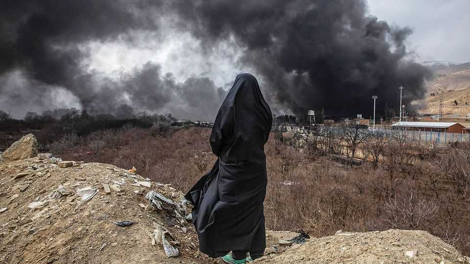
■
特朗普与他的战争部长彼得·赫格塞特（Pete Hegseth）在谈及冲突持续时间时，似乎在引用不同的发言稿。总统试图向市场保证军事行动“非常彻底”，而赫格塞特则表示“这仅仅是开始”。民调显示大多数美国人反对这场战争，与此前冲突（如伊拉克战争）初期的情况不同。在访问塞浦路斯期间，法国总统马克龙宣布将部署十二艘海军舰艇，包括一个航母打击群，前往地中海和红海，以协助防御伊朗袭击。马克龙表示：“当塞浦路斯遭到攻击，欧洲也将遭到攻击。”他同时提出可能派遣法国军舰前往霍尔木兹海峡执行“纯粹的护航任务”。■
英国在向塞浦路斯派一艘驱逐舰方面遭遇困难，尽管伊朗已对岛上的英国军事基地发动袭击。得知英国考虑派航母时，特朗普表示“如果两周前有这些航母就好了”，但“我们不再需要它们了”。以色列加大对黎巴嫩真主党目标的袭击力度，袭击范围扩大至贝鲁特市中心。据估计，新一轮袭击已导致近70万人流离失所。以色列政府警告在黎巴嫩的伊朗政府代表“立即离开，以免遭到袭击”。伊朗向真主党提供物资支持。刚果民主共和国东部城市戈马遭无人机袭击，再次提醒人们该地区冲突仍在持续。戈马自2025年1月起一直由卢旺达支持的M23叛军组织控制。■
■ 多人包括一名法国援助人员在此次袭击中丧生，M23组织将责任归咎于刚果军队。耶鲁大学人道主义研究实验室最新报告指出，快速支援部队——苏丹内战主要参战方之一——系统性摧毁了达尔富尔埃尔法舍尔周边农田和农庄。该发现支持联合国指控该组织在2025年10月占领该城后实施种族灭绝，估计当时数万居民在袭击中丧生。美国随后恢复与委内瑞拉的外交与领事关系，此举发生在将尼古拉斯·马杜罗总统驱逐至纽约接受毒品走私指控审判两个月后。美国于2019年关闭了驻卡拉卡斯大使馆。左翼政权仍掌权但正与美国密切合作，推动其石油产业开放投资。
该县议会初步批准了一项法律，允许外资和私营企业参与采矿投资。总部位于纽约的人权观察组织（Human Rights Watch）报告称，海地安全部队自2025年3月1日至今年1月21日，通过无人机打击行动已导致1,243名人员死亡。其中至少43名成年人和17名儿童并非帮派成员。由政府支持的特别工作组联合私营承包商部署了无人机。人权观察组织认为，部分袭击“似乎属于蓄意的法外处决”。参议院共和党计划于3月中旬举行听证会，确认特朗普提名的新任国土安全部长人选。■
总统在解雇了因处理明尼苏达州移民管控及后续抗议活动引发争议的克里斯蒂·诺姆后，提名马克韦恩·穆林接任该职位。特朗普与诺姆的矛盾源于她花费2.2亿美元用于广告竞选活动。穆林是俄克拉荷马州参议员。德国人口第三大州巴登-符腾堡州（包括斯图加特市）的绿党以微弱优势赢得连任，基民盟以接近第二的成绩紧随其后。极右翼政党德国选择党（AfD）得票率翻倍，位列第三。这是今年八场州和地方选举中的首场，AfD希望在部分选举中超越基民盟，成为右翼最大政党。■
匈牙利与乌克兰本就紧张的关系因维克托·奥班（Hungary's Prime Minister）扣押一批乌克兰黄金和现金而进一步恶化。该批黄金和现金正从奥地利经匈牙利运往基辅途中被匈牙利军方扣押。奥班称这些黄金和现金可能涉及犯罪活动，包括与“政治组织”的关联，被部分人视为针对其选举对手的抹黑行为。乌克兰方面则表示该批货物只是银行间的正常转账。英国执政的工党发布一份名为《守护重要价值》的报告，旨在增强社会凝聚力，提出应对极端主义和保护民众免受歧视的政策，同时促进国家团结。但该报告引发争议，尤其对“反穆斯林敌意”的争议性定义遭到批评，认为该定义可能限制人们批评伊斯兰教的自由。■
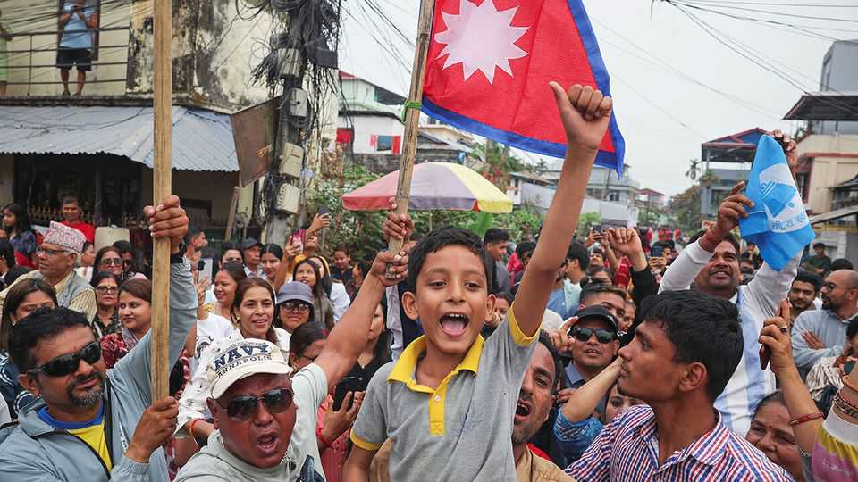
英国议会最终通过一项法案，将彻底清除上议院中剩余的92名世袭贵族。上议院虽有权修改但不能否决下议院提交的法案。数百年来，世袭贵族一直占据上议院席位，但自1999年改革进程启动以来，其人数已逐步削减至几十人。目前上议院800多名成员将几乎全部由政治任命者组成，这可能助长任人唯亲现象。在尼泊尔，民族自由党在选举后有望获得议会超半数席位。该党为进步且经济自由主义政党，领导人巴伦德拉·沙于1月辞去加德满都市长职务。这位前说唱歌手曾是去年9月学生主导骚乱中反对派的象征人物，骚乱导致数十人死亡，总理被迫辞职。■
同以年轻群体为核心的Z世代运动如今已将他推上权力巅峰，打破了传统政党的垄断。自新冠疫情迫使两国中断铁路服务以来，北京与平壤之间的铁路服务首次恢复。首班中朝首都直达列车票秒光，不过官员、媒体和商界人士成功抢购到车票。朝鲜仍对外国人保持封闭，仅允许部分俄罗斯和中国旅游团入境。明年平壤马拉松赛事已取消。去年外国选手曾参与这场精心策划的赛事，赛事尾声设有观众席座无虚席的体育场，以示对朝鲜政权的支持。■
§002 世界经济遭袭原题：An attack on the world economy · 板块：Leaders · 栏目：领导人
在发现关税成本后，唐纳德·特朗普总统如今又发现了战争的代价。3月9日，他宣布对伊朗的攻势将在“非常 soon”结束，导致油价从前一天接近每桶120美元的高点暴跌至接近80美元（战前油价为每桶70美元）。伊朗实际上关闭霍尔木兹海峡，阻断了约15%的全球石油供应。面对中期选举和对通胀疲倦的选民，特朗普释放出无法承受这些代价的信号——正如去年春天市场崩溃后他退出贸易战一样。
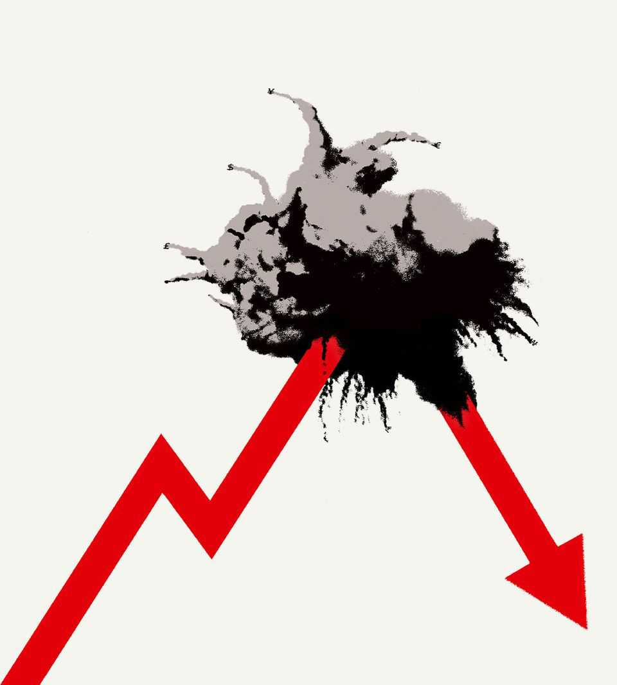
■
然而，特朗普在战争与和平事务上的混乱程度，不亚于他在经济政策上的表现。本文发表时，霍尔木兹海峡仍几乎处于封锁状态，伊朗对航运的袭击导致局势持续紧张。油价已回升至约100美元。与此同时，美国的强硬言论依旧未减，国防部长彼得·赫格塞斯（Pete Hegseth）承诺将比以往更坚决地应对冲突。这种混乱暴露了总统缺乏可行选项的困境。尽管缓和贸易争端基本在他掌控之中，但他无法恢复旧有的能源市场格局。无论事态如何发展，世界正步入能源不安全的新时代。这场战争带来的冲击可能极为深远。诚然，当今世界对石油的依赖程度已低于1973年阿拉伯禁运导致原油价格四倍飙升时，或1979-80年伊朗革命与两伊战争冲击供应时的水平。但当时仍普遍以石油发电。■
如今石油的使用范围已大幅缩小，主要用作交通运输和生产石油化工产品。然而这种演变具有双重影响。当前的石油需求较为顽固，因此在供应受到同等程度干扰的情况下，油价需要上涨更多。而此次供应中断的严重程度更是史无前例：供应损失超过了1970年代石油危机的任何一次。即便在危机最严重时期，交易员也未将霍尔木兹海峡无限期关闭的场景纳入定价考量。在这样的情境下，使需求与供应重新平衡所需的油价可能高达每桶150美元。国际能源署成员国可动用18亿桶的应急储备，目前已释放4亿桶。但实际调用常受管道等基础设施的制约。即便中国已建立庞大的独立储备，也仍不得不暂停部分精炼产品的出口。■
运输作为全球经济诸多环节的关键投入品，意味着瓶颈可能造成严重后果。而冲击不仅限于石油。卡塔尔主要液化天然气（LNG）出口设施在无人机袭击后仍处于关闭状态，导致近五分之一的全球供应被移出市场。其产量扩增计划也已推迟。卡塔尔出口的中断引发亚洲市场抢购。在欧洲，天然气储气罐在季节性时间点异常空置，价格同比上涨逾半。美国虽可出口更多LNG，但因能源密集型数据中心的繁荣，其天然气需求正同步攀升。伊朗则可能将战争拖入持久战，试图暗示并非美国在掌控局势。3月11日，伊朗袭击了霍尔木兹海峡三艘货轮，随后又在伊拉克附近击中两艘油轮。■
如同也门胡塞武装（Houthi rebels）以低技术武器成功袭击红海航运，尽管北约成员国动用高科技手段试图阻止，伊朗政权也学会了用无人机攻击船只和能源设施，同时承受炸弹打击。即便战争结束，世界也将不再如从前。伊朗新任强硬派最高领袖莫塔哈雷尼（Mojtaba Khamenei）现已清楚认识到，能源价格是美国的软肋。在乌克兰，尽管已测试无人机防御系统，仍有伊朗式无人机突破防线。美国不会派军队占领伊朗以遏制导弹发射。美国缺乏能力保护每艘油轮，即便提供廉价保险。因此，能源市场动荡将随地缘政治紧张局势起伏，尤其若伊朗认定需要核武器才能确保安全。■
这是投资者、企业及政策制定者必须面对的新现实。对投资者而言，日益动荡的世界与股市繁荣之间的对比愈发鲜明。中东局势动荡加入威胁市场的长期清单，包括与人工智能相关的悲观情景、私人信贷领域的问题以及对债务国政府信心的丧失。自危机爆发以来，政府债券收益率已攀升，尤其在南欧和英国，后者依赖进口液化天然气。企业面临新的风险溢价，因能源价格反映了战火随时爆发的潜在威胁。正如疫情后及俄乌战争爆发初期一样，他们必须再次深入审视供应链风险，包括对海湾国家的敞口——这些国家的稳定性声誉已受损，未来将面临投资减少和游客减少。■
对政策制定者而言，艰难抉择迫在眉睫。能源存储是解决问题的一部分。特朗普未能在战争前的低油价时期补充美国的石油储备是愚蠢的。如今增加紧急储备的成本将更高。高油价应促使中东以外地区增加供应。在这一趋势出现之前，像美国这样的国家可能难以抵御能源保护主义的诱惑。当石油生产国和炼油企业，包括中国和印度，试图通过限制出口来保护本国消费者免受高油价冲击时，对其他国家造成的损害可能十分严重。央行将不得不应对通胀压力再度抬头的局面，这会加剧经济衰退和工资—物价螺旋上升的风险。■
政治家们将面临选民对能源补贴的强烈呼吁，这种支持在俄罗斯入侵乌克兰后，富裕国家提供的援助超过了许多欧洲国家2.5%的GDP，进一步增加了他们的债务。这将使负担转移到较贫穷的国家，尤其是亚洲地区；2022年，孟加拉国经历了停电。很难预测这场危机如何结束。但即使各国政策得当，也已明显看出，战争使全球经济变得不那么繁荣、更加动荡且更难管理。■ 仅限订阅者：要了解我们如何设计每周的封面，请订阅我们的每周封面故事通讯。
§003 中国世袭精英阶层正在成型原题：China’s hereditary elite is taking shape · 板块：Leaders · 栏目：领导人
过去半个世纪，中国从普遍贫困中创造出巨额财富。如今，棘手的问题来了：如何将这些财富传递给下一代。对中国而言，这构成了一种新且被低估的风险。按照当前的发展轨迹，中国现代历史上首次大规模代际财富转移将加剧不平等，固化特权，并引发不满情绪。致力于“共同富裕”的政府，对这一过程可能带来的影响却出奇地漠视。1978年，中国经济起飞前夕，平均家庭资产仅值约1.5万美元（按今日货币计算）。如今，这一数字已攀升至约17万美元，实际增长了100倍。
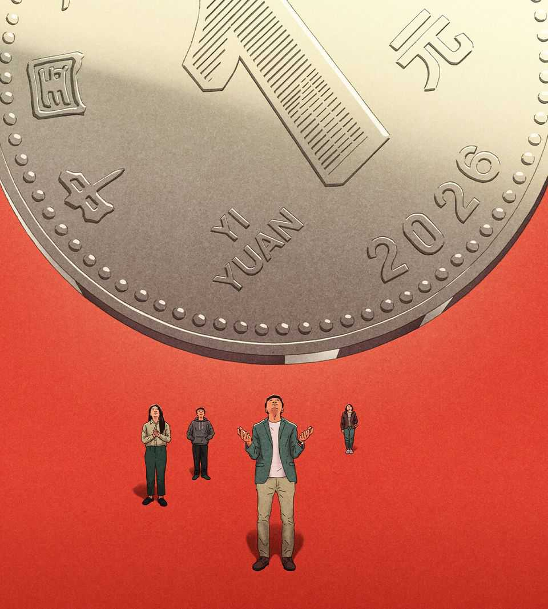
可惜，财富分配不均。根据世界不平等数据库（World Inequality Database）的数据，中国最富有的10%人口如今拥有近70%的私人财富总量，与美国大致相当，远超多数发达国家。而这一群体本身，如同中国多数人一样，正迅速老龄化。他们的继承人即将获得巨额财富。在富裕国家，日益增长的继承财富正在催生一个更倾向于寻找税收漏洞而非努力或创新的阶层。中国将面临这些问题，甚至更多。首先，中国的继承权阶层尚属新生事物。直到上世纪90年代中国允许居民购房，人们才开始积累大量资产。与此同时，商业繁荣兴起，造就了数百万百万富翁和数百位亿万富翁。在2016年，身家至少50亿元人民币（约合7.2亿美元）的人群中，23%年龄超过60岁；而如今，这一比例已升至49%。■
中国社会的另一独特特征是人口结构。尽管一些超级富豪家庭曾无视政府的计划生育政策，但多数城市居民仍遵守该政策。因此，两位父母的资产即将全部流向单一继承人。新俱乐部和婚介机构的兴起，帮助最富有的夫妇相互匹配，进一步放大了他们继承的财富优势。还有一个因素正在拖累经济增长。尽管收入差距略有缩小，但财富的重要性开始凸显。这标志着中国社会的急剧转变，从一个人们相信努力工作就能致富的时代，转向更现实的接受——真正决定成败的是拥有“羊水”般的资源，正如我们本周简报中一位人士调侃所言。与此同时，房价的大幅下跌已严重影响几乎所有中国中产阶级，对他们而言住房曾是最大的资产。
超级富豪们凭借更多元化投资组合，处境相对更好。最严重的后果可能是社会出现新的裂痕。多年来，中国人民一直是乐观主义者，相信人生本就公平，即便最贫困者面对重重困难也依然抱有希望。但近期调查显示悲观情绪显著上升——考虑到中国舆论监测的难度，这种趋势可能被低估了。政府的一大担忧是社会不稳定，尽管它拥有压制骚乱的工具。另一大隐忧是年轻一代可能选择退出激烈竞争或坐享财富。青年失业率已超过16%，一些人开始质疑永无止境的竞争如何让中国生活变得如此压力重重。随着巨额遗产的分配逐渐展开，曾推动中国崛起的奋斗精神或将逐渐消退。■
持续的不平等还会加剧经济失衡：富裕群体比贫困人口更少地消费收入，这解释了中国消费率偏低的现象。尽管习近平主席呼吁更大程度的平等，但官方在继承问题上的思路明显滞后。中国共产党（中国共产党）即便听起来匪夷所思，也反对对财富进行重大再分配。它对福利援助持有撒切尔式的道德反对，担心这会让人变得懒惰。它更倾向于强劲的经济增长，从而更公平地分配收益。但忽视积累的财富将确保深层次的不平等根深蒂固。解决方案不必激进。中国应聚焦于资本征税，这是当前财政体系中显而易见的漏洞。中国既没有遗产税，也没有经常性的财产税，其资本利得税也充斥着大量豁免条款。■
中国的所得税体系也因复杂性而受到制约。结合消费税削减，过去十年间，不包括社会保障缴费在内的总税收收入从GDP的18%降至13%，约为同类国家的四分之三。观察人士担忧习近平正将中国带回马克思主义；鲜有人注意到，或许无意间，他已使中国成为部分避税天堂。自上世纪90年代初以来，中国屡次承诺考虑引入遗产税，却始终未实施。同时，对房产税的征收也进展缓慢。为何拖延？部分官员指出担忧税收可能抑制增长，且富裕阶层可能将资产转移海外。但这两项论点均不具说服力。若不平等持续加剧，同样可能损害增长。而中国凭借严格的资本管制，具备阻止财富外流的条件。■
一个更具说服力的解释是，中国共产党担忧政治后果。征税财富需要资产申报，这在推行房产税时造成了阻碍，部分原因在于许多腐败官员拥有多个房产。迫使政治精英们坦白将暴露出普遍存在的贪腐行为，并在房地产市场疲软时引发提前抛售房产的浪潮。在官僚体系之外，还需要向公众解释提高税率的合理性，尤其是向那些损失最大的富裕阶层解释。习近平在税收问题上的不作为提醒人们，尽管他拥有极大权力，但仍对激化社会反抗保持谨慎。有时被赞颂为技术官僚精英的中国领导人，一贯对显而易见的错误反应迟缓。他们曾过于犹豫不决地终止独子政策、化解房地产泡沫以及退出清零策略。■
他们再次面临一个缓慢但显而易见的问题：巨额财富的转移。危险在于，十年或二十年后他们醒来时，会发现已在一个失望的民众之上培育出一个永久的富裕精英阶层。■ The Economist的订阅者可订阅我们的Opinion通讯，该通讯汇集了我们的社论、专栏、特稿和读者来信中的精华内容。
§004 伊朗核计划：无良策可选原题：There are no good options for Iran’s nuclear programme · 板块：Leaders · 栏目：领导人
诸多因素使伊朗政权令人憎恶，但使其尤为危险的是其发展核武器的企图。该政权承诺不制造核弹，却坚持将铀浓缩至军用级别。这一行为长期支撑着其对邻国的威慑以及对以色列生存的威胁。若美国与以色列2月28日发动的战争算作哪怕狭义上的成功，也必须将伊朗的核野心推迟数年，理想情况下彻底终结。■
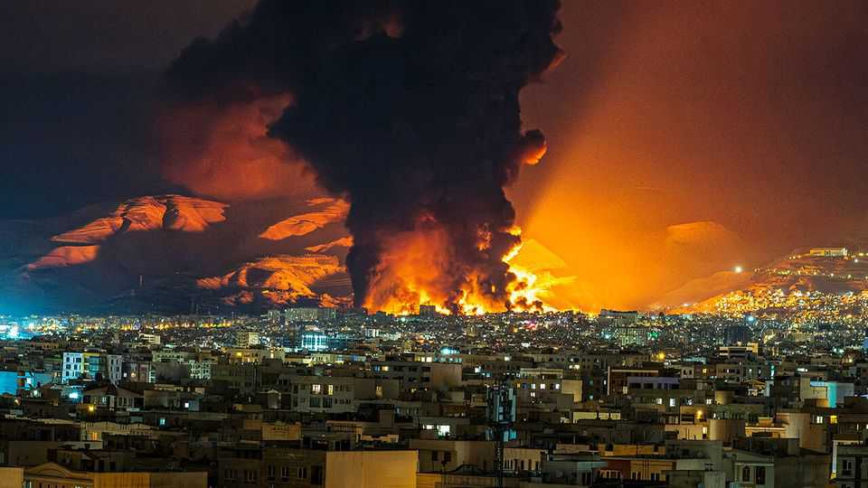
最理想的方式是政权被一个以改善民众生活、与邻国和平共处为宗旨的民主政府取代。这样的政府对周边国家构成的威胁最小。然而，空袭战争难以促成这种变革，甚至可能使局势恶化。政权显然已意识到，作为关键力量意味着成为目标，而核计划若要提供保护，就必须彻底推进。新任最高领袖穆罕默德·哈梅内伊（Mojtaba Khamenei）被认为比其已故父亲和前任更急于发展核武器——尤其在家人遇害后，更可能寻求报复。在伊朗，这些论调可能掩盖了这样一个事实：美国和以色列的导弹与轰炸对伊朗经济造成了巨大破坏。■
尽管知道未来对核武器的任何研究都将遭遇超乎寻常的火力打击，哈梅内伊（Khamenei）或许仍会容忍这种风险。战后伊朗将拥有先发优势的核计划。目前约400公斤高浓缩铀埋藏在国内，足以制造约十枚核弹。无论落入敌对政权之手，还是在秩序崩溃后由寻求买家的军阀掌控，这种裂变材料都构成严重威胁。美国有三种选择。其中一种方案得到以色列部分人士支持，即派遣特种部队夺取这些材料。正如我们所述，这将需要一场规模庞大、持续数日的占领行动，包括一支由上千名士兵保护的特种突击部队及持续的空中支援。此方案虽可行，但代价高昂且风险巨大，但美国已失去行动的突然性，情报显示这400公斤材料可能分散在两个甚至三个地点，部分可能难以触及。■
此外，尽管伊朗需要从头开始重启铀浓缩，但它仍保有相关技术。这引出第二种选择，即每次伊朗构成威胁时就对其发动空袭。这场战争已表明这种方式代价高昂。伊朗已意识到，即使其低技术无人机和导弹也能搅动全球能源市场，扰乱海湾国家的稳定，而这些国家向投资者和侨民宣传自己是安宁的绿洲。美国选民显然会反对再次开战，如果每次冲突只能将时间重新推回原点。美国战略家们也不愿在关注重心转向中国时陷入中东泥潭。这使得与政权达成协议以终结其核威胁成为唯一可行选项。这是一项艰难的选择：哈梅内伊先生可能拒绝协议。政权可能接受协议后却背信弃义。然而，这仍是最佳选项。伊朗在轰炸后已筋疲力尽。■
要重建经济，它需要解除制裁。作为交换，它可能愿意在停火协议中达成永久性协议，其中政权同意终止浓缩铀活动、接受对其核计划的监控，并稀释或清除高浓缩铀。这将是一个令人憎恶的妥协。2015年，奥巴马曾达成过类似的临时协议，但特朗普于2018年废除了该协议。如今八年两场战争过去，他仍无更优选择，这无疑是对其伊朗政策的严厉批判。■ 订阅者可注册《经济学人》观点通讯，获取我们领袖文章、专栏、特邀评论及读者来信的精华内容。
§005 如何用拉丁语教训唐纳德·特朗普 领导人原题：How to teach Donald Trump a Latin lesson · 板块：Leaders · 栏目：领导人
唐纳德·特朗普在2024年曾说：“西班牙裔民众爱我。”这并非空穴来风。当年他赢得了48%的拉丁裔选票，远超此前任何共和党总统候选人。许多西班牙裔群体当时正被通胀挤压，大多将责任归咎于总统乔·拜登。许多人对边境混乱感到不满，当时宽松的难民收容制度曾吸引大量来自贫困国家的移民。特朗普承诺降低生活成本并驱逐犯下罪行的移民。许多拉丁裔民众起初信以为真，如今却感到懊悔。
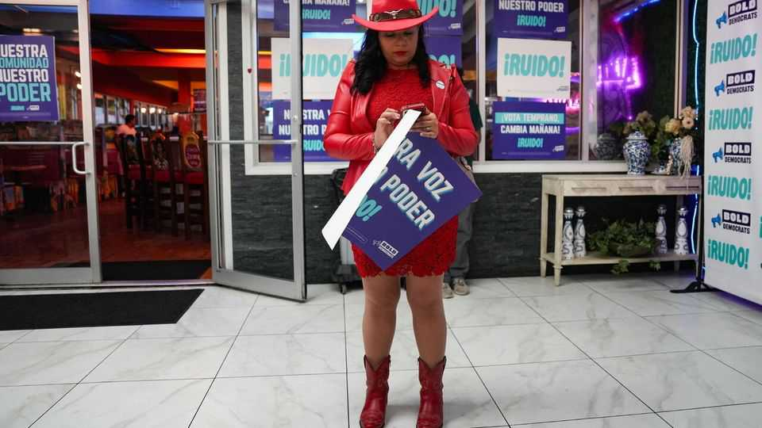
特朗普并非在遏制物价，反而通过关税和对伊朗的“选择性战争”推高了物价。他也没有专注于驱逐性侵者和帮派分子，其执法部门却在抓拿老奶奶和园丁。得克萨斯州的建筑商正挣扎着建房，因为拉丁裔泥瓦匠和电工因恐惧而不敢上班。联邦特工未经司法授权就闯入私人领地。拉丁裔群体感到被戴着面具、趾高气扬的男子包围。难怪特朗普在拉丁裔群体中的支持率暴跌至22%。这将使共和党在11月中期选举中更难守住国会。他们在得克萨斯州等地的选区划分假设拉丁裔支持率会保持高位，如今可能反噬。全国范围内，若选举胶着，拉丁裔群体的崛起可能逆转数十个席位。■
最新《经济学人》/YouGov民调显示，拉丁裔群体更倾向支持民主党候选人，比例为43%对27%。过去六个月，民主党翻转众议院的预测市场概率从69%升至85%。参议院方面，仅三分之一席位面临选举，民主党胜算从29%升至47%。失去拉美裔支持并非共和党可能遭遇惨败的唯一原因。大量美国民众对高物价和移民与海关执法局（ICE）执法人员像法外武装力量般行事感到愤怒。然而历史表明，当政党的政策疏远某一族群时，政治影响往往持续发酵。1952年至1988年间，共和党总统候选人十次中有九次赢得加州，但1994年一名共和党州长支持全州反移民公投后，共和党再未赢得该州。■
政府已意识到问题的存在，并试图缓和其语气。曾高调站在半裸拉丁裔男子笼子前的克里斯蒂·诺姆（Kristi Noem）已不再担任国土安全部（DHS）部长。移民与海关执法局（ICE）特工的招募广告也不再直接针对具有偏见的男性。DHS官网曾宣称“美国已被罪犯和掠夺者入侵，我们需要你将他们驱逐出境”，如今则呼吁“守护者”甚至“分析型人才”。白宫已要求国会共和党议员停止谈论“大规模驱逐”，转而强调清除罪犯。然而政策核心仍未发生显著变化。许多拉丁裔仍生活在恐惧中，担心自己或亲属会被街头抓走、戴上手铐并被迫与亲人分离。
一些身处特朗普圈子的人明确表示，他们认为某些美国人比其他人更符合美国人的标准。这一切为民主党留下了可乘之机。他们仍可能绊倒自己。特朗普或许能通过，例如推翻古巴的共产党政权，重新赢回部分人气。但如果民主党将自己定位为经济可预测性的代表，而非随意加征关税和自食其果的油价冲击，并以法治而非带有种族色彩的欺凌作为主张，这不仅会吸引对现状失望的拉美裔美国人，也会赢得美国民众的广泛支持。■ 订阅《经济学人》的读者可注册我们的观点通讯，汇集了最佳的社论、专栏、特稿及读者来信。
§006 海地需要秩序，然后才是选举原题：Haiti needs order first, then elections · 板块：Leaders · 栏目：领导人
帮派分子控制着海地首都太子港的大部分地区，他们无孔不入地勒索平民。行人必须支付通行费才能进入由帮派控制的街区；商贩则需缴纳“税款”，甚至包括食品。结果导致社会崩溃。海地人遭受严重饥饿的概率，比战乱频仍的苏丹民众还要高。仅10%的诊所能够正常运转。约140万人被迫逃离家园——数量与2010年大地震造成的流离失所者相当。但与那次自然灾害引发的迅速人道主义响应不同，海地的政治崩溃令捐助国陷入绝望。
由联合国支持的安全行动自2024年起一直在运行，但对改善公共安全几乎毫无成效。如今，希望终于出现了。数年来首次，帮派势力开始撤退。2025年，海地国家警察在私营安保承包商协助下开始反击——其中包括由黑水公司创始人埃里克·普林斯创立的Vectus Global公司。他们使用小型空中自杀无人机追捕帮派成员，已有数百人被击毙。联合国安全行动正获得美国支持进行改革，未来将增加五倍人员，并获得明确的独立打击帮派势力授权。首批部队将于四月从乍得抵达。太子港街头显示出些许改善迹象，但仍有大片区域并不安全。
自2024年起担任代理总理的阿里克斯·菲尔斯-艾梅（Alix Fils-Aimé）倾向美国，带来了相对稳定的领导力。这一切为海地数年来首次恢复某种程度平静提供了契机。但重建一个基本运作的国家远不止铲除帮派那么简单。海地需要一个拥有民主授权的政府来重建国家，以及一支以本国利益为重的强力文职警察力量。这意味着举行选举时，海地民众能安全地按照自己的意愿投票，而非被持枪的犯罪分子胁迫。这是一项艰巨的任务。自1990年首次相对自由的选举以来，海地经历了政变、军事统治、选举舞弊和短暂的外国占领。■
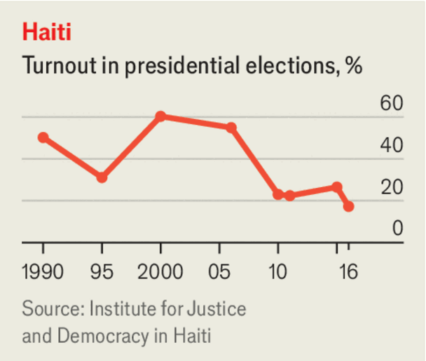
自2016年以来再未举行选举，当时失败的香蕉种植者若弗内尔·莫伊兹（Jovenel Moïse）仅获得不到10%注册选民支持便赢得总统职位。投票率仅为18%，创历史最低纪录。莫伊兹后来遭暗杀。海地选举委员会已将选举定于8月举行，但该国似乎短期内难以做好准备。与其仓促举行选举，政府及其国际伙伴更应努力改善安全局势。无人机行动必须精准且适度。当新一批联合国维和部队抵达时，应首先保护海地主要道路，使粮食、物资和人员得以流通。此举将缓解饥饿状况，并为经历七年深度衰退的经济提供复苏机会。■
海地警察部队——自1995年起才真正实现文官控制——应率先巩固任何成果，逐街区推进，使社区不仅摆脱帮派控制，更达到基本安全水平。届时海地人将真正拥有选择权。帮派无疑会支持易于操控的候选人，旧精英集团成员也会尝试东山再起。海地真正需要的，若非曼德拉式人物，至少也应是一位能把基础事务做对的领导人：井然有序的街道和非掠夺性的国家机器。然而目前尚不清楚谁会成为这样的人选。（菲尔斯-艾梅先生（Mr Fils-Aimé）无法参选。）不过，治安改善或许能为候选人争取时间浮出水面。海地人若铭记糟糕领导带来的后果，应仔细审视每位候选人。■
《经济学人》的订阅者可注册我们的Opinion新闻通讯，该通讯汇集了我们最优秀的领导文章、专栏、客座文章和读者来信。■
§007 中国正面临一种新型现象：继承财富 简报原题：Is wrestling with a novel phenomenon: inherited wealth · 板块：Briefing · 栏目：简报
陈凯将他的工作比作推广安全套。人们开始听到关于继承财富可能引发问题的警示故事，因此开始关注如何保护自己，他说。但存在文化障碍：立遗嘱，甚至拥有大量可传承的财富，都是现代中国的新概念。私营企业与私人财富——在共产党早期统治时期被彻底清除——仅在过去40年左右才重新出现。 ■
中国启动市场化改革后，第一代富裕人群正逐渐离世，因此，陈先生的国家支持慈善机构——中国遗嘱登记中心——正在帮助老年人起草并提交遗嘱。然而，即便是陈先生，也对中国的首次大规模代际财富转移感到有些矛盾。一小部分社会群体即将继承巨额财富，而与此同时，经济长期放缓正削弱年轻一代的经济前景。陈先生认为，这部分未获得的收入应征税：“一个社会主义国家不引入遗产税是荒谬的。”直到20世纪70年代末，邓小平作为中国最高领导人，才开启经济改革，提出“让一部分人先富起来”，作为实现“共同富裕”的第一步。在这段时间里，许多人已经富裕起来。■
仅2025年，中国大陆就诞生了70位新晋亿万富翁，总数达到470人（瑞银集团报告）。（美国则有924位。）这些亿万富翁合计身家约1.8万亿美元。其中几乎没有任何财富是继承所得。中国大陆98%的亿万富翁为白手起家，相较之下，香港为66%，台湾为69%。但中国财富正日益集中在年长者手中。据胡润研究公司数据（见图表1），2025年，身价至少50亿元人民币（约合72亿美元）的人群中，60岁以上的占比达49%，较2016年的23%显著上升。据财富情报公司Altrata估算，从2025年开始的十年间，身家超500万美元的中国富豪将传递2.1万亿美元财富。这将引发复杂局面。■
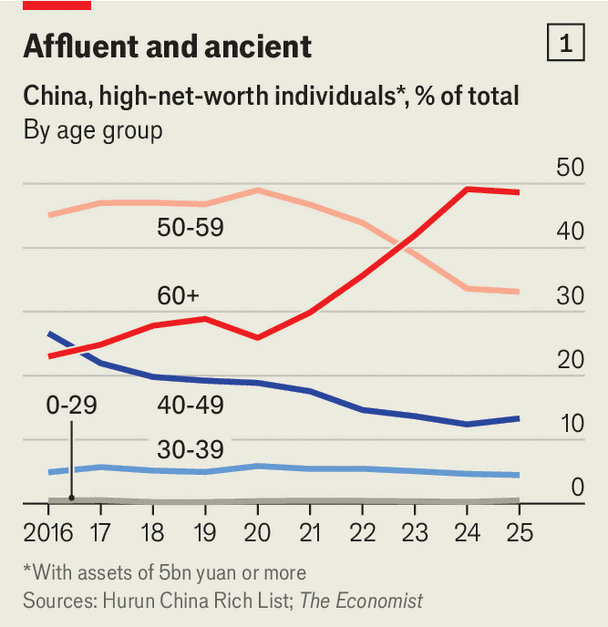
清华大学高皓（Gao Hao）研究了2003年至2024年间中国上市公司创始人或控股股东的死亡案例，发现共有67人，平均去世年龄为64岁。其中仅有6人立有遗嘱。最著名的遗产纠纷案例之一是宗庆后（Zong Qinghou），这位2024年去世时年仅79岁的亿万富翁。他出身贫寒，却将一家酸奶饮料企业发展为娃哈哈集团，曾是中国首富。其白手起家的传奇故事象征着改革开放时代看似无限的机遇。据传其独生女继承了全部资产，但一年后有三人声称是其子女，要求分割超过20亿美元的遗产。这场尚未解决的法律纠纷引发了全国关注。■
高先生表示，突然间许多企业家都“想深入了解哇哈哈事件的来龙去脉”。这仅仅是冰山一角。据《经济学人》统计，2006年至2015年间，涉及继承的法院判决不足9万件。而2016年至2025年，这一数字几乎增长了五倍。这反映出中国家庭结构日益复杂，离婚率上升、未婚父母增多、无子女夫妻、子女海外居住等情况频发。中国法律规定，父母、配偶和子女（包括非婚生子女）在遗产分配上享有均等权利，但部分人希望将财富传给孙辈或未婚伴侣。更复杂的是，许多遗嘱并不合法。这一问题不仅困扰着超级富豪。中国5亿中产阶级也积累了财富，包括通过公房私有化获得的资产。■
城市住房自有率从1980年的20%跃升至2022年的96%。尽管近年来房价出现下跌，家庭财富中仍有约70%投资于房产。监管机构日益面临诸如江女士的案例：这位46岁的上海单身女性于12月去世时既无遗嘱也无近亲。对遗产管理不善的担忧已普遍到催生出专门课程，帮助富人子女为未来责任做准备。上海中欧国际工商学院家族办公室与财富管理项目负责人奥利弗·瑞表示，预计到2030年代中期，约300万家族企业将完成传承。"我们仅用40年就走完了西方耗时百年以上的发发展路径。"■
他告诉在一场关于如何不挥霍继承财富的研讨会中的二十余名年轻男女：“我们的财富积累速度要快得多。”另一位演讲者得意地说道：“你们的家族企业平均价值达百万级别。”确保继承财富的一种策略是富裕家庭之间的联姻。“这些精英阶层日益增多的婚姻纽带就像蜘蛛网一样，”胡润（Hurun）的 Rupert Hoogewerf 表示，“他们当初都是白手起家，但下一代却已自成一派。”无论如何，财富正日益向少数人集中。据法国经济学家托马斯·皮克提（Thomas Piketty）领导的全球不平等数据库（World Inequality Database）的估算，2024年中国最富有的1%人口持有30%的财富，前10%则持有68%。这一比例较30年前分别从16%和41%上升（见图表2）。■
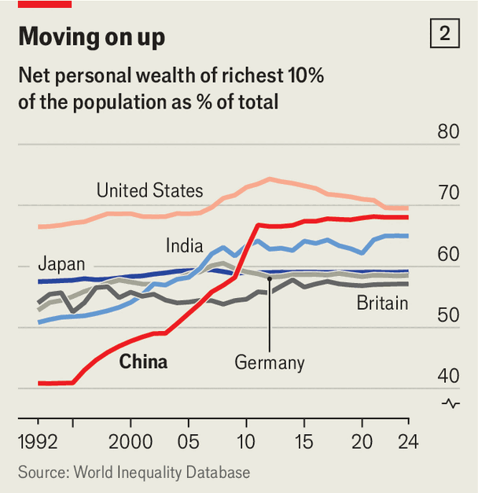
许多中国人曾将财富和成功视为勤奋或智慧的体现。富人被视为进取梦想的广告。2004年，迈克尔·阿利斯基（Michael Alisky）、斯科特·罗泽尔（Scott Rozelle）和马丁·怀特（Martin Whyte）在论文中指出，62%的中国人认为“努力终将获得回报”，并将贫困归咎于能力不足。但近年来经济增速大幅放缓，普通中国人对前景变得悲观。2023年，认为努力终有回报的比例骤降至28%。人们现在将机会不平等视为贫困的最大因素；人脉和出身富裕被视为致富的关键。他们认为社会流动性已明显放缓。2004至2014年间，70%的受访者认为自家境况比五年前更好或大幅改善；2023年这一比例降至39%。■
16至24岁未接受教育的群体失业率高达17%。公务员岗位和国有企业职位因稳定性与福利待遇而备受追捧，每个职位往往有数百甚至数千人申请。然而，人们对这些职位被认为靠关系获得的观念日益不满。这种观点在人们对“萝卜坑（luobokeng）”的抱怨中尤为典型——这些职位描述理论上对所有人开放，但实际却针对特定人选。今年江苏卫视春节联欢晚会（Jiangsu Spring Festival Gala）播出的关于“萝卜坑”的小品引发热议，因其反映了民众的“隐性不满、愤懑与无助”，正如一位博主所言。■
在贵州（Guiyang）这座中国最贫困省份的省会，龙婉云（Long Wanyun）描述了她和朋友们如何在小红书（Xiaohongshu）上观察富家孩子的精心策划生活。他们开玩笑说，如今成功人士与普通人的主要区别不在于高考成绩或毕业后的职业选择，而在于他们出生时的羊水环境。“出生决定未来，”26岁的龙婉云说，“近年来我们所有人都感受到这一点。我们必须学会接受自己只能是普通人。”当然，并非所有人都能接受。45岁的王朝阳（Wang Caoyi）在贵阳店铺前清扫台阶时，对经济状况怒火中烧。“没人赚到钱，”她指着街对面关门歇业的店铺说道。她称自己的家庭为“三代贫困”。■
她正在帮助父亲偿还债务，计划告诉儿子不要结婚。“如果所有钱都集中在一个人手里，就无法流通。”她抱怨道。贫富差距扩大令中国领导人忧心。“实现共同富裕不仅是经济目标，更是关乎我们党执政根基的重大政治议题。”习近平主席在2021年曾如此强调。当时他指出政府正加大力度遏制不平等现象。“我们不能让贫富之间出现不可逾越的鸿沟。”常被引用的儒家格言说：“勿忧匮乏，当忧不均。”习近平设定了到2050年实现“共同富裕”的目标，并计划在2035年前取得实质性进展。■
但中国共产党也强调，共同富裕的要义是“先做大蛋糕，再公平分配”，而非“劫富济贫”。它提出要构建“橄榄型”财富分配格局：拥有强大中产阶级，贫富群体都较少。党提出通过三管齐下减少不平等：提高贫困人口收入、政府援助与慈善事业。党也时常批评富人。在“共同富裕”行动中，一些国有金融机构将银行家年薪上限设为40万美元，并要求年收入超过该数额者退还差额或奖金。它定期敦促私营企业向慈善机构捐赠更多。其反腐运动常将商界领袖或官员作为打击对象。■
富人深知，无论其行为多么正直，国家都可能随心所欲地没收他们的财产。然而，该党却拖延数十年未引入遗产税。1950年其首次建立税收体系时曾考虑纳入遗产税，但为促进战后长期内战后的经济复苏，最终决定放弃。1993年和2013年，该党再次考虑这一方案，但均未实施。去年，立法者在全国人大（NPC）上提议引入遗产税，以促进社会公平、慈善事业和消费。全国人大认可征税遗产的合理性，但敦促进一步研究，将行动推迟至“适当时机”。一些经济学家认为，在经济放缓期间引入新税种是不妥的。■
中共将减税降费描述为“应对当前下行经济压力的重要政策选择”。同时也有担忧可能引发资本外逃，尽管中国实施资本管制，这种风险依然存在。此外，可能存在既得利益因素：许多中共高层官员本身富有。遗产税不仅会削弱这些家族的财富，还可能暴露出高级官员中普遍存在的贪腐问题。目前尚无迹象表明，对不平等和官员虚伪作风的不满会引发社会动荡。
但确实似乎正在改变年轻人的志向。“亲爱的自己，我爱你！”一则迷因如此呼吁——本质上是在号召停止奋斗和挥霍。“努力未必成功，但不努力确实感觉很好”，一篇解释该迷因的博客文章如此论证。“一代人紧握权力，只让极少量资源从指缝中溜走。等到年轻一代登场时，只剩下几粒米了。”这种风潮是“躺平”现象的最新变体——这是对中国耗尽精力的内卷竞争的委婉说法。贵州的Long女士对此颇为满足，她只需赚够买浓缩咖啡和肩上那件时尚的Adidas Tang夹克的钱。“在当前经济下行期，我们必须耐心等待风向转变，”她说。一些年轻人则乐于依靠父母生活。■
啃老族（Kenlao），意为“啃食长辈”，是对依赖父母经济支持者的贬义称呼。近年来，这类人逐渐被“全职子女”取代，后者可能通过做家务换取食宿。浙江一位文学教授之子郑尚杭曾学习电影导演与艺术管理专业，他在国企的工作让他苦不堪言，因此当母亲表示欢迎他回家时，他选择辞职。“我不担心下一顿饭，父母已为我解决了大部分焦虑。”他说。他将时间花在拍摄生活视频上，而非寻找其他工作。“辞职后，我最在意的就是如何每天让自己开心。”其他年轻人则认为婚姻比辛勤劳动更能实现向上流动。■
一个完整的行业应运而生，提供“名媛课程”，教授女性如何吸引富有的丈夫。一家婚恋咨询公司也以相同宗旨在社交媒体上推广服务，其视频标题为“婚姻永远比努力更重要”。该党长期以来担忧，一个勤劳的民族会逐渐懈怠。《人民日报》作为党报，2017年一篇社论呼吁道：“我们不能以‘阶级固化’为借口来为丧失奋斗精神开脱。普通家庭的孩子应更加努力，并坚信每一分努力终将获得回报。”然而，就连一些富人似乎也正在失去奋斗的意志。■
陈雨慧（Chen Yuhui）的父母曾创办一家电子合同制造商，2018年将其出售。她在沪举行的研讨会上总结了其父母辈所处的风险时代与当前时代的差异。其父母辈让中国成为世界工厂，而家族如今依靠投资收益维生，由她负责管理。"坦率说，他们当年80%的成就来自时代红利，"她表示，"第二代不该冒险，我们应守护财富。"王伟阳（Wang Weiyang）是Tucson公司首席执行官，该公司为名人、科技巨头和金融家定制家具。
他于改革开放时期创办了第一家企业。“对外开放后，什么东西都能卖，”他回忆道。“我们这代人充满活力。”如今，这位和蔼可亲的老板感慨，国内经济和出口市场都变得更难应对。“机会比以前少了，为什么？一切都已成定局，”他说。59岁的王先生穿着厚重的Valentino靴子和喇叭裤，看起来并不像即将步入暮年的模样。他办公室墙上陈列着20场马拉松比赛的奖牌。更值得一提的是，他的儿媳凯西（Ke Xi）似乎也充满干劲。这位26岁的姑娘出身普通家庭，一直渴望“向上走”。她嫁给了王先生的儿子，但至今仍感觉无法放松。
她负责图森的市场营销和数字项目，并与丈夫王莫一起，后者曾在澳大利亚蓝带厨艺学院学习后返回，致力于发展图森的出口业务。两人计划对这家企业进行现代化改造，甚至希望未来能将其上市，从而为子女提供精英教育，包括在美国顶尖大学深造。凯女士表示，只有当他们的净资产达到八位或九位零时，她才能“躺平”。然而，尽管听起来充满进取心，凯女士并不认为存在无限机遇。她自认为是“内卷”的典型代表，这一术语用来形容竞争激烈到失去意义的恶性循环。她坚持认为，“并非如今的年轻人不愿努力”，“只是即便他们努力了，也明白这毫无意义。”■
这可能意味着从1到1.2的微小变化，而以前则可能意味着从1到50或100的大幅跃升。他们似乎没有上限，但现在我们的上限却被阶级完全压低了。■
§008 简报原题：The damage to the world economy from the Iran war will be severe, but uneven · 板块：Briefing · 栏目：简报
石油冲击，一代经济学家曾被教导这是遥远过去的遗迹，当时能源生产集中于中东，全球经济尚未达到如今的能源效率水平。然而过去两周，旧有的思维方式已从废墟中重现。事实证明，海湾地区足够大的冲击仍可能引发深刻危机。如今从霍尔木兹海峡传出的冲击尤为巨大。伊朗导弹已将约15%的全球石油供应困在海峡对岸。
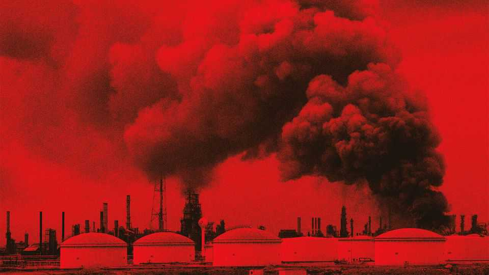
这大约是1970年代世界所经历动荡的两倍，抵消了自那时以来世界经济能源强度下降一半的事实。尽管国际能源署（IEA）于3月11日宣布将动用最多4亿桶紧急储备，但这仅是权宜之计，且自身也面临瓶颈。公告发布后油价上涨。全球约五分之一的液化天然气（LNG）运输已暂停，冲击正蔓延至其他大宗商品。以天然气为原料生产的化肥价格飙升，引发粮食短缺的担忧。作为石油精炼副产品的硫磺价格也在上涨，这将反过来影响铜冶炼。氦气短缺正威胁计算机芯片生产。国际货币基金组织（IMF）敦促各国政府为“难以想象”的局面做好准备。■
鉴于霍尔木兹海峡实际上已关闭，且缺乏确保其重新开放的手段，油价波动相对温和。截至《经济学人》付印时，原油价格仅比战前水平高出约25美元/桶，此前因唐纳德·特朗普于3月9日表示其“在伊朗的小规模行动”已“非常彻底、基本完成”，油价一度回落。但随着美国总统未能兑现该承诺的天数增加，市场平衡供需的难度持续上升。无人知晓需要何种价格才能永久削减全球15%的原油需求。若霍尔木兹海峡封锁持续至月底，部分分析人士预计原油价格可能飙升至150美元甚至200美元/桶。这将引发全球衰退和通胀飙升——重现上世纪70年代的“滞胀”局面。■
即便在中等情景下，即部分石油仍能通过海峡运输但多数航运仍受阻，全球经济所受的冲击也将严重。严重，但影响不均。观察美国金融市场，你不会得出经济末日即将来临的结论。标普500指数在三月下跌了1.5%。十年期国债收益率上升，但尚未突破过去三个月的高点。看欧洲情况则略显严峻：欧洲股市本月下跌5-6%。亚洲情况更为糟糕：日本股市下跌7.3%，韩国股市跌幅超过10%。换句话说，金融市场预期某些地区将承受更重打击。自2019年以来，美国因页岩气革命成为净能源出口国，这意味着其经济部分领域受益于油价上涨。■
其经济对石油的依赖程度也远低于以往。自1970年代以来，石油消费与实际GDP之比已下降逾70%，因车辆能效提升且廉价天然气已取代石油用于供暖和发电。尽管美国液化天然气（LNG）出口近年有所增长，但尚未达到足以缩小与欧洲气价差距的程度，目前欧洲气价是美国的五倍以上。即便如此，美国消费者已明显感受到油价上涨压力，低税率使油价对石油市场波动尤为敏感。经验法则显示，每上涨10美元的油价会使每加仑汽油价格上涨约25美分。自战争爆发以来，加油站平均油价已上涨近20%，战争持续时间越长，涨幅越高。■
如果消费者因此减少对其他商品的支出，经济将遭受本地需求的打击，尽管石油业者利润大幅上升。这并非美联储能够轻易通过降息抵消的挑战，因为美联储在战争前就已面临高于目标的通胀压力。交易员仍预计降息，但幅度较战前有所减少：他们对一年后利率水平的预期已从2月底的约2.9%上升至3.3%，这给国债收益率带来上行压力，而通常在全球紧张时期国债收益率应趋于下降。相比之下，欧洲更易受到通胀冲击。为摆脱通过管道输送的俄罗斯天然气，欧洲不得不严重依赖液化天然气（LNG）。国际能源署（IEA）最近预测，欧洲将需要进口全球LNG总运量的四分之一。■
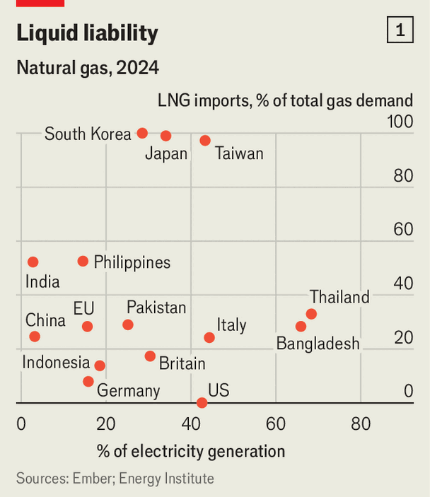
欧洲面临液化天然气（LNG）价格飙升的风险。液化天然气现货市场爆发竞标战，运输路线因报价上涨而调整。原本从美洲驶往西班牙的油轮“Clean Mistral”突然转向亚洲。3月9日，欧洲基准天然气价格升至每兆瓦时56欧元（约合65美元），较冲突前上涨逾75%，尽管随后略有回落。短期内重现2022年俄乌战争后能源冲击的可能性较低——当时天然气价格一度飙升至每兆瓦时300欧元，欧元区通胀率突破11%，欧洲经济陷入停滞超过一年。不过，天然气价格高企仍会推升通胀，尤其在英国，天然气仍占电力生产近30%（见图表1）。■
央行通常试图忽视能源冲击，因为它们应只会引发通胀的短暂上升。但这一策略仅在普通民众预期通胀会再次回落时才有效——而这一假设在经历了数年通胀率持续高于央行2%目标后显得存疑。高盛银行估计，经历高通胀期后，能源价格10%的上涨会使欧盟的长期通胀预期上升约0.12个百分点，约为正常效应的三倍。如果霍尔木兹海峡的中断持续五周，该行预计欧元区通胀率可能在未来一年上升近1个百分点。事实上，在战争爆发前，交易员曾押注欧洲央行（ECB）即将开始降息。如今他们却预期相反。■
市场预计年底前将加息两次，每次加息幅度为25个基点，投资者正在重新评估通胀前景。央行可能面临困境，恰逢能源价格上涨对消费者和企业的压力开始显现。如果央行加息，甚至可能加剧这种痛苦。亚洲经济体则更为脆弱。该地区对进口能源的依赖程度远高于其他地区。海湾地区向中国、印度、日本和韩国提供的海上原油占其进口量的40%至80%，并提供大量天然气。2025年，亚洲吸收了通过霍尔木兹海峡运输的原油约87%和液化天然气（LNG）约86%。尽管中国每日进口原油超过1100万桶，但政府和商业储备足以覆盖超过100天的进口量。液化天然气储备应可维持40天以上。■
官员们已经开始加强国内供应，下令炼油厂暂停柴油和汽油出口。中国对燃油价格的管控使消费者免受原油成本上涨影响；大部分成本将转嫁给国有炼油厂而非家庭。但亚洲其他地区则未必如此幸运。根据国际能源署（IEA）数据，日本87%的能源消耗依赖进口，韩国则为84%。两国均高度依赖海湾地区的石油供应。日本约95%的石油来自中东，其中约70%经霍尔木兹海峡运输。韩国约70%的石油和五分之一的液化天然气（LNG）来自该地区。战略储备提供一定缓冲，但油价持续上涨将大幅推高进口成本。能源成本上升正加剧本已疲软的货币压力。■
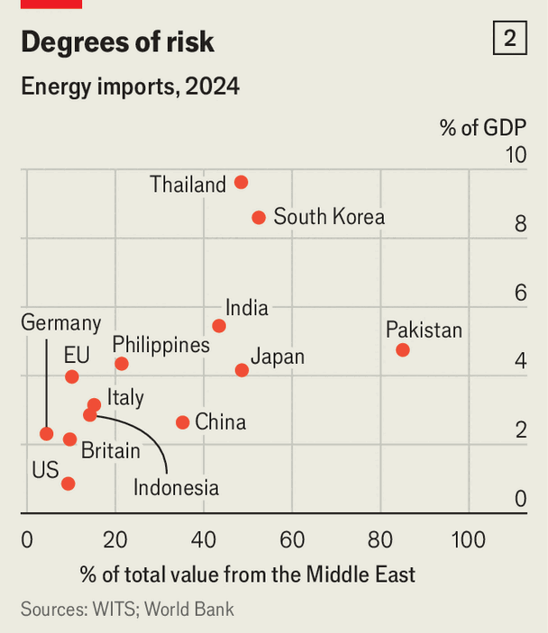
3月9日，韩元（South Korean won）一度接近1,500韩元兑1美元，这是自2009年以来的最弱水平。韩国股市的暴跌已严重到让政界人士感到不安。总统李在明（Lee Jae Myung）如此担忧，已宣布一项100万亿韩元（680亿美元）的计划以稳定股市，并承诺控制燃油价格。发达国家的企业和消费者在争夺稀缺资源的竞标战中占据优势；尽管政府债务不断攀升，仍能承担补贴支出。而较贫穷的亚洲国家则可能承受能源冲击的大部分压力，给公共财政和经常账户带来双重压力。印度每年用于进口石油的支出约占GDP的3%，泰国则接近5%（见图表2）。当价格上升时，账单迅速增加。■
高盛预测，油价从每桶70美元持续上涨至85美元，将使泰国的经常账户余额减少约1.2%的GDP，印度则减少约0.6%——而当前油价已高于这一水平。更严重的赤字往往会削弱货币。印度卢比近期跌至历史低点，对美元贬值加剧了进口成本，从而放大了经济痛苦。另一风险来自汇款。数百万孟加拉国、印度和巴基斯坦工人在海湾国家工作，将收入汇回本国。海湾经济受损将减少这些汇款流入，进而损害这些国家的国际收支。更糟糕的是，3月10日，联合国警告称，食品价格可能因能源、化肥和运输成本上涨而进一步攀升。公共财政也将受到冲击。许多政府通过补贴、减税或国有石油公司自我克制等方式压低零售燃油价格。■
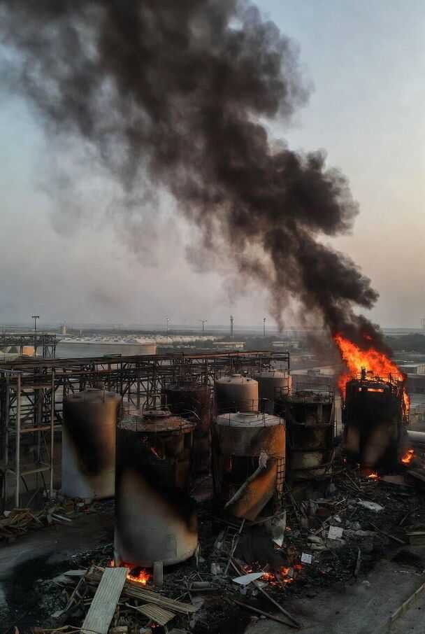
这使家庭免受油价冲击的影响，但将负担转嫁给政府。例如，印度每年已花费超过300亿美元补贴零售能源。最贫穷的经济体可能别无选择，只能接受短缺和配给制度。许多国家根本无力承担飙升的液化天然气价格。东南亚的化肥厂正在关闭。菲律宾政府下令办公室在午休时关闭电脑并减少空调使用；孟加拉国则提前了开斋节假期。在最严峻的案例中，财政状况脆弱的政府，如依赖国际货币基金组织贷款的巴基斯坦，可能难以支付日益增长的进口账单。鉴于多数海湾国家拥有大量石油美元储备，它们不太可能陷入危机边缘。
但他们可能面临最严重的经济衰退，以及对其经济模式造成最根本的冲击。伊朗已袭击了该地区多个油田、炼油厂、港口和机场——这些是支撑其繁荣的基础设施。尽管沙特的输油管道可将部分原油转至红海沿岸的亚丁湾港口，但该地区大部分原油现在都困在了那里。油库爆满迫使石油公司暂停生产——由此每周损失数十亿美元收入。若海峡关闭持续至四月，且恢复生产需两个月，高盛估计沙特和阿联酋的年度油气产量可能下降约12-16%。巴林、科威特和卡塔尔的损失可能超过其年度产量的四分之一。石油产业并非唯一受到压力的行业。■
海湾地区也已成为金属和化学品的重要出口国，但冲突迫使这些工厂纷纷关闭。卡塔尔一家大型铝冶炼厂已暂停生产，巴林的另一家规模更大的铝冶炼厂则暂停出口。旅游业也遭受重创。在巴林和阿联酋，旅游业占GDP比重超过12%，高于全球平均水平。导弹袭击不仅在短期内中断这些经济活动，战事结束后仍会长期影响其发展。消费税和增值税收入——政府日益重要的收入来源——随着游客数量减少而萎缩。依赖外国买家的房地产市场也可能下滑。据高盛预测，持续两个月的冲突可能导致巴林、科威特和卡塔尔的GDP出现两位数的萎缩，阿联酋的GDP将下降约8%，沙特阿拉伯则约为5%。
更糟糕的是，这场冲突威胁着该地区的经济模式。多年来，该地区的君主制国家一直将自己定位为资本和人才的安全、稳定的枢纽。但这一形象如今已蒙尘。特朗普先生或许认为，如果市场恐慌，他可以通过遏制战火来限制战争的经济损害。但大量损害已经造成。与他发起的贸易战不同，他并不掌握全部控制手段。“我们将决定战争的结束，”伊朗革命卫队发言人本周怒吼道。■ 更正（2026年3月12日）：本文先前版本称欧洲天然气价格是美国的15倍，正确数据应为超过五倍。抱歉。
§009 美国对伊朗的战争或令巴林陷入困境 专栏原题：America’s war on Iran may bring Bahrain to its knees · 板块：Briefing · 栏目：简报
曾经光鲜亮丽的石油都市天际线如今成为警示故事。巴林首都麦纳麦的玻璃幕墙摩天大楼布满锯齿状缺口，烧焦的钢梁裸露在外。随着美国和以色列对伊朗发动空袭，伊朗则用无人机和导弹对这个160万人口的海湾小岛展开报复。炼油厂、工厂、高层公寓和美国第五舰队总部均遭袭击。即便战争爆发前，巴林本年度预算赤字已高达GDP的10%以上，原因在于此前油价低迷和债务偿还成本上升。■
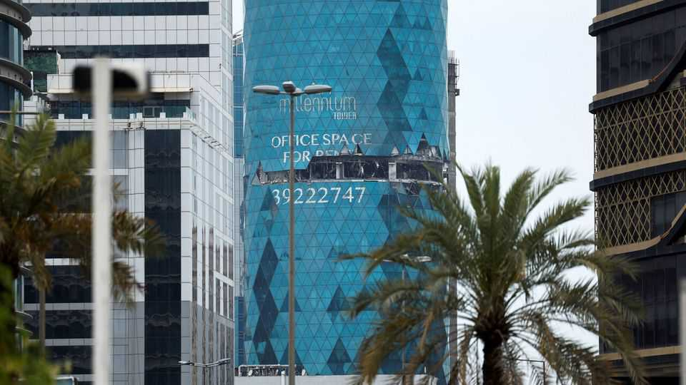
其公共债务占GDP的146%，居全球之首。近三分之一的政府收入用于支付利息。巴林曾拥有蓬勃发展的银行业，加上相对有限的石油和天然气收入，支撑起相对舒适的生活水平。但那些日子已经一去不复返。随着迪拜成为更重要的金融中心，银行家们试图赢得沙特阿拉伯和阿联酋富有的统治者的青睐，金融机构纷纷将办事处迁往这些地区。天然气储量正在减少。石油和铝业占政府收入的三分之二以上，占GDP的四分之一左右。这两个行业均受到冲击。巴林国家石油公司（BAPCO）已暂停其Sitra炼油厂部分原油出口。铝业巴林公司（ALBA）——中国以外最大的铝冶炼厂——已暂停出口。■
炼铝厂仍在运转，但许多人担心它将步卡塔尔类似工厂的后尘，最终停工。重启炼铝厂并非易事：一旦冷却，重新启动可能需要六个月时间。主要问题并非伊朗的轰炸，而是霍尔木兹海峡的关闭。这使得出口石油或铝材无路可走。若伊朗封锁海峡，可能持续数月，冻结巴林经济。海湾地区长期存在一种假设：沙特阿拉伯和阿联酋将始终救助巴林，正如2018年他们与科威特共同所做的那样。这次很可能再次发生。前银行家卡利德·贾纳希（Khalid Janahi）表示：“但你只能用自己的资金救助他人——而这些国家自身也正面临困境。”巴林还有一个令统治者夜不能寐的弱点。■
巴林（Bahrain）的机场关闭后，其与外界唯一的联系通道是一条25公里长的堤道通往沙特阿拉伯。超过80%的游客——大多是渴望饮酒的沙特人，他们前往岛上唯一合法饮用酒精的地点——都通过这条通道抵达。一位商人称，伊朗若对这条堤道发动袭击将构成“末日情景”，这将摧毁任何剩余的信心。巴林的逊尼派统治阶层对伊朗毫无好感，因为伊朗长期以来试图煽动岛上以什叶派为主的居民的不满情绪。（统治阶层也通过其专制和压制性的统治方式煽动了动荡。）因此颇具讽刺意味的是，巴林看起来比伊朗更难以承受持久战争。■
§010 读者来信原题：Is it optimistic to think that Hungary’s election in April will be free but not fair? · 板块：Letters · 栏目：读者来信
）。您互动文章的框架暗示维克托·欧尔班这位右翼民粹主义总理愿意采取的行动存在边界，但历史显示并非如此。欧尔班的右翼政党“前进党”（Fidesz）此前从未面临失去权力的真实威胁。
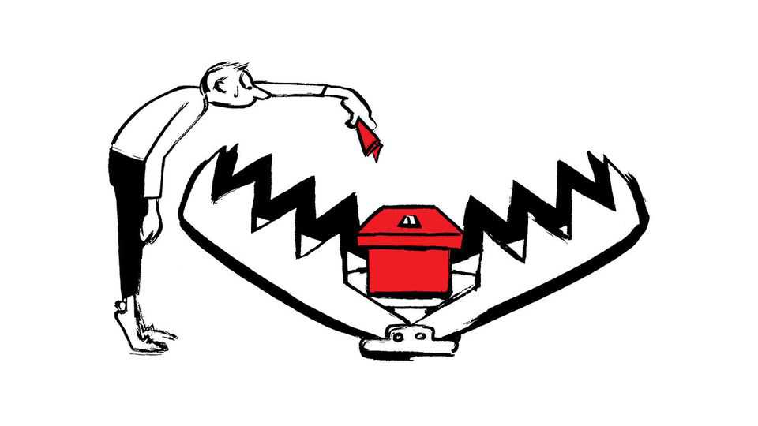
此前的反对派联盟四分五裂、战略失误，仅靠选区划分和媒体操控便足以击败。彼得·马加尔（Peter Magyar）及其右翼中心党蒂萨党（Tisza party）则是截然不同的反对派类型。奥班政权尚未采取主动干预，这与其克制无关，而是因为此前从未面临过这样的门槛。对选举的直接干预并非质的飞跃。若政权选择使用现有基础设施，相关手段早已准备就绪：邮政投票操控、组织选民运输、买票行为，以及在农村社区以票换福利等，都是既定的惯常操作。以2024年格鲁吉亚（Georgia）的案例为例。■
亲俄的格鲁吉亚梦想党（Georgian Dream）面临拥有可信民调领先优势的联合反对派，却同样掌控了国家机构，并在面临生存威胁时升级到可信的直接舞弊指控。这是布达佩斯需要关注的发展轨迹。马加尔先生几乎完美地打出了手中的牌。但任何政客面对一个始终握有王牌、且从未有更充分理由使用它的人时，所能做的终究有限。Vlad-Petru VoicuMilan 米兰 尽管政府成功地精心设计选举、社会和经济体系以利于自身，奥班先生仍以合法赢得的民意授权执政。所有试图联合反对的尝试都因此屡屡受挫，原因正是低估了他在国内的支持基础。当前局势已不同，政权真正感到恐惧。■
最近针对马加尔先生的“蜜糖陷阱”间谍行动表明，匈牙利执政党Fidesz已不再认为其民众支持和媒体控制足以确保胜利。尽管欧尔班总理扮演国际政治家角色，高举“黄金时代”旗帜，但其国内机器却转向翻垃圾堆搜集反对派丑闻。此外，地缘政治博弈的重心已发生转移。在当前全球动荡与大国竞争复苏的背景下，欧洲再也无法承受匈牙利持续破坏统一战线的代价。幸运的是，对欧盟而言，政府的绝望可能意味着无需再受此困扰。Luca La Cava伦敦你曾问美国反贫困战争是否失败，引用了理查德·伯克哈瑟与凯文·科林斯的最新研究（Free Exchange，2月21日）。■
该研究采用收入衡量指标，追踪了林登·约翰逊1960年代反贫困战争前后收入与贫困状况的变化趋势。作者得出结论称，1939至1963年间贫困显著下降且未伴随依赖率上升，而后续的减贫主要通过转移支付实现，但这类政策往往加剧了依赖性。有多个理由对作者的方法和结论提出质疑。首先，该研究依赖横截面数据，这种做法忽略了家庭实际进出贫困状况的动态变化。然而，扎实的实证研究表明，1940年代至1980年代代际流动性率明显下降。其次，该研究将实物福利转换为收入计算。■
实物福利并非可支配收入，尽管它们可能缓解低收入家庭面临的物质不安全状况，但也不足以积累储蓄或赋予消费自由选择权。第三，作者未提及20世纪中叶“大压缩期”的影响，当时从大萧条后的复苏是通过第二次世界大战的国家动员实现的。指出1939至1963年间贫困率下降归因于低端工资上涨，却未提及战争及由此引发的劳动力市场实践与政策的巨大变革，至少是不符合历史事实的。最后，作者将转移支付视为政府反贫困支出的主要手段，而非更广泛地考虑公共服务等公共产品。■
通过改善公共健康、公共教育、公共安全、公共卫生等关键公共产品来拓展机会，能够提升公平与效率。以减少依赖为名削减此类公共产品供给，如美国自1970年代以来的做法，反而会抬高摆脱贫困陷阱的门槛。在未考虑战争扶贫所处的社会政治背景前，不宜对长期影响做出结论。托马斯·雷明顿（Thomas Remington）政府访问教授哈佛大学马萨诸塞州剑桥市
作为国会前工作人员，我完全认同您关于为何如今在国会工作如此艰难的分析（“Bleak House”，2月21日）。另一个因素是国会选区选民数量在过去一个世纪中大幅上升。
1910年众议院席位总数增至当前的435席后，每位议员平均代表约21.2万选民。如今这一数字已升至76万，但各州间差异显著，这是由于一种特殊的席位分配机制。美国是全球选民与议员比例最高的国家之一。正如您所指出的，这意味着每位议员有限的时间越来越多地被资源最充足的群体占据。废除1929年永久分配法案不仅能让议员们工作更轻松，还能确保选民在本应更具代表性的两院中拥有更大话语权。即便将这一比例适度降低，例如每席代表50万美国人，也将增加约250名额外的公职人员分担工作。■
瑞安·扎马里帕（Ryan Zamarripa）
哥伦比亚大学社会工作学院兼职讲师
纽约
很遗憾看到贵刊似乎支持这样一种观点：立法机构只有通过大量法律才算履行职责。立法机构应能审议大量法案，但理想情况下不应通过任何糟糕的提案。每个立法机构中都存在大量此类提案。除了审议法案，立法者还需在各项计划间分配资金、评估已实施政策的效率与效果，并帮助那些在相关计划中遇到困难的选民。这些职责相互交织。无论从哪个角度衡量，当前的美国国会在这四个方面都表现得极其不称职，但未来或许仍需以除立法数量外的其他标准来评估立法绩效。
吉姆·肯特（Jim Kent）
纽约
■
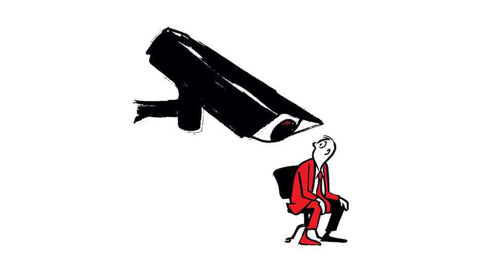
您关于“美国250周年”的互动文章（2月14日）未提及美国早期历史中一个关键节点。开国元勋首次尝试建立联邦政府的尝试是通过《邦联条例》，该条例初稿于1776年7月4日《独立宣言》发布仅八天后提交大陆会议。最终于1781年11月17日获得批准，该条例确立了一个极为薄弱的中央政府，仅设单一议院的立法机构，拥有缔结条约、铸造货币和宣战的权力，但明确排除了征税、监管州际贸易或征召士兵的权力。当时既无行政首脑，也无司法体系。■
欧洲商人要求以硬通货支付、经济受国家保护主义阻碍以及马萨诸塞州的叛乱，使建国者们意识到乞讨式治理并非治国良策。这些经验对1787年宪法的制定起到了重要作用。保罗·施里纳（爱荷华州安肯尼）■
Bartleby专栏《寻找会议室的痛苦历程》（2月14日）列举了员工试图举行聚会的会议室名称，无论是在“决断室”还是“能干室”等。我们曾一度难以给办公室空间命名。由于位于华盛顿地区，最初考虑以建国者命名空间，但很快发现“有人需要在约翰·亚当斯的后方安装摄像头”这类表述会引发投诉。■
同样，以第一夫人命名房间的做法也被弃用，担心“多莉·麦金侬（Dolley Madison）是热的”或更糟“冰冷”会成为讨论房间温度的标准抱怨。因此我们选择了国家公园。丹ali（Denali）是我见过最大的房间，配有双80英寸会议屏幕，我分别称它们为“乔治”和“奥威尔”。库尔特·麦克米兰 弗吉尼亚州法利斯教堂 关于《巴特勒比》（Bartleby）专栏中那些带着水瓶、拼命寻找会议室的人群，尽管在“有效”（Effective）和“体贴”（Considerate）已预订，但走廊尽头的“大陆”（Continent）仍有空间。帕迪·弗莱彻 共同首席执行官 利思港蒸馏厂 爱丁堡 自由交换专栏关于中国家庭食品支出高昂的分析（2月28日）在经济学上很简洁。但在我在亚洲生活近十年后，我怀疑解释也涉及文化因素。■
我成长于德国，那里的食物坚实可口，却鲜少承载文明意义。人们尊重香肠，却不会以它为年节中心。娶入一个台湾家庭是一次教育。在东亚大部分地区，食物是社会关系的基本形式。仅区域菜系的多样性就让比较变得复杂。技术、时令与象征意义的精细度，远超多数欧洲城市在同等规模下的承载能力。街头小吃并非成本妥协，而是城市基础设施。几代人共同准备与享用食物，餐桌成为延续性的轴心。恩格尔定律（"随着收入增加，人们在食物上的支出占比会下降"）在数据表中或许依然成立。但文化层面，或许更应坐下、好好吃饭，重新审视这一定律。克里斯托弗·沙乌尔（Christoph Schauer）Mandarin Oriental维也纳酒店经理■
■ 请检查唐纳德·特朗普的“和平委员会”（《本周世界》，2月21日）拼写是否正确？我们确定他没有拼成“Bored”（无聊）吗？——乔纳·加纳（Jonah Gannon），澳大利亚珀斯
§011 台湾试图出口无中国零部件的无人机，亚洲“无中国”无人机原题：Taiwan’s bid to export drones free of Chinese parts is taking off · 板块：Asia · 栏目：亚洲
，俄罗斯全面入侵乌克兰之前，大卫·刘从未想过制造军用无人机。但当他在台湾居住的地区当年启动自主无人机产业计划时，他抓住了机会。他的公司昆威科技（Kunway Technology）目前通过波兰向乌克兰出口两款“自杀式”四旋翼无人机，最大型号可携带最多8公斤炸弹，飞行速度达140公里/小时。它们的价格是全球最大无人机制造商中国同类产品的两倍，但关键卖点在于不含任何中国零部件。台湾并非以军品出口闻名。
■
自1949年国民党败退台湾以来，该地区一直是全球主要的武器进口国，主要从美国进口。如今台湾已能制造许多自身武器，但仍严重依赖美国供应。在2025年前，台湾的国防出口主要由一些老旧直升机和小型船只组成，这些装备曾被捐赠给非洲和拉丁美洲国家。随着台湾将自身定位为向美国及其盟友和其他担忧中国间谍活动和工业供应链控制的国家提供“不含中国部件”的无人机（即非红色无人机）供应商，这一局面正在改变。台湾无人机产量从2024年的约10,000架增至2025年的12倍以上。其出口量去年激增35倍，达到约123,000架，几乎等同于全部产量。捷克共和国是其最大买家，其次是波兰（见图表）。■
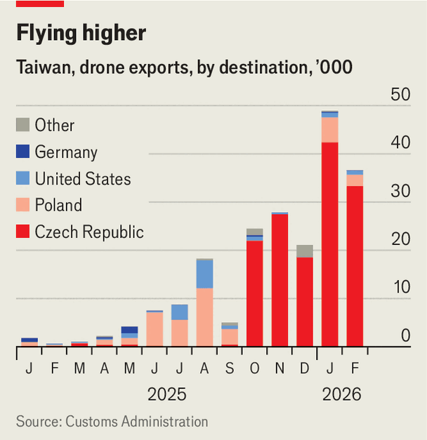
业内人士表示，他们的采购主要流向乌克兰，该国许多无人机被用于战场，为性能提供了宝贵反馈。预计2026年出口量将再创新高，此前仅前两个月就已达到85,500架。台湾在观察乌克兰使用该技术后启动了无人机计划。主要目标是装备台湾自身的武装部队，当时其无人机数量仅数百架，而中国则拥有数万架。台湾此后承诺到2026年底建成完全自主的无人机产业，2028年年产量将达到180,000架。去年其还承诺到2033年为自身武装部队采购超过200,000架无人机。美国及其盟友也在加快无人机生产。但多数仍依赖中国制造零部件，中国占全球无人机产量的70-80%。这正日益被视为安全风险。■
台湾仍部分使用中国制造的无人机部件，包括稀土磁体，但因面临来自中国的威胁，正加速淘汰这些部件。作为富裕的高科技强国，专注于精密制造，台湾拥有技术和资本快速开发自主无人机部件。台湾官员表示，计划按部就班。经济事务部称，完全自主的无人机和存在网络风险的模块（如飞行控制模块）须在2026年初不含中国部件才能获得政府采购和补贴，被动元件如光学镜头和稀土磁体须在2027年1月1日前清除。该计划不仅对台湾国家安全至关重要，还帮助“进入高安全市场”，经济事务部称。一些台湾无人机已实现100%非中国部件。■
库恩威（Kunway）自2016年起开始生产农业无人机，过去曾从中国采购约40%的零部件，包括电池、电机和螺旋桨。如今该公司全部本地采购或从日本等友好国家进口。尽管成本上升，刘先生估算其无人机价格约为日本或韩国全本土制造产品的半价。随着对中国的担忧加剧，新市场正在打开：库恩威去年与印度合作生产军用及民用无人机。多家台湾企业正向欧洲出口无人机或零部件，或考虑在当地设厂。其中雷霆虎（Thunder Tiger）正与波兰商讨建厂事宜，同时也在东南亚销售。但其总经理苏健表示，公司优先拓展美国市场。■
它计划今年在俄亥俄州开始生产无人机电机，他称目前已向25家入围国防部廉价单向攻击无人机采购计划的公司中的三家供货。台湾官员希望这些举措能帮助满足美国要求台湾提升自主防卫能力的诉求。特朗普政府敦促台湾将国防开支从GDP的3%提升至10%，并希望其采购更多小型机动武器以更好地应对中国攻击。然而台湾试图嵌入西方无人机供应链的举动，也是其在中美可能达成交易、削弱美国对台安全承诺的背景下采取的对冲策略。令人意外的是，台湾在能力上的显著缺口依然存在。■
作为全球最先进的半导体制造巨头，台湾却据政府智库“民主、社会与新兴技术研究所”（Research Institute for Democracy, Society and Emerging Technology）指出，其并未自主生产飞行控制系统、定位或通信芯片，也未研发出专为无人机配套的全部软件。不过政府已承诺投入14亿美元，以弥补相关技术缺口。到2029年，台湾计划实现一半稀土磁体的自主生产。另一障碍是台湾当局的政治阻力，其阻挠了国防预算的提升计划。更长期的挑战在于确保稳定需求。部分本地制造商担忧，若亲中派在2028年总统选举中胜出，政府或将削减军备现代化投入。他们同时担心，俄乌战争结束后全球需求可能下降。■
乌克兰每年可制造约50万台无人机，可能使市场饱和（尽管其严重依赖中国零部件）。台湾的希望在于，民主世界的担忧将因中国无人机零部件问题而日益加剧。美国已要求所有军用无人机不得含有中国部件（尽管执行情况参差不齐）。自12月起，美国还禁止进口新型外国制造的无人机及零部件，包括大疆（DJI）产品，同时允许国防部和国土安全部申请豁免，以排除对国家安全构成风险的型号。一些欧洲国家也在收紧限制。西方摆脱对中国廉价无人机的依赖将需要时间，但台湾已率先起飞。■
§012 尼泊尔新任总理是35岁的前说唱歌手Asia原题：Nepal’s new prime minister is a 35-year-old former rapper · 板块：Asia · 栏目：亚洲
从加德满都到贾帕的旅程颇为艰难。加德满都位于喜马拉雅山怀抱中的广阔河谷中，而贾帕是尼泊尔东南低地的一个县。即便在天气晴朗的一天，430公里的路程也需要超过十小时的车程。若天气恶劣，倒不如怀疑自己的行程是否真的必要。巴伦德拉·沙阿（昵称巴伦）轻松完成了这段旅程。两个月前，他还是加德满都的市长，尼泊尔的首都。
■
在3月5日的全国大选中，他以压倒性优势赢得贾帕-5选区议会席位，击败74岁的四度前总理K.P. Sharma Oli（库普·沙玛·奥利），以7票对2票的差距取胜。截至发稿时，他的国家自由党（RSP）已赢得尼泊尔下议院275个席位中的183席，仅差1席即可获得超级多数。年仅35岁的巴伦将成为尼泊尔下一任总理。这一结果标志着民主对去年“Z世代”起义的确认，该起义推翻了奥利政府。起初，这场运动由社交媒体禁令引发，随后因广泛存在的腐败、任人唯亲和失业问题持续发酵，年轻尼泊尔人于9月走上街头，要求改善前景。警方则动用了实弹射击。■
■ 77人死于抗议活动，尼泊尔议会、总理办公室及多家企业被纵火焚烧，局势失控。奥利（Oli）辞职，看守政府上台并承诺六个月内举行选举。如今已兑现承诺。过去二十年，尼泊尔由三个政党主导：奥利领导的共产党、左翼尼泊尔大会党及毛派组织轮流执政，彼此支持与推翻乐此不疲。与此同时，经济机会日益匮乏，青年失业率顽固维持在20%左右。尼泊尔中位年龄仅为26岁，数百万年轻人为谋生而移民他国。革命后，年轻抗议领袖分道扬镳：部分加入临时政府，另一些则成立新党。
少数人倾向于旧的三个选项。尼泊尔似乎可能追随孟加拉国，后者在2024年经历了类似的青年主导革命，但抗议领袖未能将他们的能量转化为持久的政治权力。在尼泊尔，这一局面在1月发生了变化，当时巴伦加入了RSP（一家由前电视主持人创立的四年历史的反腐败政党）。巴伦承诺根除腐败，专注于治理。夹在印度和中国这两个巨人的夹缝中，尼泊尔早已习惯于充当两国争夺影响力的缓冲国。巴伦的愿景是将其变为“桥梁”。此外，他承诺在五年内创造120万个就业岗位，将人均GDP翻倍至3000美元，尽管这些目标可能不切实际，但对选民来说仍是一股清新的空气。■
自2022年担任市长以来，巴尔恩（Balen）的政绩尚可，曾解决加德满都的卫生问题并驱逐市中心的非法商户。巴尔恩加入人民社会主义党（RSP）后，青年领袖纷纷追随。各年龄段选民也纷纷支持，包括长期支持旧政党的老选民。68岁的贾帕-5区保安库尔·巴哈杜尔·卡德卡（Kul Bahadur Khadka）在迪拜有一子，在马来西亚有一子。他坦言失业问题导致“无人照料我们”。邻近城镇85岁的马亨德拉·亚达夫（Mahendra Yadav）表示，他支持RSP是希望为孙辈创造更美好的未来。巴尔恩的巨大胜利带来两大风险。其一是他未能满足这个绝望国家对他寄予的过高期待。改革腐败体系比清理加德满都街道困难得多。其二是巴尔恩的执政风格。他可能表现得咄咄逼人。■
他不接受媒体采访，更倾向于通过社交媒体与公众沟通。他驱逐加德满都市中心的小贩时，有时采取暴力手段，且未提供任何安置方案。然而，目前尼泊尔人终于能呼吸到带着罕见乐观气息的空气。■
§013 伊斯兰主义者以非宗教手段赢得孟加拉国支持原题：Islamists woo Bangladesh with everything but Islam · 板块：Asia · 栏目：亚洲
亚洲 或许，2024年8月孟加拉国“Z世代”革命后最令人意外的事件是伊斯兰主义的复兴。由学生主导的起义推翻了谢赫·哈西娜·瓦杰德（Sheikh Hasina Wajed）的政府，这位总理在任期间孟加拉国最大伊斯兰政党伊斯兰大会党（Jamaat-e-Islami）曾被禁止。但很少有人预料到，上个月的选举中，伊斯兰大会党能以约三分之一的选票成为该国主要反对党，创下历史。该党通过远离传统平台的议题实现逆转。在现任领导人沙菲克·拉曼（Shafiqur Rahman）领导下，该党淡化宗教根源，塑造反体制形象。伊斯兰大会党还需为历史问题承担责任。■
1971年孟加拉国独立战争期间，该国曾为脱离巴基斯坦而战。尽管孟加拉国超过90%的穆斯林，但该国拥有自豪的温和伊斯兰传统和世俗政治传统。人民联盟（Jamaat）自诩为变革、反腐败和善治的政党，与主导孟加拉国政坛多年的两大政党形成鲜明对比：以选举获胜者著称的孟加拉国民族主义党（BNP），以及谢赫·哈西娜领导的人民联盟（Awami League）。这两党均被运作得如同家族企业，长期饱受工业级腐败之害。人民联盟最精明的举措在于校园政治。去年秋季，其学生组织赢得了所有主要学生联合会的选举。■
校园活动人士不再宣讲《古兰经》，而是组织学习小组、福利团体，维修宿舍风扇，甚至在达卡大学举办了一场“头巾集会”，吸引众多并无伊斯兰主义倾向的女性参与。伊斯兰头巾已成为一种酷炫、反主流的文化身份象征。Jamaat党与Z世代革命者的新党派达成选举联盟，导致其明星候选人纷纷流失。选举中仅有六名学生当选议员。但Jamaat实现了政治形象的重塑，站到了民众起义的胜利一方。因此，Jamaat已成为不可忽视的力量，但孟加拉国人民联盟新任财政部长阿米尔·卡希鲁·马哈茂德·乔杜里并非唯一对此表示质疑的人，他坦言：“我不确定他们的理念是什么。” 一个问题是，Jamaat内部存在温和派与强硬派的分裂。■
该党领袖本人也难以预测。拉赫曼先生（Mr Rahman）时常偏离原定议程，曾引发孟加拉国女性走上街头抗议，例如他解释说，生物本能如哺乳行为使女性难以成为政治领袖（这在该国已有数十年女性担任总理的历史背景下显得尤为意外）。伊斯兰大会党（Jamaat-e-Islami）渴望赢得下届选举。当被问及若赢得选举将采取哪些行动时，拉赫曼先生的回答充斥着中右翼政党的陈词滥调：扶持企业、根据劳动力市场需求调整教育体系，并对腐败或党派倾向的官僚施加压力。拉赫曼先生坚持认为，伊斯兰教法（sharia）——该党理论上奉行的准则——本质上只是“正义、福利与权力制衡”。这类模糊的纲领很难反驳——这或许正是其意图所在。伊斯兰大会党究竟会打造怎样的孟加拉国，或许只有真主知晓。■
§014 首尔的房地产市场已成为一个巨大的政治和经济难题原题：Seoul’s housing market is a huge political and economic headache · 板块：Asia · 栏目：亚洲
2月，韩国总统李在明以低于市场价的价格出售了他在首尔的公寓。他意在表明：住房是居住而非投资的工具。李在明称首尔炙热的房地产市场是“国家所有问题的源头”。2024年，首尔大都会区的房价收入比升至8.7倍。去年公寓价格涨幅达9%，是近二十年来最快的增长速度。■
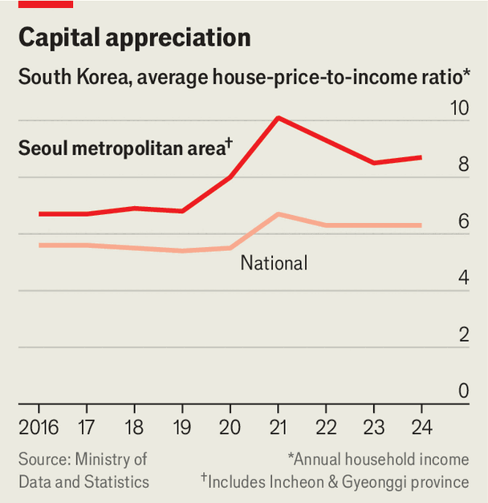
李明博自去年6月上任以来，已推出多项措施以抑制“投机性”房地产投资，收紧购房者房贷限制，并要求首尔及周边地区新购住宅须自住满两年。拥有两处以上房产的业主可享受的资本利得税豁免政策将于5月到期。住房问题曾让多位总统头疼。过多人口希望居住在首尔地区，该地区容纳了全国逾半数人口。而新房建设速度已大幅放缓。房地产是热门投资渠道，业主购置多套房产用于出租。在首尔，私人租赁市场中超过86%的房源由个人房东提供。许多房东采用名为jeonse的制度，租客无需按月支付租金，而是支付一笔大额押金，由房东用于投资，直至租约到期。
这些押金数额巨大——近年来首尔的平均押金达590万韩元（约合4万美元）——使得许多租户难以负担jeonse房产。房东未能退还押金的案例也让租户心生畏惧，他们开始寻求其他租房方式。月付制度（wolse）过去被视为浪费金钱，但如今被视为更安全的选择，目前约占租赁交易的60%，较五年前增长逾20个百分点。受机构投资者支持的房地产公司则看到住房焦虑加剧和独居人口增加（首尔近40%的家庭为独居）带来的机遇。首尔的住房危机是否会拖垮下一届政府？这是十年来首次，超过半数韩国人支持现任总统的住房政策。■
相似比例的受访者认为房价最终会下跌，尽管他们预计租金会上涨。市场早期信号显示乐观前景。江南等高端区域房价趋于平稳，因为资本利得税减免政策到期前，供应已提前进入市场。首尔房地产顾问宋承贤（Song Seung-hyeon）表示，新上市的房源可能不符合首次购房者的需求或支付能力。他认为李明博的政策过于简单化，未能解决复杂的危机。韩国紧迫的人口挑战或许能起到作用。约15年后，首尔的婴儿潮一代将接近韩国的平均寿命。他们的房产最终将易主，为自生育率急剧下降以来出生的人口较少世代释放更多房源。人口趋势无情，但对总统李明博来说可能过于缓慢。■
§015 印度是第四还是第五大经济体原题：Is India the fourth- or fifth-biggest economy? It does not matter · 板块：Asia · 栏目：亚洲
印度政府对纪录情有独钟。上个月在德里举行的AI大会上，电子部长接受了吉尼斯世界纪录证书，认证其为“24小时内获得最多AI责任倡议承诺”的纪录保持者（250,946个）。本月，纳伦德拉·莫迪选区的地方官员又创下世界纪录，一小时内种植最多树苗（251,446棵）。在难以打破的纪录面前，官员们便满足于排名靠前的位置。每隔一段时间，他们便高呼印度是全球第七大服务出口国。欢呼吧？■
这就是为什么官员们数月来不断宣扬印度的GDP是世界第四大经济体，已超越日本，仅落后于美国、中国和德国。一位部长甚至声称到2027年将位列第三。但这种胜利情绪显然过早。印度仍位列第五。当统计局上月晚些时候发布对GDP核算的重大修订后，这一事实无法掩盖。数据显示，印度经济实际上比此前预估小3.3%，仅为不到4万亿美元。以市场汇率计算，印度与日本之间的差距约为3000亿美元，几乎是之前预估的两倍。无论如何，印度终将尽早跻身第四，即使中东局势动荡造成暂时障碍，也给印度领导人提供了再次吹嘘的机会。“我们是第四！”这种持续的自我夸耀确实产生了效果。■
印度人深知本国经济已跻身全球前列。他们从演讲和新闻中听到这一说法，并在办公室和客厅里反复提及。许多人将这一跃升——从2014年的第十位跃升至全球前列——归功于莫迪（Modi），他当年以发展承诺赢得权力。但政客们尽管理所当然地热衷于宣扬自己的经济管理能力，却正自设陷阱。一方面，排名上升带来的自豪感不会永远维持。当经济进入全球前五时，曾引发大量自我庆贺，但“全球前四”并无公认的类别。民族自豪感是关心此事的一个原因。不久前印度GDP超越昔日殖民宗主国英国，确实是个大事件。但如今超越一个已陷入日本化经济（Japanification）困境的经济体，又有什么特别意义？■
民族主义媒体希望印度人只看到美国和中国是同等地位的国家。但数字不会说谎。印度的经济规模仅为中国的五分之一，仅为美国的八分之一。德国、日本和印度三国的经济总量加起来也不过是中国的三分之二。普通民众或许不清楚具体数据，但他们并非愚昧之人。显然，印度并不处于同一水平线上。不过，比起经济总量的绝对值，人们如何感受经济状况更为重要。这也是为什么经济学家更倾向于使用购买力平价（purchasing-power parity）进行跨国比较——这种计算方式考虑了生活成本，而非以市场汇率计算的GDP，并将结果除以人口数量。按此标准衡量，印度的人均GDP比约旦高，但比日本低。即便如此，这已是进步。过去十年，许多印度人的生活水平已明显改善。■
市场上商品和服务种类更多了，印度民众收入也在增长，有能力购买这些商品和服务。但生活水平与生活质量之间仍有差异。这是印度领导层为自己设下的最大陷阱。每当提及德国或日本，印度人便被提醒自己必须承受的条件。越来越多的印度人出国旅行，回国后对那里的洁净空气、可行驶的道路和垃圾收集系统感到震惊。即便从未听说过购买力概念的游客也清楚，越南和乌兹别克斯坦并非富裕的西方国家。这些地方 somehow 能完成诸如凭空创造出人行道等 feats，而世界“第四大经济体”却做不到。■
即使从未离开过家乡、更不用说出国的人，也无法忽视污水渗入饮用水的现象，因为这会让他们生病，也无法忽视那些规律性坍塌的桥梁，因为正是他们可能被压垮。事实上，常见说法在邻里茶馆和高档城市酒吧中不断回响：“世界第四大经济体，却看起来是这个样子。” 提供安全和基本服务——这才是值得骄傲的成就。■ Subscribers to The Economist can sign up to our Opinion newsletter , which brings together the best of our leaders, columns, guest essays and reader correspondence.
§016 香港房地产市场转向原题：Hong Kong’s property market has turned · 板块：China · 栏目：中国
在寸土寸金的香港，连鱼儿都挤得没有空间。陈先生（化名）在床头的玻璃水缸里养着一条红暹罗斗鱼，旁边还摆着他的梳子、指甲剪和打火机。他睡在约1.2米高、仅能容纳一张床垫的木柜里。同一间六楼公寓内挤着28个可上锁的床铺，包括一个叠在他床铺上方的。这类被称为“笼式住宅”或“棺材房”的住房，连金鱼缸都容不下。香港以拥挤且昂贵的住房闻名。陈先生居住在一座50年房龄的建筑中，每月租金为港币2700元（约合350美元）。■
他的室友从更糟糕的住处搬进了独立的床位，而他本人过去曾在24小时麦当劳打工睡觉。约有10万户家庭居住在更大的“分隔单元”中，这些单元由房东将一个公寓分割成多个房间形成。香港大学的黄志明表示，这些单元居住着“多元群体”，包括老人、体弱者、学生、难民和低收入工人。湾仔区一处这样的单元里，67岁的租客仅能放置水壶、茶壶和DVD架，他的衬衫挂在床头螺丝上，旁边贴着一张2023年1月的日历。对这类人来说，香港房价并未冻结在时间中，租金仍在上涨，即便是最底层的住房市场也不例外。■
这主要归因于两个因素：市场格局的转变和法律的调整。两者都反映了香港与内地关系的演变。与内地不同，香港房地产市场终于触底反弹。房价自2021年至2025年间累计下跌超过四分之一后，已连续五个月同比上涨。租金在更早阶段便已反弹，最近甚至突破了2019年的峰值。根据官方统计数据，截至最新可得数据——11月，分户单位的中位数租金同比上涨近6%。香港的转机既得益于内地，也离不开美国。美国联邦储备局的降息政策缓解了香港的金融环境，尽管港币仍与美元保持紧密挂钩。
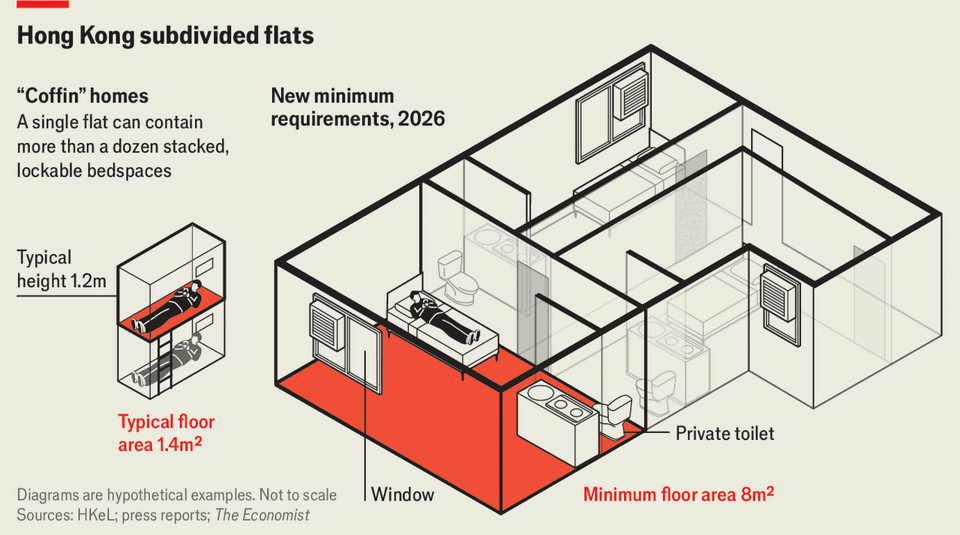
房贷成本下降，股市大涨，为这座城市最大的雇主之一——金融业注入了活力。美国对中国的敌意促使一些大陆最大企业选择在香港而非美国融资。企业并非唯一从对岸涌入的新移民。过去六年，逾30万大陆居民获得各类“人才”签证，另有15.5万人通过亲属关系定居香港。这些新移民人数已远超因2020年实施的新国家安全法及持续至2023年的新冠疫情限制而外流的人口。据房产机构Centaline统计，去年以普通话姓名购房的买家占全市购房总量近四分之一。这些广泛趋势似乎与“鞋盒式居住”相去甚远。■
但这些政策可能渗透至住房市场的最底层。租金上涨还可能另有原因。一项新法规本月起生效，规定分间单位需达到最低标准，例如每间8平方米的面积、独立卫生间以及朝向户外的窗户。约33,000个现有单位将在四年过渡期内进行重大翻新。笼屋仍将继续存在，它们受1994年条例约束，要求围封结构不可燃，且通风口至少与床长相当。新法规获得中国中央政府的额外推动。“我们将告别分间单位和笼屋”，2021年，主管香港事务的中央政府官员夏宝龙在宣传城市安全整顿益处时如是说。■
中国大陆官员常被指责过度建房，但他们长期对香港的相反困境感到沮丧，认为高昂的住房成本加剧了2019年香港社会动荡。新条例将改善剩余单位的居住条件，降低火灾隐患和水电费过高问题。房东需注册房产以方便监管。但翻新费用必须由某方承担，租户担心这笔费用最终会转嫁到他们需支付的租金中。这令像陈女士这样的居民忧心忡忡。陈女士是一名办公室清洁工，居住在湾仔区的单位。她每月支付港币2,600元租金，自豪地装饰着仿木纹壁纸。她认识有人因翻新后租金涨至港币6,000元，这已超出她的承受范围。
据公共住房协会对151户家庭的调查显示，约70%的租户仅能承受租金上涨至5%的幅度。政府正通过缩短公屋申请的等待时间来缓解住房压力。尽管这座城市以自由市场著称，仍有约30%人口居住在868,700套公租房中。未来五年政府计划新增189,000套住房，建设速度接近中国大陆水平。同时政府已推出16,690套过渡性住房单位，包括改建学校、政府建筑等，另有2,700套正在建设中。政府称此举将降低对分间公寓的需求，使房东难以大幅提租。新政策下被搬迁的租户即使收入超过常规门槛也可申请过渡性住房。■
但有前提条件。租户的居住期限不得超过两年，且在前12个月后需支付更高的租金。“这并不合理，”关注分间单位联盟（Concerning Subdivided Units Alliance）的黄晶表示。公共住房空间更为宽敞，但主要集中在城市外围区域，而许多租户的工作、家庭或其他联系都在市中心。曾女士在港岛中心工作至深夜10点，一想到要住在元朗（距市中心80分钟车程的住房项目所在地），她便皱起眉头。据2024年官方统计，约有4万名分间单位租户不符合永久公共住房资格。其中部分人收入过高，不符合申请条件。■
其他群体则属于社会中最脆弱的成员之一（包括难民和无证移民），谢丽珊（Sze Lai Shan）为另一家非政府组织“社区组织协会”成员。黄女士认为，如果公共体系确实能满足香港住房困难居民的需求，就不需要出台这项新法规，因为届时不会有人需要那些狭小且不安全的住房单元。该法律将逐步推行并谨慎执行。“我们的执法行动不会导致任何人无家可归”，官员坚称。黄女士表示，许多居民“既不乐观也不悲观”，因为他们“不信任政府会落实政策”。但如果新规得以落实，将彻底改变低租金住房的现状。租户将无法再在成本、面积和位置之间做出当前的权衡。■
想要在城市中心以最廉价方式生活的居民将不再能对空间或配套设施做出妥协。而那些不符合长期公屋资格的人群可能陷入困境。改善香港狭小住房的条件是值得追求的目标，但随着房东们在未来几年陆续进行翻新，一些人可能不得不不断从一个条件差的公寓跳到另一个。尘埃落定后，他们仍需支付八平方米和一个厕所的费用。若无力承担这笔开销，他们可能只能选择非法的临时住所——或者蜷缩在连金鱼缸都装不下的木柜里。■ 订阅者可注册我们的新周刊《Drum Tower》，了解世界如何看待中国，以及中国如何看待世界。
§017 中国原题：Some of China’s officials are becoming social-media stars · 板块：China · 栏目：中国
中国共产党官员面临绩效压力。普通中国人经常抱怨他们懒惰且脱离实际。更糟糕的是，习近平主席——中国领导人——也如此。他严厉批评官僚懒惰，要求下属“撸起袖子加油干”。近年来，中国令人担忧的反腐机构——中央纪律检查委员会（CCDI）——已将反腐重点扩大至调查“懒惰”和“形式主义”（指无效的忙碌）。仅实现经济增长、建设小型基础设施和解决纠纷已不够，地方官员必须被看到在努力工作。
传统上，官员们依赖官方媒体的阿谀奉承报道来展示政绩。但如今，越来越多年轻有为的公职人员正采取不同的方式。他们通过社交媒体崭露头角。以海南省36岁的村官吴少玉为例。在3月9日举行的中国全国人大会议期间，她拍摄自己在天安门广场附近的画面，向抖音平台24万粉丝承诺：“我将全心全意做人民的代表。”吴少玉是日益增多的“网红官员”中的一员。许多这类官员居住在农村地区，最初通过制作视频帮助当地农民销售农产品。其中最受欢迎的当属浙江东部的年轻党工林阳多，这位体格健壮的工作人员正致力于这一事业。■
他有时穿着毛泽东式服装，有时则穿着紧身T恤，称追随者为“宝贝”。他因发布自己将柿子（当地特产）压在肱二头肌上的视频而迅速走红，粉丝们称他为“中国最抢眼的基层干部”。其他官员则塑造了更为亲民的网络形象。陕西内陆省份的庞福强，一位性格开朗的官员，因发布自己为感激的老年人送上热气腾腾的廉价面条的视频而声名鹊起。湖南南部某县党委书记邓群，通常在短视频账号上发布关于交通状况等平淡话题，但因花大量时间细致回复评论和投诉而获得关注。中国观众似乎更觉得这类内容比枯燥的官方宣传更真实。■
党内高层似乎也表示认可。《人民日报》的一篇评论文章如是说：“共产党人永远年轻，决心展现新的责任与成就。”广西大学和山东大学的研究人员的一项研究发现，在社交媒体上走红的官员更易获得赞誉、晋升以及资金流入其管辖区域。但一些博取关注的努力可能伴随风险。新疆官员何娇龙通过发布吸引游客的马术视频在抖音上积累了600万粉丝。她于2020年经历一次严重摔伤后，于今年一月在拍摄过程中遭遇意外身亡。随着更多官员加入社交媒体，这种策略可能逐渐失效。■
中国东北黑龙江省某城市于2024年因开始为公职人员设定点赞官员在线内容的配额而引发争议。某党报近期一篇批评性评论指出，直播活动可能挤占官员深入基层调研、实地考察和解决实际问题的精力，该现象被称作“网络点赞形式主义”，未来或成为中央纪律检查委员会（CCDI）巡视的重点对象。■ 订阅者可注册我们的新周刊《Drum Tower》，以了解世界如何看待中国，以及中国如何看待世界。
§018 中国民族主义间谍惊悚片缺乏女性却充满政府元素 《从中国出发的宣传》原题：China’s nationalist spy thriller has few girls and lots of government · 板块：China · 栏目：中国
在西方，间谍片通常有马提尼酒、女性和枪支。由国家安全部合作制作的中国间谍惊悚片《Scare Out》则没有酒精、女性稀少、枪支有限，却充满政府元素。影片中，一个未具名（但使用英语）的外国势力试图通过中国情报机构内部的特工窃取军事机密。尽管叛徒最终被证实是主角严迪的亲密朋友，他仍以国家利益为先，追捕并最终迫使反派自杀。
一切终将归于中国领导人习近平的最爱口号——“不忘初心”。当屏幕黑屏时，情报局长对严某说道：“永远铭记最初的理想。”主旋律电影，这类承载民族主义宣传的大制作影片，如今已陷入僵局。这类影片曾一度是票房冠军，2017年至2023年间每年均登顶票房榜，唯独2019年除外。而那些辉煌岁月已成往事。2月17日上映的《惊天营救》至今票房仅为12.5亿元人民币（约合1.82亿美元），远不及2017年《战狼2》首周便斩获46亿元人民币的盛况。据《经济学人》统计，基于猫眼票房数据，主旋律电影类别在2020年达到巅峰，占据前20部影片票房的53%（见图表）。而今年其占比已骤降至12%。过去曾令人乏味的宣传影片，■
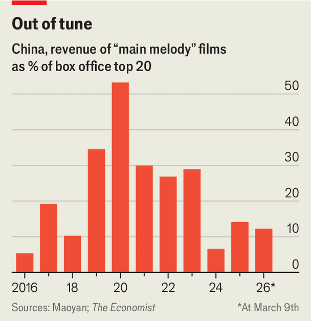
2009年的一部电影《共和国的诞生》因口碑极差，豆瓣评分网站不得不关闭其评分功能。但到了2010年代末期，电影制作人摸索出让这类影片变得可看的路径。他们将宣传元素与高水准制作、引人入胜的剧情相结合，并邀请知名导演和明星阵容加盟。国家也给予了强力支持，2018年有关部门设立专项基金，扶持以“重大革命历史题材”为内容、增强文化自信的影片。《惊魂》正是采用这种模式。但主旋律影片的吸引力正在减弱。原因之一似乎是这类影片变得过于模式化。豆瓣上约20万条评分显示，《惊魂》仅获得6分（满分10分）的平淡评价。
有评论指出，这类影片不过是“陈词滥调的包装”。“陈词滥调的善恶对抗，甚至试图以道德高地收场”，另一评论者抱怨道。英国埃克塞特大学媒体学者杨燕玲指出，主旋律电影在叙事上缺乏创新。她认为观众已对传统爱国叙事感到厌倦，更令官员担忧的是，观众可能根本无心观看民族主义作品。这些影片的反响程度，可间接反映政府的支持度。2010年代末标志着经济繁荣期的尾声，而2020年代初，民众在政府压制新冠疫情时团结一致（2021年上映的电影《中国医生》便歌颂了这些努力）。但如今消费者情绪低落，房地产市场低迷，经济陷入通缩。■
在这样的时刻，民族主义叙事显得空洞无力。即将上映的一部名为《澎湖战役》的电影将是对这一命题的考验，影片描绘了清朝于1683年征服台湾的历史。其海报上怒吼着“台湾的统一不可阻挡”。一些网友已对其中直白的现代隐喻进行嘲讽。该片票房或将为主旋律题材提供评判，也可能反映公众对台湾问题的现实态度。习近平会观看吗？■ 订阅者可注册我们的新周刊《鼓楼》，了解世界如何看待中国，以及中国如何看待世界。
§019 中国有56个民族——55个正在被压缩 中国原题：There are 56 ethnicities in China—and 55 are getting squashed · 板块：China · 栏目：中国
中国全国人大并不以辩论著称。每年三月召开约十天的会议，其职责是批准而非质疑。虽然缺乏争议，但以色彩斑斓的服饰弥补。人民大会堂是其集会场所，这里成为繁复服饰的展览。3月5日会议开幕当天，Chaguan首次注意到一位身着黑色斗篷、饰有火焰状纹路的男子。随后，一位佩戴银质珠链镶嵌王冠的女子登场，其王冠尺寸是查尔斯国王所戴的两倍。接着更多人陆续登场：飘逸的衣袍、密集的刺绣、深红、亮粉与深蓝的泼墨色块。他们就是少数民族——字面意义而言。■
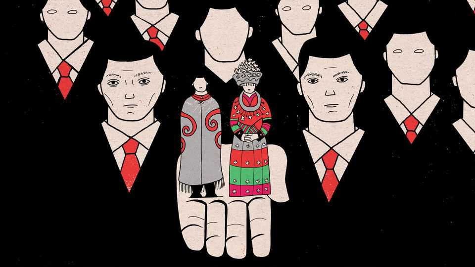
中国官方称拥有56个民族。汉族代表，作为主体民族，通常身着灰色和黑色正装出席议会。但来自其他55个民族的代表则格外引人注目。苗族女性杨连英佩戴着花冠，面带笑容。杨连英表示，这并不方便她的日常工作，她通常在云南省担任医生。"在议会期间，我每天都要佩戴它。" 这种仪式感将与议会实际议程产生沉闷的交集。一项即将投票的新法律将正式推进一项大规模项目，旨在消除中国现存的大部分民族特色。根据先例，超过95%的代表，包括少数民族成员本身，都将顺从地支持该法律。
这是中国共产党在民族政策上采取更严厉路线的一个严峻标志，源于对更大规模少数民族群体难以控制的担忧。20世纪50年代，中国曾给予少数民族群体（约占总人口的9%）一系列特权。“56朵花，56个民族”，这句流行歌曲曾如此描述。尽管官方宣传常将少数民族描绘为异域风情的象征，但实际给予其一定自主空间。他们可自由迁徙，遵循多数宗教戒律，并用本民族语言教育子女。期望借此促进发展与忠诚。然而数十年来，西藏、新疆及在一定程度上的内蒙古爆发的暴力与抗议事件，使中共认为即便相对自治也已失败。中国自2000年代末期开始转向相反方向。■
在习近平领导下，这一进程大幅加速。他比前任更加强硬迅速地推进各项举措，愿意采取任何他认为有助于巩固党统治的镇压行动。结果导致了一场痛苦且有时致命的变革。中国共产党不再强调各群体间的差异，而是将它们描述为共同构成“中华民族共同体”。教材中关于56个民族的内容大幅减少。当习近平谈及这些群体时，强调的是团结。这听起来或许温暖包容，但实际操作中，这一转变更像是一种强制同化而非开明包容。在西藏，当局逮捕僧侣、接管寺庙、将年幼儿童送往寄宿学校，并迫使当地人谴责达赖喇嘛。■
新疆人权组织记录了超过一百多万穆斯林在大规模再教育运动中被拘押，同时清真寺遭到破坏。在内蒙古自治区，官员镇压了反对将普通话作为教育主要语言的抗议活动。《促进民族团结进步法》将把这些变化制度化。该法规定，普通话在中小学教育和官方交流中应优先于少数民族语言；要求推行“新的社会风俗”，包括禁止任何人以身份为由阻挠婚姻；并规定不同民族应共同居住在混合社区。该法还为起诉任何反对党定义民族和谐的人提供新的法律依据，包括灌输“有害”观念的家长。■
对西方批评者而言，这令人不安的是，中国处理少数民族问题的方式与其他国家存在某些相似之处。对于那些指责中国以普通话为优先政策具有歧视性的观点，不妨看看法国，该国学校长期以来对地区语言设限。美国大学招生中取消肯定性行动政策，在中国也有对应案例，即一些省份已停止在高考中对少数民族考生加分。丹麦的“反贫民窟”法律旨在将少数族裔迁往混居社区。在“相互指责”的语境中，中国的支持者已备好论据。然而在现实世界中，脱离社交媒体激烈争论的语境，确实存在一个现实的政策议题，尽管这并非中国议会正在讨论的内容。■
压制和限制少数民族语言、宗教与习俗，是否真能让执政党达到其目标？中国是否通过赋予少数民族更多自治权，而非逐步压缩其生存空间，找到了治理多民族国家的持久方案？中国共产党从未认真考虑过这种放松政策。在党看来，压制是实现国家统一与稳定的必由之路。尚不清楚的是——或许要数十年后才会显现——这种压制是否也在积累着可能最终爆发的不满情绪。目前方向已然明确。党表面上接纳少数民族：喜欢他们的歌舞、服饰。但更深层的民族认同表达不仅被法律禁止，甚至遭到法律制裁。在人大会议上，少数民族代表们已经接收到这一讯息。■
离开一个会议环节时，查干向一位身着华丽蓝色丝绸长袍的内蒙古代表询问，是否看到过针对蒙古族群体的具体政策。“没有，”她回答道，随即补充道，“但培育中华民族强烈的共同体意识是指导方针，这对所有少数民族都是有益的。”■ Subscribers to The Economist can sign up to our Opinion newsletter, which brings together the best of our leaders, columns, guest essays and reader correspondence.
§020 中国人工智能巨头发放现金吸引用户原题：China’s AI giants are handing out cash to lure in users · 板块：China · 栏目：中国
中国的人工智能巨头们正通过发放现金来吸引用户。他们的激烈竞争还能持续多久？
在中国，农历新年期间赠送礼物是传统习俗。在最近一次节庆活动结束于3月3日的春节假期中，中国的AI行业热情拥抱这一传统。过去一个月里，这些企业向愿意下载并使用其应用程序的用户发放了总计80亿元人民币（约合12亿美元）的优惠券。这些应用程序的最新版本均配备了“代理能力”（agentic capabilities），允许机器人仅凭几句语音指令即可完成点餐等任务。
■
在中国，这场补贴大战被戏称为“红包战争”，取自春节时人们互赠的红色现金红包。此前，中国多数AI企业已免费开放模型，如今却开始向用户支付以换取服务使用。人工智能行业这种激烈的竞争能持续多久？中国AI企业正重金投入研发和推广其代理服务。二月中旬，春节前夕，电商巨头阿里巴巴与掌控TikTok及其本土姐妹应用抖音的字节跳动均推出了聊天机器人的升级版本，使其能够代表用户执行多种任务。春节期间，阿里巴巴的聊天机器人Qwen通过其平台售出了超过1亿杯饮品。■
多宝（Doubao），字节跳动的聊天机器人，在2月16日由该公司赞助的电视晚会上，数小时内便处理了近20亿次查询。对中国的互联网巨头而言，具备自主行为能力的聊天机器人提供了一种引导用户转向其盈利性服务（如电子商务）的途径。一些企业梦想打造一款由人工智能驱动的“超级应用”，可几乎涵盖用户的所有数字交易。阿里巴巴、字节跳动以及另一家中国互联网巨头腾讯（提供Yuanbao（元宝）聊天机器人）似乎占据最佳位置；而百度（中国相当于谷歌的公司，开发了Ernie（通义）聊天机器人）则逐渐落后。业内人士认为，缺乏庞大消费互联网业务的小型AI公司很可能难以生存。■
即便深Seek这家去年初便以能与国外顶尖模型一较高下的AI实验室，也经历了用户数量的下滑（尽管它仍助力元宝运行，且有望凭借即将发布的强大新模型重获增长动力）。中国激烈的AI竞争无疑让消费者获益良多。但并非所有人都感到满意。中国互联网巨头的股东们仍在等待证据，证明这场投资热潮能带来回报。自“红包大战”爆发以来，可能提供最慷慨补贴的阿里巴巴股价已下跌约30%。与此同时，有迹象显示，努力提升AI技术的商业化程度正引发中国顶尖AI人才的不满。3月4日，Qwen首席工程师林俊阳意外辞去了阿里巴巴的职务。■
行业内部有人猜测，日益增长的商业压力可能让他感到沮丧。此外还有中国的监管机构。他们近期对食品配送行业正在上演的补贴大战表达了不满，对AI行业争夺用户市场的竞争也大概率同样不感兴趣。中国官员通常对消费互联网服务持保留态度，更希望企业将资金投入芯片制造等支持国家发展的领域。下个春节，中国消费者恐怕难以再收到更多数字红包。■ 要追踪塑造商业、产业和技术趋势的动态，请订阅我们的周度专属订阅 newsletter《The Bottom Line》。
§021 为何MAGA目前仍支持特朗普的战争原题：Why MAGA backs Donald Trump’s war—for now · 板块：United States · 栏目：美国
美国历任总统往往在将国家卷入武装冲突时获得政治收益。1991年海湾战争前夕，老布什的民调支持率仅为64%，但美军发动“沙漠风暴行动”数日内便飙升至82%。其子小布什的表现更为亮眼：在2001年宣布发起“反恐战争”并推动入侵阿富汗后，其支持率从51%跃升至9，随后在接下来的一年半内逐渐回落，直到伊拉克战争爆发时再次攀升至75%。
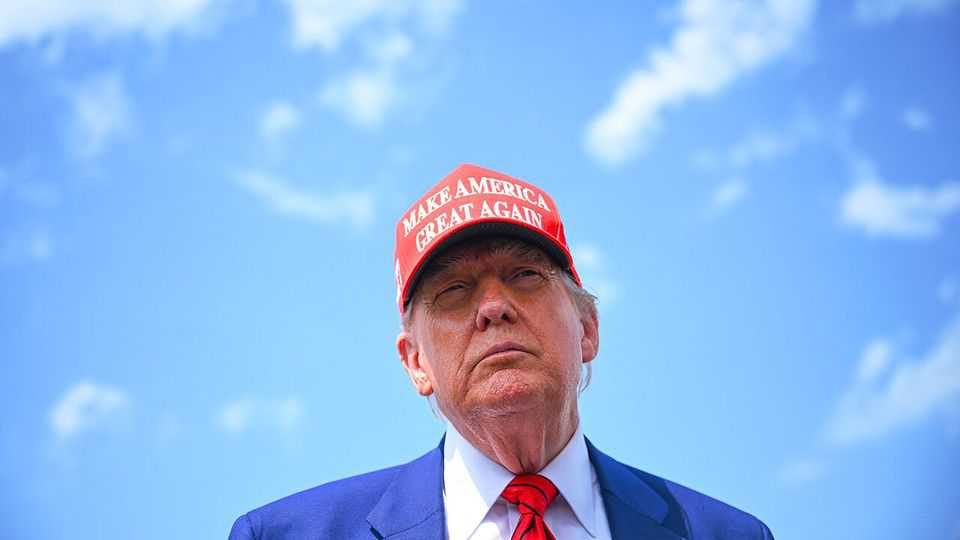
唐纳德·特朗普的支持率维持在40%——这一数字几乎完美地映射了公众对其攻击伊朗的支持程度。自2月28日战争爆发以来，普通民众中几乎没有出现旗帜效应。共和党人支持率小幅上升：目前83%的共和党人认可特朗普处理伊朗事务的方式（见图表）。不过最引人注目的是党内分歧。自称为MAGA共和党人（93%）比非MAGA共和党人（64%）更倾向支持战争。这看似矛盾。毕竟MAGA自诩为警惕外国卷入和军事冒险主义的运动。过去十年中，其追随者曾欢呼特朗普将伊拉克战争称为“重大错误”，并承诺避免中东“无尽”冲突。
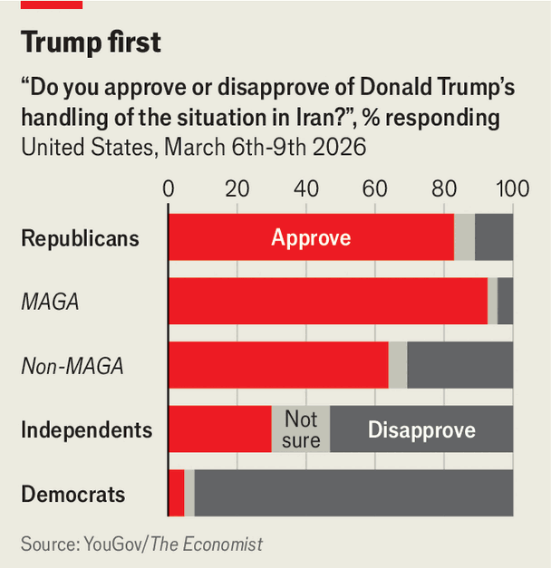
在2024年连任前，他做出过一个简单承诺：“你不会和我打战争。”如今他已违背了这一承诺，但他的核心支持者依然坚定支持他。为何？部分原因在于，MAGA并非一个以原则定义的运动，而是一个围绕特朗普本人组织的群体——一个信念出奇灵活的人。我们对共和党内部派系的研究表明，MAGA支持者与孤立主义者并非同一群体：两者之间的重叠仅是部分。总统在被问及自己的所谓“非干预主义”基础如何看待他1月推翻委内瑞拉领导人尼古拉斯·马杜罗的决定时，曾这样回答：“MAGA爱我做的一切，MAGA就是我。”但MAGA对特朗普的个人崇拜仅能解释部分原因。
这一群体对伊朗袭击行动的热情，也反映了特朗普更广泛的军事战略的吸引力。如果要找一种适合“美国优先”群体的外交政策风格，这便是最佳范例。首先，特朗普倾向于推崇美国力量的壮观且近乎电影般的展示——尤其是针对推翻或杀害敌方领导人的行动。为推翻马杜罗，三角洲部队特种部队驾驶直升机突袭委内瑞拉最坚固的军事基地，成功将其俘获。“我几乎就像在看电视节目一样观看了整个行动，”特朗普在事后表示，听起来更像是个观众，而非最高指挥官。如果特朗普觉得有趣，他的许多支持者同样感到兴奋。在突袭行动前，超过一半的MAGA共和党人支持推翻马杜罗；一周后这一比例已上升至80%。他对伊朗的言论则遵循相同的剧本。■
■美国正在“狠狠揍”它，特朗普先生如是说。在冲突的第一天，阿里·哈梅内伊（Ali Khamenei，伊朗最高领袖）的遇害为这场行动提供了戏剧性开场。战争部长兼宣传负责人彼得·赫格塞特（Pete Hegseth）在MAGA支持者中享有最高好感度，是现任政府官员中唯一达到此程度的。特朗普策略的第二要素在于其对“美国优先”理念的践行。总统似乎对国际法或外交规范漠不关心，其政府往往对这些约束持轻蔑态度。赫格塞特称针对伊朗的攻击“没有愚蠢的作战规则”。然而若特朗普的战争遵循极少规则，有一原则始终如一：美国必须获益。他长期主张美国应从中东冲突中获利——例如抱怨美国本应“夺取伊拉克的石油”。
在委内瑞拉突袭行动后，他同样建议美国应从该国丰富的石油资源中获益。然而，实际上从他国获取石油以惠及美国消费者并不容易。在伊朗，他的战争迄今为止却产生了相反效果。随着伊朗关闭霍尔木兹海峡——全球海上原油供应最关键的咽喉要道，油价上涨影响所有人，包括特朗普的支持者。特朗普对战争的最终态度是简洁高效。仅在其第二个任期，美国就已在至少七个地区发动了空袭或海军打击。然而这些干预行动设计为迅速且有限。一旦惩罚实施，特朗普展现出对长期投入的低热情。■
对MAGA忠诚者而言，阿富汗和伊拉克战争的巨大失败并非干预本身，而是其后续行动：数十万美军为民主建设而部署。特朗普对推广美国价值观毫无兴趣。“不陷入任何国家建设的泥潭，不进行任何民主建设的尝试”，伊朗战争的赫格塞斯如此表示。民调显示，MAGA支持者更倾向于相信他的说法：他们大约是普通公众的两倍可能认为这场战争将持续不到一个月。然而，MAGA内部也存在声音强烈的少数派，他们对现状不满。其中一个原因是务实的：普通选民厌恶高油价。共和党在农村和郊区选区的选民更依赖大型燃油车，这比城市民主党人更明显。他们很快就能察觉油价变化，尤其因为油价常以霓虹灯大字标示在加油站。■
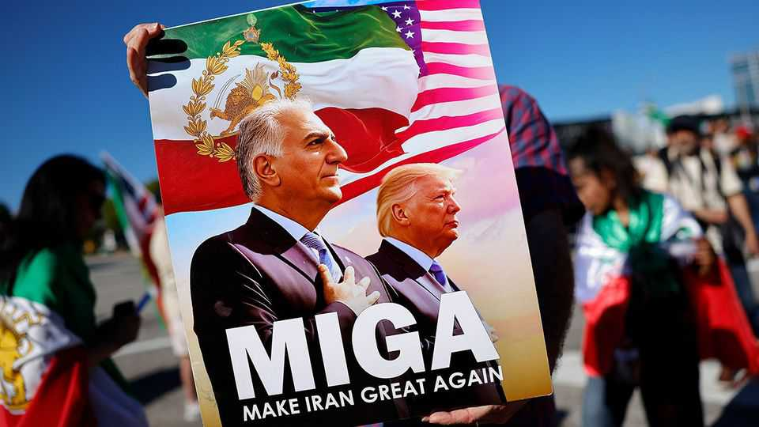
如果油价冲击是短期的，特朗普的追随者（MAGA）无疑会原谅他们的英雄因引发危机而造成的后果。但内布拉斯加共和党众议员唐·布экон（Don Bacon）表示：“这场冲突持续时间越长，对总统和政治局势的风险就越大。”另一项批评是，伊朗战争似乎违背了总统承诺结束美国“无尽战争”的承诺，转而专注于国内问题。右翼评论员塔克·卡尔森（Tucker Carlson）称这场冲突“绝对令人作呕且邪恶”，预测这将使总统的政策方向发生“深刻变化”。另一项不满则聚焦于以色列对特朗普发动战争决策的影响。前国务卿马可·鲁比奥（Marco Rubio）在记者会上表示，美国是在得知以色列计划先发制人后才采取行动——他称此举威胁到美军基地的安全，引发争议。■
特朗普否认了这一系列事件，转而声称自己迫使以色列采取了行动。无论如何，这一事件为MAGA批评者提供了论据——尤其是那些对以色列持怀疑态度的人。“很难说出口，但美国并未在这里做决定，本雅明·内塔尼亚胡做了决定，”卡尔森在播客中怒斥道。如果战争陷入僵局，MAGA支持者是否会继续支持总统？特朗普要求伊朗“无条件投降”——这一最大化的战争目标，得到的MAGA共和党人支持比例高于共和党整体。要实现这一目标，除非动用地面部队，否则几乎不可能。特朗普并未排除这一可能性。这是否会触及MAGA的红线？另一个风险是伊朗可能陷入内战。这会让总统显得软弱无能。■
特朗普长期以来猛烈抨击拜登2021年从阿富汗撤军的决定，称其是美国的耻辱，誓言自己绝不会做出如此“令人难堪”的事。然而，若在伊朗的行动出现混乱结局，他可能同样面临类似的指控。目前，特朗普仍获得MAGA（让美国再次伟大）运动的坚定支持。从他处理杰弗里·爱泼斯坦事件的方式，到其外交冒险，几乎没有任何事动摇其核心支持者中高达90%的高支持率。伊朗冲突或许将成为检验他们忠诚度的最大考验。“MAGA就是特朗普，”总统在首批炸弹投下后曾如此表示。随着竞选进程的拖延，他或许会逐渐发现，这种忠诚是否真的如他所言。■
了解美国政治动态，订阅《美国简报》（The US in brief），获取每日对最重要政治新闻的快速分析；以及《制衡》（Checks and Balance），每周深度解析美国民主现状及选民关切议题。■
§022 德黑兰角声：让伊朗再次伟大原题：The view from Tehrangeles · 板块：United States · 栏目：美国
鲁兹贝·法拉哈尼普尔（Roozbeh Farahanipour）在洛杉矶西木区的希腊酒馆里，听到报道说阿亚图拉阿里·哈梅内伊已去世。起初，法拉哈尼普尔半信半疑。1999年他领导学生起义后逃离伊朗，数十年来一直居住在洛杉矶，期盼最高领袖终将得到报应。随后特朗普在社交媒体平台证实了这一消息。“我拿起香槟瓶，打开它，一饮而尽。”法拉哈尼普尔回忆道。附近聚集了一群人，挥舞着伊朗、以色列和美国国旗。“如果有人经过，来祝贺我，我就把香槟分给他们。”
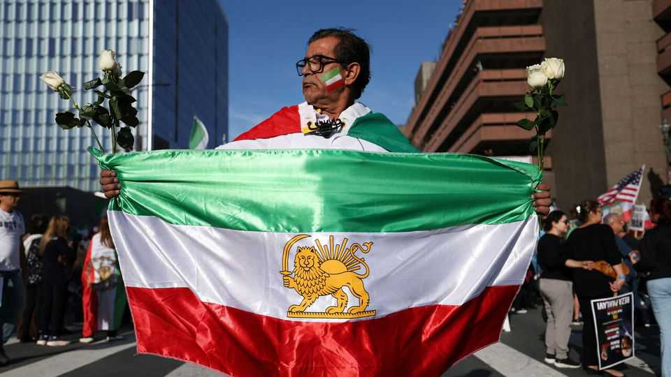
半数伊朗裔美国人居住在加利福尼亚州。近三分之一（约23万人）居住在洛杉矶地区。许多人是在1979年革命后抵达美国的，尤其是伊朗犹太人。这些首批移民往往富裕且受过良好教育，他们最初定居在西木区和比弗利山庄，逐渐形成了“德黑兰角”。因此，当美国本月开始轰炸伊朗时，西木区大道成了伊朗裔美国人表达支持的场所。一家地中海烧烤店挂出“让伊朗再次伟大”的标语牌，一家波斯书店展示着被推翻的国王礼萨·巴列维之子雷扎·巴列维的照片（反对派人物），旁边挂着一张标语海报，上面写着：“推翻伊朗政权。不再有霍梅尼。伊斯兰共和国必须终结。”尽管许多伊朗裔美国人希望实现政权更迭，但他们对美国在这一过程中应扮演的角色存在分歧。
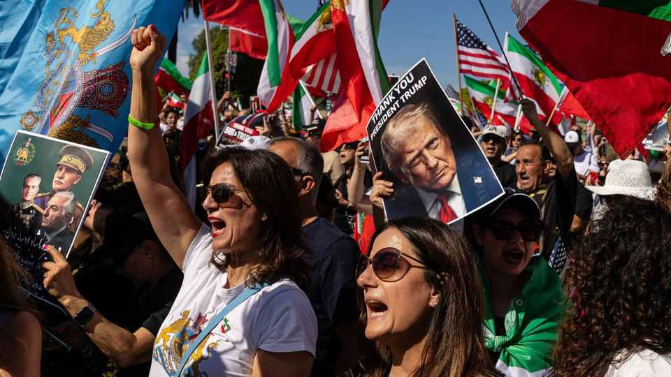
像伊朗本身一样，流散群体也是多民族、多宗教和多代际的。最支持特朗普的群体将奥巴马政府2015年与伊朗达成的核协议视为背叛。他们认为美国应坚持现有政策，直至政权——特别是其强大的安全力量伊斯兰革命卫队——被削弱。“现在不是让伊朗人民独自面对的时候”，贝弗利山庄的活动家兼本地商界领袖埃拉姆·雅古比安（Elham Yaghoubian）如此认为。她的长期好友法拉哈尼普尔（Mr Farahanipour）则代表更为怀疑的阵营。他说，在哈梅内伊（Khamenei）去世后，美国曾有重大机会宣布胜利并结束冲突。他希望轰炸停止，让伊朗人走上街头。■
然而两人对委内瑞拉式结局的厌恶却达成了共识，即特朗普支持政权内更顺从的成员接掌权力。雅格布扬女士表示：“谁的手沾染了人民的鲜血，他们就没有资格……掌控这个国家。”若战争持续，人们对特朗普竞选活动的热情可能逐渐消退。一些在革命后离开伊朗、出生在美国的伊朗裔年轻人如今已步入30多岁和40多岁，他们的政治记忆并非源于政权，而是美国在伊拉克和阿富汗的持久战争。许多人担忧政府的激进行为只会带来持续冲突而非解放。在韦斯特伍德大道上，红色喷漆写着“停止战争”，覆盖着政权在1月杀害抗议者时的照片。情绪可能已悄然转变。■
3月8日，德黑兰人聚集在加州大学洛杉矶分校，为波斯新年诺鲁兹节举行音乐会。伊朗沙赫尔乐团的首演曲目是一首悼念抗议者的安魂曲。作曲家沙哈布·帕兰贾向观众致辞道：“我们感同身受，我们共担忧虑，我们始终怀抱希望。” ■ 保持对美国政治的敏锐关注，订阅我们的每日简报《美国简报》（The US in brief），获取对重要政治新闻的快速分析，以及每周专栏《制衡》（Checks and Balance），深入探讨美国民主现状与选民关切议题。
§023 克里斯蒂·诺姆不光彩的遗产：国土安全部长 美国 强制解职原题：Kristi Noem’s ignoble legacy as homeland-security secretary · 板块：United States · 栏目：美国
在特朗普总统将其从内阁中解职两天后，克里斯蒂·诺姆却在感谢他赋予的新职责。她承认，这个职位是虚构的。“我想感谢总统创造了这个职位，并给予我担任该地区特别特使的荣誉与机会，”她在3月7日与拉丁美洲领导人举行的“美洲盾牌”（Shield of the Americas）首次会议上表示。该联盟是此前并不存在的西半球右翼国家联盟。她将不再在国内讨论毒品和移民问题，而是转而在国外进行相关工作。
数周来，她被解职的传闻已显得迫在眉睫。共和党与民主党参议员在年初联邦移民官员于明尼阿波利斯枪杀两名美国示威者后，纷纷要求她辞职。她随后在国会面临激烈质询。3月5日，特朗普在Truth Social平台发布长文宣布解职，重点提及接任者、俄克拉荷马州参议员马克韦恩·穆林。作为前南达科他州州长的诺姆此前并无执法经验，却主导将国土安全部转型为以移民执法为核心的机构。国会通过向移民执法机构拨款近1700亿美元，加速了这一进程。诺姆成为总统大规模遣返政策的象征性人物。■
她手持枪支与移民与海关执法局（ICE）特工并肩出现在美墨边境。她曾在臭名昭著的萨尔瓦多监狱前拍摄视频，镜头对准被关押的遣返人员。在对瑞妮·古德（一名在明尼苏达州抗议活动中遇害的示威者）的死亡展开调查之前，诺姆便将她的行为定性为“国内恐怖主义”。然而这些似乎并非诺姆失去工作的最终原因。上周国会山听证会上，她被要求解释一项2.2亿美元广告宣传项目的合同授予过程。其中一则广告显示诺姆骑马站在拉什莫尔山前，对移民说：“触犯我们的法律，我们将严惩不贷。”诺姆坚称总统已批准该宣传项目，但总统予以否认，如今她已辞去国土安全部部长职务。■
诺姆女士在移民与海关执法局（ICE）留下的是一段暴力且充满争议的遗产。急于培训数千名新招募的ICE特工，并希望通过边境巡逻队（Border Patrol）展示武力，导致许多被派往城市的特工缺乏应对抗议活动的准备。明尼阿波利斯的暴力事件让美国民众对政府的移民政策产生反感，迫使政府至少暂时放弃在城市采取激进手段。诺姆女士在部门内部也并不受欢迎。过去一年内离职的官员描述了一个由其右臂人物科里·勒旺多斯基（Corey Lewandowski）主导的充满恐惧与威胁的环境。目前该部门陷入僵局。民主党拒绝批准进一步资金，除非包含对ICE的新限制，例如禁止佩戴面罩。但民主党对诺姆女士离职的喜悦可能有助于推动预算谈判。■
政策不会出现重大转向。穆林先生（Mr Mullin）在众议院任职十年后于2022年当选参议员，他也是移民政策强硬派，曾支持明尼阿波利斯市ICE特工的行动，以回应戈德（Good）事件。更重要的是，副幕僚长史蒂芬·米勒（Stephen Miller）仍是政府边境和遣返政策的总设计师，他的职位从未受到质疑。■ 请订阅《经济学人》每日简报《美国简报》（The US in brief），获取对重要政治新闻的快速分析，以及每周专栏《制衡》（Checks and Balance），深入探讨美国民主现状及选民关注的核心议题。
§024 拉美裔支持流失或令共和党在中期选举失利原题：Lost Latino love could cost Republicans the midterms · 板块：United States · 栏目：美国
“我从小看着《学徒》长大，”马里奥·古埃尔罗说，“每次特朗普出现在选票上，我都会投他一票。”但如今，像他这样的拉美裔人士大多感到后悔。这位德克萨斯州麦卡伦市的建筑承包商最初支持特朗普，因为：“他是个商人，是个建设者。你知道，他是世界上最成功的商人之一。他一定会为经济带来巨大改变。”2024年时，还多了一个原因：边境局势混乱，而古埃尔罗的住地就靠近边境。在乔·拜登总统任内，从墨西哥涌入的非法移民潮演变为洪流。
格雷戈里奥·格雷罗曾目睹“数千人住在帐篷里”，他们蹚水或划船穿越格兰德河。他说：“看起来像一场人道主义危机。”在竞选期间，特朗普承诺要驱逐“最危险的那群人”，格雷罗回忆道：“当我听到这句话，我心想，‘对，伙计，把所有杀人犯都抓走，把所有强奸犯都抓走。’”如今他反思道：“我们看到的并非如此。他们只是在抓所有人。”如今，南德克萨斯州各地的检查站要求司机停车出示证件。大规模驱逐行动已摧毁建筑行业。承包商雷内·佩雷斯表示，工人不敢出门，因为任何看起来像拉丁裔且携带工具的人都可能被带走。由于可用劳动力严重短缺，工程进度需要两倍时间，他说。■
格雷戈里奥（Guerrero）抱怨美国移民与海关执法局（ICE）官员在工人浇筑混凝土过程中将其带走。“你谈的是，比如，一开始就损失了2万美元，甚至还没开始建房，”他说，“如果所有这些建筑商都无法完成项目，……他们开始拖欠贷款怎么办？这将影响所有人。”拉丁裔选民帮助特朗普赢得第二个任期。民调显示，其在拉丁裔群体中的支持率从2020年的36%上升至2024年的48%，创共和党总统候选人历史新高。支持率变化最大的地区是德克萨斯州南部，该地区14个县中有12个支持特朗普。共和党曾宣称拉丁裔找到了新的归属。如今这些优势正在流失。CNN民调显示，截至2月的一年中，特朗普在拉丁裔群体中的支持率从41%降至22%。■
另一项由皮尤研究中心（Pew Research Center）于11月发布的民调显示，约三分之一的拉丁裔群体在过去六个月曾考虑离开美国，主要原因是政治因素。吉姆·亨森（Jim Henson）认为，特朗普在2024年算是幸运的。他在西班牙裔群体中的支持率恰逢其时达到顶峰。人们仍在消化通胀带来的影响，对边境混乱的记忆也依然清晰。选民通常将这两项问题归咎于拜登。部分指责是合理的。移民圈内流传消息称，在拜登任内，任何越境申请庇护的人都可在美国等待听证会期间居留，而听证会可能耗时数年。拜登在2024年大幅收紧了相关规则，非法入境者数量骤降。然而，选民心中对无序混乱的印象未能及时消退，影响了总统大选的选情。■
“我们的社区感到恐惧，”瓦尔韦尔德县治安官乔·弗兰克·马丁内斯回忆道。在移民潮高峰时期，公共服务系统不堪重负。房主们夜深人静时惊恐地发现陌生人正穿越自家土地。“人们问，‘我什么时候能开枪射杀敲门的人？能不能从门后开枪？’”马丁内斯告诉他们不能：“你可能会射杀一个正在请求一杯水的人。”尽管一生都是民主党人，马丁内斯“公开反对”拜登，因为他“相信法治”。一年后，许多拉丁裔对特朗普代表法治的信念已不再坚定。明尼苏达州联邦特工杀害抗议者的画面令他们震惊。马丁内斯怒斥这种心态：“他们可以为所欲为且无需对任何人负责。”
格雷罗先生在德克萨斯州看到移民执法官驾车穿越居民前院追捕逃犯时感到震惊。“如果他们误伤了孩子怎么办？”他问道。民主党州议员爱迪·莫拉莱斯表示，他的选民“无法忍受”特朗普赦免竞选捐款人和涉毒的前洪都拉斯总统。《经济学人》/YouGov民调显示，68%的西班牙裔不认可特朗普处理移民的方式。多数人现在支持废除移民与海关执法局（ICE）。许多人也对特朗普经济政策感到失望。“他不是说过要立即解决通胀问题吗？”莫拉莱斯问道。目前，西班牙裔对特朗普处理经济和通胀的满意度差距超过两倍。许多选民误以为总统对物价有更大控制力。■
这在2024年曾助力特朗普，如今却成为他的负担，尤其是他的关税政策和对伊朗的对抗加剧了物价上涨。100美元在杂货店连“半个购物篮”都买不起，马尔蒂内斯先生叹道。拉丁裔选民的不满情绪可能决定中期选举的走向。得克萨斯州共和党人在重新划分选区以谋取自身利益时，曾假设拉丁裔选民支持率将维持2024年水平。但报告指出，这一假设将落空。美国商业移民联盟行动（American Business Immigration Coalition Action）的报告显示，全国范围内若出现10%的选民波动，至少有十个共和党席位面临严重威胁。在数十个选区，若选举结果胶着，拉丁裔选民的投票倾向可能成为关键。《经济学人》/YouGov民调显示，43%的拉丁裔计划在中期选举中支持民主党，而27%选择共和党。近期选举结果已显端倪。■
去年深秋空前的选民参与度推动民主党赢得弗吉尼亚州和新泽西州的州长职位。这一胜利主要得益于拉丁裔选民的踊跃参与，他们此前在以往选举中选择弃权。3月3日得克萨斯州参议院初选中，拉丁裔群体大规模支持民主党。尽管如此，共和党在拉美裔群体中仍保有部分优势。一批坚定的MAGA支持者认为特朗普的总统任期进展顺利，部分人甚至期待他推动委内瑞拉和古巴的民主进程。在社会议题上，共和党也占据一定优势。莫雷拉斯先生指出，许多拉丁裔认为民主党过于聚焦LGBTQ议题。莫妮卡·德·拉·克鲁兹，来自得克萨斯州的共和党众议员表示，2024年共和党在拉美裔群体中表现优异，因为“我们谈论的是繁荣与希望，而民主党则在谈论代词”。■
“没有人比我还爱我们的拉丁裔群体……”特朗普在2024年曾如此表示。然而，这种情感却越来越难以得到回应。格雷罗先生将在11月转向支持民主党。佩雷斯先生无法投票；但他的妻子，2024年时选择居家，现在将支持“目前所发生的一切的反面”。■ 关注美国政治动态，请订阅我们的简报《美国简报》，获取每日对最重要政治新闻的快速分析，以及每周专栏《制衡》，探讨美国民主现状及选民关心的议题。
§025 美国原题：Two very different states take aim at soaring hospital prices · 板块：United States · 栏目：美国
佛蒙特州与印第安纳州在许多问题上意见不合。前者对堕胎无妊娠期限限制，后者则实施着最严厉的堕胎禁令。佛蒙特州居民已能合法享受大麻的娱乐用途近十年，而印第安纳州居民则无法合法获取该药物。但去年这两个州都推行了前所未有的医疗政策：它们将很快限制医院对持有商业保险（即工作提供的保险）患者的收费。三分之二的美国人通过这种方式获得保障。通常医疗费用由保险公司与医院协商确定，但这种模式未能有效控制成本。
自2000年以来，美国医院价格飙升250%——是整体医疗费用增速的两倍，几乎是通胀的三倍。医院如今占美国医疗支出的近三分之一。布朗大学的克里斯托弗·怀利（Christopher Whaley）表示，医院的高价格是“美国医疗支出高昂的主要原因”。印第安纳州和佛蒙特州的情况尤为严峻。印第安纳州雇主在争取援助时引用了一项研究，显示他们通过赞助的保险计划为医院服务支付的价格在美国名列前茅。佛蒙特州最大的保险公司去年面临破产风险。部分问题源于该州医院数量稀少且仅有一家主导保险公司，缺乏竞争。佛蒙特州医疗监管委员会主席欧文·福斯特（Owen Foster）表示：“这里实际上缺乏能抑制价格上涨的市场机制。” ■
佛蒙特州并非孤例——全美范围内，医院间的竞争正在消失。2023年，近半数都会区的住院护理市场由一个或两个医疗系统完全掌控。研究将整合与价格上涨联系起来，并观察到质量提升微乎其微。“我认为经济学家天然对监管机构介入定价机制持谨慎态度，”怀利先生表示。但他指出，医院已高度集中，实施价格上限或许有其合理性。此外，医院护理市场也远非完美。患者很少货比三家，价格往往不透明，即便价格明确，保险也常将患者从最严重的成本中隔离出来。这些成本可能最终转嫁为更高的保费，但整个过程缺乏透明度，雇主补贴则减轻了负担。印第安纳州的方案则更为精准。■
其价格上限政策仅适用于非营利性医院。这些医院须在2029年前将价格降至全州平均水平以下，否则将失去免税资格。惠利（Mr Whaley）估计此举每年可节省高达10亿美元。共和党州长迈克·布兰（Mike Braun）原本希望采取更严格的措施。但他表示：“任何受到影响的人反对更激进的方案，因此我们最终只能做到这个程度……我称之为令人沮丧。” 对许多保守派而言，即便如此程度的政府干预也令人反感。但支持价格上限的论点带有民粹色彩，这与共和党内的MAGA派系产生共鸣。布兰本人则将医院比作水电供应商，称：“即使你是保守派，也会对监管公用事业感兴趣，因为这是唯一能控制其价格的方法。” 佛蒙特州则采取了不同的做法。■
州监管机构将设定医院对每项诊疗项目的收费上限，该上限为联邦医疗保险计划（Medicare）支付费率的若干倍。根据上限设定的不同，每年节省的金额可能从960万美元（若价格限制为医保费率的四倍）到4.45亿美元（若设定为医保费率的两倍）。医院对此并不满意。印第安纳州医院协会主席斯科特·蒂特尔（Scott Tittle）表示，计算平均价格并不容易。“危险在于你开始将苹果与螺丝刀进行比较。”他指出，医院已经削减成本并处于微薄利润的运营状态。经济学家警告称，价格上限可能威胁医疗创新，或导致诊疗项目价格攀升以达到上限。蒂特尔警告称，若上限设定过低，“印第安纳州居民可能会感受到一些医院关闭带来的严重影响”。
在佛蒙特州，人们普遍认为即将迎来重大变革。“我们需要将医疗护理从医院体系中转移出去，这意味着医院将无法维持现状，”福斯特先生表示。美国其他地区对此也密切关注。近期，缅因州、马萨诸塞州和俄克拉荷马州等政治倾向各异的州都提交了限制收费的法案。医院病房有一种特殊能力，能将不同寻常的群体聚集在一起。■ 了解美国政治动态，请订阅我们的每日简报《美国简报》（The US in brief），获取最新政治新闻的快速分析；以及每周简报《制衡》（Checks and Balance），深入探讨美国民主现状和影响选民的关键议题。
§026 美国的指责——以色列游说团体 美国原题：America’s blame-Israel lobby · 板块：United States · 栏目：美国
“如果你推翻萨达姆——萨达姆政权——我向你保证，这将对地区产生巨大的积极影响，”本雅明·内塔尼亚胡（Binyamin Netanyahu）在2002年向国会作证时说道，当时乔治·W·布什总统正考虑入侵伊拉克。然而，这场战争从军事胜利演变为战略灾难后，内塔尼亚胡支持推翻萨达姆政权的言论，使人们首先在学术界，随后在美国政治中，对以色列在美国外交政策中具有邪恶影响的怀疑情绪加深。但当时内塔尼亚胡并未掌权，他被21世纪唯一一位足够狡猾且强硬、能将其排挤出权力中心的以色列政治家阿里埃勒·沙龙（Ariel Sharon）击败。
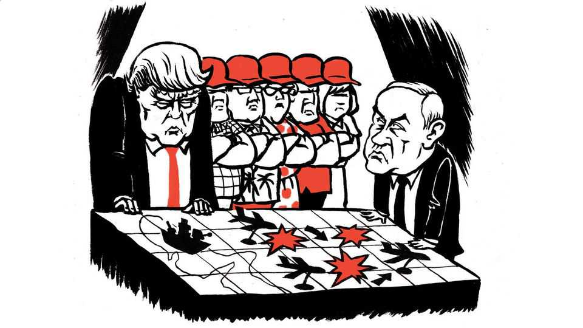
■
作为总理，沙龙曾私下警告布什不要发动入侵行动。当时担任美国特拉维夫大使的丹尼尔·库尔策回忆称，在战争爆发前，他曾向时任国务卿科林·鲍威尔发去电报，总结了他持续听到的以色列高级官员和分析人士的观点：以色列对入侵并不反对，但也不主动推动；如果美国发动入侵，应尽快撤离；并且不应幻想能将伊拉克转变为民主国家。从现在回顾，这些建议相当明智。然而对伊朗的战争呈现出更为复杂的局面。现任以色列任职时间最长的总理内塔尼亚胡多年来一直反对与伊朗进行谈判，坚持主张采取军事行动。■
与前两次海湾战争不同，美国领导人在那两次冲突中试图拉拢其他盟友而排除以色列——担心以色列参与会疏远阿拉伯世界——此次两国武装力量却并肩作战，几乎孤军奋战。在马可·鲁比奥（Marco Rubio）称以色列实际上设定了首轮打击时间后，唐纳德·特朗普（Donald Trump）过度反应，坚持表示：“如果有的话，我或许迫使以色列采取行动。”与伊拉克战争后数年不同，质疑以色列将美国拖入战争的论调并未渗透到美国舆论中，而是填补了特朗普未能唤起美国人围绕核心国家利益共识所留下的真空。■
这场战争迅速成为流行文化的一部分。美国有线电视新闻网（CNN）的批评者称特朗普未经授权发动战争，但事实上他获得了授权，”《周六夜现场》（Saturday Night Live）喜剧节目在战争爆发次日，由一位假新闻主播调侃道。“内塔尼亚胡说这没问题。”民主党参议员指责特朗普选择“追随以色列”。而特朗普的MAGA运动中一些最响亮的声音也持相同观点：右翼评论员Tucker 卡尔森（Tucker Carlson）将此称为“以色列的战争”。卡尔森半对半错：这不仅是以色列的战争，也是其他国家的战争。■
内塔尼亚胡或许再次证明自己提供的建议糟糕，但特朗普如同其前任一样，有权拒绝这些建议。（事实上，对于那些怀疑存在不当影响的人来说，真正的幕后黑手可能是参议员林登·格雷厄姆，这位鹰派人士曾指导内塔尼亚胡如何游说总统，据《华尔街日报》报道。）特朗普一贯对以色列颐指气使，例如6月12天的伊以战争结束后，他下令以色列召回轰炸机；他也一贯无视以色列的利益，追求自己眼中的美国国家利益，例如5月与胡塞武装达成协议，阻止其骚扰红海船只，却未要求胡塞武装停止攻击以色列。如果特朗普认定战争带来的经济后果损害了他的政治利益——他将政治利益等同于国家利益——他将不顾内塔尼亚胡推翻伊朗政权的目标结束战争。■
特朗普为何选择参与这场战争，仍是个谜。随着时间推移，这对他的“美国优先”支持者而言只会变得更加困惑。他给欧洲盟友施加了巨大压力，要求他们应对来自俄罗斯的威胁，而俄罗斯与伊朗不同，拥有核武器。四个月前，他的国家安全战略曾将中东议程总结为“转移负担，建立和平”。为何他未接受内塔尼亚胡据称提出的以色列自行打击伊朗弹道导弹的提议？这些导弹威胁的是以色列和其他地区国家，而非美国。库茨先生怀疑特朗普渴望重演六月参与以色列袭击伊朗核设施时的速胜局面。“我认为他只是想参与这场胜利阅兵。”他说。或许这场战争很快就会结束，且对美国有利。■
以色列将展现其作为盟友的价值，伊朗对海湾国家的袭击可能使这些国家更接近犹太国家。但如果冲突损害了美国，那么内塔尼亚胡将因与一位极具争议的美国总统结盟而犯下最严重的战略错误，这位总统冲动到足以在缺乏国内和国际广泛支持的情况下发动战争。前总理们曾将美国两党支持视为“以色列在全球面临的最根本性问题，甚至超过伊朗的核计划”，以色列知名记者纳达夫·艾亚尔（Nadav Eyal）表示。当艾亚尔还是一名年轻的外交记者时，沙龙在2002年从白宫会议返回途中飞往家乡的途中，将他召入自己的舱室，私下透露他担心伊拉克战争是“一场错误的战争”，但他从未公开表达过这种担忧。
相比之下，内塔尼亚胡在2015年游说美国国会反对奥巴马总统与伊朗的核协议，使以色列在美国成为党派议题。内塔尼亚胡对加沙战争的残酷镇压进一步疏远了民主党，同时也暴露出其押注“美国优先”共和党赌注的风险。据中东理解研究所12月的一项民调显示，在伊朗战争爆发前，大多数45岁以下的共和党人已支持削减对以色列的军事援助。特朗普的MAGA核心支持者大概率不会反对其政策。但这也意味着，如果这场战争陷入僵局，他们需要另寻替罪羊。■
§027 海地终于重燃希望原题：At last, Haiti has some hope · 板块：Americas · 栏目：美洲
绑架案原定在海地首都太子港（Port-au-Prince）的繁忙中产阶级社区德尔马斯（Delmas）发生。作为少数仍主要在政府控制下的区域之一，太子港是商业中心，但海地帮派已习惯于在他们想的地方活动。这次不同。2月23日，海地国家警察（PNH）挫败了帮派计划，击毙六名帮派成员，缴获八件武器，包括四支突击步枪。行动中两名警官身亡，另有两名警员被枪击受伤。■
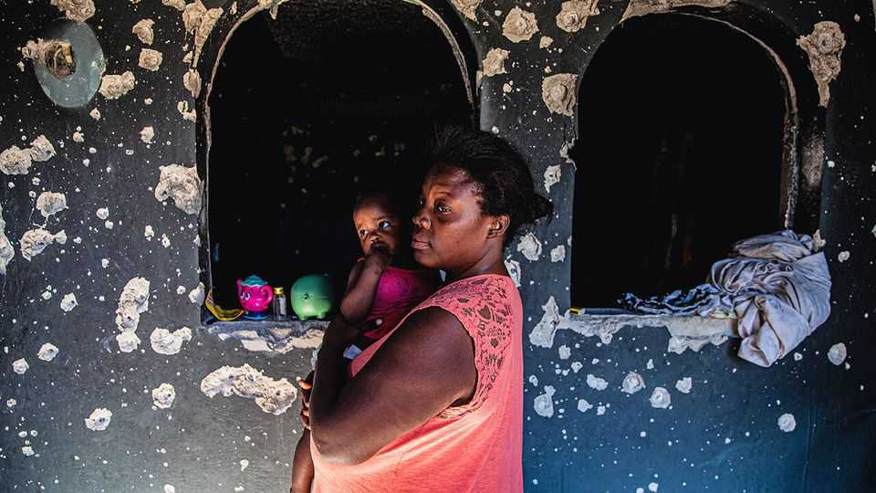
海地与帮派的长期斗争自2021年总统若弗内尔·莫伊兹遇刺后持续升级（其涉嫌凶手的审判于3月10日在迈阿密开庭）。由26个帮派组成的联盟已控制了首都的大部分地区，并至今仍掌控着这里。该组织自称"维安桑姆"（Viv Ansanm），意为"共存"。此后，数千名海地人死于帮派暴力，近150万人被迫流离失所。但最近出现了一些迹象，如挫败的绑架阴谋，表明帮派势力正在减弱。新任警长弗拉迪米尔·帕拉伊松（Vladimir Paraison）自8月上任以来，对维安桑姆展开猛烈打击，与美国等国际伙伴及私人安保公司密切合作。太子港街头出现了一些积极迹象，海地民众正努力重建生活。政治统一感正在逐渐形成。■
尽管海地仍无总统，但总理阿里克斯·菲斯-艾梅（Alix Fils-Aimé）在分裂的临时政府解散后，成为该国唯一的领导人。该临时政府未能完成恢复安全局势和举行选举的使命，而选举早已逾期多年。菲斯-艾梅获得美国支持，这使他占据优势。美国驻海地公使亨利·沃斯特（Henry Wooster）自6月到任以来，改变了美国政府对海地立场的不确定性（唐纳德·特朗普曾称其为“粪坑”）。这位经验丰富的外交官重振了国际社会打击帮派的行动。美国于9月在联合国促成了一项针对海地的安全计划。■
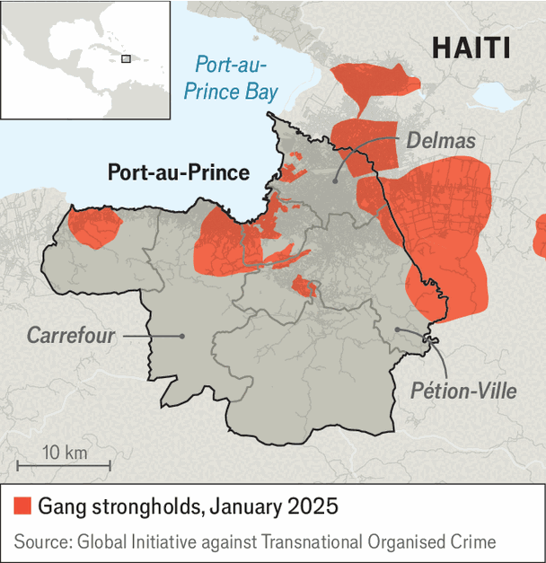
它取代了此前由肯尼亚领导的国际警察任务，该任务由拜登政府设立，但因人员不足、装备落后而效果不佳。新的反帮派力量（Gang Suppression Force, GSF）规模更大、资金更充足，并拥有更广泛的执法权限。首批1500名来自乍得的士兵将于4月抵达，未来几个月将部署总计5500人。这些改进令人鼓舞。上德尔马斯区的街道变得整洁，垃圾开始被清理。商业活动逐渐恢复活力。曾因暴力事件于2024年11月被迫关闭的机场，现已重新开放国内航班，但国际旅客仍需从北部城市卡普-海地安乘直升机飞抵首都。帮派分子仍控制着许多道路，以枪指着乘客索要过路费。尽管有所改善，但似乎只有首都的一小部分区域相对安全。■
从中产阶级郊区佩蒂翁维尔（Pétion-Ville）延伸至城市上空山丘的精英封闭式庄园，再到市中心政府部委所在地，首都其余地区居住着290万人，仍由帮派控制。像卡雷福（Carrefour）这样的郊区相对平静，但人们仍不敢夜间外出，担心遭遇帮派巡逻。无国界医生组织（Médecins Sans Frontières）海地负责人迪安娜·马尼拉·阿罗约（Diana Manilla Arroyo）表示：“对于生活在帮派控制区的大多数人口而言，一切没有任何改变。”外国居民极少在海地居住，许多大使馆和联合国办事处已关闭。美国曾有400名外交官驻扎该国，包括美国国际开发署（Agency for International Development）工作人员，如今仅剩20人。海地经济状况糟糕。■
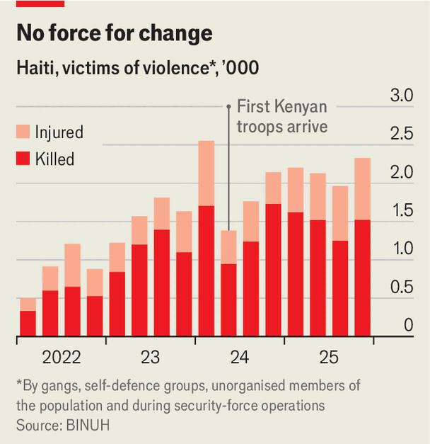
商业活动仍在继续，但帮派对进出社区的人收取过路费，并向运输货物（包括食品）的人索取费用。28岁的设计师维琪·奥内利安（Vicky Onélien）去年不得不离开居住的社区，因为帮派设立路障使她无法安全前往工作。她担心家人并对警方的应对策略表示质疑。帮派已深深扎根于她的社区，而警方“仍无实际存在感”。国家财政状况严峻。据曾为多位总统及财政部长提供建议的海地经济学家加布里埃尔·维雷特（Gabriel Verret）称，政府收入已降至GDP的5%，创历史最低纪录（加勒比地区平均为GDP的20%）。“海地国家政权仍存在，”维雷特表示，“但仅存于纸面。”去年帮派曾烧毁他的住所及财政部长办公室附近的建筑。■
政府将五分之三的有限资源用于支付薪资，其余用于日常运营和资本支出的余地极小。如今，总理的肩头承载着更大的责任。菲尔斯-艾梅（Mr Fils-Aimé）现年54岁，出身海地精英阶层（并与多名受美国制裁的腐败相关人员及帮派分子有交情）。他的两项主要职责相互关联：其一是巩固安全成果并持续打击帮派势力；其二是引导海地通过近十年来的首次选举，确保选举过程更加安全。二月起，海地选举委员会开始登记有意参选的政党组织，目前已启动首轮投票的筹备工作，原定于八月举行。■
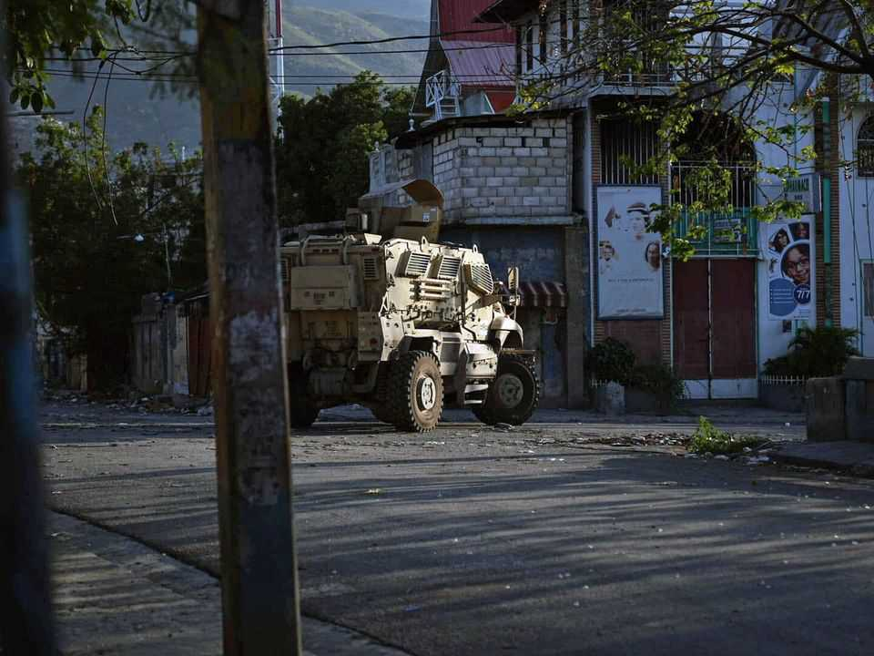
要成功，总理必须依靠55岁的帕拉伊松先生。他自1995年国家警察成立起便任职于该机构（海地此前完全没有常备警察）。他计划每年招募4000名警员，以提升警力与居民比例，这一比例一直远低于国际标准。帕拉伊松先生表示：“我们正为警员配备一切必要装备，确保他们真正武装且充分准备应对这一挑战。” 对帕拉伊松而言，外国援助如今至关重要。美国国务院资助直升机医疗撤离服务及小型创伤单元，由美国非营利组织Hero Foundation运营，该组织正在皮通维勒建设一家30床位医院，用于救治受伤警员。此类支持有助于提振士气。■
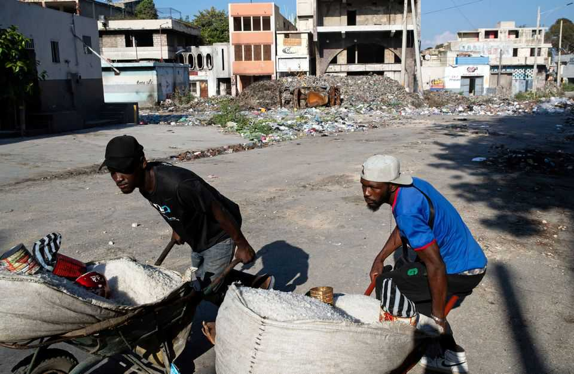
斯塔西·利布兰迪（Hero Foundation负责人）表示，帕拉伊松先生“拥有这种战士心态”，“普通士兵们都很喜欢他”。在PNH的士气也因与新成立的、由美国支持的GSF特别工作组合作而得到提振。此外，PNH还得到一支由高度专业化的军事承包商团队支持，这些承包商大多是前美国和萨尔瓦多士兵。承包商协助警方实施“自杀式无人机攻击”：将装有炸药的廉价无人机飞入帮派领地后引爆。这种手段已有效遏制了帮派势力。“无人机为警方提供了作战机会，”利布兰迪女士表示。警方此前独自开展对帮派的行动，如今则有了可靠的支援力量。尽管美国提供了大部分安全资金，过去三年累计超过10亿美元，加拿大也提供了协助。■
它自2022年以来已拨款3.5亿美元，其中超过一半用于培训和装备警察，配备装甲车辆。美洲国家组织（Organization of American States）这一政府间机构也资助了装备采购，包括90辆Kawasaki警用摩托车、防弹背心、弹药，甚至靴子和袜子。许多海地人同情其不堪重负的警察部队，但他们也担忧日益激烈的帮派斗争带来的后果。无人机袭击迫使帮派头目躲藏，却也让仍被困在社区中的平民感到恐惧。3月10日发布的一份报告中，国际人权组织人权观察（Human Rights Watch）质疑了在人口密集的城市地区使用爆炸无人机的合法性。■
文章称，2025年至少有1,243人在141次行动中被他们杀害，其中包括17名儿童和至少43名据称并非犯罪集团成员的成年人。帕拉伊松先生对这类担忧不以为意。“人生处处有牺牲。如果你对现状感到不安，就离开吧，”他说。当被追问贫困海地家庭是否拥有这样的选择时，他态度更加坚决。“告诉我你常和谁混在一起，我就能告诉你你是谁。不幸的是，我们正陷入兄弟相残的局势……如果你不想要安全，我无法提供给你。”这种强硬立场确实让帮派感到不安，但可能仍不足以让海地在8月举行选举前恢复足够安全。在这一过程中，海地民众必须信任警方维持治安。美国、加拿大等国希望菲尔斯-艾梅先生能凭借其才干和人脉（尽管存在缺陷）引导海地度过难关。■
他本人无法执政，但拥有包括奥利维耶·巴拉鲁（Olivier Barrau）在内的强大盟友，后者是银行家和保险巨头。削弱帮派势力将是一大利好。但若菲尔斯-艾梅（Fils-Aimé）无法在十年无政府状态后重建民主，海地人或将再次目睹国家陷入混乱。■ 注册订阅我们的拉丁美洲专属简报El Boletín，深入了解这片充满魅力与复杂性的地区背后的塑造力量。
§028 巴西电影迎来高光时刻 《美洲》原题：Brazilian cinema is having its moment · 板块：Americas · 栏目：美洲
，当奥斯卡奖颁奖典礼于3月15日举行时，巴西将是关注最为集中的国家之一。去年，巴西电影首次获得最佳影片提名——《我仍在》（I'm Still Here），讲述军政府时期的故事。巴西民众身着金杯造型服饰，举办派对以致敬影片女主角。圣保罗制片人法比奥·古兰（Fabiano Gullane）表示：“全世界都知道三个词：可口可乐、耶稣基督和奥斯卡奖。”当这部影片斩获奥斯卡奖时，“这就像为整个国家赢得了奖杯”。
■
今年的惊喜远不止于此。克勒伯·门多萨·菲利霍执导的戏剧《秘密特工》获得四项奥斯卡奖提名，包括最佳影片和最佳男主角。巴西人再次为电影热潮而打扮。在最近的电影节上，另一位制片人罗德里戈·特谢拉感慨道，电影已超越了巴西日渐衰落的足球队，成为“我们国家最大的骄傲”。巴西的突然崛起让这个长期被视为拉美电影落后的国家陷入狂热。墨西哥，这片电影迷的国度，已斩获二十余项奥斯卡奖。拥有超过7000块银幕，是巴西的两倍。巴西人忧心忡忡，阿根廷——他们的主要足球对手——已斩获两座奥斯卡奖。就连体量较小的智利也已斩获三座。■
当一位巴西代理商在20世纪60年代试图在欧洲推广著名本土导演古拉伯·罗查（Glauber Rocha）的电影时，他感叹道：“古拉伯，真正没人对我们的电影感兴趣。”记者安娜·保罗·苏扎（Ana Paula Souza）表示，巴西电影业的崛起“不仅是电影行业的胜利，更是一个成功的商业案例”。数十年来，巴西娱乐产业长期被Rede Globo（环球电视台）主导，这家 prolific（ prolific 译为“ prolific”或“产量惊人”）肥皂剧生产商每天晚上都让巴西观众沉迷于其俗套的连续剧。与旧好莱坞类似，Globo内部完成所有制作，拥有该国最优秀的演员、编剧和导演，并与他们签订合同，禁止他们为其他公司工作。其余行业只能获得广告和音乐视频的影视残羹。电影曾是知识分子的专属领域，而付费电视则完全不存在。■
1992年，巴西陷入严重经济衰退，仅有三部本土电影获得全国性上映。国家支持和促进竞争的法律扭转了局面。2002年，政府设立了电影监管机构Ancine，该机构收集巴西电影数据，决定电影的展映天数，同时管理本地电影制作人的基金。2011年，巴西通过了《付费电视法》，取消了有线电视频道外资持股的限制，允许电信公司参与竞争。该法还规定，付费频道在黄金时段每周必须播放至少三个半小时的巴西内容，其中一半需独立制作。弗吉尼亚大学巴西电影与电视副教授埃利·卡特（Eli Carter）表示，这项法律通过削弱环球公司（Globo）的垄断地位，重塑了巴西电影产业。■
尽管环球电视台（Globo）仍占据主导地位，但独立制作公司迅速崛起，填补了每周必播的时段。付费电视的渗透率从2000年代的约15%上升至2010年代中期近半数。到付费电视市场份额被流媒体服务和互联网侵蚀时，巴西已拥有数十家独立制作公司投入运营。国家电影委员会（Ancine）为独立电影人设立的基金资金充裕。时任总统雅伊尔·博尔索纳罗（Jair Bolsonaro）领导的右翼民粹政府削减了艺术领域的资金，包括Ancine。博尔索纳罗认为大量艺术作品是“浪费金钱”。疫情期间影院观众数量也大幅下降，至今尚未恢复。2025年在影院上映的巴西电影中，超过半数票房不足千张。因此，行业重心已转向流媒体平台，如Netflix和HBO Max。■
“今天，我们拥有众多大型制片人、导演和发行商：我们已进入成熟阶段，”卡埃奥·古兰内（Caio Gullane，法比亚诺的弟弟兼合伙人）表示。“现在我们需要第二个发展周期，这意味着将作品出口到国外，并提升巴西影视作品在本国的市场份额。”为实现这一目标，参议院正在讨论一项“流媒体法”，要求平台增加本地节目制作、在首页展示并缴纳国家电影委员会（Ancine）税收以支持本地电影人。该法案预计将在未来几个月内通过，正如卡尔特先生（Mr Carter）所言，它将“把付费电视法对传统电视行业的影响扩展至流媒体领域”，可能使国家支持翻倍。巴西人还有一个理由对自身的好运持续感到期待：国际电影艺术与科学学院（Academy of Motion Picture Arts and Sciences）正展现出国际主义转向。■
比佛利山庄的奥斯卡学院拥有1万名成员，他们决定奥斯卡奖得主。自2016年演员们批评奥斯卡学院过度代表白人男性后，该学院已将成员扩展至全球各地。如今超过五分之一的成员并非来自美国。这或许帮助了国际制作——如韩国剧集《寄生虫》——在近年取得巨大成功。特谢拉先生表示：“好莱坞的语言障碍随着《寄生虫》的出现已不复存在。”巴西人对今年的足球世界杯并不抱太大期待，但奥斯卡金像奖或许能带来惊喜。■ 注册订阅我们的拉丁美洲专属简报El Boletín，了解塑造这一迷人而复杂的地区的力量。
§029 伊朗的禁卫军或将从战争中元气大伤却未被击溃原题：Iran’s praetorian guard may emerge from the war diminished but undefeated · 板块：Middle East & Africa · 栏目：中东与非洲
任何试图寻找波斯湾战争清晰信息的人，都不会在参战者的声明中找到答案。唐纳德·特朗普称这场战争“非常完整，几乎结束”，却又说“才刚刚开始”。伊朗新任最高领袖自3月9日被任命以来便未露面发声。其下属坚持表示暂不希望与阿拉伯邻国发生冲突，却持续轰炸这些邻国。随着战争进入第三周，其结束时间与方式仍难以预料。
■
美国和以色列希望将伊朗逼至屈服或崩溃，而伊朗则试图以同样的方式影响全球经济。该政权赌自己占据上风：伊斯兰革命卫队（IRGC）的韧性显然会强于一位担心高油价的美国总统。短期内，它可能是对的。但战争结束后，这些卫队将难以重建对政权敌人的威慑力，这种威慑力长期以来被用作其特权地位的正当理由。各方战争的代价已十分高昂。据华盛顿一家非政府组织统计，截至3月12日，伊朗已有超过1800人遇难，大多是平民。伊朗的袭击已导致以色列和海湾国家至少30人死亡。能源市场陷入动荡（见简报）■
3月7日，以色列对德黑兰燃料库的袭击使伊朗首都笼罩在有毒烟雾中。海湾地区每天因旅游和旅行损失超过5亿美元的收入。五角大楼称，自战争开始以来，已击中超过5000个目标。超过50艘伊朗海军舰艇已被击沉。以色列认为，伊朗弹道导弹发射器中不到三分之一仍处于可运作状态，其余已被摧毁或埋藏在掩体废墟下。伊朗对海湾国家的袭击频率有所下降。3月10日，伊朗对阿联酋（UAE）仅发射了44枚导弹和无人机，相比3月1日的360枚大幅减少。但伊朗仍持续发动攻击，其袭击目标正越来越多地集中在关键基础设施上。近几日，伊朗无人机已损坏阿布扎比和巴林的炼油厂、迪拜国际机场以及阿曼的一个港口。■
3月11日，三艘货轮在波斯湾遭到袭击。伊朗还威胁要袭击海湾地区的银行，导致汇丰银行关闭卡塔尔分行，标准银行则撤离迪拜办事处。特朗普总统无疑对市场波动感到焦虑，但他似乎急于结束这一切。他告诉新闻网站Axios，伊朗“几乎已无任何可攻击目标”。他的国务卿马可·鲁比奥不断重复着狭隘的目标：他认为，若能摧毁伊朗的导弹计划和海军，战争就算成功。这可能不足以让特朗普宣布胜利。以色列也希望他继续推进。不过，一些美国官员正试图引导总统采取更有限的战争策略。无论战争如何结束，伊朗革命卫队都将是接下来局势的关键力量。该组织本就是伊朗的主要权力中心。■
传统观点认为，它将在冲突后更加强大。新任最高领袖穆斯塔法·哈梅内伊（Mojtaba Khamenei）与革命卫队关系密切，但其实际掌握的权力尚不明确；关于他健康状况的传闻仍在持续。许多分析人士认为，真正掌握大权的可能是其他人，包括伊朗国家安全委员会主席阿里·拉里贾尼（Ali Larijani）和议会发言人穆罕默德·巴盖尔·加利巴夫（Mohammad Baqer Qalibaf）。对革命卫队而言，这倒是个好消息：这两人都是前军官。然而，如果其政治权力得到增强，其他支撑其主导地位的支柱却在削弱。战前，革命卫队曾以威胁美国和以色列的可怕后果来威慑对方：单次导弹袭击即可击中以色列数千目标，快速攻击艇将成群结队地冲击美军舰艇，战争首两天就可能造成5000名美国人丧生。但这些情景并未发生。■
在海湾用无人机袭击软目标、向以色列投掷精度低的集束炸弹，更像是绝望的表现而非展示实力。以色列在此次战争和上一次战争中斩首行动的成功，表明伊朗革命卫队内部渗透严重，情报人员众多。过去九个月内该组织两名领导人遇害，幸存的指挥官可能正在藏匿。政权已将决策权下放给前线军官。曾被认为是一支凝聚力强的武装力量，如今却显得四分五裂。其军事能力与商业帝国均遭受重创。尽管发射装置可以更换，但导弹供应链的其他环节则更为复杂。美国非扩散研究中心（Centre for Nonproliferation Studies）的迈克尔·杜伊茨曼（Michael Duitsman）指出，空袭似乎已摧毁了伊朗所有固体燃料推进剂工厂。
以色列战机还袭击了从与伊朗革命卫队（IRGC）有关联的能源公司到德黑兰梅赫拉巴德机场等目标，后者是革命卫队用于向地区代理人走私武器的马汉航空总部。3月11日，以色列袭击了与革命卫队关系密切的Sepah银行数据中心。革命卫队还将面临地区格局的变化。战后海湾国家势必寻求降低自身脆弱性，尤其关注霍尔木兹海峡的安全。迪拜作为阿联酋的商业中心，长期以来是伊朗的经济枢纽，既是合法贸易的中转站，也是革命卫队关联企业洗钱的据点。阿联酋官员已开始讨论对伊朗商业活动进行管控。3月10日，特朗普政府向国会成员通报了其战略。■
战后，康涅狄格州民主党参议员克里斯·默里（Chris Murphy）对缺乏长期战略表示忧虑。“他们面临的难题是：当你停止轰炸，而他们重新恢复生产时会怎样？他们暗示可能再次发动轰炸。”他在社交媒体上写道。这暗示了战争可能的一个结果。伊朗或许会像1991年海湾战争后伊拉克那样，陷入美国实施的严苛制裁、维持禁飞区以及不定期空袭的困境。多年来，伊斯兰革命卫队（IRGC）一直塑造自身为政权的能干且不可战胜的执行者。然而，过去两年半地区冲突中军事上的接连失败，已在国内和国际上击碎了这一神话。在孤立、分裂的战后伊朗，其地位可能比想象得更加不稳固。■
订阅《Middle East Dispatch》每周简报，让您随时掌握一个引人入胜、复杂且影响深远的地区最新动态。■
§030 伊朗新领导人是谁原题：Who is Iran’s new leader? · 板块：Middle East & Africa · 栏目：中东与非洲
他们甚至无需更改他的网站，Khamenei.ir。在阿亚图拉阿里·哈梅内伊遭大规模以色列突袭身亡八天后，由88名神职人员组成的专家委员会宣布，最高领袖之子莫贾塔巴继任。因担心空袭，他们秘密召开会议。候选人同样被隐藏起来。官员称他受了伤。关于他死亡的传言仍在流传。一名流亡海外的伊朗人表示，若民众得知真相，他们将涌上街头。维护一个未中断的教派形象至关重要。信徒们被召集到城市广场宣誓效忠，即便炸弹在周围爆炸。追随者只能用亲吻纸板剪影来表达忠诚。■
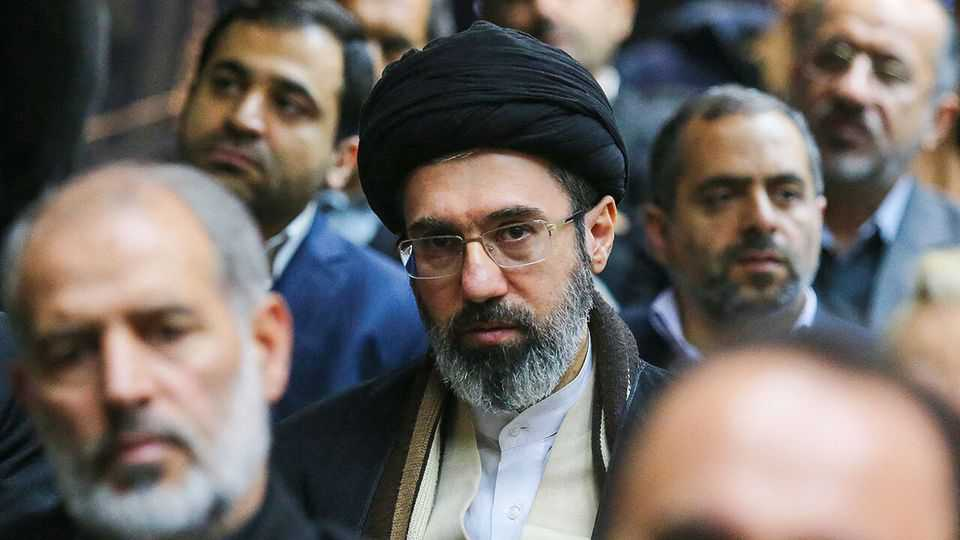
这不是许多伊朗人期待了数十年的新起点。莫塔巴（Mojtaba）与父亲有着惊人的相似之处。他佩戴着与父亲相同的黑头巾，这是神权统治持续存在的象征。许多人推测，他的任命可能使伊朗更抗拒变革。他在同一场袭击中失去了母亲、妻子、妹妹和孩子，以及父亲，这无疑坚定了他寻求复仇的决心。“他将成为一名极端强硬派”，一位亲属预测道。他甚至可能推翻父亲禁止核武器化的教令。美国总统唐纳德·特朗普表示对这一选择不满，并预测他任期不会长久。了解莫塔巴的富裕伊朗人则对他有不同看法——他们视他为沙特王储穆罕默德·本·萨勒曼（Muhammad bin Salman，MbS）的翻版，后者摒弃了其父辈一代的许多价值观，包括一些严苛的伊斯兰教规。
与他一样，莫塔巴（Mojtaba）也在父亲的庞大办公室中度过了学徒期。他深知朝中权贵的秘密——以便设法让他们陷入困境。据称，他也像穆罕默德·本·萨勒曼（MbS）一样热衷于商业交易。尽管他表面谦逊——曾驾驶一辆破旧的帕亚坎（Paykan，伊朗首款量产汽车）去神学院——但据说他掌控着一个庞大的免税企业帝国。然而现实可能另有隐情。宗教领袖认为他资历浅薄，缺乏成为大阿亚图拉和最高领袖所需的宗教资格。共和国的革命者可能认为他的世袭继承制背叛了推翻君主制的伊斯兰革命。此外，随着莫塔巴隐匿幕后、国家陷入战争，若将军们占据上风并批准与美国谈判，他们或许会抛弃神权政体，将国家神圣化为一个残暴的贪腐军事政权。■
订阅《中东简报》，这是一份每周简报，助您掌握这个充满魅力、复杂且影响深远的地区动态。■
§031 特种部队真的能摧毁伊朗的核计划吗原题：Could special forces truly obliterate Iran’s nuclear programme? · 板块：Middle East & Africa · 栏目：中东与非洲
去年唐纳德·特朗普声称已“摧毁”了伊朗的核计划。然而当伊朗仍保有约400公斤高浓缩铀（HEU），足以在进一步浓缩后制造约10枚核弹时，这一说法难以站住脚。上周，美国国务卿马可·鲁比奥下令称：“人们必须去把它们取回来。”这将需要一次前所未有的深入伊朗境内的军事行动。这有可能实现吗？首要难题是确定高浓缩铀的存放地点。■
3月9日，国际原子能机构负责人拉斐尔·格罗西（Rafael Grossi）表示，伊朗伊斯法罕（Isfahan）中央地区，可能是在二月被泥土封堵入口的隧道中，是铀浓缩活动的主要地点。部分铀浓缩材料也可能残留在纳坦兹（Natanz）和福特瓦（Fordow）的浓缩设施中，后者深埋于山中，去年六月曾遭轰炸。即便美以两国目标仅限于伊斯法罕，回收铀浓缩材料也将是一项巨大工程。美国第160空降特战航空团（160th Special Operations Aviation Regiment）使用的mh-47g奇努克直升机，或许能从波斯湾的舰船出发抵达伊斯法罕（至少500公里内陆），但需中途加油才能返回，并需配备一支准军事力量护航。■
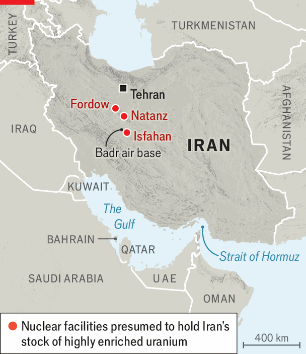
3月7日，特朗普表示，美国只会派遣地面部队，前提是伊朗“被彻底摧毁到无法在地面作战”。为实现这一目标，美军将对目标附近的伊朗军事基地进行轰炸。随后需要派遣空降部队夺取附近机场——巴德空军基地距离伊斯法罕核设施仅10公里——或更实际的做法是临时修建简易跑道。随后可将处理核材料设备、用于挖掘隧道入口及搬运废墟的挖掘机等重型机械通过货盘空投至现场。至少需要一支大型战斗群（通常为一个连级部队加若干特种单位，人数超过1000人）在核设施周围建立防御圈，击溃现有守军后维持控制。
他们需要持续的空中掩护以发现并攻击任何接近的伊朗部队：实时卫星监控、轨道无人机、侦察机和攻击机。这将需要数十架加油机持续轮替，以确保足够的空中力量能长时间保持飞行——可能持续数日。目前，以色列特种部队和工兵部队在类似行动中的实战经验比美军更为丰富和近期，因为他们曾广泛参与哈马斯（Hamas）和真主党（Hezbollah）在庞大隧道网络中的作战行动。使用这些部队也使特朗普能够宣称未动用美国地面部队。然而，这将加剧以色列远程空运能力的负担。若动用以色列部队，他们将需要借用美国庞大的货运机队。■
美国联合特种作战司令部（JSOC）也具备相关专长，因其多年来一直在为在危机中夺取或控制巴基斯坦核武器做准备。美国三角洲部队和海豹六队的分队曾在拉斯维加斯附近一处地点演练进入深埋地下掩体，由美军核禁用特遣队提供协助。前JSOC特工表示，最大的挑战之一是在地下环境中移动、通讯并生存。如果特朗普真打算入侵伊斯法罕，更不用说纳坦兹等设施，相关小组必须提前数月进行演练。接下来的挑战将是处理六氟化铀（UF6）。这种铀的六氟化物气体通常储存在多个容器中，以防止意外引发链式反应。■
国际战略研究研究所（International Institute for Strategic Studies）的丹尼尔·萨利斯伯里（Daniel Salisbury）估计，整个库存需要约19个潜水气瓶容量。这些容器必须分开放置并妥善保管。一种选择是原地引爆，哈佛大学的马修·布恩（Matthew Bunn）表示，铀六氟化物（UF6）会“四处扩散，附着在墙壁、岩石、废墟等表面，难以回收”。同时还会释放有毒的氢氟酸。第二种方案是“稀释处理”，但他指出所需设备需运抵现场，仍会残留核材料。第三种方法则是提取高浓缩铀（HEU）并迅速转移。■
但弗朗索瓦·迪亚兹-莫阿林（François Diaz-Maurin， Bulletin of Atomic Scientists编辑）警告称，若运输途中水分渗入反应堆，可能与铀气发生反应生成剧毒的铀酰氟化物和氢氟酸气体，甚至引发爆炸。这种好莱坞式的行动对特朗普而言颇具吸引力，他曾提及美国同龄人对1979年德黑兰人质危机所遗留的羞辱感。这种精心策划的结局能让他宣称取得战争胜利，即使伊朗政权依旧存在。但特朗普也会回想起当年草率的营救行动——鹰爪行动（Operation Eagle Claw）如何终结了吉米·卡特的总统任期。在纳坦兹（Natanz）和福尔多（Fordow）实施类似步骤，也将构成军事史上最大规模的突袭行动。■
“毫无疑问，美国能做到这一点，”一位前西方军事首长表示，“他们可能是全球唯一具备这种能力的军队。但你要么以极小规模秘密渗透，要么大规模介入——你实际上会把伊朗部分地区暂时变成美国。” ■ 注册订阅《中东简报》，每周获取关于这个复杂且影响深远地区的深度资讯。
§032 美国的战争目标或正与以色列的产生分歧原题：America’s war aims may be diverging from Israel’s · 板块：Middle East & Africa · 栏目：中东与非洲
将军们很少亲自置身于敌方火力线中，但3月6日，以色列空军司令托默·巴（Tomer Bar）少将驾驶F-15战斗机执行对伊朗的打击任务。并非所有同僚都对这位高级指挥官深入敌境飞行感到兴奋。“这有点像噱头，”一名空军军官表示，“但我也能理解他。我们为这场战争准备了这么多年。”
对以色列飞行员和将军们而言，这是激动人心的时刻。过去二十多年，他们一直在策划和训练针对伊朗核计划的远程打击行动。
但直到最近，他们从未想过与世界超级大国联合发起空中联合部队行动。更未设想打击包括民用基础设施在内的目标，这些目标远超核设施。如今，两国军官频繁在规划会议上共商，划分伊朗境内的打击目标。数十架美国空中加油机正为前往任务的以色列战斗机补充燃料。两国空军联手摧毁了伊朗大部分防空网络，实现了对其领空的主导权。本雅明·内塔尼亚胡（Benjamin Netanyahu）似乎也正飞升。这位以色列总理多年来一直高呼伊朗威胁，如今却在唐纳德·特朗普（Donald Trump）身上找到了一位愿意全力配合的美国总统。至少，这是最初的印象。■
但随着战争进入第二周，以色列的规划者们愈发意识到两国战略可能开始出现分歧。在2月28日战争初期袭击中，伊朗最高领袖阿里·哈梅内伊被杀后，美以两国启动了为期100小时的打击计划，按清单逐项推进目标。负责行动的人员清楚特朗普先生倾向于迅速宣布胜利，因此希望在战争前四天内尽可能对伊朗政权造成最大破坏。一些人对战争持续这么久感到惊讶。总统的决断力尚不明确，其言论经常自相矛盾。■
3月9日他在采访中表示：“我认为这场战争已经非常彻底了，差不多了。”数小时后，他又改变了说法，称“我们在很多方面已经取得了胜利，但还不够。”他的表态似乎旨在安抚因油价和天然气价格飙升而动荡的金融市场。若果真如此，他的言论达到了预期效果：能源和金融市场在3月10日已趋于平静。由于特朗普从未明确表示希望通过这场战争实现什么目标，他对于战争何时结束的模糊态度也就不足为奇。战争初期，特朗普和内塔尼亚胡曾一致表示要摧毁伊朗的核计划和弹道导弹项目。如今，以色列与美国的最终目标可能已出现分歧。内塔尼亚胡直言不讳地表达了希望实现政权更迭的愿望。■
他声称以色列希望“创造条件让勇敢的伊朗人民掌握自己的命运”。相比之下，特朗普似乎更倾向于委内瑞拉式的胜利，即通过让更合作的内部人士掌权来改变伊朗政权。他要求伊朗“无条件投降”，并表示必须参与伊朗新最高领袖的任命，就像在委内瑞拉一样。以色列官员越来越认为特朗普对政权更迭的渴望远不如他们预期的那么强烈，反而更关注控制伊朗的石油输出。中国购买了大部分伊斯兰共和国的石油输出，以巨额折扣，因为中国愿意无视美国对伊朗出口的制裁。
特朗普计划于3月底与习近平会面。如果他能掌控伊朗的能源供应，将对中国的领导人拥有相当大的影响力。以色列官员在特朗普官员对3月7日以色列对德黑兰燃料库发动的大型袭击规模表示愤怒后，更加确信这正是特朗普的主要动机。这是两国之间首次出现分歧迹象。在战争持续期间，政权更迭的可能性极低。尽管伊朗安全部队对大规模抗议活动进行了血腥镇压，伊朗民众仍展现出非凡的勇气。然而，当炸弹不断落下时，他们不愿走上街头。以色列的伊朗观察人士认为，针对政权的新一轮示威活动可能需要数月甚至更长时间才会出现。■
以色列与美国持续轰炸伊朗巴斯基（Basij）准军事组织的总部，但该组织的权力结构以及伊斯兰革命卫队（Islamic Revolutionary Guard Corps）的核心体系仍基本完整。以色列专家认为，延长战争只会拖延对政权的反抗行动，同时使以色列持续面临伊朗导弹袭击的风险，并加剧与伊朗代理人真主党（Hizbullah）在黎巴嫩的第二战场冲突。正如往常一样，以色列总理的目光始终聚焦于政治与自身地位。在此时停止战斗对内塔尼亚胡而言将是一场政治负担。若政权更迭最终发生，他可能已来不及应对。他正面临今年晚些时候的重新选举，不愿以模糊的结局结束战争。■
去年6月24日，在以色列与伊朗上一次战争结束时，内塔尼亚胡宣称已消除两个存在性威胁——伊朗的核计划和导弹项目。八个月后，伊朗导弹再次袭击以色列。无论战争如何结束，特朗普和内塔尼亚胡都将宣称胜利，但他们的选民可能需要更深入的说服。■ Sign up to the Middle East Dispatch, a weekly newsletter that keeps you in the loop on a fascinating, complex and consequential part of the world.
§033 海湾国家应参与对伊朗的攻击原题：Should the Gulf states join attacks on Iran? · 板块：Middle East & Africa · 栏目：中东与非洲
海湾合作委员会的六成员国往往难以实现合作。统一货币计划和横贯阿拉伯半岛的铁路项目已落后数十年。外交政策分歧导致君主国之间长期关系破裂。过去十天，战争带来了创伤性的共识。自美以两国于2月28日袭击伊朗以来，超过2000枚伊朗导弹和无人机已袭击海湾国家。■
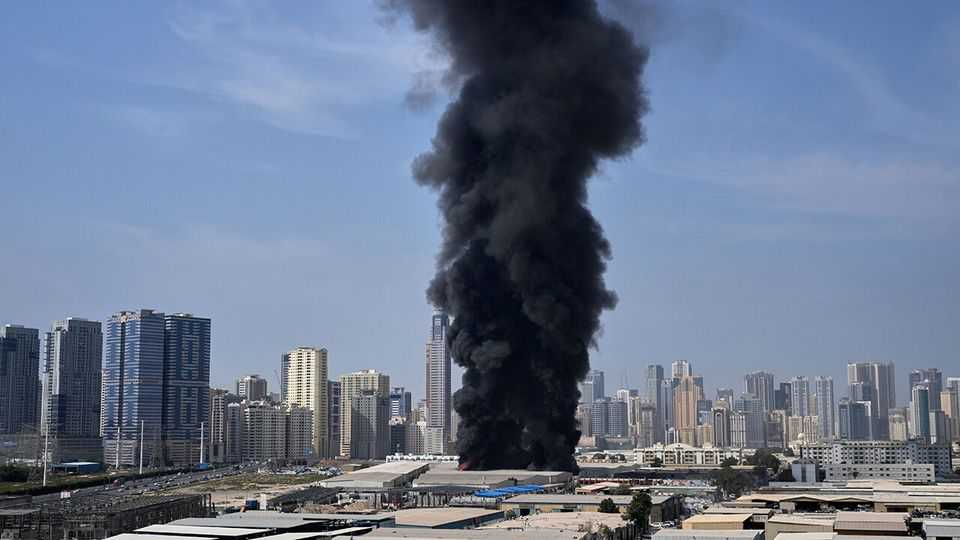
痛苦的分布并不均衡——截至目前，伊朗的袭击中超过一半针对阿联酋（UAE），相比之下仅有一小部分针对阿曼——但这种影响已波及所有地区。最近一次无人机袭击发生在3月9日，袭击了巴林唯一的炼油厂，造成32人受伤，导致国家石油公司宣布因不可抗力而暂停运营。然而，各方对如何应对缺乏共识。这不仅源于国家间长期存在的分歧，也源于各国内部的矛盾：一些官员主张克制，而另一些人则寻求报复。海湾国家陷入僵局，因为他们不信任这场战争中的任何一方——包括自己。首先看美国。在唐纳德·特朗普（Donald Trump）和以色列对伊朗发动袭击前的数月里，海湾合作委员会（GCC）的六名成员国曾敦促他不要这么做。当战争似乎不可避免时，一些国家又补充道：如果你要采取行动，就妥善处理。■
他们担心美国会将他们卷入一场冲突，最终只让伊朗伊斯兰共和国伤痕累累却依然屹立不倒。特朗普于3月9日模糊地表示战争可能接近尾声，这或许让他们感到不安。海湾国家的统治者们深知他不可靠。毕竟不到一年前，他曾在利雅得现身并谴责“干预主义者”已“摧毁”了中东。他们还能看到美国的民调数据，显示多数民众反对战争，总统的民调支持率一直卡在38%。因此，对于那些主张克制的官员而言，加入战争似乎风险极高：海湾国家可能自取其辱，最终却眼睁睁看着美国收拾东西离开。一些官员则考虑组建一个类似十年前对抗伊斯兰国的联盟，以此牵制特朗普并拉拢其他盟友。■
但对一位不热衷多边主义的总统来说，这似乎难以说服。与此同时，对伊朗的信任——本就不高——已彻底消散。沙特阿拉伯和阿联酋（阿联酋）曾耗费多年努力改善与伊斯兰共和国的敌对关系，而卡塔尔则长期与伊朗保持友好关系。然而，这些国家仍被攻击。对海湾地区更鹰派的声音而言，克制显得天真。迄今为止，这种克制并未保护他们。随着战争持续，伊朗很可能会继续升级袭击。马苏德·佩泽希安（伊朗总统）及其他官员释放的缓和信号已被证明毫无价值。他们还担忧战争结束后的局势。即便伊朗国家完整，该国仍将面临严苛的美国制裁，政权可能还要应对数十亿美元的损失。■
它可能试图通过持续的无人机袭击或继续骚扰波斯湾船只来对海湾合作委员会（GCC）施压。主张现在采取行动的人认为，此时美国仍专注于海湾国家的防御，因此最好通过展示海湾国家能够反击来创造某种威慑力，以震慑伊朗。以色列的角色则增添了另一重复杂性。3月8日，数名以色列记者联合报道称，阿联酋已通过袭击伊朗的海水淡化厂加入战争。这些未经证实的消息被归因于一名匿名的“以色列消息人士”。阿联酋随即急忙否认这些报道。“这是假新闻，”国防官员阿里·努艾迈表示。私下里，阿联酋官员们对这一报道感到愤怒。自2020年与以色列建立外交关系以来，阿联酋一直在努力构建紧密的伙伴关系，这种关系甚至在其他阿拉伯国家保持距离的加沙战争期间也得以维持。■
现在以色列人正在泄露一些内容，要么是严守的秘密，要么是彻头彻尾的谎言（甚至可能构成战争罪）。这并非以色列记者首次对海湾国家做出此类指控。五天前他们曾报道卡塔尔对伊朗发动过袭击，但这一说法也被否认了。“这是一场肮脏的博弈，”一位第三国海湾国家官员表示，他认为以色列正通过泄露所谓海湾合作委员会国家军事行动的报告，试图制造既成事实。这种观点在该地区正变得越来越普遍，甚至让一些干预主义者也感到不安。最后的问题涉及国内局势。尽管海湾国家都是君主制，但它们无法忽视公众舆论。巴林尤其令人担忧，该岛的什叶派多数群体长期以来一直抱怨受到逊尼派统治者的歧视。■
2011年的大规模抗议活动遭到巴林警方及海湾其他国家军队的残酷镇压。这些不满情绪至今未消。在一些伊朗袭击巴林的视频中，拍摄者能听到民众欢呼攻击。若巴林或其他海湾国家加入战争，可能引发新一轮动荡。商业界也开始抱怨。迪拜亿万富翁卡哈尔·哈布图尔（Khalaf al-Habtoor）在社交媒体上多次批评战争，指责美国将海湾卷入危险，随后又删除了这些言论。他的信息触及阿布扎比——阿联酋首都——与迪拜——该国商业中心——之间长期存在的分歧。■
前者更倾向于采取强硬的外交政策，将伊朗视为威胁；后者则更希望保持中立，常被美国财政部批评对伊朗洗钱行为视而不见。目前，主张限制行动的一方似乎占据上风。一场引人注目的伊朗袭击可能改变局势，而迅速停战则可能终结这场争论。战争持续时间越长，争议性将越大。■ 注册订阅《中东简报》，每周获取关于这个复杂且影响深远地区的最新动态。
§034 中东与非洲原题：Can America clear the Strait of Hormuz of Iran’s drones and mines? · 板块：Middle East & Africa · 栏目：中东与非洲
霍尔木兹海峡本就对航海者而言充满挑战——狭窄、拥堵且常有雾气。在冲突时期，这里更可能成为死亡陷阱，被群山遮蔽视线。自“雷霆怒火行动”启动以来，运送原油、精炼燃料和液化天然气的油轮几乎完全停止通过该海峡，引发了一场令人心惊的能源冲击。美国能凭借军事力量清理这条航道吗？至少有16艘船舶在海湾地区遭袭击，包括3月12日海峡内一艘泰国注册的散货船，以及伊拉克水域两艘燃油运输船。■
美国国防部未证实伊朗已开始在海峡布雷的报道。特朗普警告称，对任何布雷行为的回应“将达到前所未有的规模”。美军已击沉伊朗海军的大部分舰艇，包括16艘布雷舰，其中一些是小型快艇。总统表示，必要时将为油轮提供军事护航。这让人联想到上世纪80年代伊朗-伊拉克战争期间的“坚定决心行动”，当时美国将科威特油轮重新注册并护航其通过海峡。欧洲国家和巴基斯坦也表示有意派军护航。超过四分之一的全球海上石油出口需经此水道。据市场情报公司Vortexa的数据，战争爆发前数周，每天有46艘油轮通过该海峡。此后仅有寥寥数艘油轮敢于通过此航道，似乎包括伊朗的油轮。
中国据称正试图为商船争取安全通道，但成效甚微。与此同时，满载油轮在海峡西岸聚集，空载油轮则在东岸等候。对航运的威胁形式多样。在空中，伊朗可动用弹道导弹和巡航导弹，以及无人机；在水面，其拥有配备导弹或炸药的快速攻击艇；在水下则可部署数千枚水雷和无人潜航器，更不用说能将磁性水雷粘附在锚泊船只上的潜水员。上述能力究竟被摧毁了多少尚不清楚。特朗普总统敦促船东“展现些勇气”，但美国海军似乎也心存顾虑。航运消息人士称，海军已多次拒绝提供保护请求。
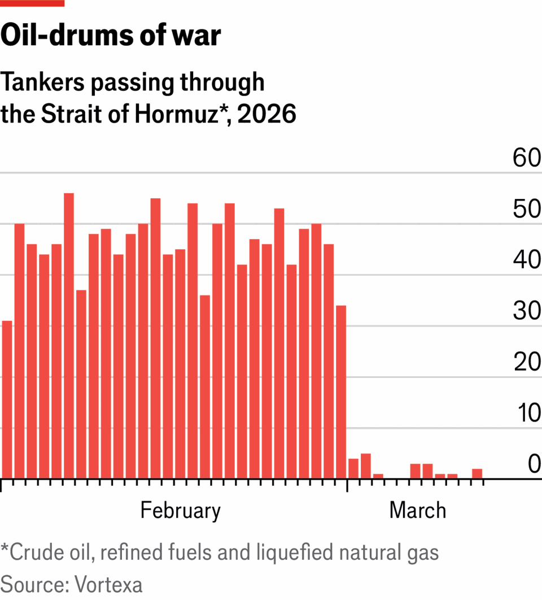
民主党参议员克里斯·默里在一次机密简报后表示，军方高层“不清楚如何安全地重新开放”局势。现为华盛顿民主防御基金会（Foundation for Defence of Democracies）研究员的前美国海军少将马克·蒙哥马利指出，美军尚未将伊朗的军事能力削弱到足以让护航舰队应对剩余威胁的程度；他补充称，用于防空的美军驱逐舰正忙于保护该地区航母。若护航舰队成形，他指出，将需要空中侦察机、战斗机和直升机在上空支援，以及战舰配合，这将既困难又昂贵。在加沙战争期间，也门胡塞武装（Houthis）——该组织与伊朗结盟——通过在曼德海峡攻击船只，用廉价无人机和导弹阻断了红海和苏伊士运河的大部分海上交通。■
美国在摧毁己方部队并重新开通海峡方面遭遇困难；一架战机在躲避胡塞武装袭击时从航母上坠落。交通尚未恢复至危机前水平——胡塞武装誓言将重开攻击以声援伊朗。过去美国指挥官曾坚称，伊朗试图封锁海峡后，美军可在数天或数周内重新开通霍尔木兹海峡。但专家指出，英国在一战中对奥斯曼帝国发动的失败战役提供了警示，当时盟军试图通过达达尼尔海峡（连接黑海与地中海的通道）强行突破。盟军在从海上强行突破时损失多艘舰船，而通过陆路夺取海峡的加里波利登陆战则演变为更惨烈的灾难。■
伊朗同样拥有分层防御体系和霍尔木兹海峡的制高地形，海军分析中心（Centre for Naval Analyses）的乔纳森·施罗登（Jonathan Schroden）指出，“你必须层层剥开洋葱的外层”，他说，“首先需要应对导弹、无人机和高速快艇，之后才能处理水雷。”扫雷舰防护薄弱，在交火中难以有效作业。美国正用木质船体扫雷舰替换为配备扫雷作战系统的近海战斗舰，包括无人机等装备，尽管部分人担忧这些技术尚未经过验证。■
在达达尼尔海峡和霍尔木兹海峡，凯特琳·塔尔马奇（Caitlin Talmadge，麻省理工学院教授）指出，地理因素使防守方能将敌方舰船逼近海岸，从而更容易发起攻击。“部分武器已发生变化——我更担心的是弹药而非水雷，但核心战术理念并未改变，”她表示。美国的技术优势在狭窄水域中被削弱。例如，无人机和导弹能更快抵达目标。此外，军舰在某些方面比大型油轮更容易受损，后者通常配备双层船体；而军舰的上层建筑则装载着昂贵设备，如雷达系统。20世纪80年代，护卫舰通常在油轮后方航行，而非前方，以避开水雷。■
塔尔马杰教授解释说，与1980年代的“鹰爪行动”相比，当前局势存在显著差异。当时伊朗政权虽与美国在海上发生多次冲突，但仍试图避免与美国爆发全面战争，因为其正竭力在陆地上抵御伊拉克军队的进攻。“认为伊朗会因担心局势升级而克制，这种想法显得不切实际，”她表示，“伊朗已陷入政权存续的生死战。”担忧油价危机对经济的影响，特朗普曾表示冲突将“很快结束”。然而，若霍尔木兹海峡持续受阻，他可能难以迅速宣告胜利。■ 说明（2026年3月11日）：本文及图表早期版本未对战争爆发前后通过霍尔木兹海峡的同类船舶进行对比，现已更新。
订阅《中东简报》，这是一份每周出版的通讯，助你掌握一个充满魅力、复杂且影响深远的地区最新动态。■
§035 数据揭示战争进展 中东及非洲原题：What data reveal about the war’s progress · 板块：Middle East & Africa · 栏目：中东与非洲
战争迷雾难以驱散，但现代冲突产生了大量数据。因此，为构建事件全貌，我们分析了1,615起独立袭击事件、2,875次导弹和无人机发射，以及208个战略地点出现的异常高温事件（如火灾）。分析结果显示，双方在战争初期均调整了战术。伊朗的反击效果减弱，不仅袭击次数减少，更依赖无人机而非导弹。美国和以色列则将打击重点从传统军事目标转向国防工业设施、港口及政权的压迫性基础设施。■
尽管伊朗在冲突初期每发射一枚导弹就派出一架无人机，但目前这一比例已升至三比一。然而这种战术调整并未带来预期效果。阿联酋报告称，截至3月10日，该国已遭遇262枚弹道导弹（其中260枚被拦截或坠入海中）、1475架无人机（1385架被拦截）和8枚巡航导弹（全部被拦截）。巴林则面临超过350枚来袭弹药的攻击，大部分已被拦截。近期伊朗的袭击频率进一步下降。据冲突监测机构数据显示，美以两国对军事目标的打击次数已降至开战初期的五分之二。早期袭击包括对德黑兰总统府和伊朗西部克尔曼沙赫的SA-65防空系统发动的打击。
近期袭击目标包括警察局和机场，以及与伊斯兰革命卫队（Islamic Revolutionary Guard Corps）——政权的禁卫军——相关的设施。由美国国家航空航天局（NASA）设立的FIRMS系统用于追踪森林火灾，我们曾利用该系统观察伊朗的战略地点。数据显示，导弹和无人机工厂的密集轰炸期可能已结束，取而代之的是对核设施、炼油厂和港口的袭击，以及剩余军事目标的打击。交通和贸易的中断始终是常态。尽管部分机场已恢复航班起降，但多哈和科威特城的机场仍基本关闭。霍尔木兹海峡是最大的咽喉要道。战前每天有50艘左右的大型油轮和天然气运输船通过该海峡，自冲突爆发以来，每日通过数量已降至最多5艘，如3月2日的情况。■
三天来毫无进展。■ 订阅《中东简报》（Middle East Dispatch），每周简报，助您掌握这个引人入胜、复杂且影响深远的地区动态。
§036 肯尼亚糖业困境成改革试金石 中东及非洲原题：Kenya’s ailing sugar sector is a test case for reform · 板块：Middle East & Africa · 栏目：中东与非洲
埃文斯·奥蒂恩奥（Evans Otieno）种植甘蔗。他的父亲、祖父也曾如此。奥蒂恩奥回忆，曾有一段日子生活不错。1979年国家-owned的南尼亚扎糖业公司（South Nyanza Sugar Company）入驻肯尼亚西部地区后，当地小农户如他祖父的收入因国家设定的高糖价而提升。甘蔗收入让他们父子得以接受教育。糖业仍是肯尼亚经济核心。该国5500万人口中，900万人以此为生计。但黄金年代短暂。■
政治关系密切的贸易商被称为“糖业巨头”，他们数十年来通过严格的进口许可制度和政府控制的价格体系攫取巨额利益。如今，糖业利润下降，消费者价格却高于邻国。约翰·基通戈（John Githongo）——一位资深反腐活动家——表示：“肯尼亚糖业的发展史就是肯尼亚政治史——关于权贵如何牟利的故事。”这意味着总统威廉·鲁托（William Ruto）政府试图改革该行业的努力，将成为整个经济体系的关键试金石。从表面看，肯尼亚经济基础稳固。GDP增长强劲，国际货币基金组织（IMF）预测2026年经济增长率将接近5%。通货膨胀率稳定在4.3%。外汇储备超过100亿美元，足以覆盖约五个月的进口需求。
但表面的稳定下隐藏着长期存在的结构性问题，尤其是低生产率和政商勾结导致的腐败现象。这两个问题都困扰着肯尼亚糖业。该国糖产区的小规模农场和老化国营制糖厂亟需现代化改造。该行业由少数几家与政府关系密切的公司主导，其中多家为家族企业。一家公司通过其制糖厂控制了近半数行业。密集且覆盖面广的监管政策增加了贪污机会。世界银行最近一项研究发现，肯尼亚对糖生产和贸易的竞争限制比其调查的几乎所有国家都更为严格。2024年通过的一项广泛性法律集中了价格管控权，并通过强制农民将甘蔗售给指定制糖厂，削弱了他们的议价能力。■
数十年来，政府通过关税和其他手段对糖价的干预，一直惠及权势政客，尤其是在选举期间。“控制价格，就等于控制选民”，内罗毕大学的Xn Iraki表示。本地糖价与进口糖价之间的巨大差距，尤其是在供应短缺时期政府允许免税进口应急物资时，为套利提供了机会。内部人士则利用这些机会为竞选活动筹款。政府表示希望整顿该行业。肯尼亚竞争监管局局长大卫·基梅伊称，过去五年内至少有七家私营糖厂进入市场。2025年，鲁托政府将四家效率低下的国营糖厂租赁给私人投资者。■
肯尼亚于1月兑现了24年前对东非和南部非洲共同市场（Common Market for Eastern and Southern Africa）取消糖进口限制的承诺。放开该行业将使消费者受益，他们将支付更低的价格。此举也可能帮助农民和部分糖厂工人，因为更高的生产效率应转化为在职员工的更高工资。数十年来，国有糖厂有意保持设备落后以最大化本地就业，且因政府将其作为政治寻租工具而管理混乱。糖厂常拖欠农民甘蔗款数月甚至数年。如今，肯尼亚西部的农民表示，新任私人所有者已按时支付款项。若行业改革成功，糖业或将成为其他行业的典范。■
世界银行认为，削减电力、交通和农业企业等领域的补贴，去除有利于政治内人的监管规定，可能使年度GDP增速提升近1.4个百分点。每年或可创造超过40万个新岗位。基梅伊表示，政府正在加速推进此类改革。“政府的优先事项是确保市场具备竞争力，”他说，“国家在市场活动中的参与正逐步减少。”今年，政府计划出售国有移动运营商Safaricom（国家最大移动网络运营商）价值16亿美元的股份，部分资金将用于全国基建基金。该国国营管道公司首次公开募股（IPO）已于2月启动。但批评者质疑这些举措是否能显著提升竞争。■
他们称去年通过的私有化法案赋予肯尼亚总统和财政部部长过多权力，引发对腐败的担忧。国家糖厂的不透明招标流程或许是一个典型案例。去年所有颁发的许可证均授予现有企业，未向外国公司发放。“这些许可证被授予了‘国家的朋友’”，一位行业内部人士表示。政府甚至可能在有限改革上也难以坚持到底。近期对甘蔗和小麦实施的价格管制表明，政府仍对放松对农业的控制心存戒备。它似乎也不愿退出化肥市场，或许因为这赋予了政治人物对农民的控制力。2027年的大选进一步增强了政府倒退改革、减少寻租空间的动力。肯尼亚经济，如同其糖业，尚未摆脱政客的掌控。■
订阅《Analysing Africa》每周通讯，让您掌握最新动态，了解这个世界上最年轻且最不为人知的大陆。■
§037 欧洲原题：As war rages, Turkey‘s strongman puts the opposition on trial · 板块：Europe · 栏目：欧洲
土耳其主要反对派希望其成为下一任总统的埃克雷姆·伊姆兰（Ekrem Imamoglu）走进法庭大厅，向支持者挥手致意并试图发表讲话，但他的声音被欢呼声淹没。然而，伊姆兰并未站在演讲台上，而是坐在被告席上，身处一个挤满律师、其他嫌疑人和观察者的巨大监狱法庭内。
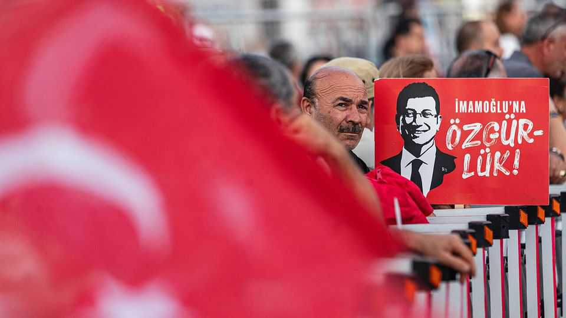
超过400名被告的亲属中，有些人已经羁押了11个月，他们站在座位上挥舞着手，希望能与亲人对视。"他看到我了！"一名女子在发现丈夫后喊道，随后瘫坐在椅子上抽泣。这是3月9日，土耳其近年来最重要的审判终于开始。伊马莫卢（Imamoglu）一年前被逮捕，恰逢他被共和人民党（CHP）提名为总统候选人前夕。随后他被解除伊斯坦布尔市长职务，并被指控涉及一系列腐败罪名。起诉书长达3700页，他可能面临最高2532年监禁。审判可能持续数年。■
伊曼努尔·伊马莫卢（İmamoglu）在2028年总统选举前几乎不可能参选。律师兼共和人民党（CHP）议员塞兹金·坦里库卢（Sezgin Tanrikulu）表示：“此案的目的是确保他在2028年之前无法脱身。”今年早些时候，土耳其总统雷杰普·塔伊普·埃尔多安（Recep Tayyip Erdogan）——这位总统坚信司法独立——任命了负责调查的检察官担任司法部长。随着审判开始，埃尔多安指责共和人民党（CHP）在更重大的议题上损害政府声誉。“土耳其被‘火环’包围”，他说道。他补充称，在如此敏感的时刻攻击政府是不负责任的。土耳其领导人正借助外交政策掩盖国内问题。■
他的政府在顺从媒体的支持下，希望选民减少对通胀和民主腐化的关注，转而更多关注土耳其在海外日益扩大的影响力。“这是他们仍能向公众推销成功故事的地方，”伊斯坦布尔政策中心（Istanbul Policy Centre）主任塞内姆·阿伊丁-杜兹吉特（Senem Aydin-Duzgit）表示。为确保欧洲盟友忽视他的种种不当行为，埃尔多安正利用土耳其在黑海、叙利亚以及作为俄罗斯与乌克兰间偶尔调解者的地缘政治角色。美国与伊朗的战争为他提供了更多操作空间。土耳其从战争一开始就表示反对，威胁要扰乱贸易并引发新一轮人道主义危机。飙升的能源价格也使该国央行更难遏制当前31.5%的通胀率。然而这场战争也凸显了土耳其的重要性。欧盟视其为抵御中东地区动荡的缓冲带。■
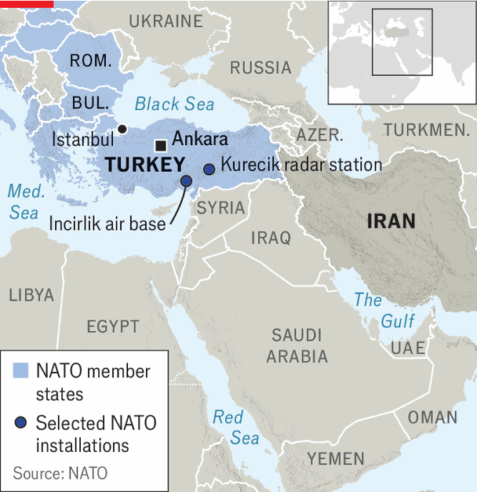
3月1日，欧盟委员会主席乌尔苏拉·冯·德莱恩称赞埃尔多安愿意应对“这场危机对移民可能产生的影响”。自2016年以来，欧盟已向土耳其支付超过100亿美元，以遏制叙利亚难民的外流。若伊朗发生大规模难民外逃，该地区几乎肯定会采取相同的应对策略。土耳其也有自己的应急计划。叙利亚内战迫使土耳其接收数百万难民。为避免重蹈覆辙，土耳其正考虑在边境伊朗一侧设立难民营。土耳其对伊朗政权毫无好感，但担心其崩溃可能带来的安全真空。凭借北约第二大军队，土耳其若被卷入冲突可自行应对，但埃尔多安承诺避免这种情况。不过，伊朗的误判仍可能迫使他采取行动。
北约防务系统击落了两枚飞向土耳其领空的伊朗导弹。伊朗无人机还袭击了阿塞拜疆，土耳其与阿塞拜疆之间存在相互防御协议。土耳其将在任何恢复谈判中发挥关键作用。埃尔多安是少数与特朗普和伊朗神职人员保持友好关系的领导人之一。该国与伊朗的情报联系比大多数阿拉伯国家乃至其他北约成员国都更深。在叙利亚，埃尔多安长期支持的叛乱组织于2024年推翻了政府，土耳其已成为该国最重要的安全伙伴和主要投资者。由总统阿赫迈德·阿尔沙拉亚领导的新政府帮助埃尔多安对库尔德工人党（PKK）施加压力，该武装组织土耳其已与之交战逾四十年。■
今年早些时候，叙利亚政府军将库尔德工人党（PKK）在该国东北部的势力驱逐出境，扼杀了库尔德自治的前景。埃尔多安与特朗普的关系改善带来了实际利益。3月9日，美国政府与土耳其哈拉克银行（Halkbank）达成和解，该银行曾被美国检察官指控在2010年代协助伊朗规避制裁。该银行原本可能面临数十亿美元的罚款，但最终仅受到轻罚。数天前，据称应土耳其要求，特朗普搁置了此前酝酿的半吊子计划，即在伊朗煽动库尔德武装叛乱。■
伦敦大学东方与非洲研究学院的卡拉贝基尔·阿科尤努卢表示，伊朗战争使西方领导人比以往更加迫切地希望保持与土耳其的友好关系。“土耳其国内发生的事情被认为远不如之前重要，”他说，“这给了埃尔多安更多空间推进他的议程。”这对土耳其民主和伊姆兰·伊姆拉霍卢来说前景堪忧。埃尔多安越不可或缺，他的最大对手在监狱中度过的日子就越长。■ 要了解欧洲最大新闻，请订阅我们的周度专属简报《Café Europa》。
§038 巴黎市长选举：司机与骑车人对决 两轮对四轮原题：In Paris’s mayoral race, it’s drivers against cyclists · 板块：Europe · 栏目：欧洲
十年前，贯穿巴黎历史中心的里沃利街（Rue de Rivoli）被车辆和停驻的货车占据。如今，这条街的三分之二宽度已划为保护性自行车道。工作日清晨，通勤者、快递自行车和游客们安静地骑行在这条曾是污浊交通动脉的街道上。凭借超过1,500公里的自行车道，巴黎的自行车网络已超越欧洲自行车之都阿姆斯特丹。首都空气更清新，噪音水平也下降了。然而，随着巴黎市民即将于3月15日和22日投票选举新市长，许多人并不满意。驾驶已成为城市政治的新前线 ■
如果巴黎正朝着无车城市迈进，这很大程度上要归功于即将离任的社会主义党市长安妮·伊达尔戈（Anne Hidalgo）以及自2014年她首次当选以来与之共治的绿党。伊达尔戈接手时，巴黎的自行车道网络已长达700公里，她将其翻倍扩展，通过封堵街道、限制路边停车、收回道路（包括一条曾作为河畔快速路的路段）为行人和骑行者腾出空间。如今，巴黎市民每天的出行中，自行车出行量已超过汽车。然而，机动车驾驶者从未停止抱怨。只有三分之一的巴黎市民拥有汽车，但在西区富裕社区，这一比例达到一半。这种不满情绪也解释了为何多数巴黎市民对伊达尔戈市长表示不满。其中一位不满者是萨拉·卡纳福（Sarah Knafo），她是一位民粹右翼候选人（但并非玛丽娜·勒庞领导的国民联盟的候选人，该党正推出另一位竞争者）。■
她已跃居首轮民调第三名，超越了总统埃马纽埃尔·马克龙中间派政党支持的候选人皮埃尔-伊夫·布尔纳泽尔。卡纳福的竞选口号是“快乐城市”，标志性颜色是水仙花黄。她暗示，一个快乐的巴黎意味着允许汽车重返如今被禁的街道。对于中间右翼候选人拉希达·达蒂——一位左岸区（Rive Gauche）富丽区的市长而言，这场反汽车运动象征着错误的优先事项。她广泛支持自行车文化，尽管她谴责大量骑行者带来的“混乱”。这位曾担任马克龙文化部长、如今衣着考究的达蒂女士，希望将注意力转向其他事务，包括清理垃圾和消灭老鼠。她与垃圾清运服务一起清理垃圾桶的画面在社交媒体上引发热议。■
若达蒂女士当选，将终结社会党25年的执政历史。作为11个孩子中的一员，她的父母是北非移民，她也将成为巴黎首位少数族裔市长。她的主要对手是埃马纽埃尔·格里奥尔，这位社会党候选人曾在首轮民调中领先。最近一个下午，他在塞纳河畔阳光下愉快地回答选民提问，问题从公立学校餐食中植物蛋白的使用，到本地书店的消失无所不包。居家配送正在侵蚀“15分钟城市”理念——即人们步行或骑自行车即可轻松抵达商店、餐馆、学校等场所。作为哈迪尔戈女士的前副手，格里奥尔深知相关事务，也主导了许多限制汽车使用的项目。他承诺完成这项工作，打造一座“100%自行车友好型”城市，并采用更少自上而下的管理模式。其他议题也使候选人之间产生分歧。■
一是住房短缺问题。格里奥尔先生希望减少旅游租赁，增加公共住房；达蒂女士则主张将所有事务交由私营部门处理，并削减巴黎市债务。另一个是犯罪问题。所有人都希望增加本地警力；达蒂女士则希望警力配备武器。这些真正令人关切的问题值得妥善回应。但人们对政策导致城市中心明显变得不那么拥堵和嘈杂的不满更为出人意料。前希达尔戈女士规划部门负责人让-路易·米西卡指出，其中一个原因是建设受保护的自行车道带来的混乱。通勤者在感到足够安全之前，拥堵似乎反而加剧。另一些批评者则认为，希达尔戈女士未能将她对城市大规模改造的关注转化为日常努力，以保持城市清洁安全并修补坑洞。巴黎或许因推崇自行车而受到国际赞誉。■
意见分歧的巴黎市民将有机会发声。■ 要掌握欧洲最重要的新闻动态，请订阅我们的周报Café Europa。
§039 德国绿党人气人物意外胜选 欧洲回春之星原题：A popular German Green wins a surprise victory · 板块：Europe · 栏目：欧洲
当塞姆·奥兹德米尔于1994年成为首批拥有土耳其血统的德国人进入联邦议院时，他曾写道：“有些人显然期待我乘坐飞毯抵达，手持弯刀，穿着宽松长裤，头戴费兹帽。” 奥兹德米尔是土耳其“移民工人”之子，其父母于20世纪60年代初迁居德国西南部施瓦本地区。多年来，他一直与试图将他限制在移民和融合相关职位的尝试作斗争。为何身为该国最大少数族裔成员的他，不应像其他人一样拥有政治桌上的席位？他最终成功了。奥兹德米尔后来成为绿党领袖。
2021年，他成为首位担任德国内阁职务的土耳其裔德国人。如今这位60岁的“安纳托利亚施瓦本人”（他自封的称号），在3月8日家乡巴登-符腾堡州的选举中，率领绿党出人意料地击败保守派基民盟（CDU），赢得胜利。在民粹主义抬头的德国，30%人口为移民或移民后裔，他的胜利具有象征意义。除了一位曾执掌下萨克森州的苏格兰裔德国人外，奥兹德米尔将成为首位拥有移民背景的德国人，领导该国16个州之一。讽刺幽默且机智的奥兹德米尔从不回避政治角力。他尤其批评其父母故乡土耳其的埃尔多安政府对民主和人权的践踏，也批评那些选择投票支持土耳其总统的土耳其裔德国人。■
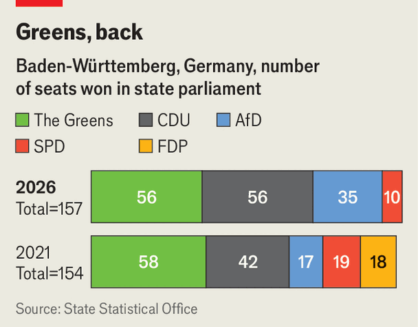
在国内，他被视为绿党同僚中坚定的温和派，而他与党内左翼激进分子（Fundis）的激烈交锋也屡见不鲜。许多人仍未原谅他过去曾抱怨移民男性骚扰其女儿一事。但他同样以不屑回应这些人的轻视。奥兹德米尔（Mr Özdemir）在巴登-符腾堡州（Baden-Württemberg）的竞选堪称高度个人化，仿佛他对自己所属的政党感到羞耻。（他甚至在竞选期间抽空结婚了。）最终，这场竞选被完美执行；在民调中落后三年的绿党以27,000票的优势获胜。选举之夜，奥兹德米尔难掩喜悦：“多么精彩的绝地反击！”十五年前，以梅赛德斯（Mercedes）、保时捷（Porsche）和博世（Bosch）闻名的巴登-符腾堡州成为首个由绿党执政的联邦州。卸任州长克雷奇曼（Winfried Kretschmann）曾紧密依靠汽车工业，并对州内产业赞不绝口。■
欧兹德米尔将采取相同策略（并可能继续领导同一绿党-社民党联盟，见图表）。州财政部长丹亚尔·贝亚兹（Danyal Bayaz）——欧兹德米尔的盟友表示：“一方面坚持气候保护，另一方面支持企业发展，这才是在本州成为成功绿党的唯一途径。”欧兹德米尔敏锐察觉到巴登-符腾堡州对工业未来的焦虑，尤其是汽车制造商和供应商。但关键决策仍将主要由柏林和布鲁塞尔作出，而非州首府斯图加特。尽管如此，欧兹德米尔的胜利提振了他党派的低迷士气，证明了在极化时期中间路线仍能获胜，并表明在德国，一个人的出身不必限制其抱负。■ 要掌握欧洲最重要的新闻，请订阅我们的周度专属通讯《Café Europa》。
§040 乌克兰的房地产市场日益独特 欧洲，位置，位置，位置原题：Ukraine’s housing market is increasingly peculiar · 板块：Europe · 栏目：欧洲
房产中介尤里·沃伊托维奇（YURIY VOITOVICH）坦言，这并非他最轻松的交易。战前，利维夫区住房开发项目曾是吸引人的投资选择，顶层公寓可俯瞰基辅历史波迪尔区。如今这里却成为邻近导弹工厂的被迫第一道防线。俄罗斯无人机和导弹已击中该区域11次。然而无论战争与否，市场仍在持续运转。沃伊托维奇的房源——一套72平方米的公寓，售价15万美元，相比战前可能的19万美元略有下调。
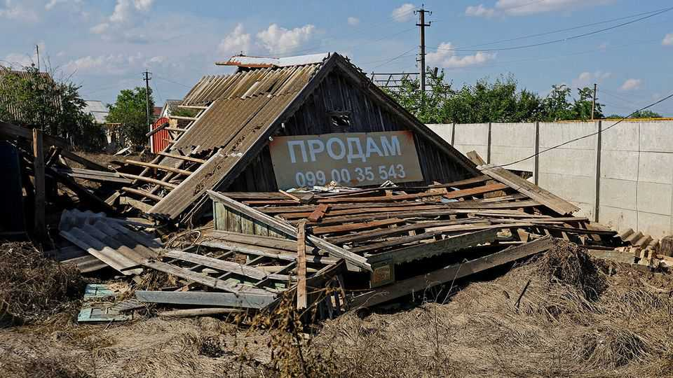
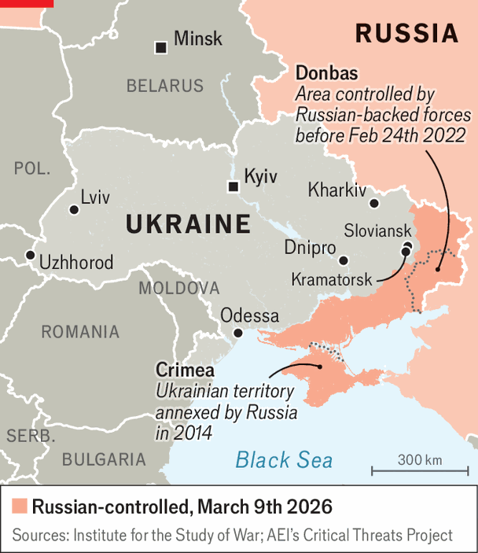
这位代理对找到买家充满信心，尽管他承认可能需要更大的折扣。“每个人都利用导弹威胁来讨价还价，”他说。战争并未导致乌克兰房地产市场崩溃，但确实扭曲了市场。在乌克兰西部，由于内部人口迁移，租金和售价均大幅上涨。在利沃夫，平均价格已攀升至每平方米1720美元，比战争开始时上涨了64%，甚至超过首都基辅的水平。靠近前线地区，售价通常会下降。一旦进入俄军炮火范围，价格通常会暴跌。但租赁房产往往呈现相反走势：房源紧张和军人工资高企使房东得以提高租金。“只要房子没被夷为平地或变成前线，没人会停止收钱，”斯洛维扬斯克附近国民警卫队军官罗曼·达琴科抱怨道。■
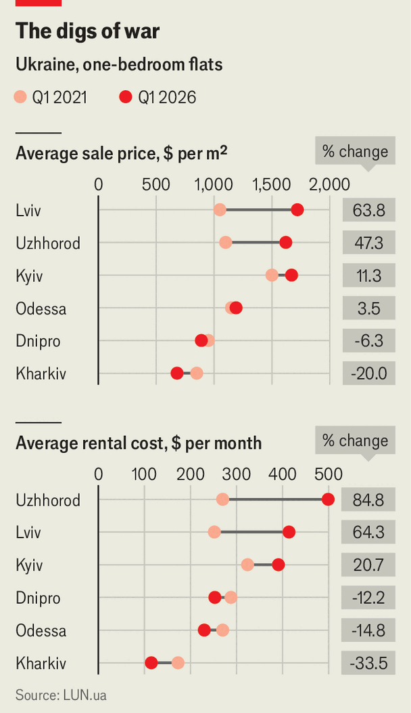
克拉马托尔斯克（Kramatorsk）和斯洛文斯克（Sloviansk）——俄罗斯在顿巴斯地区的主要目标——正是典型案例。在斯洛文斯克（Sloviansk），距离前线仅13公里的地方，俄罗斯无人机对任何移动目标发动袭击：汽车、公交车、邮政车辆。然而寻找租赁房源却需等待数周。在克拉马托尔斯克（Kramatorsk），一套别墅的月租金为60,000格里夫纳（约合1,370美元），高于最便宜公寓的购买价格。因此许多士兵选择购房。达琴科先生回忆道，他从一次轮换任务返回时，发现原本以为租住的房子已被其他部队占据。他们以100,000格里夫纳的价格从他的年迈房东手中买下了这处房产。“大概早起的鸟儿有虫吃吧，”他说。流传的笑话是，作为新业主，士兵们有双重动力抵御俄罗斯人。基辅市中心的租金同样飙升。这里的原因是外国政要和资金的涌入。■
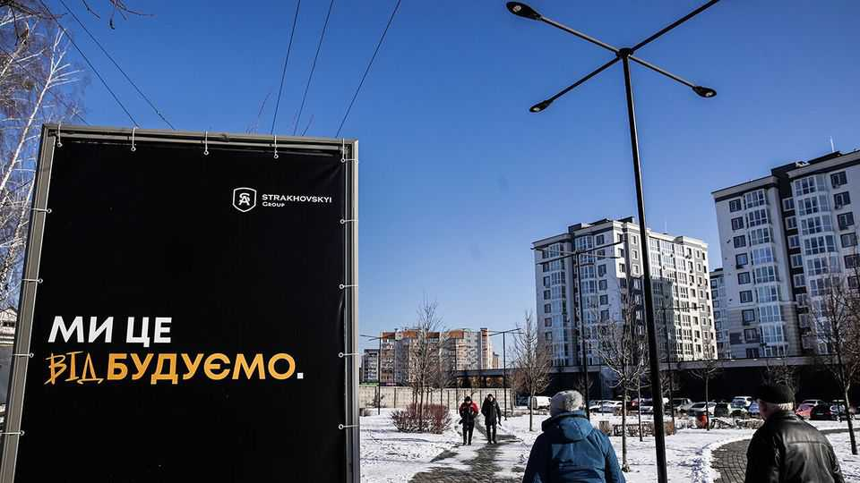
防空洞成为吸引购房者的卖点，乌克兰领先的房产网站Lun商业总监德尼斯·苏迪尔科夫斯基（Denys Sudilkovsky）表示：“最好的选择往往在数小时内消失。”在其他地区，困境资产正激发投机热情。半合法企业正购买面临导弹威胁最大的住宅，押注战后复苏及政府补偿的可能性——若导弹击中其房产，可获得赔偿。他们以现金换取大幅折扣。战争初期的市场走势可预测：东部陷入困境，西部则繁荣。但自2023年起，乌克兰人开始重返东部。距离前线30公里的哈尔科夫成为性价比突出的投资热点。尽管该市大部分工业已毁，但单间公寓售价已达年均工资的三倍半，较两年前的五倍有所下降，许多乌克兰人因此决定入市。
苏季尔科夫（Sudilkovsky）是数百万在战争第一年逃离西方后又返回东方的难民之一，他表示，这些大城市依然具有强大吸引力。他认为乌克兰人的顽强精神是一种被低估的经济力量：“在基辅、哈尔科夫或第聂伯罗生活危险吗？当然危险。但那里有最好的餐厅，那是生活所在，也是家。”■ 要掌握欧洲最大新闻动态，请订阅我们的周度专属简报Café Europa。
§041 欧洲原题：Viktor Orban’s illiberal intellectual patronage system · 板块：Europe · 栏目：欧洲
解决这个令人棘手的匈牙利魔方的诀窍在于，通过在适当的位置施加旋转，操控其结构，直到所有部分归位。结果发现，布达佩斯的孩子们并非匈牙利唯一擅长操控和旋转的高手。
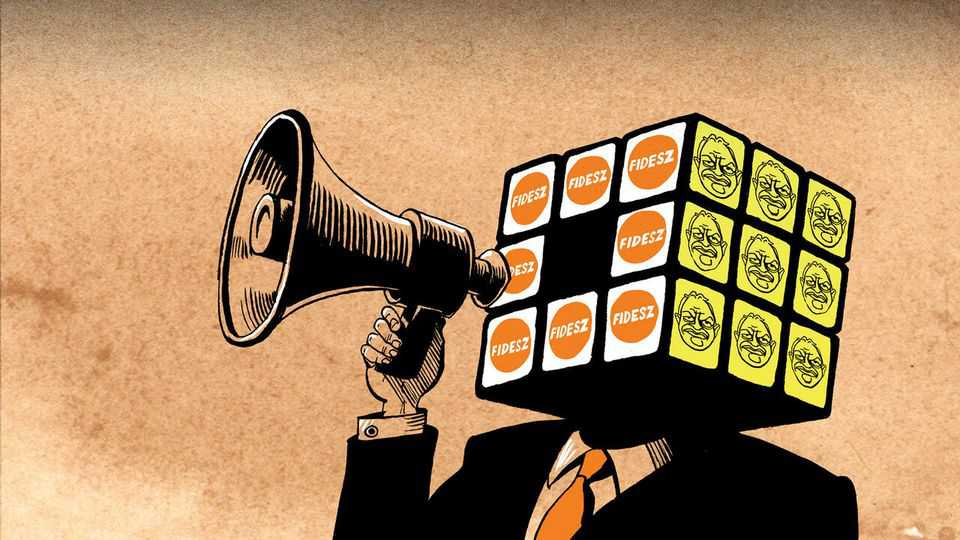
自2010年重新执掌总理职位以来，维克托·欧尔班（Viktor Orban）系统性地将匈牙利的媒体与知识界完全纳入其Fidesz党（匈牙利青年民主联盟）的轨道。（该策略成效显著，以至于在4月12日的选举中，欧尔班阵营仍具压倒性优势，尽管目前民调落后。）然而，对于这位自封为全球性人物的欧尔班而言，重塑1000万人口国家的思想秩序不过是小菜一碟，如同解开魔方的一个面。近年来，其“自豪的非自由主义”政权已将保守主义宣传工具输出至境外。欧洲人请注意：布达佩斯的扩音器正向你们发出信号。这个新型非自由主义工业综合体的复杂性，堪比那个令人沮丧的魔方。■
近年来，大量网站、杂志、智库、会议和教育机构纷纷涌现，不仅影响匈牙利的舆论，更波及整个欧盟。布鲁塞尔曾是技术官僚讨价还价的场所，如今却成为保守文化战士的战场，他们致力于传播奥班主义（主张更强的爱国主义、居家母亲、减少移民和绿色规则）。除了对民粹主义言论的偏好，这群反动势力的成员还有两个共同点：接受匈牙利的资助，以及对匈牙利现任领导人的溢美之词。这或许是巧合，但人们更倾向于认为并非如此。对美国的MAGA右翼而言，拥有一个在布鲁塞尔抨击欧盟的欧洲代表无疑十分便利。■
如今，人们完全有可能生活在由布达佩斯官僚精心构建的思想泡沫中。一天的开始或许可以从阅读“布鲁塞尔信号”网站开始，这是一家与匈牙利有联系的媒体，每当欧洲民粹主义者取得进展（最近频繁发生）便大肆庆祝。相关媒体项目包括“Remix News”，该平台聚焦欧洲移民犯罪报道；另一家“欧洲保守派”则更关注政策议题。午后则可阅读布鲁塞尔智库MCC最新发布的报告，分析“觉醒全球主义者”如何将欧洲推向崩溃边缘。若想当面讨论这些内容，可前往布鲁塞尔的“匈牙利之家”——这座宫殿式场所2024年开放，不久后将举办法国Fidesz盟友乔丹·巴德尔拉的新书发布会。日程表上还频繁出现保守主义思想家的会议，往往少不了奥尔班先生的身影。■
一位不经意的受众可能并未意识到匈牙利政权正是其自身喝彩的幕后推手。不带广告也不出售订阅的布鲁塞尔信号（Brussels Signal）是由一位前匈牙利公民联盟（Fidesz）政治顾问创建的。许多推广匈牙利保守主义理念的会议与评论刊物，均暗中由年拨款数千万美元的准政府机构资助。尽管MCC布鲁塞尔（MCC Brussels）仅成立四年，却已成为布鲁塞尔最富有的智库之一，这得益于来自布达佩斯马蒂亚斯·科文纽斯学院（Mathias Corvinus Collegium）的慷慨资助。实际上，它实为奥班主义阵营的分支：2020年该机构获得超过10亿美元资产，包括匈牙利国家石油公司的 lucrative 股权，并由奥班的亲信担任主席。■
布达佩斯扩音器（Budapest Megaphone）的各个组成部分声称彼此独立运作。一些人推崇某种撒切尔主义路线（不满的脱欧派占据重要位置）；另一些人则更倾向于保守的教会与家庭价值观。然而整体效果却呈现出一个保守主义的回音室，一位匈牙利资助的学者推崇另一位匈牙利资助的学者（后者不久后将回以同样的赞誉）。与美国的联系根深蒂固。3月21日，热爱特朗普的“美国保守派大会（CPAC）”将第五次来到布达佩斯——由匈牙利纳税人间接资助。这一切的目的是什么？匈牙利出生的MCC布鲁塞尔负责人弗兰克·弗雷迪（Frank Furedi）称，需要建立一个“替代知识分子群体”来对抗主流的自由主义思维定式。经历过共产主义压迫的匈牙利人，尤其适合识别意识形态一致性的过度压迫。■
在1989年前的锤子与镰刀时代，意识形态纯洁性测试涉及高呼无产阶级专政。如今，欧尔班主义者称，布鲁塞尔官员以同样的压迫姿态推行对LGBT权利的信念、资助乌克兰等。观点多样性是值得欢迎的目标；即便由国家资助的学者也能提出有分量的观点。但布达佩斯扩音器的宗旨之一并非布道，而是压制。其言论核心在于，欧尔班被无神论的欧盟官僚体系迫害（近年来欧盟已扣留数十亿欧元本应拨给匈牙利的专项资金）。这一说法忽略了真正原因：欧盟官员反对菲德兹党系统性压制公民社会、恩泽亲友及削弱法治的运作方式。■
欧尔班的盟友将这场冲突描述为“全球主义者与主权主义者之争”，但“欧盟对抗民主破坏者”更接近真相。这个非官方宣传机构可能已接近寿终正寝，或才刚刚起步。在民调中领先的反对党蒂萨党表示，若赢得选举将压制欧尔班主义意识形态网络。然而，一个出人意料的转折令魔方迷们欣喜不已——新的支持者或许即将现身。美国MAGA化国务院热衷于“在欧洲培养抵抗力量”，据说有意向那些接受匈牙利资助的喉舌提供资金。那些抱怨政府干预个人生活的民粹主义者，恐怕终将接受这一讽刺性现实。■ 订阅者可注册《经济学人》观点电子报，汇集本刊社论、专栏、特邀评论及读者来信精华。
§042 英国脱欧公投十年后，英国变得更欧洲化：更窄的英吉利海峡原题：Ten years after the EU referendum, Britain has become more European · 板块：Europe · 栏目：欧洲
几乎十年来，英国人开始购买比茶更多的咖啡，而且不仅仅是普通的咖啡。长期进行的家庭食品调查显示，消费者过去更偏爱速溶咖啡：在1970年代中期，他们购买的速溶咖啡重量是咖啡豆的五倍。2019年，这一趋势转向了咖啡豆。“英国已变成一个咖啡消费大国，”国际咖啡组织的统计学家多克·诺（Dock No）表示。在这一点上，英国在许多其他方面也更像一个大陆欧洲国家。出生率下降，年轻人在家居住的时间更长。■
英国经济正与欧元区同步发展。英国即将引入大陆风格的雇员权益规范和租户权益保障。其政治面貌明显呈现欧洲特征，拥有易被激化的选民群体和强势民粹政党。尽管有“特殊关系”的说法，英国对中东美军冒险行动仍持冷淡态度。就连一贯支持脱欧的《泰晤士报》媒体品牌，也正被德国Axel Springer集团收购。这一切在十年前启动欧盟成员国公投竞选时似乎难以想象。当时主张留在欧盟的人士担心英国可能摒弃大陆的育儿假和工时限制政策，而一些激进脱欧派则主张英国应与英联邦或所谓“盎格鲁-撒克逊世界”靠拢。■
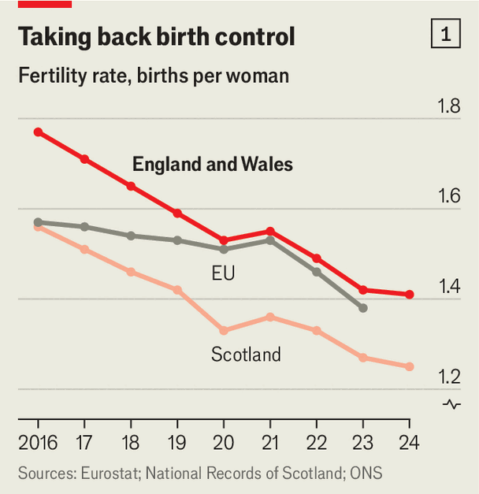
但2016年6月英国最终投票决定脱欧，是英国变得更为欧洲化的重要原因。从生育率说起。英格兰和威尔士的生育率在公投前数年已呈下降趋势。2016年时为1.8，截至2024年最新数据，这一数字已降至1.4（见图表1）。生育率的下降使英格兰和威尔士接近欧盟平均水平。它们已加入以奥地利、德国和匈牙利为代表的中欧中等生育率国家集团。苏格兰则逐渐呈现出南欧低生育率国家的特征。普遍存在的不确定性可能正在加剧生育率下降。南安普顿大学人口学家安·贝里ington（Ann Berrington）的研究表明，那些认为自己在同龄人中境况比父母更差的英国无子女人群，预期生育孩子的可能性显著降低。
低收入群体也更可能继续与家人同住。2024年，24岁年轻人中仍有49%与家人同住，比十年前的36%有所上升。英国在这一方面也逐渐呈现出类似中欧国家的特征。十年前，英国在经济上曾是欧洲的异类。尽管其GDP增长并不突出，但英国避开了困扰南欧国家的欧元危机。许多英国政界人士认为，英国与欧洲其他国家之间已出现鸿沟。欧洲怀疑派Douglas Carswell认为英国“被束缚在垂死的欧洲”。就连亲欧保守党人尼古拉斯·索姆斯爵士（Sir Nicholas Soames）也形容欧洲陷入“不安全、缺乏信心和乐观”的局面。实际上，英国与欧洲的差距从未像政客们声称的那么大，而随着脱欧带来的贸易和投资萎缩，这一差距已逐渐缩小。■
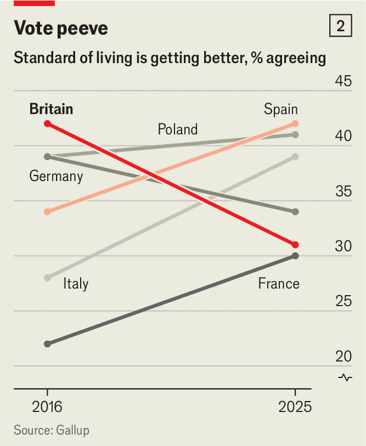
国际货币基金组织（IMF）预计英国和欧元区今年GDP增速将分别为1.3%。2016年盖洛普全球民意调查（Gallup World Poll）显示，42%的英国人认为生活水平在改善——这一比例高于法国、德国、意大利、波兰或西班牙民众的表态（见图表2）。到23年，仅31%的英国人保持同样乐观。英国人的悲观程度已接近法国人，后者以悲观主义为国民传统。2016年部分“脱欧派”担忧英国可能背弃“社会欧洲”（指欧洲社会福利体系）的劳工权益。实际情况却相反，英国已强化父亲育儿假规定，并将于下月实施更严格的裁员保护措施。工党政客和工会人士认为这些变化将使英国更接近欧洲其他国家——他们确实如此。房地产市场亦然。
英国长期以来在住宅租赁领域一直是欧洲的异类。房东监管较为宽松，租客则更容易面临租金上涨和房产被收回的风险。这一局面即将改变。5月1日起，一项允许许多英格兰房东收回房产的规则将被废除，租客将有权对租金上涨提出申诉。国际不动产业主联合会（International Union of Property Owners）秘书长艾曼纽尔·卡索（Emmanuelle Causse）表示，英国正逐步与其他欧洲国家接轨。荷兰自2024年起将无限期租赁设为默认模式，爱尔兰则大幅限制大房东收回房产的能力。除苏格兰外，英国避免了法国和德国采取的极端市场干预措施，后者曾对租金上涨设限。但一些人，包括伦敦市长，却希望采取类似措施。■
从政治层面来看，英国也愈发融入欧洲。在公投前夕，三分之二的选民支持保守党或工党——这两个政党主导英国政治近一个世纪。仅有英国独立党这一政党民意支持率超过10%。如今，民意调查显示有五个政党支持率突破这一门槛。右翼民粹政党改革英国党（Reform UK）位居榜首；其他竞争者包括工党、保守党、自由民主党以及绿党。英国历史上从未出现过如此碎片化的政治格局，也从未有过右翼民粹政党领跑民调的情况。该国如今与法国、瑞士等大陆国家愈发相似，其中法国国民联盟（National Rally）和瑞士人民党（Swiss People’s Party）均处于领先地位。再次，脱欧也是导致这一现象的重要原因之一。■
2016年公投重塑了英国政治格局，使政治分歧更多地沿着文化维度展开：民众越来越倾向于根据对移民等议题的态度而非阶级背景进行投票。改革党和绿党作为文化政治的专家，从中受益。英国短期内重新加入欧盟的可能性不大。但其在许多方面仍与欧洲大陆保持一致——包括公民对欧盟的态度。在2016年公投前，世界价值观调查（World Values Survey）显示，英国人对欧盟的信任程度远低于其他主要欧盟国家的公民。如今，英国人对欧盟的信任程度已接近德国人，略高于意大利人，这仅仅是因为英国人态度有所转变。重新加入欧盟将面临困难且充满争议，但或许会感觉合情合理。■ 如需获取更多关于英国重大议题的专家分析，请订阅我们的周度专属简报《Blighty》。
§043 英国绿党的经济计划堪称“科尔宾主义的加强版”原题：The Green Party’s economic plans are Corbynism on steroids · 板块：Britain · 栏目：英国
绿党经济发言人莫莉·斯科特·卡托（Molly Scott Cato）长期以来对经济增长持简单直接的处方：停止追求增长。2006年她出版了《Market Schmarket》一书，对资本主义进行生态学批判，痛诉“在增长狂热的祭坛上所做出的牺牲”。在提供获取分配地（allotment）和购买公平贸易咖啡（Fairtrade coffee）的建议中，私营部门员工被鼓励“至少将工作时间减半”，以削弱资本主义体系。这种反增长思维持续渗透于绿党的理念之中。
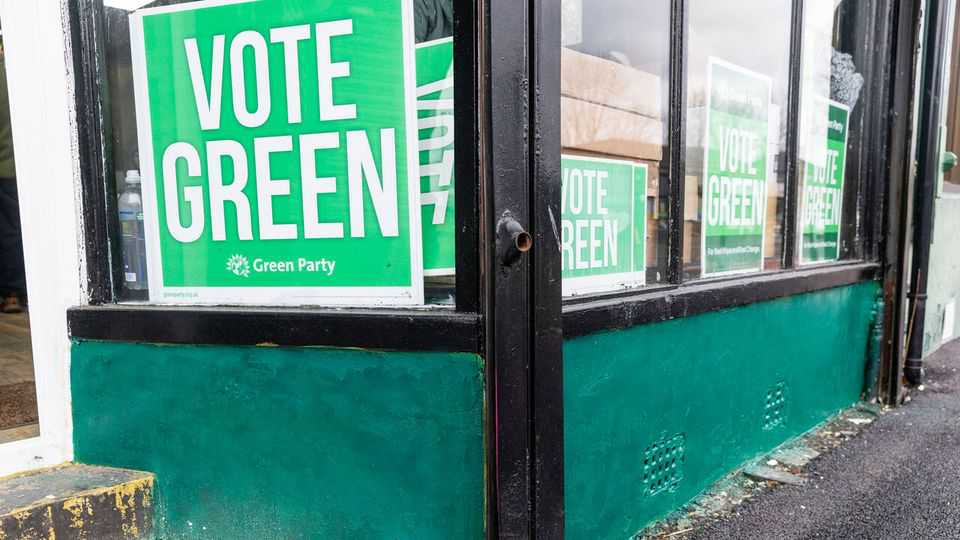
该党在2024年大选宣言中仅用一段篇幅提及经济增长，认为其对地球的伤害“正在削弱我们的福祉”（工党宣言中则近50次提及增长）。最新民调追踪显示，该党支持率自2024年以来翻倍，达到15%的选票。2月26日，绿党在曾是工党传统票仓的戈顿和登顿选区赢得首次补选胜利。是时候认真对待他们的理念了。最直接的切入点便是2024年宣言。尽管略显陈旧，但仍是该党官方立场，也是目前最全面的绿党政策阐述。2025年当选领导人扎克·波兰斯基并未退缩，反而重申核心承诺，如财富税。
manifesto所描绘的高税收、高债务经济模式，与2019年杰里米·科尔宾（Jeremy Corbyn）领导工党时制定的纲领最为相似。但该纲领在规模和反增长监管议程方面更为激进。若将其作为英国经济的药方，无疑将带来毒害。该宣言的核心是大规模支出计划，承诺提供免费社会护理、取消大学学费，并将适龄劳动者基本福利税率提高40%以上。该党主张将水务行业和五大能源公司国有化。绿党估算，这些计划在2029-30年将每年耗费2500亿英镑（3360亿美元），相当于GDP的7%。这一规模超过了科尔宾2019年承诺的GDP增长5%。工党已部分实施绿党的政策，例如取消双子女福利上限。 ■
即便扣除相关因素后，我们估算绿党的财政计划仍将使公共支出从今年占GDP的45%上升至2029-30财年的50%以上，高于丹麦或德国的水平。为支付如此庞大的开支，竞选纲领提议到2030年每年增加1700亿英镑的税收。这些增税将主要针对高收入群体。年收入超过5万英镑的人群，其边际税率将从42%升至48%。此外还将推出新的财富税、对养老金进行征税以及大幅提高资本利得税。碳税将每年带来900亿英镑的收入，大致相当于全球80个碳税及交易体系在2024年总收益的总和。这些政策实际带来的收入远低于绿党所声称的数额。财富税历来难以有效征收，如此高额的碳税将导致大量英国工业外迁。■
对高收入群体征收重税可能最终引发他们常威胁的大规模移民潮。即便绿党成功筹集到这笔资金，2029-30财年仍将存在800亿英镑的缺口。这相当于GDP的2%，需通过额外债务融资，规模与莉兹·特拉斯2022年的迷你预算相当。波兰斯基反对传统财政规则，主张抑制通胀应是增加支出的唯一限制。这一观点却忽视了债券市场反弹必然导致的借贷成本飙升，回避了对未来世代造成的长期负担。但更重要的是，该宣言将无法通过自身测试：如此大规模的刺激措施将导致物价迅速上涨，尤其是近年来英国通胀风险显著上升。■
若英国能摆脱低增长困局，由此产生的收入将有助于实现绿党的雄心。然而，在现有税收之外，该党严格的监管政策或将拖累经济。纲领承诺停止所有道路建设与机场扩建，强化环境监管，使房屋建设更加困难。租金管制将被引入，企业禁止向最高收入者支付超过其最低薪员工十倍的薪酬。对经济而言，重新加入欧盟是少数积极信号，但总体影响将是抑制增长。怀揣善意的绿党坚信，摧毁资本主义的黑暗工业机器能让人们更幸福。英国人将拥有更多闲暇时光漫步于英格兰的青山绿水之间，他们的忧虑将被国家保障需求所消解。■
但现实中的环保政策可能带来更严峻的后果。更高的借贷和供给侧限制将引发滞胀。飙升的利率和债务将摧毁公共财政。如果权力在召唤，绿党或许仍会试图缓解这些担忧；该党曾向《经济学人》表示，将在下次大选前重新审视其政策。但按照现行政策，英国人——无论贫富——都将面临一片绿色却令人不安的景象。■ 如需深入了解英国重大新闻的权威分析，请订阅我们的周度专属通讯Blighty。
§044 英国与挪威因共同利益日益紧密英国原题：Shared interests are binding Britain and Norway together · 板块：Britain · 栏目：英国
对英国官员而言，前往北挪威的行程正成为时尚。2月，武装力量大臣阿尔·卡恩斯（Al Carns，前皇家海军陆战队员）被拍到在北极村庄赫利格斯肯（Helligskogen）附近攀爬冰墙。几天后，国防大臣约翰·希利（John Healey）前往附近的英国军事基地维京营（Camp Viking），宣布计划在未来三年内将部署在挪威的英军人数翻倍至2000人，并表示1500名海军陆战队员将加入3月9日至19日在挪威和芬兰举行的北约联合演习“冷响应”（Cold Response）。信息明确。■
随着俄罗斯威胁日益逼近，特朗普政府指责欧洲忽视北极安全，英国希望在北极地区展示力量。它正加强与北欧国家的联系。然而与挪威的关系尤为特殊。自2024年英国工党政府上台以来，两国签署战略伙伴关系协议，并达成造船、潜艇追踪及绿色产业合作。挪威长期以来将英国视为安全担保国。1940年纳粹德国入侵挪威时，挪威王室与政府逃往英国。英国情报机构训练挪威抵抗军，并协助其从设得兰群岛发动秘密行动。二战后美国成为挪威最重要的盟友；作为北约创始成员国，挪威与英国同属该组织。■
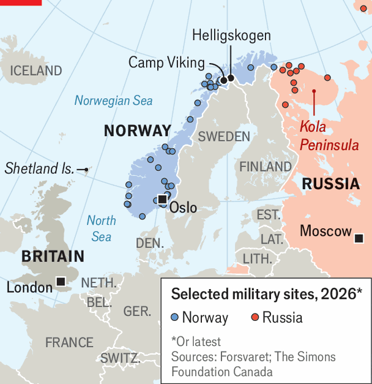
但挪威驻伦敦大使托雷·哈特雷姆（Tore Hattrem）表示，在挪威人心中，英国排名第二。防务和能源是这一联盟的核心支柱。防务合作旨在遏制俄罗斯，尤其是在海上。9月，挪威同意以价值100亿英镑（136亿美元）的交易购买至少5艘英国26型护卫舰，击败了美国、法国和德国的竞标。《伦纳房屋协议》（Lunna House Agreement）是12月签署的英挪防务协议，确认这些护卫舰将作为联合舰队的一部分，用于追踪北大西洋的潜艇和其他舰艇。该协议还加强了在鱼雷等海军技术领域的合作，并首次允许皇家海军陆战队在挪威全年进行训练。伦敦智库RUSI的埃德·阿诺德（Ed Arnold）表示，对英国而言，这种寒冷天气训练至关重要。■
在与俄罗斯冲突中，英国部队可能不得不在需要冬季作战能力的地区作战。英国海军陆战队在挪威本土的部署对挪威也有帮助。挪威防长警告称，俄罗斯可能试图占领挪威部分领土，以在科拉半岛边境的俄罗斯核武库周围建立缓冲区。在这样的情况下，阿诺德认为皇家海军陆战队在侦察、监视和情报方面的工作可能有助于识别高价值的俄罗斯目标。英国也将能源伙伴关系视为安全议题。历届政府都强调必须从可靠盟友（尤其是挪威）获取能源供应。初步数据显示，挪威在2025年提供了英国近70%的天然气进口。
今年5月，两国同意在北海加强清洁能源合作，挪威企业高度认可英国在海上风电领域的专业能力。据咨询公司Wood Mackenzie数据显示，截至去年年底，英国海域已建成16.9吉瓦（GW）的风电装机容量，仅次于中国在全球海上风电装机量（挪威则仅有0.1GW）。这一合作背后，两国均保持欧盟外的特殊地位。英国脱欧后重燃对挪威的兴趣，尽管英国议会已不再频繁提及效仿挪威加入欧盟单一市场的设想。哈特雷姆先生指出，挪威希望欧盟能尽可能推动英国参与欧洲防务合作。两国差异同样值得关注：挪威人均年GDP达97,000美元，远超英国的60,000美元。■
但鉴于其不到600万的人口远逊于英国7000万人口，英国需要一个更强大的伙伴来展现区域领导力，尤其是在美国敦促欧洲提升自身安全能力的背景下。“我们认为英国将在保卫欧洲中发挥领导作用，”哈特雷姆先生表示。问题是英国是否能投入足够资源兑现国防承诺，并满足其北欧盟友的高期待。■ 了解更多关于英国重大议题的专家分析，请订阅我们的周度专属通讯Blighty。
§045 狮子还是刺猬原题：Lions or hedgehogs? The vital choice for England’s banknotes · 板块：Britain · 栏目：英国
英国是一个对野生动物极度痴迷的国家。超过70%的英国人自认为是动物爱好者；每年向动物福利慈善机构捐款的人数，比任何其他慈善事业都多。（在需要为驴子设立庇护所的世界里，生病的儿童反而成了次要问题。）英国人在2023年为宠物服务花费了6亿英镑（约合7亿美元），相当于国防预算的10%以上。因此，英格兰银行宣布将在新版纸币上印制动物图案并不令人意外。现行纸币上印有真人，但容易引发争议。动物图案则更少争议。
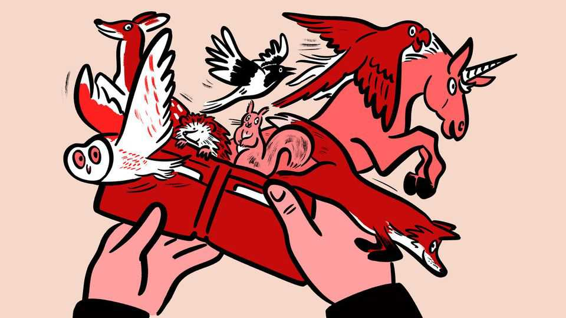
獾无法因相信种族等级制度而受到谴责，不像温斯顿·丘吉尔（Winston Churchill，英镑五英镑纸币正面人物）。松鼠与奴隶制毫无关联。但简·奥斯汀（Jane Austen，十英镑纸币正面人物）则不同。对于惧怕争议的银行而言，野生动物似乎是安全之选。但究竟选择哪种动物？央行将在夏季就这一关键问题向公众征求意见。在英国帝国时代，雄狮是不言自明的选择，但那些日子早已远去。对于那些对英国经济感到沮丧的人来说，树懒如今显得更加贴切。高收入群体或许会认为乌鸦更能体现政府的税收政策。绝望的YIMBY群体则会指向大鲵，这是一种擅长阻止建设的物种。■
对英国公共空间破败状况忧心忡忡者，恐怕再没有比狐狸啃垃圾或海鸥抢薯条更贴切的意象了。然而，这些选择终究难逃央行追求凝聚而非分裂的意象之苦。央行或许可以转而选用象征英国持久价值观的动物。英国历来以包容开放著称，擅长融合移民。央行可借此机会在纸币上印上环颈鹦鹉或小天鹅——这两种外来物种已成功在英国安家。但若央行对可能由奈杰尔·法拉奇（Nigel Farage）领导的未来政府心存顾虑，或许会三思而后行，毕竟将移民——无论其羽毛多么华丽——置于国家货币上，可能引发争议。■
更统一的方法或许是选择一种能体现英国人真实面貌的动物，而非他们所追求的价值观。伦敦随处可见的鸽子拥有卓越的导航本能，足以让航海民族引以为傲。苏格兰传统象征的独角兽则能展现英国的独立精神（以及对拥有价值科技初创企业的渴望）。然而，这两种动物似乎都不完全契合。最佳选择是刺猬，它在英国人最喜爱的哺乳动物评选中屡次胜出。浑身尖刺却内里柔软，它恰似这个国家的微缩版：初见时尖锐，待你赢得信任后便柔软。它也是最典型的英国式生物——弱势群体，其在农村地区的数量自2000年至2022年间下降了超过一半。
人们已纷纷响应这一倡议，目前已有超过10万条刺猬通道（hedgehog highways），让这些小动物得以在花园间迁徙觅食。若将刺猬印在纸币上，捐款或将如潮水般涌入，用于建造数以千计的刺猬通道。■ 如需获取英国重大新闻的深度分析，请订阅我们的周度专属通讯Blighty。
§046 德国施普林格集团对英国最古老日报之一的布局 英国《泰晤士报》的收购计划启动于原题：What Germany’s Springer plans for one of Britain’s oldest dailies · 板块：Britain · 栏目：英国
德国施普林格集团对英国最古老日报之一的布局 其收购《泰晤士报》是成为自由世界领先数字媒体公司的雄心之一。自2023年母公司陷入破产清算以来，这家拥有170年历史的英国保守派报纸命运一直悬而未决。此前曾有阿联酋（引发编辑部抵制并导致立法变更）和美国的收购尝试。最新竞标方是《每日邮报》与通用信托公司（DMGT），由罗瑟米尔男爵所有，其以5亿英镑（6.7亿美元）竞标收购《每日邮报》的主要竞争对手——英国发行量最大的付费日报。
DMGT原计划完成这笔交易，但其报价被德国媒体集团Axel Springer提出的5.75亿英镑全现金报价击败。以对欧盟的反感和德国表现不佳时幸灾乐祸著称的报纸，最终将被德国人拥有（待监管批准）。但拥有《泰晤士报》是Axel Springer（德国媒体集团）老板马蒂亚斯·多普弗纳长期的夙愿，他为这份报纸支付了“象征性资产溢价”，而他早在2004年就曾尝试收购该报，据研究公司Enders Analysis称。马蒂亚斯·多普弗纳表示，阿克塞尔·蔡斯·斯普林格于1946年创立的这家集团，将《泰晤士报》视为其“北极星”。马蒂亚斯·多普弗纳对《泰晤士报》媒体集团（TMG）——《每日电讯报》和《星期日电讯报》的母公司——有何计划？他表示，TMG拥有“巨大的增长潜力”；“借助最先进的人工智能工具进行转型”是关键。
他强调，编辑独立性是至高无上的。他希望通过Politico和Business Insider两家美国媒体加速TMG在美国市场的扩张。脱欧派人士担心多普纳先生会让立场极端亲脱欧的《泰晤士报》变得更具欧洲色彩。多普纳先生的旗舰报纸《 Bild》曾支持英国留在欧盟。《 Bild》和另一家德国大报《Die Welt》的员工必须签署公司信条“基本准则”，其中包括支持以色列拥有自决权以及美欧“根本性联盟”。施普林格公司发言人彼得·胡特表示，TMG员工无需签署该信条，并坚称《泰晤士报》主编克里斯·埃文斯将拥有完全自主权。时间会证明一切。
2021年（德国联邦选举之年），Döpfner在一条（后被泄露）的短信中曾对《 Bild》时任总编辑表示，应加强亲商的自由民主党。德国TMG集团及施普林格媒体均倾向保守主义，但两者尚未解决的核心问题是：他们是否仍坚持主流保守主义，还是已转向民粹右翼政党如德国选择党与改革英国，约翰·坎普纳（John Kampfner）在其著作《为何德国做得更好》中指出。改革党的领导人尼格尔·法拉奇（Nigel Farage）常在《泰晤士报》撰写专栏文章。Döpfner的目标是五年内将Axel Springer的价值翻倍。他以高价收购《泰晤士报》是因为他认为该报能助其实现目标：凭借其110万订阅者，他将使旗下媒体品牌的付费订阅者数量翻倍。■
借助人工智能，特别是AI，他相信能够将Springer打造为自由世界的领先数字媒体公司。■ 如需获取更多关于英国重大新闻的专家分析，请订阅我们的周度专属通讯Blighty。
§047 英国烟囱清扫工运气爆棚原题：Britain’s chimney sweeps are as lucky as lucky can be · 板块：Britain · 栏目：英国
一个常与《玛丽·波平斯》和爱德华七世时代伦敦联系在一起的行业，正展现出惊人的韧性。疫情和高昂能源成本反而重燃了英国人对家庭壁炉的喜爱。新一代烟囱清扫工因此迎来发展机遇。根据炉具工业协会（SIA）数据，自新冠疫情爆发以来的六年里，英国人购买了约100万台木柴壁炉。目前每14户家庭中就有1户拥有此类设备。
需求增长主要由俄乌战争引发的天然气价格上涨以及人们对危机时期电网脆弱性的日益关注推动，美国烟囱清扫协会（National Association of Chimney Sweeps）主席马丁·格莱恩（Martin Glynn）表示。该协会成员数量在过去15年间增长三倍，达到760人，其中包括42名女性成员。保罗·索利卡里（Paul Solicari）在28岁左右加入行业，此前曾在酒店业工作。他认为自己的公司SweepSmart拥有六名员工，是英国规模最大的企业之一。他解释说，大多数烟囱清扫员都是本地单人运营，目前他正在北伦敦一处住宅的烟道检查中短暂休息——这项工作如今使用摄像头而非儿童完成。烟囱清扫无需认证，需求具有季节性。“你无法在冬季雇佣足够的人手应对需求，同时又在夏季保持他们忙碌。”■
索利卡里先生说：“这就是为什么增长如此困难。”这家企业已证明对私人股权投资的整合模式具有免疫力，这种模式曾将英国的小型兽医诊所、法律事务所和会计师事务所整合起来。然而，木材燃烧热潮在帮助清理工作的同时，也正在损害空气质量。据政府统计，此类火灾约占英国有害PM2.5颗粒物排放量的20%，与道路交通相当。这种污染会产生意想不到的影响。2022年，视频记录者布莱恩·琼斯从伦敦搬到肯特郡的海滨小镇福尔克斯特恩，以逃离大城市的喧嚣。不到三年后，他和伴侣因邻居及当地酒吧的烟雾难以忍受而决定返回。如今他们已重新定居在哈克尼，这是多个伦敦自治市镇中在冬季反对燃烧木材的代表之一。■
针对污染问题，政府计划进行改革——但这些措施远未触及根本。自1月起启动的咨询会将于3月19日结束，提案包括对新型壁炉设定更严格的排放限制、加贴健康警示标签以及对供应不合格燃料的供应商实施更严厉的处罚。空气质量管理组织“Mums for Lungs（妈妈们为肺）”对相关方案表示失望。该组织创始人杰米玛·哈特森表示，政府“基本上拒绝采取行动，因为他们感觉缺乏公众支持”。她呼吁政府开展宣传运动，突出烟雾对健康的危害，并全面禁止非必需的木柴燃烧，仅允许无其他供暖方式的人群使用。随着公众对健康风险的认知提升，木柴燃烧器的需求可能正在降温。SIA称，2025年销售量约为2022年峰值的一半。
但索利卡里先生这样的清洁工仍需维护庞大的现有设备。为以防万一，他正接受空调清洁培训。“大型商用空调设备本质上就像烟囱，只是水平方向的——不会产生烟灰，”他说。■ 了解更多英国重大新闻分析，请订阅我们的每周会员专属通讯《Blighty》。
§048 英国手表品牌崛起，非瑞士却赢回市场关注原题：They’re not Swiss, but British watch brands are gaining ground · 板块：Britain · 栏目：英国
，数百名中年男子在伦敦威斯敏斯特的林德利大厅外排起150米长队。来自佛罗里达坦帕的马修·罗杰斯（Matthew Rogers）自凌晨4点15分起便在此等待，只为抢购限量版腕表。罗杰斯是第三屆英国钟表匠日活动的1800名持票人之一。英国钟表工艺重现辉煌。
英国曾引领全球精密计时技术，其发明包括航海钟。但英国从未主导腕表的大规模生产，1970年代最后一家大型工厂已关闭。
英国手表行业虽规模不大，但增长迅速，83%的产品采用机械机芯。成立于2020年的英国钟表制造商联盟（Alliance of British Watch and Clock Makers）拥有超过100个成员品牌。所有成员必须“创立、管理与拥有”均在英国。四分之三的品牌成立于2010年后。联盟2025年调查数据显示，行业年销售额约为2亿英镑，较2021年的1.25亿英镑有所增长，但仍不足全球手表销售总额的0.5%。这些企业大多在英国设计，但生产外包。（例外的是联盟联合创始人罗杰·史密斯（Roger Smith）的定制时计，均在曼岛手工打造。）英国营收最大的手表品牌克里斯托弗·沃德（Christopher Ward）为英瑞合资企业，总部位于英国，但其瑞士工厂自设工坊进行生产。该品牌去年售出近4万只手表，已跻身摩根士丹利（Morgan Stanley）列出的全球50大瑞士手表品牌榜单。■
Underd0g工作室是一家草根初创企业。这家初创公司成立于五年前，凭借趣味设计积累了追随者，其最知名的手表表盘设计宛如西瓜。其手表均标注“英国制造”。去年，该公司组装了14,600块手表，主要使用海外零部件。据创始人理查德·本克（Richard Benc）介绍，这使Underd0g成为英国最大的机械表组装商。目前，10名技术员在“工作台”上操作，公司总员工数为26人。总计约150个品牌正在尝试这一领域。英国虽非瑞士，但其钟表业正重新焕发生机。■ 如需获取更多关于英国重大议题的深度分析，请订阅我们的周度专属简报Blighty。
§049 英国如何成为补偿国度原题：How Britain became a Compo Nation · 板块：Britain · 栏目：英国
从约翰·布尔红润的脸庞到查尔斯国王的面容，英国的象征无处不在。但若想真正窥见英国的灵魂，不妨前往Reddit上的“补偿脸”页面。页面上，一连串不满的英国人对着本地媒体摆出愤怒表情，他们所针对的对象可能是抱怨奶酪卷配料过多的母亲，或是累计收到120次驾驶违规罚款的女性，亦或是站在巨大坑洞旁的男子。其中有一张照片中，一对夫妇因“无法在上午9点前在Morrisons超市买到馅饼”而愤怒。每张苦脸背后都蕴含着一个简单的逻辑：事情出了问题，而别人应该负责。每张脸都严肃而坚定，期待着补偿。
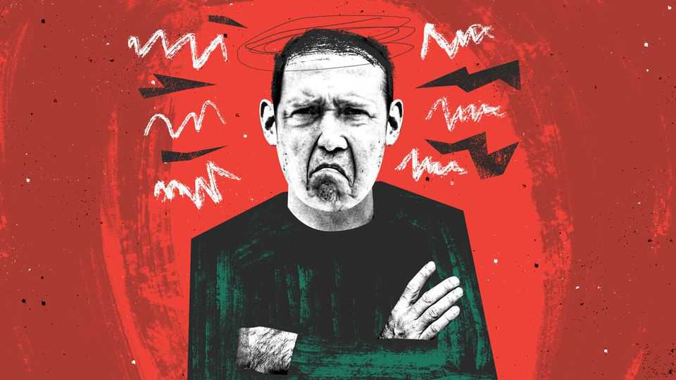
从地方新闻报道的常见手法演变为治理哲学，英国已变成一个无人能真正吃亏的“补偿国家”（Compo Nation）。当伊朗战争后油价和天然气价格飙升，政府急忙向家庭承诺“将予以保护”。财政大臣拉切尔·里夫斯（Rachel Reeves）宣称“帮助英国纳税人的一切手段都可考虑”。在核能时代参与战争的首相基尔·斯塔默（Sir Keir Starmer）亲赴贝尔法斯特，承诺防范取暖燃油成本上涨。反对党仅以“首相为何不采取更多措施”为由介入。自由民主党领袖爱德·戴维（Sir Ed Davey）自首架F35战机升空起便持续施压政府。这并非新现象。前保守党首相鲍里斯·约翰逊（Boris Johnson）是“补偿国家”的奠基人。■
正是他吹嘘国家的慷慨，当时政府花费近4000亿英镑（5360亿美元）在新冠疫情中让民众居家隔离。约翰逊——曾是英国小政府党领袖——表示：“政府正将手臂环绕着这个国家的人民，帮助他们渡过难关。”英国人逐渐习惯了利维坦（Leviathan）的温暖拥抱。这种思维导致了利兹·特拉斯所谓自由市场政府签署极其慷慨的能源补贴协议，2022年天然气价格飙升期间，每个家庭的账单都因此大幅降低。疫情封锁结束后，510亿英镑的纾困计划似乎微不足道。其慷慨成为特拉斯政府被遗忘的罪行，而其问题早在夸西·克沃滕（Kwasi Kwarteng）在议会发表致命的迷你预算案之前就已显现。如今，通胀担忧正萦绕在交易员心头。■
但英国脆弱的财政状况也使巨额能源纾困计划成为可能。政客们或许畏惧债券市场；国债持有者却对“补偿国的面孔”感到不满。补偿国的核心存在一个根本性的讽刺：民众从未如此愤怒地对待政府，却也从未如此期待政府。封锁期间证明了政府能够不计代价完成巨大任务。尽管大规模干预带来了诸如公共服务严重积压、债务占GDP比重高达93%等后遗症，这些却被忽视。如果国家能支付数百万员工居家隔离，为何不能再次支付我的燃气费？补偿国的公民要求无风险的回报。精明的中年男性可从灵活的能源套餐中获益，这类套餐随批发市场价格波动而调整。■
若政府对最新冲击决定干预能源价格，这些碳中和爸爸们将获得救助。他们的孩子也卷入其中。一些在2012年至2023年间就读大学的不幸学生，若收入不足以偿还债务，其债务将以不可逆转的速度增长，相当于终身承担实际9%的税负。这对部分人而言是糟糕的交易，但这是他们当初自愿承担的。即便如此，公务员们仍匆忙寻找缓解债务的办法。在“Compo Nation”体系下，收益归个人，损失则转嫁给国家。政府决策导致个人受损需立即补偿的理念已根深蒂固。疫情期间推出的临时商业税率减免到期后，酒吧业主要求补偿，结果不仅得到了补偿，还更糟。
同样，反对国家养老金不平等的妇女组织（WASPI）要求集体赔偿100亿英镑，认为政府未能提前告知将在二十年内将国家养老金领取年龄从60岁提高至65岁。政策有时会让民众陷入贫困。这不是不幸的副作用，而往往正是政策制定的初衷。但在一个“补偿国家”（Compo Nation），一旦政策发生变化，有人便会要求获得赔偿。当选民认为无人应承受损失时，良好的治理便无从谈起。为国家整体利益做出的艰难抉择，会被少数个体的软弱诉求所取代。在工党政府的所有缺陷中，其无法说“不”的能力是最致命的。政府对自身政策的任何微小反对声音都表现出退缩，哪怕这些反对者永远不会投票给工党。■
然而，挑选失败者是政府最根本的职责，尽管出于自然原因，政客们往往不愿承担这一责任。推卸这一责任对工党毫无益处。绿党民粹主义领袖扎克·波兰斯基承诺消除学生债务并补偿WASPI女性。当波兰斯基发声时，他代表的是Compo Nation。除非出现中东奇迹，基尔爵士的政府将不得不在不满的Compo Nation民众与已怒不可遏的债券市场咆哮之间寻求平衡。如果工党仅保护最贫困群体以安抚债券买家，这将引发Compo Nation富裕阶层的抗议，他们无论多富有都习惯了国家的施舍。他们为何要动用应急基金，仅仅因为下雨了？英国人深知，有时必须有人承受损失。■
今天的选民让明天的选民承担后果，通过增加债务和提高税收。当这位选民察觉时，他们的代价面容将令人震惊。■《经济学人》订阅者可注册我们的Opinion通讯，汇集了我们最佳的社论、专栏文章、客座评论和读者来信。
§050 美以两国如何打造庞大的军事打击系统原题：How America and Israel built vast military targeting machines · 板块：International · 栏目：国际
美以两国在伊朗展示的火力投送速度和规模，远超美国在第一次和第二次海湾战争中所展现的。据信，两国盟友在2月28日的空袭行动中，出动的战机数量远超美国在1991年或2003年战争初期第一天的规模（当时每方部署约1300架战机）。五天后，美国战争部长彼得·赫格塞斯（Pete Hegseth）宣称，“雷霆怒火行动”已实现2003年伊拉克战争“震慑与震撼”行动两倍的空中打击力量。
美国和以色列能够发动大量打击行动和导弹袭击，是因为它们能比以往任何时候都更精确、更快速地识别目标。而它们能以如此快的速度、广度和精度生成目标，得益于软件使用量的大幅增加——包括迄今为止有限程度上的人工智能应用。两国军队如今已能以工业化的规模生成并打击目标。自战争初期以来，目标选择一直受到严格审查。2月28日，伊朗南部Minab镇的一所女子学校被一枚可能是美国战斧巡航导弹的武器击中，导致175人丧生，其中大多数是儿童。3月11日，《纽约时报》报道称，五角大楼已确认此次袭击是由于目标锁定错误所致，该错误发生在对附近海军基地的袭击中。■
赫格塞特因反复强调要优先考虑武装部队的“致命性”而非“形式上的合法性”，并削减五角大楼内针对平民伤害评估的预算，而面临对平民生命漠视的负面认知。根据华盛顿的人权监测机构HRANA统计，截至目前已有近1800人死于伊朗，其中大多数为平民。美国与以色列的现代瞄准系统在定位目标和降低单次打击的平民伤亡方面，远胜于以往的技术。在美国，伊朗袭击的工业流程由佛罗里达州坦帕市的中央司令部（CENTCOM）总部的人类操作员负责，该司令部负责五角大楼在中东地区的行动。一名指挥官会针对不同场景生成作战方案，例如轰炸伊朗核设施或推翻政权。■
他的“J2”（情报总局）构建了一个包含数千个潜在目标的数据库，这些目标信息综合了卫星图像、信号情报等多来源数据。该数据库内设有“禁打击名单”，涵盖学校、医院等民用设施。武器专家则负责确定针对不同目标所需的弹药类型，例如用于地下设施的 bunker-busters（ bunker-buster 弹）或用于建筑的 GPS 引导联合直接攻击弹药（JDAM）。法律顾问会审核目标，但其作用有限。（一位前美军指挥官表示：“审核目标的律师不会说‘你们不能这么做’，而是会说‘你们可以这么做，但需要了解后果’。最终的‘法律顾问’其实是指挥官本人。”）
指挥中心的J5（战略与计划部门）将所有信息整合成一份连贯的作战计划，并传递给J3（作战部门），后者最终将计划分解为“空袭任务指令”，通常提前两天制定。软件早已被用于辅助这一过程。它通过模拟爆炸、热浪和碎片的覆盖范围，估算目标被摧毁的概率以及对平民的潜在伤害。这种模拟结果可叠加在地图上，形成锯齿状的图像，有时被称为“溅射图”（splat）。但近年来，相关技术在范围和复杂度上实现了飞跃。包括美国中央司令部（CENTCOM）和北约在内的美军现均采用由美国公司帕兰提尔（Palantir）开发的Maven智能系统，以提升整个流程的效率。Maven被称为“决策支持工具”。■
Maven从公开信息源如社交媒体动态，以及机密信息源如卫星中获取数据，将所有信息整合。若一名伊朗人在Telegram（伊朗人偏好的社交软件）上提到曾目睹导弹发射器驶过自家门前，Maven可将这一片段与射频卫星探测到的伊朗军用无线电电子信号数据进行关联。随后，Maven能生成目标，计算最适合打击每个目标的武器，并评估后续造成的损害。Maven还被称作现实世界的“数字孪生”，北约负责该项目的军官阿内尔·戴维（Arnel David）写道，这使指挥官能够模拟特定决策可能产生的结果。他表示，目标是将军事指挥转变为“由机器辅助的预测科学”。■
所有这些意味着数据转化为目标的速度大大加快。前美军第18空降军上校乔·奥卡利根（Joe O’Callaghan）在最近的一档播客中表示，一份机密研究显示，Palantir的系统使军方人员能够以十分之一的人力规划一场规模相当于伊拉克战争的行动。他补充道，这一效率此后已进一步提升。（Maven自2022年起便用于支援乌克兰。）曾参与Maven项目的前北约将军表示，‘过去需要数十人耗费数小时完成的任务，如今只需两分钟。’一位欧洲将军将他所见的这一变化描述为‘炼金术’。‘我们正从每天锁定10个目标提升至300个，’他说，‘目标是每天锁定3000个目标。’以色列虽使用不同的软件，但同样实现了流程的‘工业化’，一名军官如是说。■
美国的军事规划者对以色列同行在准备战争时带来的“目标库”感到惊讶——数千个伊朗目标（以及每个目标所需的弹药）：伊朗领导人的总部和住宅、军事和民兵基地、导弹发射装置和工厂、民用基础设施等。“以色列赋予决策支持系统更多自主权来生成目标，这比我以往经历的都要多。”一位欧洲将军表示。以色列的这一流程源于1973年的赎罪日战争，当时以色列战机遭苏联制造的防空系统重创。这次打击促使以色列空军系统地收集并整合敌方地空导弹（SAMs）数据，这在1982年对叙利亚的战役中发挥了关键作用。随后在2006年与黎巴嫩真主党的战争中，以色列又面临新的挑战。
随着战争持续34天，以色列军方抱怨“目标库已见底”。时任军情局长阿莫·亚丁（Amos Yadlin）借鉴针对地对空导弹（SAMs）的分析方法，将技术拓展至所有潜在目标。以色列国防军（IDF）总参谋长最终手握一份 Hamas 目标清单，每当加沙火箭发射，他可在数分钟内选定报复目标。这一切看似黑箱操作。指挥官们辩称，由 Maven 等工具构建的目标库经过近十年测试，总体可靠性较高。他们为每个目标设定置信度，依据基础数据判断。一名军官表示，这些系统通常比疲惫的人类分析师更能识别民用设施。■
在美国和以色列的武装部队中，人类负责批准每个目标，除非在极端情况如防空系统等需要应对大量来袭弹药的场景。但一些内部人士承认，打击行动规模和节奏的扩大已促使各方赋予计算机更大的自主权，使其能够实际执行生成的目标。对自主打击的担忧是Anthropic公司（Claude人工智能模型的开发者）与美国国防部之间争议的核心，尽管目前这仍是一个假设性问题。（Claude在Maven系统中被部分使用，但不用于地理空间任务如识别物体。）在北约内部，有技术相关人士表示：“一些国家担心人类控制权的丧失。”“我们正以四年前我甚至无法理解的速度推进变革。”
在许多情况下，计算机辅助目标清单的问题更多在于人类而非技术本身。“人工智能可以提升优秀情报官的能力，并帮助减少附带损害，”一名以色列情报官员（Israeli source）表示。“但如果情报官只关注增加目标数量而忽视伤害对象，人工智能将帮助生成这些目标。”以色列对加沙的袭击暴露了维护庞大目标清单的另一个问题。“当袭击导致平民伤亡时，我们会回查信息，”一名分析师表示。“通常是因为哈马斯过去曾使用过该建筑但已搬离，而家庭则迁入其中。”IDF定期“重新验证”目标，但频率不足。■
未能重新验证目标可能是米纳布女校遭袭事件的症结所在，该地点一名官员曾告诉《纽约时报》，这里过去属于附近海军基地的一部分。随着人类被越来越多计算机生成的目标所淹没，每天可执行的袭击次数大幅增加，降低此类灾难风险的挑战将日益严峻。在美国，最大的挑战或许来自高层。赫格塞特先生贬低战争法，解雇军事律师并放宽交战规则。据一名官员称，他还削减了五角大楼负责保护平民工作人员数量达90%。驻中东美军司令部（CENTCOM）内部的平民伤害应对团队目前仅保留其上任前三分之一的编制；负责规划及“打击小组”内部的人员流失最为严重。■
相关工作人员可帮助理解伊朗局势变化如何使目标如米纳布镇学校等失去时效性。“我们在规划方面做得越多，就越不用担心像米纳布这样的目标。”官员表示。3月8日，美军中央司令部（CENTCOM）呼吁伊朗民众留在家中以避免伤亡，并指责伊朗领导人将武器部署在人口密集区，使平民陷入危险。该机构称，伊朗政权“公然漠视无辜民众的安全”。■ 订阅我们的周度专属简报《The War Room》，以掌握最新的国防与国际安全动态。
§051 印度在混乱世界中损失惨重原题：India has much to lose from a world in chaos · 板块：International · 栏目：国际
按理说，这本应是印度外交政策高僧们的一次“早该如此”时刻。地球上最强的国家正试图主宰其余国家。实力较弱的国家日益陷入恐惧。似乎没有任何法律或国际条约能约束原始力量的行使。在印度政坛的智者们布满书籍的德里书房和树荫下的官邸中，他们早已预见了这一局面。印度早已为更混乱的世界做好准备，有时甚至似乎乐于接受这种局面。
■
自特朗普首次当选总统，以及去年重返白宫以来，印度官员嘲讽西方盟友为他的交易型作风和“美国优先”言论感到惋惜。印度人认为，特朗普代表了美国真实而永恒的面貌——摘下伪装面具后的真实模样。作为额外的举措，印度拒绝谴责其长期盟友俄罗斯，因其2022年入侵乌克兰的行为。印度政界大人物向访客叹息道，大国向来冷酷无情，所谓“自由主义规则秩序”不过是虚假的把戏。西方民主国家或许哀悼他们曾主导的旧世界，但印度还有生意要谈。印度外长苏布拉马尼亚姆·贾伊斯汉卡尔仍在积极传播这一信息。伊朗战争与海湾局势的消息主导了3月5日至7日在德里举行的政府支持的拉伊辛纳对话会议。■
但就核心场合而言，贾伊 Shankar 先生对全球从“秩序”转向“混乱”的趋势显得冷静。毕竟，他指出，1945年后建立的国际体系本质上是“由西方制定、为西方服务、由西方主导的体系”。这套规则维持了70年，仅占印度历史的1%。若其终结，这并不令人意外，甚至可能为印度和全球南方国家创造机遇，他强调道：“生活总会继续。”可惜，德里的外交与安全机构并不认同贾伊 Shankar 先生的冷静态度。在多次品尝（优质）大吉岭茶和茶的过程中，这位专栏作家采访了退休及现任的印度及外国外交官、军方官员、企业高管和学者。一位印度政界要员表示：“外长正吹着口哨鼓舞士气，但此刻是屈辱的时刻。”■
由于伊朗冲突导致霍尔木兹海峡船只无法安全通行，且卡塔尔等主要液化天然气出口国暂停出口，若战争持续，印度将面临能源危机。特朗普政府在拉吉斯坦对话（Raisina Dialogue）期间宣布，将发布一项豁免令，授权印度购买受制裁影响的俄罗斯石油。然而，美国对印度获准30天内购买俄罗斯石油的表态，反而引发不满，有人抱怨印度被“支票”所赐，仿佛被主子施舍。■
政客们聚谈的场所气氛本就不佳，美国副国务卿克里斯托弗·兰道（Christopher Landau）的发言更添波澜。他向听众表示：“我们不会像20年前对待中国那样，在印度重蹈覆辙，当时我们说‘你们可以自由发展这些市场’，结果却发现自己在诸多商业领域被你们超越。”多位人士对美国潜艇击沉伊朗军舰的事件表达了不满，该事件发生在斯里兰卡附近国际海域。特朗普后来称此次行动比捕获伊朗护卫舰“更有趣”，但此举被视作对印度的侮辱，因为印度刚刚在海军演习中接待了伊朗军舰。这种不满迅速升级为愤怒，因莫迪政府未谴责此次潜艇袭击，且对伊朗战争总体保持沉默。解释是出于对特朗普的畏惧。■
与美国的关系去年一度恶化，这源于一位内部人士所说的政府“傲慢与趾高气扬”的态度，当时特朗普重返白宫。2025年，特朗普挑起与印度的贸易战，印巴冲突后似乎更倾向支持巴基斯坦。他急于改善与中国的双边关系，削弱了印度作为美国对冲中国战略筹码的期待。然而在德里精英阶层中，普遍共识是印度需要与美国建立更紧密关系，后者是无可比拟的投资、技术和高质量防务装备来源。印度官员强调其在与美俄、以黎及海湾阿拉伯君主国等多元势力保持密切关系方面的娴熟能力。■
尽管与海湾国家贸易繁荣，且与以色列情报和防务科技企业关系日益紧密，印度仍保持与伊朗相对友好的关系，这反映了双方对巴基斯坦的共同反感以及印度需要经陆路通往阿富汗的战略需求。但德里高层人士质疑，印度的这种平衡策略是否真如贾伊尚卡尔及其他支持者所称能赋予其自主权。内部人士指出，该国实际上正危险地同时依赖多个地区。伊朗长期战争不仅威胁与海湾国家的贸易，还危及950万在阿联酋及其他阿拉伯国家生活工作的印度侨民，他们通过汇款每年向国内输送巨额资金。若中东长期能源封锁，中国将不得不增加对俄罗斯石油的采购。■
如果俄罗斯对中国的依赖加深，这对印度来说是一个威胁。印度同时依赖俄罗斯作为重要的（尽管正在减少的）国防供应商，却与中国存在紧张关系，包括近年来发生的致命边境冲突。一场旷日持久的伊朗战争还可能通过另一种方式增强中国对印度的影响力。如果印度需要更大的能源独立性，就必须大力推动可再生能源发展。只有中国能在规模和成本上提供所需的太阳能板、风力涡轮机和电池，即便依赖也无所谓。简而言之，一个动荡的世界对印度来说是灾难性的。这恰恰体现了印度的国家信用。印度有计划成为繁荣先进的经济体，而混乱可能会破坏这一目标。不过出于民族自豪感和宣传考虑，印度领导人无法公开承认这一点。■
《经济学人》的订阅者可订阅我们的观点通讯，该通讯汇集我们社论、专栏文章、特稿及读者来信的精选内容。■
§052 Business：本周商业原题：Business：本周商业 · 板块：Business · 栏目：商业
国际能源署协调成员国紧急释放4亿桶石油，旨在缓解霍尔木兹海峡关闭引发的原油短缺担忧。该海峡每日通行约1900万桶原油及成品油。尽管如此，布伦特原油价格仍上涨，因海峡内船只遭袭；目前价格较冲突爆发前上涨约30%。油价持续波动，特朗普称战争“已基本结束”，但战斗仍持续。其他能源价格也大幅上涨。荷兰TTF天然气基准价格自2月28日冲突爆发以来上涨超60%。■
全球能源价格冲击对亚洲地区影响显著，该地区依赖海湾国家的石油和天然气进口。随着燃料价格飙升，越南鼓励民众居家办公以减少通勤。泰国政府要求公务员在公共建筑内节能，并考虑是否要求私营企业同步执行。孟加拉国要求大学提前放假，同时对该国燃料销售实施每日限额。印度信实工业公司（Reliance Industries）表示将最大化其全球最大炼油中心贾姆纳加尔的液化石油气产量，并与政府合作确保印度家庭关键燃料供应不间断。与此同时，唐纳德·特朗普宣布信实工业公司将支持在德克萨斯州布朗斯维尔建设新炼油厂的项目。■
航空股遭遇重挫，投资者押注油价上涨将几乎吞噬利润。多家航空公司，包括印度航空（Air India）、新西兰航空（Air New Zealand）和澳洲航空（Qantas），纷纷上调票价或表示将考虑上调。新西兰航空因市场波动暂停了年度盈利预测。中国在美关税压力下，1月和2月出口同比激增21.8%，远超市场预期，进口额也同比增长19.8%。中国制造商转向其他市场以对冲对美贸易下滑的影响，对欧洲出口增长27.8%，对韩国增长27%，对东南亚增长29.4%。与此同时，中国2月年度通胀率为1.3%，为近三年最高。美国2月消费者价格指数同比上涨2.4%，与1月持平。■
能源价格仅上涨了0.5%，而汽油价格则下跌了5.6%。预计在下一次通胀报告中将大幅上涨，因为能源成本的上升正在传导至整体物价。与此同时，雇主在2月份意外减少了9.2万个就业岗位，凸显了对劳动力市场疲软的担忧。数据显示，自2024年10月达到峰值以来，联邦政府就业岗位已减少33万个，降幅达11%。安德里普公司（Anthropic）向法院提起诉讼，试图推翻五角大楼将其列为“供应链风险”的认定，这意味着其产品无法被五角大楼使用，也不能由供应商在其直接工作中使用。这一认定是在安德里普坚持要求在特定情况下使用时设置安全措施后作出的。白宫表示：“我们的军队将遵守美国宪法，而非任何进步派AI公司的服务条款。”
Anthropic表示，这一指定可能阻碍其融资能力。Oracle最新财报令投资者满意。其最近一个季度营收大幅增长，公司预计凭借人工智能数据中心对软件的需求，"将轻松达到并很可能超越"其明年及以后的销售预期。尽管去年末AI投资引发市场恐慌，但其本季度AI支出大幅上升，但公司仍维持全年500亿美元资本支出的预测。面对美国关税和中国销量下滑的双重压力，大众集团2025年运营利润同比减半。这家汽车制造商计划到2030年在德国裁员5万人，较其2024年12月与工会达成的3.5万人裁员计划增加。■
哈佛商学院《哈佛商业评论》发表的研究指出，员工因过度使用或监督超出认知能力的AI工具而出现心理疲劳。研究人员将这种现象称为“AI脑灼伤”，通常源于同时使用过多AI工具处理复杂项目。调查显示，当AI用于减少常规任务时，员工工作倦怠感显著降低。报告出现最多“AI脑灼伤”的行业是营销和人力资源，而法律服务和管理行业则最少。■
§053 商界厮杀正酣原题：Altman, Amodei and Musk fight dirty for the biggest prize in business · 板块：Business · 栏目：商业
商业 | 商界厮杀正酣 阿尔特曼、阿莫代伊与马斯克为商界最大奖杯展开肮脏争夺 今年围绕人工智能的共同叙事是，技术进步正在颠覆庞大且此前安逸的软件行业。为维持这场突袭战，人工智能领域的前沿实验室需要筹集巨额资金。这为同一年内三大首次公开募股（IPO）铺平了道路：由山姆·阿尔特曼（Sam Altman）领导的OpenAI、由达里奥·阿莫代伊（Dario Amodei）领导的Anthropic，以及由埃隆·马斯克（Elon Musk）运营的SpaceX，后者已与他的模型公司xAI合并。更添戏剧性的是，三人彼此憎恨。 ■
三家公司都瞄准了极高的估值。最近估值达8400亿美元的OpenAI，据说正寻求1万亿美元的估值，相当于其当前年化营收的40倍。上一次估值为3800亿美元的Anthropic，此前估值约为其年化营收的20倍，预计此次估值可能超过5000亿美元。其中最为激进的是SpaceX，该公司在与xAI合并时估值达1.25万亿美元，据悉正计划以1.5万亿美元的估值上市。这将使它跻身全球十大最有价值上市公司之列，甚至可能让马斯克成为历史上首位万亿富翁。如此规模的IPO单笔交易就足以令市场承压。风险投资家托马斯·图恩格指出，如果每家公司都按惯例向公众发行15%的股份，那么筹集的总金额将大致相当于过去十年美国所有IPO融资总额。■
这解释了为何每位老板都急切避免成为最后一个进入市场的人。自尊心也起到了一定作用，尤其是在模型竞赛日益激烈之际。要理解这三人之间的冲突，不妨先了解他们的个性特征。可概括为：唯利是图者（阿尔特曼）、理想主义者（阿莫代伊）和救世主式人物（马斯克）。先从阿尔特曼说起。有人钦佩他2022年推出ChatGPT，开启了AI竞赛，此后又在融资方面超越Anthropic和xAI。但他也暗藏算计之心。这在最近Anthropic与特朗普政府就五角大楼使用其技术的限制措施爆发冲突时显露无遗，该冲突导致实验室被认定为供应链风险（模型制造商于3月9日提起诉讼要求撤销该认定，否则可能威胁其IPO）。■
与公开嘲讽“Misanthropic”（反人道主义）的马斯克不同，阿尔特曼试图将自己塑造为连接阿莫代伊实验室与特朗普政府的桥梁。然而，如同xAI一样，OpenAI也竞标获得机密国防合同，损害了Anthropic的利益。阿莫代伊于2021年离开OpenAI，与他人共同创立Anthropic，秉持安全优先的理念，将Anthropic的原则性立场与竞争对手追求增长的竞赛形成对比。但他并非易与之辈。在五角大楼风波期间（他后来向《经济学人》道歉）撰写的一份内部备忘录中，他指责阿尔特曼“虚伪”并阿谀奉承特朗普。Anthropic的教条立场也起到了营销作用。其聊天机器人Claude自五角大楼事件后人气持续上升，该实验室应对压力的方式甚至获得OpenAI员工的赞誉。■
马斯克（Elon Musk）在2015年曾参与创立OpenAI，他对阿尔特曼（Sam Altman）的敌意更为激烈。在马斯克看来，已失去非营利性质的OpenAI已背弃其初衷，即以造福全人类的方式开发人工智能。因此，马斯克要求归还其最初的3800万美元捐款，并追加部分金额。他起诉OpenAI及其最大资助方微软，索赔高达1340亿美元。此案将于下月开庭审理。若马斯克胜诉，将使OpenAI破产并摧毁阿尔特曼的事业。看来，马斯克只信任自己掌控技术。这位企业家怀有近乎神祇的雄心，旨在“将意识之光延伸至星辰”。他计划利用SpaceX的火箭将数据中心舰队送入轨道，以更充分地利用太阳能。然而在凡人世界，仍存在棘手的金钱问题。■
去年，xAI（XAI）可能实现了约5亿美元的营收，远落后于另外两家实验室（X，即其所属的社交媒体平台，去年营收约为30亿美元）。其主要收入来源之一是为美国政府提供服务，而埃隆·马斯克与美国政府关系密切；其与美国国防部的合同价值最高可达2亿美元。然而，有多个部门表示，其聊天机器人Grok（Grok）存在可靠性问题。xAI规模较小是马斯克将其与SpaceX合并的原因之一，因为SpaceX本身已处于蓬勃发展阶段。据报道，去年SpaceX实现运营利润（未扣除折旧和摊销）80亿美元，销售额达150亿至160亿美元。而营收达130亿美元的OpenAI规模大于xAI和Anthropic，且其商业模式更为多元。■
它今年的目标是300亿美元的销售额，其中一半预计来自ChatGPT的消费者订阅和广告收入（ChatGPT拥有超过9亿每周活跃用户，其中5000万用户通过多种定价层级付费）。其余收入将来自企业用户及直接使用OpenAI模型的用户。但Anthropic这家公司去年可能已实现40亿至50亿美元的营收，正迅速追上OpenAI。Anthropic更专注于企业客户，尤其在面向软件工程师的Claude Code工具上取得成功。截至2月末，OpenAI的年化收入达到250亿美元，较去年底增长五分之一；而Anthropic的收入则从去年同期的90亿美元增至190亿美元。这或许解释了为何艾尔曼先生如此急于争夺Anthropic的政府合同，以及OpenAI近期对拓展企业服务的重视。■
客户称，Codex（其替代Claude Code的模型）在性能上正迅速追赶。在激烈争夺客户群体的背景下，价格压力将进一步加剧，而与此同时，各实验室正投入巨资建设数据中心以应对需求增长并训练新模型。目前尚无任何公司接近盈亏平衡点。刚刚完成110亿美元私募融资的OpenAI预计，到2030年将投入6600亿美元用于基础设施建设，届时才有望开始产生自由现金流。即便以火箭发射和卫星互联网业务盈利的SpaceX也面临资金缺口，其所需资金远超当前营收。分析机构Moffett Nathanson指出，其计划将100万颗数据中心卫星送入太空的计划将需要“巨额外部融资”。因此，三家公司若想维持AI竞赛的领先地位，唯有转向公开市场融资。■
他们的IPO能否成功，取决于有多少投资者愿意忽视从技术中获利的漫长且不确定的路径。而另一个现成的选择——已上市公司Alphabet（谷歌母公司）的存在，更不会帮助这些公司。其Gemini模型持续走强，这家搜索引擎巨头堪称现金制造机，去年净盈利达1320亿美元，足以自筹资金投入AI领域。其3.7万亿美元的市值仅相当于营收的9倍。CEO苏达尔·皮查伊（Sundar Pichai）可以安心置身事外。 ■ 要追踪塑造商业、产业与技术趋势的动态，请订阅我们每周独家会员通讯“ The Bottom Line ”。
§054 商业原题：A new wave of disrupters takes on American health care · 板块：Business · 栏目：商业
硅谷长期以来觊觎颠覆美国医疗体系的机会。美国每年在医疗上花费约5万亿美元，相当于GDP的五分之一，且人均支出是富裕国家同行的两倍。治疗水平世界一流但费用高昂；约三分之一成年人表示因费用问题在过去一年内推迟或延迟了就医。中间环节使体系复杂且不透明。然而，美国医疗体系过去对颠覆者的介入始终表现出较强的抵抗力。
2008年，谷歌这家搜索引擎巨头推出平台，旨在让人们在一个地方存储和管理健康信息，但因未能吸引用户于2011年关闭。IBM这家计算巨头多年来投入数十亿美元研发沃森医疗（Watson Health），这是早期人工智能系统，旨在帮助医生做出更精准诊断，最终却在2022年以远低于投入金额的价格出售该业务。由亚马逊、摩根大通和伯克希尔哈撒韦公司（沃伦·巴菲特的投资机构）联合成立的Haven，于2018年成立，旨在通过数字化获取医疗服务的流程，并利用各方影响力绕过中间环节。然而该计划仅维持三年便宣告终止。不过，如今医疗行业正迎来新一轮变革尝试。■
疫情后低迷期过后，美国数字健康初创企业于2025年获得140亿美元的风险投资（VC）资金，比2024年增长35%（见图表1）。在医疗行业价格飙升、信任度下降的背景下，患者正日益接受新的就医方式。人工智能的进步改善了医疗信息获取途径，监管机构也对新进入者更加友好。美国医疗体系的变革或将加速推进。近年来医疗成本持续攀升，大多数65岁以下美国人依赖私人保险（65岁以上人群则主要由Medicare（公共医疗保险公司）覆盖）。雇主提供的保险是主流模式。据非营利研究机构KFF统计，家庭医疗险年保费自2015年以来上涨50%，从17700美元升至去年的27000美元，远超通胀率。
通常，员工的贡献约占四分之一。随着医疗成本上涨，人们的期待也随之提高。与此同时，美国人对医疗体系的信心却在下降。根据调查机构盖洛普（Gallup）的数据，医生的信任度在疫情初期曾一度飙升，但此后已降至几十年来的最低水平（见图表2）。部分原因在于公共卫生议题（如疫苗）上虚假信息的传播。但维贾伊·潘德（Vijay Pande）指出，人们正日益渴望对自身健康拥有更多掌控权。初创企业正借助技术赋予患者更多掌控权。虚拟诊所如Hims & Hers和Ro，最初主要销售治疗脱发和勃起功能障碍的药物，如今已扩展至提供减肥药物和其他处方药。■
传统制药巨头正通过自有网站直接向消费者销售部分药品，以应对市场变化。新兴企业也纷纷涌入预防性医疗市场。由风投支持的公司如Prenuvo和Function Health，直接向患者提供全身磁共振成像扫描和全面血液检测服务，价格介于1000至4500美元之间。这些服务承诺可早期发现癌症或自身免疫疾病。用户可通过年度订阅定期接受检测，以监测健康指标的变化。初级医疗领域同样面临颠覆。Sesame和One Medical等公司（后者于2023年被亚马逊收购）允许用户通过虚拟或线下方式预约医生，按次付费或通过订阅模式。部分企业希望进一步拓展业务。■
10月，风投公司通用催化剂（General Catalyst）完成对Summa Health的收购，后者运营着俄亥俄州的医院及健康中心网络，并提供自有保险计划。通用催化剂业务负责人达里尔·托尔（Daryl Tol）表示，要改变医疗服务体系，技术必须无缝整合到整个医疗系统中——从选择保险、接受治疗到支付账单。通用催化剂正致力于将数字工具全面嵌入Summa Health体系。其目标也包含文化层面的变革。托尔认为，传统医疗体系长期采用家长式模式，医生掌握专业术语并主导决策权。然而在患者更容易获取信息的当下，这种等级制度已显过时。最新一代生成式AI技术正使医学知识前所未有的普及。■
OpenAI表示，健康类问题已成为ChatGPT最常见查询之一，其约9亿每周用户中，超过四分之一至少提出过一次相关问题。2023年1月，OpenAI与竞争对手Anthropic同时推出了专注于健康的聊天机器人版本，功能包括用通俗语言解释检测结果，并分析智能手表等可穿戴设备的数据模式。OpenAI医疗健康负责人Nate Gross（纳特·格罗斯）指出，生成式AI相较传统翻阅网页搜索结果的模式有显著提升。用户现在可与软件进行对话，系统会综合其症状、年龄及病史提供定制化解答。格罗斯博士表示，目标并非取代人类医生，而是识别可能预示严重疾病的异常模式。此类工具能帮助患者更充分地准备就诊。■
他们也可以在无法当面就诊时提供建议。格罗斯博士指出，ChatGPT的大部分健康咨询发生在医院门诊时间之外，常来自远离医院的用户。这一切都伴随着风险。一些医生担心，未经处方的扫描和检测可能会标记出良性病症，进一步加剧本已紧张的医疗系统负担。责任问题也是一大挑战。聊天机器人制造商坚称其工具仅提供指导而非诊断，但当患者依据自动化建议采取行动时，这一界限往往会模糊。此外，网络上充斥着大量存疑的医疗信息，可供模型学习。患者安全组织最近已发出警告，指出聊天机器人可能带来的潜在危险。尽管如此，目前监管机构似乎仍愿意让这项实验继续进行。■
美国食品药品监督管理局（FDA）于1月放松了部分可穿戴设备的监管规则；该机构负责人马蒂·马克里（Marty Makary）表示，其组织需要以硅谷的速度推进变革。美国医疗体系或许将难以长期避免变革。■ 要追踪塑造商业、产业与科技趋势的动态，订阅我们的周度专属商业简报《The Bottom Line》。
§055 Gap如何重拾昔日的酷感 商业 零售业复兴原题：How Gap is trying to get its cool back · 板块：Business · 栏目：商业
Gap公司总部位于旧金山的档案馆记录着往日的辉煌。1990年代的广告照片由知名摄影师如安妮·莱博维茨拍摄，展示了娜奥米·坎贝尔等模特与黛米·摩尔等演员身着Gap标志性的磨破牛仔裤和素色衬衫的造型。近年来，这家零售商正试图重拾昔日的酷感。去年，Gap与Z世代女子团体Katseye合作的营销活动更像是音乐视频而非传统广告；很快，年轻青少年便在TikTok上模仿这些动作。这场营销攻势是理查德·迪克森（Richard Dickson）主导的转型计划核心。■
他接手的是一团糟。Gap（旗下还拥有主打平价的Old Navy、高端品牌的Banana Republic以及运动休闲品牌Athleta）是美国最大的服装公司之一。但随着快时尚品牌如H&M和Zara的崛起以及电商的兴起，Gap因陈旧的门店和缺乏吸引力的设计而声名狼藉。销售额和利润大幅下滑。消费者不禁疑惑：为何还要光顾Gap？迪克森先生似乎给出了答案。本月，Gap报告称其同店销售连续第八个季度实现增长。自他上任以来，其股价已上涨超过125%。迪克森先生此前曾担任玩具制造商Mattel（美泰公司）的二把手，他主导了大获成功的“芭比”电影，并帮助复兴了该品牌。他在Gap也采用了相同的策略。■
品牌就是故事，公司总裁如此宣称——这位留着长卷发、衬衫领口露出一串念珠的男子，看起来像是个能创立教派的人。“在某个时候”，他说，“公司失去了讲故事的能力，变成了只卖货的零售商。”Gap的故事始于20世纪60年代的旧金山，唐·费舍尔和多丽丝·费舍尔（Don and Doris Fisher）夫妇开设了一家售卖李维斯牛仔裤和唱片的店铺。1995年，米基·德雷克斯勒（Mickey Drexler）接任首席执行官后，这家零售商走向全球并拓展了新品牌。其市值曾在1999年达到670亿美元——几乎是如今的八倍。从那时起，它逐渐沦为无关紧要的存在。折扣店的货架上堆满了不合身的卡其裤和缺乏吸引力的纽扣衬衫。■
2016年Gap分发中心发生火灾时，有分析师称这是福祸参半：公司必须想办法清理库存。从德雷克勒2002年离任到迪克森上任期间，Gap共更换了六位首席执行官。迪克森对Gap的改革不止于花哨的营销策略。他正着手优化公司的物业组合，持续关闭部分门店但翻新其他店铺。据数据提供商Placer.ai统计，其剩余门店的客流量在过去六个月中有五个月出现增长。线上消费者——目前占销售额的40%（疫情前为30%）——也得到了更好的服务。迪克森上任后的首项举措是去除品牌官网的折扣横幅和弹窗广告。（“有一种游戏化推广，”他说，“还有一种是绝望式促销。”）人工智能正被用于库存管理并加快配送速度。
得益于自动化，目前约80%的产品在Gap仓库中无需人工操作即可完成流转。这些产品也变得更加吸引人。Gap的平均售价（折扣后的价格）小幅上涨，表明消费者不再单纯追求折扣。公司还加快了生产速度，使其能够迅速跟上潮流（如超宽松的“气球”牛仔裤）。与其提前九个月订购库存，如今它更倾向于提前采购布料，同时将染色和裁剪等决策延后。在Gap自有品牌中，与Cult Gaia和Dôen等潮流品牌的合作，成功吸引了高消费群体。年轻人对复古90年代风潮的痴迷也起到了推动作用，他们从穿着leggings转向牛仔裤。但转型尚未完成。Gap仍未恢复到1990年代鼎盛时期的潮流地位。■
Old Navy面临来自Nordstrom Rack等折扣零售商的激烈竞争。其中Athleta处境最为艰难。尽管两者同属一家公司，但Athleta从未达到竞争对手Lululemon的规模，后者成立于同一年，销售额却是其八倍。如今两者都正在失去市场份额，被运动休闲新锐品牌如Vuori和Alo蚕食。不过，增长机会依然不少。Dickson将目光投向利润率更高的配饰和美妆领域。UBS银行认为，25至60美元的手袋市场存在类似Gap的空白空间——价格低于Coach，高于H&M。此外还有Dickson所说的“时尚娱乐”概念。作为家庭消费者喜爱的品牌，Old Navy已与漫威和一级方程式达成合作，可销售印有其标志的T恤和连帽衫。但Dickson的计划更为宏大。具体细节仍模糊不清。■
1月，他聘请了派拉蒙（Paramount）的首席娱乐官，并宣布在洛杉矶的日落大道开设办公室。对于一家正从数十年低迷期中复苏的零售商而言，这可能意味着转型，也可能只是分心。■ 要追踪塑造商业、产业和技术趋势，可订阅我们的周度专属简报《The Bottom Line》。
§056 唐纳德·特朗普的世界：企业寻求政治风险保险原题：In Trump’s world, companies seek insurance against political risk · 板块：Business · 栏目：商业
与所有人一样，企业高管们也在追问：接下来会发生什么？
过去几周，唐纳德·特朗普总统发动对伊朗的战争，战火已蔓延至中东大部分地区，包括海湾地区的繁荣城市，并下令发动突袭行动，试图捕获委内瑞拉独裁者。
不只是特朗普。俄罗斯在乌克兰的战争以及中国在台湾海峡的挑衅行为，已令企业感到不安。难怪越来越多的企业开始寻求保护。
政治风险保险（PRI）涵盖因国有化、政治暴力、货币不可兑换或合同突然终止等行为导致的损失。
■
这类政策长期以来一直是全球8万亿美元保险市场中的一个小众领域，通常用于保护发展中国家的投资（往往与开发项目相关联）。但这一领域正在扩张。“管理风险已成为所有人关注的焦点”，Marsh保险经纪公司政治风险负责人凯特·穆尔-琼斯表示。另一家经纪公司Howden最近的一项调查显示，496家西方企业（年营收超过10亿美元）中，有超过半数（50%）在2020年至2025年间遭遇了某种形式的“政治损失”。政治风险保险的保障方案高度定制化：大宗商品交易商可能希望保护某个政变频发国家的几处可可仓库；科技公司则可能需要为能源成本低廉但政治环境动荡地区的数据中心投保。保单条款通常保密（一个已知保险充足的地点可能成为目标）。
根据Howden的数据，PRI（政治风险保险）可将新兴市场项目的资本成本从15%降至约11%，平均投资每年可节省约200万美元。当局势恶化时，其节省的金额会大幅增加：经纪公司调查的约6%企业遭受超过10亿美元的损失。这为保险公司带来了机遇。多年来，PRI市场主要由公共保险公司主导，如世界银行下属的多边投资担保机构（Multilateral Investment Guarantee Agency）以及各国出口信贷机构，例如美国的国际开发金融公司（DFC）或中国的中国出口信用保险公司（SINOSURE）。近日，特朗普总统下令DFC为穿越受封锁的霍尔木兹海峡（Strait of Hormuz）运送石油和天然气的船只提供PRI保障，该海峡位于伊朗南部海岸附近的关键航道。但私营保险公司则发现了保障范围的空白。■
目前，伯尔尼联盟（Berne Union）表示，保险公司承保了约18%的新PRI政策，这一比例较五年前的10%有所上升。保险公司愿意提供的最高承保额度已升至40亿美元，高于其公开上市同行，并且条款更为灵活。随着需求和供给的增加，PRI的适用范围也不断扩大。凭借承保更大项目的实力，保险公司正在为更广泛的行业提供PRI政策：数据中心和可再生能源已成为重点领域。发达市场也逐渐成为政策覆盖的重点领域。保险公司越来越多地提供“综合”保障，将PRI与信用保险捆绑销售，以防范违约风险。保险费率的下降推动了增长。据Marsh全球保险市场指数显示，2025年第四季度商业保险费率同比下降4%，这是连续第六个季度的下降。■
费率因再保险（保险公司之间的保险）供应量增加和竞争加剧而下降，这令人欣慰，但保险公司能覆盖的范围终究有限。在俄罗斯全面入侵乌克兰后，保险公司开始更加仔细地审视其方法论、政策措辞以及“集中风险”——即对某些国家群体的集中风险（例如海湾国家，这些国家个体风险较低，但整体可能因单一事件而陷入脆弱）。PRI（再保险定价指数）可能比以往任何时候都更加必要，但这也可能使成本更高。■ 为追踪塑造商业、产业和技术趋势的动态，订阅我们的周度专属商业简报“The Bottom Line”。
§057 人工智能的颂歌原题：In praise of grunt work · 板块：Business · 栏目：商业
人工智能的潜在受害者名单可谓长矣，涵盖所有企业、所有软件工程师、隐私权乃至人类本身。但其带来的影响中，有些更受人欢迎。例如，大多数人可以达成共识：如果人工智能能消除琐碎工作，这将是对劳动者极大的恩赐。所谓琐碎工作，指的是那些令人厌烦的重复性任务，占据了每个人大量时间。填写差旅报销单、将内容复制粘贴至电子表格、试图调整PowerPoint中那些愚蠢的框体尺寸——若人们能将这些苦差事外包给机器，便能将更多精力投入高价值任务。对琐碎工作的反对意见显而易见。
医疗工作者花费大量时间手动输入数据，这些时间本可用于真正照顾患者。自动化红黑技术可让警察节省当前花费在从文件和视频中剥离个人信息上的时间。在无数办公室里，琐碎和重复的工作阻碍了人们完成更有价值的任务。提高生产力并非减少重复劳动的唯一收益。人们不喜欢被无聊到发疯，他们会想尽一切办法让事情变得有趣。一项研究显示，观看枯燥电影的人比观看有趣电影的人更可能将maggots通过他们以为是咖啡研磨机的装置。“结束无聊，maggots重要！”这句口号想必是每个人都认同的。然而，账本上总有另一面。减少重复劳动确实是一项崇高的目标。■
彻底摒弃它显然并不明智。苦力工作的一个论点在于其在初级职位中的核心地位。刚进入职场的人对自身应承担的工作了解甚少（职业生涯末期的人也存在类似情况，但这是另一篇专栏讨论的内容）。苦力工作长期以来是让初级员工充实工作时间、同时学习办公室基本知识的方式。从复印机到星辰。如果AI接管了传统上由新人承担的所有苦力工作，雇主可能干脆停止招聘新人。解决这一担忧的显而易见方法是让年轻员工更早承担高价值任务。例如，律师事务所提到让初级员工更早接触客户。但将工作日填满高阶任务的目标本身存在误区。
即便是经验丰富的员工，也需要机会在不同层级间灵活调动。这在一定程度上源于认知能力的限制。很难想象还有哪些工作比空管员更需要达到最佳表现。过度缺乏刺激是明确的风险：当空域流量过低时，空管员有时会将不同空域区块合并为更大的区域。但人们持续深度专注的时间也存在极限，这解释了为何空管员通常连续工作不超过90分钟或两小时就需要休息。换句话说，过度的无聊和过度的刺激都是不好的。不需要高度专注的任务也能让创意想法悄然孕育。■
由德克萨斯大学奥斯汀分校的本杰明·贝尔德（Benjamin Baird）及其合作者进行的一项研究显示，参与者需完成一项标准创造力测试，即尽可能多地为普通物品提出新颖用途。该群体中的一部分成员在再次测试前被安排执行低强度任务，另一部分则被安排执行高强度任务、休息或完全不休息。结果显示，那些在任务中允许思维自由发散的群体在后续测试中表现更优。出人意料的是，琐碎工作甚至可能有助于增强个体的掌控感。人们倾向于完成任务。埃默里大学的迪瓦斯·K·C（Diwas KC）及其合作者对美国某医院急诊科医生的研究发现，当工作量增加时，医生们会刻意优先处理更容易完成的任务。■
尽管没人喜欢处理报销单，但至少可以完成。你按下提交按钮，会感到一丝满足（直到被告知报销代码错误）。一份包含过多琐碎工作的任务会令人麻木。如果人工智能能让工作更有趣且更高效，这项技术理应获得赞誉。但上司和员工不应急于否定所有劳动。闲散工作也有其存在的意义。■ 进入我们的Bartleby通讯，了解职场世界。每周我们的白领预言家都会探讨办公室生活的种种困扰。
§058 为何公司律师总能胜出 商业 楚门特原题：Why corporate lawyers always win · 板块：Business · 栏目：商业
1831年，亚历西斯·德·托克维尔（Alexis de Tocqueville）曾观察到，美国已不再有贵族，取而代之的是律师。此后，律师在政界的比例持续下降。相反，如今在华尔街，严谨主义已真正成为一股强大力量。律师在地位与财富上超越了会计师、顾问和投资银行家等构成企业智囊团的其他成员。据汤森路透研究所（Thom,son Reuters Institute）行业报告显示，过去五年来，美国百大律所每位律师的利润增长了54%。同期，律师的每小时费率涨幅超过通胀的两倍以上。法律界最显赫的家族，如今为私募股权公司从创立到终结提供全程法律服务。
■
这行业不正是各种合同的交汇点吗？首先，律师们会筹措资金。在交易中，他们几乎协商所有条款唯独价格除外。若一切顺利，后续将伴随新一轮融资与支出，以及需要设立狄更斯式家族信托、寻求特朗普式税务安排的亿万富翁。若遭遇危机，利益反可能更大。争议性债务重组——这类业务往往只是延后而非避免破产——正成为顶级律所增长最快的业务之一。（这些业务之于法律界，正如鼻整形之于医疗界：利润丰厚、技术高超却显得苍白肤浅。）结果便形成一个无论晴雨都能印钞的行业，其影响力却与如今只觉比仆人略富一点的客户之间形成微妙的错位。■
基尔兰德与埃利斯律师事务所（Kirkland & Ellis）因长期为私募股权客户提供服务，使其合伙人成为业内薪酬最高的群体，过去两年内仅从黑石集团（Blackstone）就获得近2亿美元收入。上个月，该律所一名顶级合伙人因客户起诉部分基尔兰德私募股权业务的常客，涉及一场特别激烈的债务重组案而离职。考虑到他们在塑造美国企业治理持续创新方面的关键作用，顶级律所的运营方式变化之小令人惊讶。监管政策抑制了诸如公开上市（或出售给私募股权）等激进变革。变革最多也只是渐进式的。许多律所已放弃仅以资历决定合伙人薪酬的做法。一些律所则设立了新的薪金合伙人等级，这些合伙人享有崇高的头衔和计费费率，但并无实际所有权。■
企业间的人才流动已变得略为常见，尽管创立新企业仍是难以想象的事——即便顶尖律师对律所的依赖程度并不比顶级银行家对银行的依赖程度更高。美国十大并购咨询公司中有三家是在本世纪成立的，而最盈利的律师事务所却无一例外。托克维尔或许会将其归因于他所认为的职业保守性。然而律师们近期展现出非凡的道德灵活性。唐纳德·特朗普试图惩罚那些在他第一任期后曾追查他的律所，并且这些律所曾不遗余力（可能违法）地提升员工种族多样性。少数未屈服于他的律所受到赞誉，其余律所则迅速承诺为特朗普认可的公益事业提供公益诉讼，却遭到批评者的误解。
大律所曾对多元化、公平与包容（DEI）的执着，实则是对客户需求和社会压力的摇摆应对，而非源于更深层的信念。放弃从未真正拥有的原则并不困难。法律界商业成功与公众领域声望低迷的对比，在英国尤为明显。在伦敦金融城，审查企业合同的业务是该国罕见的经济成功领域；而在西敏宫，激进律师们持续阻碍政府在移民、规划等领域的政策推进。“他一生都在破坏英国的利益”，一位议员罗伯特·詹里克最近如此评价总检察长，这位前人权出庭律师。（在从政之前，甚至在转向民粹主义改革英国党（Reform UK）之前，詹里克曾任职于美国顶级律所Skadden和Sullivan & Cromwell。）■
民粹主义要求律师的政治影响力进一步下降。但那些希望人工智能能终结律师在商业领域主导地位的人大可不必抱太大希望。确实，律师们掌握的信息既庞大又往往程式化。许多工作通过电子邮件和Word文档完成。他们打高尔夫球的频率也比银行家低。但该行业许多从业者正乐于利用AI提升工作效率。对于一项被广泛预测会让他们失业的技术，AI到目前为止反而为律师们创造了大量工作。新型融资结构正支撑着模型开发者巨额投资，这需要大量文件工作。此外还有诉讼案件。■
安泰罗（Anthropic）的老板曾预测其AI工具将很快取代初级律师，但该公司正忙于起诉美国政府，指控其将公司列为“供应链风险”。其主要竞争对手OpenAI则被埃隆·马斯克起诉，指控其解散非营利结构；被《纽约时报》起诉，指控其涉嫌版权侵权；还被使用其聊天机器人的用户家属起诉，指控其导致用户自杀。顺带一提，该公司还被伊利诺伊州指控未经执照从事法律业务。（该公司否认所有指控，据称已咨询过其律师。）在这些案件中，一名前日本生命保险公司员工最近向该公司提交了数十份投诉，指控这些投诉由AI生成，导致公司损失30万美元，该公司希望从OpenAI处追偿。■
如今，任何人都能通过与聊天机器人对话获得基本的法律知识，企业或将面临大量诉讼的困扰。要捍卫自身权益，企业仍需聘请专业人士。法院仍将保持低效。律师们似乎再次将占据上风。■《经济学人》订阅者可注册我们的观点通讯（Opinion newsletter），汇集了我们的社论、专栏、客座评论及读者来信中的精华内容。
§059 特朗普降温油价的选项极为有限原题：Donald Trump’s options to cool oil prices are sorely limited · 板块：Finance & economics · 栏目：财经
特朗普表示自己有一个计划，但这个计划必须非常巧妙
3月11日，国际能源署（IEA）的32个成员国同意从战略储备中释放4亿桶原油。这次释放相当于该组织战略储备的三分之一，是IEA自1974年成立以来最大规模的协调行动。然而，这一历史性的举措未能提振油价，因中东危机——由美国和以色列对伊朗的战争引发——已严重打击了石油市场。
布伦特原油，作为全球基准油价，继国际能源署（IEA）发布声明后单日上涨近10%，重返每桶100美元左右（见图表1）。交易员们质疑唐纳德·特朗普能否如他所声称的那样随时结束战争。伊朗已袭击数艘油轮，并在霍尔木兹海峡布设水雷。3月11日，以色列国防部长表示，相关行动将“持续到需要为止”。作为全球最大石油公司的沙特阿美公司总裁警告称，若战争持续将带来“灾难性后果”。霍尔木兹海峡的封锁是石油历史上对全球供应的最大冲击。去年，约1500万桶/日的原油（相当于全球日产量的15%）以及另外400万桶/日的精炼石油产品经由此水道运输。■
沙特阿拉伯和阿联酋（UAE）可通过管道将部分石油转移，但仍有约1500万桶/日的石油和成品油滞留在波斯湾（见图表2）。特朗普称他拥有“一项计划”以控制能源价格。他和其他世界领导人有哪些应对选项？短期内的解决办法是让更多油轮通过霍尔木兹海峡。最初缺乏战争风险保险看似是个大问题。许多保险公司急于重新谈判保单。3月6日，美国国际开发金融公司（DFC）拨款200亿美元用于再保险，以弥补海湾船只的损失，该计划将在设施用尽后续期。DFC还确定了“首选的美国保险合作伙伴”，与船主合作。■
美国企业可能缺乏处理此类政策的专业能力，这些政策大多由伦敦的专业财团承保。该设施也不涵盖油污责任，这是油轮进入多数港口的必要条件。摩根大通（JPMorgan Chase）估算，要覆盖所有被困在海湾的油轮需3520亿美元，超过DFC（美国国际开发金融公司）的最高责任限额。保险问题或许并不像特朗普所说的那么严重。相关政策仍可获得。尽管保费已上涨至船价的1-2%——比战前水平上涨三到六倍（WTW经纪公司Simon Lockwood表示）——船东仍能承担成本，因为从海湾到亚洲的运费已翻倍。船只并非因缺乏保险而绕开霍尔木兹海峡，而是不愿承担被击沉的风险。原则上，军事护航可能有所帮助。■
1987年7月至1988年9月期间，伊朗-伊拉克战争期间，美国重新标志数十艘科威特油轮，并在30艘军舰协助下护航其通过霍尔木兹海峡。平均每周有两到三艘油轮与数艘海军舰艇组成护航队出发。如今即便每周护航一次，也难以恢复战前近50艘油轮每日的运输量。按此速度，要让320艘左右被困在海湾的油轮全部离港，需耗时两年半。即便恢复霍尔木兹海峡四分之三的通航能力，仍意味着近400万桶/日原油无法进入全球市场。这一数字远超2022年俄罗斯入侵乌克兰时分析师预估的损失，当时布伦特原油价格一度飙升至每桶128美元。要真正缓解局势，护航舰队规模必须更大。■
目前部署在波斯湾的美国军舰已参与军事行动，增援部队尚需数周时间。凯利公司（Carlyle）的Jeff Currie表示，单艘护卫舰的成本将超过其保护货物的价值。任何试图保护油轮的船只本身也将成为攻击目标。护卫舰并非绝对安全；伊朗无人机已袭击过陆地上的安全使馆。航运安全公司Ambrey的约翰·汤普森（John Thompson）指出，单艘油轮若发生泄漏，可能影响海上交通数月。在霍尔木兹海峡持续封锁期间，各国政府正寻求替代石油供应。首要选择是战略储备。国际能源署（IEA）成员国的联合储备量约为12亿桶（见图表3）。政府还可征用另外6亿桶的行业库存。上述储备可覆盖其全部净进口量的140天。■
最新联合释放计划是国际能源署（IEA）自成立以来的第六次举措，其中包括2022年为应对乌克兰战争冲击而推出的两次行动。国际能源署表示，这些库存“将根据各成员国的国情，在适当的时间范围内逐步投放市场”，暗示释放量可能需要较长时间才能进入市场。日本——国际能源署中最为依赖海湾地区供应的成员国——率先确认将于下周开始释放原油。其他细节仍较为模糊。目前尚不清楚各国是否具备释放更多储备的能力。许多储备无法完全耗尽；美国必须至少保留1.5亿至1.6亿桶原油——相当于当前水平的35-40%——以维持作为储油设施的洞穴系统的稳定。此外，释放行动也并非即时完成。
在美国，总统下令后，合同审批和交付启动通常需要两周时间。战略储备的释放过程较为缓慢，由于管道运输和其他限制因素；国际能源署（IEA）的释放量从未超过130万桶/日。摩根士丹利银行的马蒂恩·拉茨测算称，若所有IEA成员国以最大可实现速度动用其战略储备，最多可为全球供应增加300万桶/日。全力释放也预示着对长期战争的预期，促使交易员推高油价。3月11日，美国宣布计划在120天内出售1.72亿桶原油后，油价上涨了5%。其他供应来源又如何？最快捷的方式是放松对俄罗斯的次级制裁，俄罗斯是全球第三大石油生产国。
3月5日，美国向印度发放了30天的豁免权，允许其购买目前在海上漂浮的1.4亿桶俄罗斯原油中的一部分，其中五分之一位于印度水域。此举有助于印度炼油厂，它们一半的原油来源来自海湾地区。Kpler公司数据分析师苏密特·里托利亚（Sumit Ritolia）估计，印度有望将从俄罗斯的原油采购量提升至每日200万桶，较近期约100万桶的水平有所增加。特朗普暗示，只要霍尔木兹海峡保持关闭，这项豁免权将维持不变。该豁免权可能进一步扩大，涵盖新的俄罗斯原油产量和其他买家。然而，俄罗斯的解决方案也存在局限（除了支持普京总统残暴政权的道德限制）。由于制裁，俄罗斯能源行业无法获得备件和专业知识，因此难以轻易提高产量。潜在买家将因此争夺有限的原油资源。■
折扣后的乌拉尔原油可能不再具备明显优势。相较之下，美国作为更少争议的供应来源更具吸引力。其页岩油生产商可迅速提升产量。但当前问题在于，这些企业更注重向股东返还现金，而非单纯为了开采而开采。随着美国产量接近历史高位（见图表4），他们只有在确信高油价将持续时才会投资新井。即便如此，Rystad Energy咨询公司分析师Jorge León估计，6至12个月内新增产能最多可达30万桶/日。因此，在结束战争之前，最乐观的现实释放方案——即增加俄罗斯原油供应并小幅提升美国页岩油产量——仅能提供略超400万桶/日。这不足霍尔木兹海峡缺口的三分之一，且需数周才能实现。与此同时，更多海湾产油国的闲置储油空间将逐渐耗尽。■
伊拉克和科威特已开始关闭油井，阿联酋和沙特阿拉伯正在削减产量。数周内，联合减产可能达到1000万桶/日——相当于全球产量的十分之一。一位曾参与科威特项目的前工程师表示，即便霍尔木兹海峡恢复通航，要让闲置的油田恢复满负荷生产，可能仍需多达六周时间。咨询公司Wood Mackenzie警告称，若供应中断持续，布伦特原油价格可能升至150美元。部分分析师认为，油价甚至可能突破200美元。这是因为，随着经济对能源的依赖程度降低，能源生产对石油的依赖也减弱，剩余需求——主要来自 motorists（车主）和 airlines（航空业）——对价格的敏感度较低。这可能使冲击更加剧烈。鉴于此，各国政府正在动用最后的手段：贸易保护主义。中国已下令炼油厂暂停柴油和汽油出口，推动这两种燃料价格攀升。印度和美国也可能跟进。■
这将使许多进口国陷入困境。世界正焦急地关注最重要的海峡。■ 如需获取关于经济、金融和市场领域重大事件的权威分析，请订阅我们的每周专属订阅栏目 Money Talks。
§060 液化天然气：被忽视的经济瓶颈原题：Liquefied natural gas: the overlooked economic chokepoint · 板块：Finance & economics · 栏目：财经
“这将摧毁全球经济，”卡塔尔能源部长萨阿德·阿尔-卡比（Saad al-Kaabi）在3月6日警告道。这不是夸张的说法。几天前，卡塔尔能源公司（QatarEnergy）——全球液化天然气（LNG）产量的五分之一——因部分设施遭伊朗袭击而关闭了生产与出口设施。由于无法开采、加工，且霍尔木兹海峡因冲突而受阻，该公司无法将LNG装船，因此宣布对合同行使不可抗力条款。全球LNG价格随之飙升。
■
全球各地使用液化天然气发电、供暖和制造肥料的用户正争相应对。卡塔尔暂停供应对经济的影响程度取决于四个关键问题的答案。首先，暂停将持续多久？其次，一旦暂停结束，全面恢复供应需要多长时间？第三，各国能否依靠现有储备维持到那时？第四，其他地区液化天然气能填补多少缺口？第一个问题最难回答，因为它取决于三个不可预测的当事人的意愿：美国反复无常的总统唐纳德·特朗普、以色列坚定的总理本雅明·内塔尼亚胡，以及伊朗新任最高领袖莫塔巴·哈梅内伊。3月9日，特朗普发出矛盾信号，一方面表示对伊朗的战争“很快就会结束”，另一方面又坚持美国“将进一步推进”行动。■
内塔尼亚胡希望彻底消除伊朗对以色列的威胁能力。而哈梅内伊——其父亲和前任在战争开始于2月28日的以色列袭击中丧生——也拥有发言权。在特朗普的言论之后，伊朗宣布将“决定战争的结束”。因此，冲突及卡塔尔液化天然气（LNG）运输中断可能持续数周至数月不等。这意味着必须考虑各种情景，而所有情景都不令人愉快。咨询公司Rystad预计，如果卡塔尔基础设施受损轻微且出口在15天后恢复，今年全球液化天然气（LNG）年产量将下降4.3%；若冲突持续一个月，损失将超过14%。■
去年，牛津能源研究所（Oxford Institute for Energy Studies）建模预测，若实施为期12个月的封锁，即便考虑高油价刺激其他地区增加产量，年产量仍将下降15%。而此时液化天然气（LNG）需求预计在2026年增长近8%。关于恢复速度的问题则稍显容易处理。井口天然气可像石油一样快速重启，但LNG不行。由于LNG需冷却至零下160摄氏度才能液化，卡塔尔能源公司（QatarEnergy）最多只能经济性地储存五天的产量。货轮和液化设备设计为持续高负荷运行，一旦停机，它们也需要重新冷却后逐个重启，而非同时启动。尽管卡塔尔能源拥有数十艘货轮，但仅有少数码头可供装载。■
因此，通常需要两周时间完成首批货物的液化和装载。达到满负荷运转可能需要四到六周的时间。与此同时，各国将密切关注其天然气储备（如果有的话）。Wood Mackenzie研究公司分析师加文·汤普森指出，与石油不同，天然气没有战略储备。一些地区，如欧盟，强制规定最低储备水平。但即便如此，欧洲仍面临风险。Rystad公司警告称，如果卡塔尔的供应中断持续至4月，该地区明年冬季天然气储备目标将难以实现，除非破坏需求、从天然气转向煤炭，或重新考虑欧盟明年将实施的全面禁止从俄罗斯进口天然气的禁令。亚洲国家更依赖海湾地区的天然气（见图表1）。■
他们可选的替代方案也更少。韩国的天然气储备最为充足，目前拥有约52天的库存量。日本的库存量约为20天，台湾的天然气储备仅能维持11天。摩根士丹利银行估计，印度的天然气库存仅够维持5-6天。印度的主要用户已经开始实施配给措施；像印度石油公司（Indian Oil）和印度天然气公司（GAIL）这样的化石燃料企业，据报道正寻求削减10-30%的天然气使用量。至少有一个大城市已停止使用天然气进行火葬。因此，寻找替代供应源的工作迫在眉睫。当俄乌战争爆发后，欧盟从俄罗斯进口的天然气骤降，当时出现的供应缺口与当前的中断情况相似。当时来自美国的“自由分子”（freedom molecules）运往欧洲大陆，帮助缓解了危机。但因为当时危机的爆发速度较慢，欧洲有时间增加液化天然气再气化设施、削减需求并寻找其他供应商（尤其是亚洲地区）。■
摩根大通表示，此次冲击来得突然，替代供应极为有限。填补卡塔尔规模的缺口“在现实中根本不可行”，该银行指出。这是因为全球液化天然气（LNG）出口产能已接近饱和（见图表2）。澳大利亚的生产商目前运行率已达90%，尚有余力（其在满负荷运行时最多可额外增加1000万吨，但当前缺口已达8.5亿吨，仅占缺口的约1/8）。美国的LNG设施运行率已达95%。正在建设中的新设施可能无法及时投入使用，以缓解当前的LNG供应冲击。技术难题导致最大项目——德克萨斯州的黄金通道（Golden Pass）项目延期，该项目原定本月开始输气。唯一可能介入的生产国是俄罗斯。理论上，该国可迅速利用现有管道天然气和LNG基础设施填补大部分全球缺口。
美国已向印度发放豁免，允许其进口被制裁的俄罗斯石油。然而对天然气采取类似措施则更为困难。俄罗斯的备用产能主要集中在向欧洲输送的管道天然气上。要动用这部分产能，欧盟尤其需要撤销对俄罗斯的制裁，重启相关管道并再次将自身命运与邻近地区的复仇主义大国捆绑在一起。乌克兰方面，部分管道经过该国，因此需要允许其入侵者重新启动天然气输送。同时，乌克兰还需停止追击俄罗斯“黑名单”中的液化天然气船队。对欧盟和乌克兰而言，这似乎都不可行。并非所有人都感到恐慌。国际天然气联盟（International Gas Union）的Mel Ydreos指出，世界上大量天然气是通过管道输送而非液化后海运。但他警告称，“断供时间越长，复杂情况越严重”。■
Argus Media的马丁·塞尼尔（Martin Senior）则更为直白。只要卡塔尔液化天然气保持离线状态，“需求将不得不承受打击”。打击程度取决于特朗普、内塔尼亚胡和哈梅内伊何时达成共识。■ 如需获取更多关于经济、金融和市场的权威分析，请订阅我们的周度会员专属简报Money Talks。
§061 人工智能浪潮下投资者将陷入迷茫原题：Why investors won’t know what to make of AI for a while · 板块：Finance & economics · 栏目：财经
股市本质上是预测者：其职责是预判哪些企业未来能盈利、哪些不能。当变化不大时，这只需简单推断即可。但一旦发生变革，判断难度陡增。这种现象在战争迷雾笼罩的当下尤为明显，但同样适用于缓慢却深远的技术颠覆，例如人工智能正在引发的变革。对AI的困惑无处不在。高盛集团创建了衡量企业受颠覆风险的股价指数（见图表1）。
过去一年，这一指数已下跌逾20%。银行的“长期AI受益股”镜像指数——其盈利有望从AI推动的生产力提升中获得最大收益——尽管多数股市接近历史高点，该指数仍下跌约5%。投资者往往难以判断一家公司是AI赢家还是输家。从2024年5月到2025年5月，多邻国股价翻倍。此后却下跌了80%。不久前，谷歌似乎因AI而陷入绝境。过去一年，其母公司Alphabet的股价上涨了85%。债券交易员则认为，这不过是小题大做。在AI推动的经济增长下，实际利率应会上升。但30年期美债收益率目前仅为4.9%，与年初几乎持平。
麻省理工学院（Massachusetts Institute of Technology）的Isaiah Andrews和Maryam Farboodi分析了债券市场在大型AI模型发布时的反应，发现长期收益率下降。从不同角度看，AI既是万能钥匙，也是无足轻重的微尘：对企业而言是生存威胁，对整体经济却是微不足道的误差。这让市场观察者感到困惑。但若回顾历史，这其实已是常态。因为股市对冲突的定价能力本就有限，对技术革命的预判更显不足。每有Blockbuster（视频租赁巨头）在2004年营收巅峰前两年就被股市低估，就会有BlackBerry或Kodak（柯达）等企业，直到业务濒临崩溃，投资者才察觉危机。如同经济学家与经济衰退，市场常预期技术颠覆却从未真正发生。■
当托马斯·爱迪生的电灯革命在19世纪70年代兴起时，它就像当时的ChatGPT。那个时代的精明资本大量涌入这项新技术，由约翰·皮尔庞特·摩根等金融家支持，从燃气公司手中夺走市场，这些公司此前是主要的人工照明供应商。但燃气并未变得无关紧要。投资者意识到，电力照明在多年内仍将比燃气更昂贵。即便在随后的几十年里电力照明价格不断下降，燃气公司仍找到了更大的市场拓展空间。在伦敦，煤气照明与焦炭公司注意到，1892年仅有2%的客户使用燃气炉具，到1911年则超过三分之二的客户已使用。
《经济学人》为补充轶事资料，分析了2005年至2026年间美欧股市表现，发现约80次整个行业（从奢侈品到电信与媒体）陷入行业熊市，期间股价在三个月内较整体指数下跌至少20个百分点。（能源行业因受化石燃料价格波动影响被排除在外。）当此类情形发生时，我们假设市场担忧某些结构性变化可能损害该行业，例如新技术或制度性安排（如全球化）。在经历此类行业熊市后，股价维持下跌状态的情况约占一半。在这些案例中，投资者已准确评估了行业长期环境的实质性变化。
2010年代中国竞争对手的冲击永久性摧毁了欧洲太阳能产业的大部分，投资者早在早期就预见到了这一点。他们也预见到随着互联网兴起，电信企业将遭遇困境（见图表2）。在熊市的后半段，股价通常在数年内回升至整体市场之上，表明早期的押注出现了亏损。美国和欧洲的烟草公司是典型案例。数次其股价相对市场大幅下跌，因投资者担忧电子烟和雾化产品的创新影响。然而，烟草股总能从废纸篓中重新崛起。我们的研究结果表明股市难以捕捉结构性经济变化。这与耶鲁大学宋马的研究结论不谋而合。■
马先生发现，即便企业技术基础已显陈旧（以专利的前沿性为衡量标准），分析师仍倾向于高估其未来盈利能力。这种误判支撑着过时企业的股价。按照马先生的研究结果，今日投资者或许正高估AI对某些企业的威胁，却低估其对其他企业的风险。毕竟，AI转型的不确定性甚至比以往技术变革时期更高。两个主要原因尤为突出。其一是技术本身。AI在某些领域的能力迅速提升，尤其是编程方面。但进展在不同任务间并不均衡。开放性写作和创意生成的性能相较数月前并未显著改善。其二是超级智能AI的经济影响问题。
没有人知道“人工通用智能”带来的利润最终会流向谁。如果人工智能降低市场准入门槛，企业利润空间可能缩小。领先的AI实验室报告称收入增长迅速，但计算能力的成本却极高。大量学术研究显示，新技术往往会引发市场泡沫，因为投资者对未来的热情高涨。但一些学者，如宾夕法尼亚大学的杰里米·格林伍德和纽约大学的博扬·乔瓦诺维奇则认为，股市实际上可能下跌，因为投资者预期新成立、尚未上市的企业会吞噬利润。这正是许多支持OpenAI和Anthropic两家竞争AI实验室的投资者所期盼的。在一个AI基本认知迅速变化的世界里，今天的失败者可能成为明天的赢家。企业如何有效利用AI提升对客户的提供将决定一切。■
在商业史上，通过创新摆脱所谓技术威胁是一个常见主题。西方联合电报公司（Western Union）曾是当时电报行业的领军企业，却愚蠢地拒绝了亚历山大·格雷厄姆·贝尔（Alexander Graham Bell）出售电话专利的提议。但随着电话网络的发展，西方联合电报公司开辟了资金转账业务这一细分市场，该领域当时面临无即刻技术竞争。如今与信用卡同义的美国运通公司（American Express），最初是一家货运代理企业。全球科技巨头三星（Samsung）曾销售干货。当前遭受重创的一些软件企业或许也会自我革新。有效市场理论的支持者或许会对这种无法准确预判未来的能力感到沮丧。但市场反映的只是当下投资者的集体智慧。■
只要两位硅谷技术专家之间的对话每次都能得出三个关于人工智能对世界影响的不同结论，无人能真正了解真相。■ 如需获取更多关于经济学、金融与市场的深度分析，请订阅我们的周度专属通讯Money Talks。
§062 财经原题：Time to buy the most rubbish stocks you can find · 板块：Finance & economics · 栏目：财经
金融领域充斥着许多令人费解的术语：“投资级债券”（不同于那些难以投资的债券）、“前瞻指引”（与“后瞻指引”相对）、“凸性调整”（翻译：你的交易员想要更多钱）等等。即便如此，听到投资顾问以睿智的口吻推荐“优质”股票仍令人沮丧，仿佛没有他们的智慧，你就会去追逐劣质资产。事实上，现在正是该这么做之时。在世界规则体系崩塌、主导超级大国肆意攻击敌人、关键航道被战争封锁的背景下，这个结论看似荒谬。
在这样的时刻，高质地股票难道不是避风港吗？要理解为何并非如此，首先需要审视这一术语。与其他定义更为清晰的“因子”（如规模、价值、动量）不同，“质量”的含义较为模糊。投资者和学术界人士则以多种方式使用这一概念，既指盈利增长、收益稳定性、投资模式，也包括较为模糊的概念，如公司治理。这种模糊性令人遗憾，因为它掩盖了一个有价值的思路。2015年，芝加哥大学诺贝尔经济学奖得主尤金·法玛与达特茅斯学院的肯尼斯·法兰克发表了一篇论文，提出了一种狭义定义的“盈利能力因子”。要获得这一因子的敞口，意味着买入盈利企业股票并做空亏损企业股票。或许因为直接说“盈利是好的，亏损是坏的”显得过于简单，人们便将这一因子称为“质量”。■
尽管投资者对决定股票质量的参数存在分歧，但大多数人认为，高、稳定且最好是增长的利润是其中的关键要素。相对利润而言的低负债也有所帮助。这些优点在高不确定性时期显得尤为重要——3月9日，华尔街的“恐惧指数”VIX指数触及自去年4月关税引发恐慌以来的最高水平。此次动荡源于美以两国对伊朗的战争，这场战争始于2月28日的空袭，并特别在于其可能限制全球石油供应的威胁。然而，自2月27日市场收盘后，标普500指数中质量股票的子指数跌幅已超过主要指数。这一趋势同样适用于更广泛的MSCI世界质量指数，该指数是MSCI世界指数的一部分。■
一个原因是，正如三元研究公司（Trivariate Research）的亚当·帕克所指出的，高成长企业市场价值随时间推移已显著向高质量企业倾斜。美国科技巨头们完美体现了这一趋势：剔除特斯拉外，其余企业均实现了盈利的稳定增长，增速从令人印象深刻到令人咋舌。它们的市场价值也大幅增长，不仅以美元计，更占整体市场的份额。然而，成长股与质量股更广泛的重叠带来负面效应，因为成长股价值很大程度来自投资者对其远高于当前利润的未来收益预期。但这些未来利润本质上充满不确定性，即使企业过去盈利增长可靠。
当世界变得更为分裂和不可预测时，优质股受到的冲击也更大，因为这会动摇投资者过度依赖的未来现金流预期。在当今世界，优质并不意味着安全。一个推论是，那些被高速增长的优质股甩在身后的垃圾股，其价值更多来源于短期利润。这些利润或许平淡无奇，但几乎触手可及，因此更不容易受到干扰。看一下标普500指数中质量最低的五分之一板块所涵盖的行业就能看出差异。提供非必需消费品、金融服务和医疗保健的公司占据主导地位。能源公司占最低五分之一板块市值的9%，相比之下，优质子指数的占比不到1%（同时受益于伊朗战争引发的油价上涨）。■
若石油冲击持续发酵，即便特朗普希望结束敌对行动，垃圾股可能大放异彩。帕克先生分析了低质量股票在油价飙升后的历史表现，他将油价上涨超过35%且持续三个月的情况定义为油价飙升。（布伦特原油，全球基准油价，自12月中旬以来已上涨约一半。）他发现，在油价飙升后的六个月里，最差质量的股票平均上涨8%，而最高质量股票仅上涨4%。“买入优质资产”看似显而易见的建议，眼下或许已不再适用。■《经济学人》订阅者可注册我们的观点通讯，汇集最佳评论、专栏文章、客座评论及读者来信。
§063 美国若没有超级富豪会陷入衰退吗原题：Would America be in recession without the super-rich? · 板块：Finance & economics · 栏目：财经
经济学家们对字母表情有独钟。他们用字母描述商业周期：L型（先下跌后持平）、U型（渐进下跌后回升）、V型（同样走势但更陡峭）或W型（V型中夹杂一次波动）。自新冠疫情以来，一些人开始关注另一个字母。经济悲观者担忧，疫情后的复苏将呈现K型：部分人（富裕阶层）向上，其他人（贫困人口）向下。此后，尤其在美国，关于“K型经济”的担忧持续存在——超级富豪的消费是阻止当前繁荣转向萧条的唯一因素。
■
近期，这类现象频繁出现，从谷歌搜索到公司文件和财报电话会议中都能看到（见图表1）。每当经济数据出现疲软迹象——例如3月6日，劳工统计局（BLS）报告称，2月份净减少92,000个就业岗位——担忧便进一步加剧。如果美国经济确实依赖于一小撮精英阶层的行为，而他们随时可能收紧开支，这确实令人担忧。实际情况如此吗？支撑“K”这一说法的常见统计数据是，如今美国消费支出的一半以上来自收入最高的10%群体。这一数据最常由穆迪分析公司（Moody’s Analytics）提出。该公司还发现，收入最高的前20%群体的消费占比已从2019年的55%上升至2025年的59%。从表面来看，这确实预示着令人担忧的失衡。■
穆迪公司显然并未正确计算。其方法首先按收入阶层估算收入与储蓄，再通过两者的差额推算各阶层的支出。收入计算方式是将各收入阶层在总收入中所占比例（依据美联储每三年一次的消费者金融调查SCF数据，经税收率调整后）应用于全国季度国民经济账户中所有群体的总收入数据。为得出储蓄数据，穆迪公司结合了SCF（也报告了各收入阶层的资产持有情况）与美联储季度金融账户（汇总了美国所有家庭对各类资产的购买情况，如现金、房产、股票等）。所有家庭的总储蓄只需将这些数据相加即可得出。■
按收入群体分配总储蓄并不简单，且基于一个重大假设。穆迪（Moody's）假设某一收入群体购买特定资产类型的份额，恰好等于该群体在上一次美国消费者财务调查（SCF）中报告的该类资产历史持有比例。因此，若按收入排名前10%的家庭在2022年持有约70%的全部股票，他们就被认为占美国此后股票购买量的70%。以历史收入份额推断后续份额的做法存疑。以历史财富存量份额推断后续储蓄流量，若说有什么问题，这更甚。例如，新房买家与现有房主截然不同。此外，家庭行为可能发生改变：随着像Robinhood这样的数字交易平台兴起，低收入群体也成了热衷的零售股票交易者。■
因此，任何试图估算收入与储蓄之间差距的数字都显得格外不可靠。幸运的是，有一种更直接的方法来判断不同群体的美国人实际消费了多少：直接询问他们。美国劳工统计局（BLS）每年都会进行这项调查，但数据公布存在延迟。巴克莱银行（Barclays）的经济学家对这些调查数据进行了分析，并对富裕人群响应不足的情况进行了调整。他们得出结论，几年前，收入最高的20%的美国人占总消费的份额略超三分之一（见图表2）。这一比例也显得异常稳定。过去几年的数据尚未公布，但在此之前，这一比例在数十年间基本保持平稳，即便在2007-09年全球金融危机和新冠疫情的动荡时期也未出现明显波动。■
若这两场变革未能改变消费结构，很难想象还有其他因素能产生如此影响。巴克莱银行（Barclays）分析了富裕人群偏好的消费领域（如餐厅）与贫困人群偏好的消费领域（如汽油）的增长速度，结论显示最富裕群体的消费占比在2025年略有下降。其他数据来源也未显示出明显的K型分化特征。数据提供商Consumer Edge（数据提供商）根据信用卡和借记卡使用情况估算个人消费。根据这些数据，过去几年富裕群体与其他人消费增长的差距反复波动，平均接近零（见图表3）。美联储纽约分行的零售消费数据同样未显示近期富裕人群消费异常激增。最重要的是，经济其他领域也未出现向富裕群体倾斜的迹象。■
低收入者的薪资增长速度与高收入者基本同步，且在疫情后几年增速显著加快。在消费者信心调查中，贫富群体的情绪差距并未超出常态（参见图表4）。至于资产方面，纽约联储数据显示，自疫情以来，富裕家庭的净资产并未明显超越中低收入家庭。尽管富裕阶层最近财富大幅增长，但这一涨幅是在2022年市场暴跌、美联储加息导致财富缩水后才出现的。相比之下，美国底层民众的财富增长虽较缓慢，但更为稳定（参见图表5）。这一切并不否定美国经济在富裕国家中仍存在显著不平等，且其增长速度异常迅猛。但当前经济扩张并非仅由富豪阶层驱动。■
尽管美国人可能担忧不平等现象，但无需因宏观经济问题而过度忧虑。■ 如需获取更多关于经济学、金融和市场的深度分析，请订阅我们的周度专属通讯《Money Talks》。
§064 用肽类药物改造身体原题：Want to hack your body with peptides? If only the science agreed · 板块：Science & technology · 栏目：科技
15年前，购买增强药物通常意味着在健美健身房里徘徊，直到遇到有人认识的人。交易往往在停车场的隐蔽角落以现金完成。时代已变。当《经济学人》想要获取一种名为BPC-157的肽类药物时，只需轻点鼠标即可获取。多家网站提供次日达服务，或允许客户批量购买以享受折扣。FAQ页面会引导新手完成整个流程。
■
某网站声称已运营14年，并在Trustpilot平台（客户可在此留下评价）上积累了数百条主要为正面的评价。支付方式包括信用卡、银行转账——当然还有加密货币。果然，周二晚间订购的粉末样本在不到两天内便送达。BPC-157被用户宣传为具有所谓恢复活力的功效（尽管人类实际数据有限）。将其与另一种未经验证的化学物质TB-500混合，便构成所谓的“Wolverine stack”（狼人堆栈），一种声称能加速身体从伤口和剧烈运动中恢复的药物组合。该名称源自漫威漫画中拥有类似超能力的角色。自行服用网购的未经充分研究的药物是一种高风险行为，但正变得越来越流行。■
人们正将目光投向肽类物质，以期增强大脑、肌肉或外貌。关于使用者的硬数据难以获取。但这些药物在监管缺失的在线健身与健康领域影响者市场中被广泛讨论、广告和销售。最忠实的肽类用户围绕它们构建起一套“民间药理学体系”，形成了一种非专业医疗生态，他们试图基于动物实验、有根据的推测和希望来改造自身生物学。科学论文的易得性催生了无休止的讨论，网站和社交媒体应用则连接了买家、中间商和工厂。论坛让自学成才的“研究人员”讨论最新研究，并推测用药剂量和药物组合。■
最热衷的用户们视其为绕过他们认为过于缓慢和保守的医疗体系的捷径，该体系以治愈疾病为中心，而非“优化”健康或功能。更多主流人物也开始支持这类疗法。全球最受欢迎的播客主持人乔·罗根（Joe Rogan）也是其支持者。2月27日，在罗根的播客节目中，美国顶级健康官员罗伯特·F·肯尼迪 Jr.（Robert F. Kennedy Jr.）宣布计划允许持牌药房在处方下制备14种肽类药物。从技术角度看，肽只是特定类型的生物分子，其分子量不足以构成完整的蛋白质。一些肽广为人知，如调节血糖的胰岛素，以及用于糖尿病和减重的GLP-1药物，如司美格鲁肽（semaglutide）和特利加肽（tirzepatide）（该缩写代表“胰高血糖素样肽1”）。■
尽管在日常用语中，“药理增强”一词已演变为泛指一系列未经批准的药物（其中一些并非肽类），这些药物宣称能带来从更大肌肉、更敏锐的头脑，到延长寿命和恢复性欲等多重效果。以药物提升身体机能而非治疗疾病的理念并非新事物。一个世纪前，运动员会使用士的宁、吗啡、可卡因和咖啡因的混合物。但从20世纪50年代起，睾酮及其合成替代品的使用开始上升，最初在举重领域，随后蔓延至健身房。合成类固醇（俗称类固醇或AAS）被广泛用于增强肌肉力量或运动表现。如何“叠加”多种不同类固醇的知识也开始传播。■
利兹大学犯罪学家卢克·特纳克（Luke Turnock）表示，现代肽类物质文化与更早的合成类固醇文化之间存在“非常清晰的传承关系”。他研究增强表现药物的文化。他提到：“我最初接触肽类物质是在硬核健身房，当时健美运动员和力量举运动员在2010年代就开始使用它们。”如今，肽类物质已远超力量举健身房的范畴。根据咨询公司麦肯锡（McKinsey）的数据，2025年“健康”市场价值达2万亿美元，其驱动力来自消费者希望掌控自身健康。肽类物质只是人类追求优化幸福感的冰山一角。在许多发达国家，肽类物质通常可合法销售，由于法律漏洞，只要标注为非人类用途，它们就可以合法上市。■
提供这类产品的网站刻意将商品称为“研究化学品”，并告诫客户切勿自行服用。作为法律遮羞布而言，这种说法几乎荒谬至极：这些网站同时出售灭菌水和注射器。有些网站甚至提供视频教程，详细演示如何使用他们寄出的化合物。这些产品价格低廉。礼来公司（Eli Lilly）生产的减肥药Mounjaro，5毫克在英国正规药店的价格是190英镑（约合255美元）。一家在线肽类物质卖家表示，20毫克只需79.99英镑。尽管类固醇能帮助用户增肌并提升运动表现，但肽类物质则被宣传为具有更广泛的效果。例如，ACE-031据说能通过抑制一种名为“肌生成素”（myostatin）的激素来增强肌肉，而该激素的作用正是阻止肌肉过度生长。
另一种据称销量不错的化合物是retatrutide，由礼来公司（Eli Lilly）研发的减肥药物。尽管仍处于临床试验阶段，且尚未获得任何医疗监管机构的销售批准，但该药物的销售方却随处可见。英国运动科学家伊姆兰·汗（Imran Khan）经营着一家名为Transform Now的健康诊所，提供医疗及检测服务，并专门治疗使用兴奋剂的运动员。他透露诊所里几乎人人都在使用retatrutide。“每个人都在用reta，”他说。与此同时，ipamorelin则是一种所谓的“促分泌剂”，一种旨在提升人体自身分泌另一种化学物质（在ipamorelin的情况下是人类生长激素，即HGH）的肽类物质。市面上还有其他肽类声称能治疗脱发、改善记忆力、紧致肌肤或让嘴唇更柔软。■
PT-141（又称布雷美诺肽）已通过临床试验，被批准用于治疗更年期前女性的性欲低下问题。然而，一些在线诊所将其纳入所谓“阿多尼斯协议”中，作为提升男性性魅力的手段，而此类用途并未获得监管机构批准。推动因素与拉力并存。2025年，特纳克博士与利物浦约翰·摩尔斯大学公共卫生研究员埃文·赫恩发表研究，分析了肽类药物使用者的动机。许多用户对医生提供的常规医疗服务感到不满。面对如低落情绪、脑雾、疲劳或全身酸痛等模糊症状，许多人认为传统医生难以提供有效帮助。而肽类药物卖家则不受证据约束，可自由提供所谓恢复活力与焕然新生的承诺。■
与此同时，人类增强的概念正逐渐渗透进主流文化。在美国，数百万男性正在接受睾酮替代疗法（TRT），这是一种有时具有医疗必要性，但也可被那些希望借助睾酮提升表现的人作为掩护的治疗方式。健身网红们，其中许多人使用类固醇、生长激素和肽类药物来塑造身材，他们在社交媒体上拥有数百万粉丝。甚至GLP-1药物的 blockbuster 成功——这被视为传统医药行业的胜利——可能也帮助人们接受了从可疑来源购买药物的行为，正如特纳克博士（Dr Turnock）所指出的。英国一家公司洛伊德药房（LloydsPharmacy）于1月进行的一项调查显示，28%的受访者曾从无执照网站或社交媒体上的卖家购买GLP-1药物。■
然而，在缺乏严格人体试验的情况下，许多用户似乎愿意自我实验。全球各地对此的接受度参差不齐。硅谷的DIY精神和颠覆热情促使科技爱好者尝试改造自己的代谢系统。2018年12月，一家在线卖家肽伙伴公司（Peptide Partners）在旧金山前哨塔（Frontier Tower）举办了名为“中国肽狂欢”（Chinese Peptide Rave）的活动，该建筑被其所有者描述为人工智能、神经科学和机器人技术的枢纽。这一切令医生和医疗监管机构感到不安。一个问题是，由于缺乏官方监管，无法保证网购的肽类产品真正符合其宣称成分。一项由比利时研究人员进行的针对27个灰色市场肽样品的检测研究显示，纯度水平从5%到99.9%不等。■
六支药瓶中砷含量均超过法定上限（其中一支甚至远超许可标准），铅含量超标的一支药瓶也包含在内。私人医疗公司（Private Medical）首席执行官乔丹·施莱因（Jordan Shlain）对客户通过网络购买注射药物所承担的风险保持警惕。一位患者曾要求他帮忙获取一管L-肉碱——一种由两种氨基酸衍生的小分子物质——因为所有“兄弟圈和追求长寿的人群”都在告诉他必须这么做。施莱因将药瓶送检后发现，其中含有多种未识别的化合物，包括两种具有类似摇头丸特性的合成兴奋剂、一种农业除草剂和一种工业化学品。对于已获准用于人体的肽类药物，如GLP-1药物，确保药物成分与宣称一致或许具有现实意义。■
但大多数灰色市场肽类药物不仅缺乏相关批准，也缺乏关于其疗效的严谨证据基础，这使得用户难以得出有用的结论。例如，目前仅有三项小型人体研究涉及BPC-157，其中规模最大的一项是针对16名接受该药物注射治疗膝痛的患者进行的电话调查，该研究发表于三线期刊Alternative Therapies。获得药品上市许可是一个漫长而繁琐的过程。初期研究通常在培养皿和动物身上进行。如果药物显示出有效性，将进行小规模人体试验以确认其不会立即产生毒性，随后进行更大规模的试验以验证其疗效。整个过程可能耗时超过十年，但研发成本通常仍维持在30亿美元左右。约十分之九的药物在这些测试中未能通过，原因可能是其疗效未达制造商预期，或被认为风险过高——或两者兼而有之。■
目前，大多数在线可获取的多肽尚未进行类似研究。但若用户能推测这些多肽可能带来的益处，也完全可能推测其潜在副作用。以伊帕莫瑞林（ipamorelin）为例，这是一种能促进人体分泌生长激素（HGH）的多肽。生长激素的副作用范围从心脏病和某些癌症风险升高，到一种名为肢端肥大症（acromegaly）的疾病，该病会导致面部、脚部和手部骨骼异常增大。纽约第五大道内分泌诊所的医生卡罗琳·梅瑟（Caroline Messer）诊断了一名患者，该患者使用了伊帕莫瑞林和类似多肽后出现了腕管综合征——这也是过量生长激素的已知副作用之一。BPC-157的支持者则认为，有生物学上合理的理由相信它能增强人体的修复机制。■
但从生物学角度来看，这种药物是否可能促进癌细胞肿瘤的生长也值得怀疑。该药物似乎会促进血管生成，即新血管的形成。这一过程在修复受损组织中至关重要。但同时，它也可能促进现有肿瘤的生长，因为肿瘤依赖丰富的血液供应生存。（抑制血管生成的药物是某些癌症治疗的重要手段。）在人体试验完成之前，无法确定其影响是正面还是负面。在缺乏确切数据的情况下，谨慎的用户开始转向越来越多的直接面向消费者的血液检测公司。这些公司提供定期血液检测，可能发现令人担忧的变化。马萨诸塞州的一家初创公司SiPhox Health开发了一种设备，声称可无痛地从上臂抽取血液。该公司明确将服务对象定位为“高绩效者、生物黑客和运动员”。■
位于奥斯汀的Function Health公司并未专门针对肽类药物使用者，但其检测服务每年可追踪数十种生物标志物，费用高达365美元。其明星投资人包括好莱坞演员马特·达蒙，公司于11月一轮融资中估值达25亿美元。显然，这些预防措施远非万无一失。除了充满期待的猜测和所谓神奇效果的报道，也能找到一些懊悔的用户，明确将健康问题归咎于肽类药物。一个典型案例是美国健美运动员、类固醇使用者及肽类药物爱好者博斯廷·洛伊德（Bostin Loyd），他在2022年因主动脉破裂去世。临终前他透露自己正遭受严重肾衰竭。洛伊德将问题归咎于一种名为adipotide的肽类药物，他服用该药物试图减脂，而在猴子实验中，这种肽类药物似乎确实会导致肾功能问题。■
洛伊德的案例是一个严峻的警示，揭示了医学知识的匮乏，那些使用肽类药物的人实际上参与了一场危险的交易——微小且不确定的外貌或体能改善，可能以巨大的、难以预料的短期和长期健康风险为代价。全球部分地区对监管的关注正在上升。2025年8月，加拿大卫生部宣布扣押了加拿大肽公司（Canada Peptide）销售的种类繁多的药物。同年9月，欧洲药品管理局发布公开警告，指出灰色市场GLP-1药物存在杂质、副作用以及与其他药物产生危险相互作用的可能性。该机构要求下架产品，并提及“与执法官员开展跨境合作”以及屏蔽相关网站。■
英国监管机构近期对在线销售和生产设施展开严厉整顿，最近关闭了两家涉嫌制造非法减肥药的制造工厂。在美国，肯尼迪先生的计划是允许监管的国内肽类药物供应。他在2024年上任后不久便透露了这一意图，当时他宣布美国药品监管机构对公共健康的“战争即将结束”，承诺将停止该机构对各类边缘药物（包括肽类药物）的“激进压制”。若政府同时警告民众注射未经测试药物可能带来的风险，这一政策或许能减少危害。但截至目前，政府尚未采取此类警示措施。至少在美国，肽类药物的滥用热潮似乎仍将持续。■ 好奇世界？
要享受我们拓展思维的科学内容，请订阅我们的《Simply Science》专栏，这是每周面向订阅者的专属简报。■
§065 人工智能正在拓展理论物理学的边界原题：AI is helping expand the frontier of theoretical physics · 板块：Science & technology · 栏目：科技
2025年，一群研究基本粒子行为的理论物理学家在计算中遭遇瓶颈。为寻求新视角，他们与人工智能实验室OpenAI合作，探索AI助手是否能提供帮助。2026年初发表的两篇预印本报告了这一合作成果。研究人员表示，AI在其中扮演了核心角色，使他们能在数周内完成原本需要数月的工作。长久以来被认为可能助力理论物理学前沿研究的AI设想，如今已成现实。
■
亚原子粒子的相互作用之所以难以建模，是因为它们遵循量子物理的概率定律。这意味着当两个粒子发生碰撞时，无法确切预测会有多少粒子离开。物理学家所能做的，仅仅是确定各种结果的概率，而这需要借助被称为散射振幅的数学量。这些量的计算极具挑战性，往往涉及数百个复杂的数学项。然而在某些情况下，数学模式会浮现，将这些庞大的方程简化为简洁优雅的形式。这种简洁性在胶子——传递强核力的基本粒子——身上尤为显著。■
他们的散射振幅中有一部分，被称为单减树级散射振幅，似乎完全消失，这意味着相关过程可能根本无法发生。然而新研究的作者怀疑这一结论过于绝对。研究人员注意到，若使进入和离开碰撞的粒子动量取特定值，这些振幅会变得非零。计算仅涉及少量胶子的最简单案例相对容易，但随着粒子数量增加，数学复杂度也随之上升。当范德堡大学和OpenAI的物理学家亚历山德鲁·卢普萨卡（Alexandru Lupsasca）邀请研究人员测试OpenAI最新模型的物理计算能力时，单减胶子散射振幅似乎成了最合适的测试问题。■
基于物理学家的公式，GPT-5.2 Pro不仅发现了他们此前忽略的简化方法，还推测出一个适用于任意数量胶子的通用表达式。研究人员随后向一个更强大的OpenAI模型（未公开发布）求助以验证这一结论。经过12小时的计算，AI给出了完整的证明。物理学家们仔细检查了数学推导，确认AI的推导过程无误。研究人员于2月12日将这一未经过同行评审的成果上传至arXiv平台。但故事并未就此结束。他们随即思考，这些成果是否能拓展至引力子——一种理论上承载引力的粒子。尽管引力子尚未被观测到，但计算其理论散射振幅仍能帮助物理学家探索引力在微观尺度下的行为方式。■
引力子的计算比胶子更为复杂。然而，3月4日研究人员发布了第二篇论文。仅凭胶子的计算结果以及物理学家的一些引导，GPT-5.2 Pro便成功构建了引力子的单反散射振幅。物理学家只需验证其计算结果即可。卢普萨卡博士表示：“目前物理学的难点不在于问题本身，而在于验证结果并撰写论文。这对我来说感觉像是在做梦。” 物理学家们正借助这些模型探究这些结果对其理论体系的含义。但这两篇预印本真正的意义或许不在于结果本身，而在于其方法。■
对研究人员而言，人工智能模型已开始模糊工具与合作者之间的界限。“它回到我身边说‘显然的概括是……’，并完整地写下了整个公式，”哈佛大学物理学家、研究合著者安德鲁·斯特罗明格（Andrew Strominger）表示。“这正是我那些更不讲理的同事会说的话。” ■ 对世界充满好奇？想享受我们拓展思维的科学报道，请订阅我们的周度专属通讯《Simply Science》。
§066 你的最大心率是多少原题：What is your maximum heart rate? · 板块：Science & technology · 栏目：科技
全球健身房的跑步机和动感单车上，人们常通过一种简单方法估算心脏安全跳动的最高频率：每分钟220减去你的年龄。这一简洁公式获得了美国心脏协会和英国心脏基金会等权威机构的认可。按此计算，50岁的人最大心率应控制在每分钟170次。但研究显示，同龄人之间最大心率差异可能非常显著。单一公式无法准确反映个体差异。了解自身最大心率对制定运动计划具有实际意义。
在最大心率70%以下的低强度运动（即“低区”）有助于提升有氧能力。而更高强度的锻炼则更强调无氧耐力。与静息心率不同，后者通过训练可以降低，但最大心率几乎无法改变。随着运动强度增加，心率上升以向工作肌肉输送更多含氧血液。但存在上限。一旦心跳间隔过短，心脏的 ventricles（心室）在下一次收缩前无法完全充盈，每次心跳泵出的血液量就会减少。心脏自然节律器——窦房结中的细胞决定了这个上限。这些细胞只能以一定频率发放电信号，从而限制了每分钟心跳次数。大多数人并不知道自己真正的心脏最大输出值。运动员的评估通常会将他们推向极限，这类测试通常仅在医疗监督下进行。■
所有人都使用基于年龄的公式。研究表明，随着年龄增长，心脏起搏器中的电信号活动水平会下降，从而降低最大心率。"220减去年龄"的公式是首个尝试量化年龄对最大心率影响的尝试，其起源可追溯至1971年的一篇论文。不过，罗伯特·罗伯格斯教授指出，从现代标准来看，该公式的证据基础并不牢固。罗伯特·罗伯格斯是捷克共和国扬·埃万杰利斯塔·普鲁克尼大学运动生理学与生物化学系教授。原始研究将多个来源的数据合并，但并未对受试者或运动方案设定严格标准，且公式是通过肉眼估算而非严谨的统计模型拟合得出的。尽管如此，该公式仍成为运动科学界的共识。■
近年来基于更严谨统计分析的新研究发现，最大心率随年龄下降的速度比原有公式所暗示的要慢。一个常被引用的替代公式——田中公式（Tanaka equation），于2001年发表在《美国心脏学院杂志》（Journal of the American College of Cardiology），其计算方式为208减去0.7乘以年龄（50岁人群的预测值为173）。这些新方法仍未能充分反映个体间巨大的差异。2025年10月发表在《PLOS ONE》的一项研究，将七种不同公式与230名受试者的实际测量值进行对比，发现个体预测值与实际值的偏差可达每分钟20次心跳（上下）。这种误差幅度意味着，对某位50岁人群而言属于中等强度的运动，对另一位同龄人可能已达到高强度。业余运动员该如何应对？■
罗伯茨教授指出，一致性是关键。选择一种方法并坚持下去。这样你就能判断所选训练方法是否有效，并在无效时及时调整。■ 想要获取一份免费、基于证据的健康与福祉指南？请订阅我们的每周《Well Informed》简报。
§067 文化原题：What nobody clutching their Oscar this weekend will tell you · 板块：Culture · 栏目：文化
奥斯卡颁奖典礼通常遵循相似的流程。3月15日，身着比狗仔队闪光灯更耀眼礼服的女演员们将沿红毯亮相。主持人康纳·奥布莱恩（Conan O’Brien）会开一些刻薄的玩笑，调侃宾客（希望这些玩笑不会再次引发实际冲突）。随后将有泪洒现场的获奖感言。数十年来，数百位演员站在舞台上手握那尊著名的金像奖杯，回顾他们如何克服重重困难走到今天。安妮·海瑟薇（Anne Hathaway）曾说：“我的梦想‘实现了’。”
卢皮塔·尼永戈曾表示：“无论你来自哪里，你的梦想都是合理的。”年轻有抱负的演员们无疑会欣赏这样的鼓励之词。但尽管谈论梦想的声音此起彼伏，许多演员却发现演艺行业正变得愈发艰难。技术变革、流媒体的兴起以及影视制作规模的缩减，正让银幕的光环逐渐黯淡。在任一时刻，约90%的影视演员都处于失业状态，仅有极少数人能仅凭表演谋生。但有理由相信，情况正变得愈发严峻。“这或许是演员生涯最艰难的时期。”罗德·西鲁斯说道，他2023年毕业于顶尖艺术院校朱莉亚音乐学院。他拥有令人艳羡的履历：舞台剧演出、一部Netflix电影，以及今年纽约最引人注目的复排剧目《拉格泰姆》中的角色。为何一位事业起步顺利的演员却感到演艺经济体系已彻底颠倒？■
美国劳工统计局预测，到2034年，表演类岗位总数将保持稳定。这一预测比业内多数人预期的更为乐观。在洛杉矶县（Los Angeles County），2022年至2024年间，影视行业从业者数量下降近三分之一，因拍摄工作转移至其他地区。2002年至2024年间，美加两国每年售出的电影票数量下降超过50%。2022年至2024年间，包括流媒体在内的电视节目产量下降近三分之一，影视及电视制作项目数量下降逾17%。作为演员职业起点的戏剧和音乐剧剧院也面临困境。2019年至2024年间，美国观众人数下降37%。制片方已利用技术将数十人转化为数千人：在热门剧集《泰德·拉索》（Ted Lasso）中，仅20名演员便创造出26000名体育场观众的场景。■
他们还可以让已故演员“复活”（据说瓦尔·基尔默将参演即将上映的《死亡峡谷》）。背景演员，也被称为“群演”——他们在电影场景中填充人群却无台词，日薪约200美元——正当担忧制片方会用人工智能取代他们。这不仅节省演员成本，还能减少管理这些演员所需的工作团队开支。目前剧组规模已比过去缩小。《经济学人》分析了1980年至2025年间The Movie Database发布的近4万部电影数据。1980至1990年代电影的中位演员数量约为25人，自2000年起这一数字开始下降。2025年电影的中位演员数量降至18人，降幅达28%。■
在电影制作中如何应用人工智能的界定，已成为制片方与美国演员工会-美国电视和广播艺人联合会（SAG-AFTRA）之间的谈判焦点。该工会代表16万名表演者，2023年曾持续罢工近四个月。如今，工会据称要求制片方为使用“合成演员”支付行会版税。这一做法被称作“蒂莉税”（Tilly Tax），以纪念蒂莉·诺伍德（Tilly Norwood），她被誉为世界上首位AI生成女演员。流媒体平台的兴起改变了演员收入的获取方式。传统上，演员获得前期酬劳和重播分成（若电视剧重播）。对于传统电视节目，重播分成往往十分可观。例如《老友记》（Friends）的演员即便该剧22年前已停拍，仍每年通过重播获得数百万美元收入。■
流媒体分成收入更为复杂且不透明——多数平台严格保密收视数据——这很可能会成为工会合同谈判中的又一个障碍。一位跨越传统电视与流媒体时代的演员抱怨道：“我在Netflix剧集里演过不错的角色，但首次付款之后，分成收入就少得可怜。”一个前景光明但收益有限的新机会正在出现，一种名为“垂直剧”（verticals）的新形式兴起，这类剧集如同智能手机时代的肥皂剧，已在Instagram和ReelShort、DramaBox等平台流行起来。这些低成本剧集每集时长仅1至3分钟，最初于疫情期间在中国起步，当时影视拍摄制作全面停摆，如今也逐渐在西方流行起来。■
2024年，垂直视频内容在美国创收8.19亿美元（主要来自订阅和广告收入）；据咨询公司媒体伙伴亚洲（Media Partners Asia）预测，到2030年该数字将攀升至38亿美元。制作预算普遍偏低，一部60至90集的系列作品通常仅需15万美元；制作周期也极为紧凑：据垂直制作工作室Lunar Ticks的朱斯汀·苏亚雷多（Justin Saucedo）介绍，拍摄通常持续7至10天，前后各需两周的筹备和后期制作时间。拍摄强度更是惊人：自2023年起参与垂直视频演出的艾希莉·米切尔·格兰特（Ashley Michelle Grant）表示，她每天12小时的工作时间里要完成12至20个镜头。尽管如此，她仍表示：“这是一条既能演戏又能维持生计的绝佳途径。”演员的日薪通常在300至2000美元之间。要在这个领域取得成功，表演者必须以全新的、耗时的方式努力拼搏。从线下试镜转向录播试镜的转变始于疫情时期，但这一趋势并未减弱。■
演员不再必须定居于纽约、伦敦或洛杉矶，这对他们而言是好消息。但演员创业需要大量时间与脑力投入。演员安德鲁·多兰（Andrew Dolan）估计，自己有40%至60%的时间用于筹备试镜。这包括布置音响灯光、在孩子上学期间录制、剪辑试镜视频并发送。疫情前他只需“从经纪人处拿到剧本，专注剧本内容，下午3点45分准时到场，专注表演即可”。如今，演员若想被选中，还需拥有社交媒体粉丝量。多伦多大学教授莎拉·贝-钱格（Sarah Bay-Cheng）表示，选角导演常会询问演员的粉丝数量：“他们是否自带观众？” ■
风险如此之大……以至于你希望确认有稳定的观众群体后才愿意投入资金。”在Instagram或TikTok上发布幕后视频可以提升演员的知名度，进而带来更多工作机会，因此即使他们获得了演出机会，仍需记录表演过程。这种对已知量的偏好只对已知量有效。去年在百老汇，乔治·克鲁尼参演了他与人合著、改编自他执导电影的戏剧《晚安，好运》。票价超过800美元，该剧创下每周420万美元的票房纪录，节目单特别注明克鲁尼“从未在百老汇如此演出……请系好安全带”。克鲁尼此次演出预计获得600万美元报酬。要赚到这笔钱，普通演员需要工作257,180小时（即124年，按每周40小时无假期的工作时间计算）。■
精英阶层在攫取越来越多的财富，而其他人则面临不确定的前景。没人会在奥斯卡颁奖典礼上提及这一点，但戏剧界已悄然形成新规则：没有小角色，只有小演员，似乎越来越难以维持生计的几率。■ 如需了解最新书籍、电影、电视剧、专辑及争议事件，请订阅我们的每周专属通讯Plot Twist
§068 文化原题：Solving the mystery of consciousness · 板块：Culture · 栏目：文化
“一种既迷人又难以捉摸的现象：无法明确界定它是什么、它做什么，或者为何进化而来。关于它的著作毫无价值。”这是1989年《国际心理学词典》（The International Dictionary of Psychology）对意识的描述。迈克尔·波伦的这本优秀新书则以分页形式驳斥了这一论断。
■
这位美国记者最为人熟知的是他在饮食领域的研究工作。（他将数十年研究精炼总结为“吃食物，不过量，以植物为主”——这堪称饮食建议的顶级指南。）近年来，他开始撰写关于改变意识的药物，从迷幻蘑菇等致幻剂到鸦片和咖啡因。探讨意识的书籍出现热潮，尤其聚焦动物领域。或许是因为人工智能引发的关于何为生命的疑问；或人们日益关注动物福利。他最新著作《A World Appears》聚焦澳大利亚认知科学家大卫·查尔默斯（David Chalmers）提出的“意识难题”：即人类及其他生物如何主观体验事物。这一问题已困扰哲学家和科学家数个世纪。■
最近的一项调查统计显示，已有二十余种相互竞争的理论。波兰的著作则以详实的报道带领读者游历几种理论。学术哲学思辨通常不以引人入胜著称。但波兰具备记者敏锐的洞察力，善于捕捉令人惊讶的细节。觉得观察草生长枯燥乏味？在波兰的叙述中，这却充满趣味。一组科学家提出惊人主张：植物或许具备意识——至少展现出类似意识的特质。某位研究者将玉米植株置于金属迷宫中（通常用于测试鼠类智力），随后观察到其根系朝向角落埋藏的肥料方向延伸。另一位研究者则通过视频观察豆类植物寻找支撑杆生长，推测植物可能像蝙蝠与海豚般，利用回声定位探索环境。■
麻醉化学品能让人类和动物失去意识，但似乎对植物也有影响：被麻醉的捕蝇草（Venus flytrap）不会闭合叶片捕捉昆虫。如果麻醉药的作用是消除意识，那么它在植物身上究竟消除了什么？《一个世界出现》（A World Appears）专栏也探讨了更常见的议题，例如一群科学家希望在机器中创造人工意识（甚至有人声称已成功实现）。波尔兰（Mr Pollan）在访谈中会反驳那些他认为过度推论的受访者。他曾在某处清晰地批判了生物大脑与电子计算机类比的普遍假设。有时波尔兰甚至让自己成为实验的一部分。■
他佩戴了一段时间的设备，该设备会随机发出蜂鸣声，促使他记录下当时确切的主观体验，例如：“一只未拴绳的比格犬正朝我沿人行道走来。”这听起来简单。但很快疑虑便悄然浮现。佩戴该设备是否在潜移默化中影响了他的思维？何谓主观体验，何谓仅为该体验的背景？试图捕捉自己在体验过程中的状态却异常艰难。同样，解答“硬问题”的挑战也令人心生困惑。尽管这本书文笔流畅、研究详实且读来赏心悦目，却并未给出任何明确结论。意识研究者如同宇宙学家，正如波尔教授所言：他们无法跳出自己研究的具体对象。■
事实上，情况比这更糟：宇宙学家至少能达成共识，他们测量的结果是什么。但真正棘手的问题之所以难以解决，恰恰是因为其主观性。根本无法进入他人的意识中，去验证他们的世界体验是否与你一致。“一个世界显现”一书留下的，是一个充满疑问与理论的宇宙。有研究者认为，意识关乎信息处理；另一些人则认为，意识是生物在竞争性优先事项中做出选择的方式。从任何标准来看，这都是相当深奥的话题。波兰先生作为作家的高超技艺，就在于让这些内容读起来从不显得沉重。■ 如需了解最新书籍、电影、电视剧、专辑及争议事件，请订阅我们的周度专属通讯 Plot Twist
§069 成年人对巨型桌游热情高涨 文化原题：Adults are on board with life-size board games · 板块：Culture · 栏目：文化
当你同意玩《大富翁》时，你已接受两个不可避免的现实。其一是你将俯身桌面上数小时，思考地产与按揭；其二是情绪与财富都可能随骰子一掷而变化。许多游戏起初充满友好的气氛，却最终以棋盘、账单和筹码飞舞告终。伦敦的“巨型版《大富翁》”景点以另一种方式将游戏放大。 ■
玩家登上赛道（最多可同时有24名玩家参与）。要获得地产，他们不仅需要支付现金，还必须完成挑战：比如穿越布满激光的房间，或匹配艺术品与拍卖价格。尽管有这些创新，游戏时长仅80分钟。《大富翁》是众多从家庭走向沉浸式游戏主题场所的桌游之一。据市场研究公司Circana统计，拼图和游戏是玩具市场增长最快的领域：2025年销售额同比增长30%，而整个行业仅增长7%。桌游咖啡馆、寻宝公司以及密室逃脱（参与者需通过寻找线索和解答谜题逃离密闭空间）的数量也大幅增长。2014年美国仅有不到30家密室逃脱场所，如今已超过2000家。■
这标志着成年人时间分配方式的转变。与前几代人相比，如今的成年人更关注获得高分而非单纯追求得分。在“大富翁真人版”（Monopoly Lifesized）和密室逃脱项目中，70%的玩家和90%的预订者年龄均超过18岁。过去针对成年人的游戏化娱乐设施，如街机厅和赌场，往往涉及赌博。而这些新兴活动的目的并非财务回报，而是“体验、冒险和友谊”，正如前视频游戏设计师贾辛·卡塔斯（Jasmin Karatas）所说。运营受电视剧和游戏启发的“室内主题公园”（Little Lion）表示，这类体验为人们提供了“连接过去自我的桥梁”。业内人士笑逐颜开，因为“大富翁真人版”成人票价格是传统棋盘游戏的两倍。
沉浸式格式正在美国和沙特阿拉伯巡演，并即将扩展至墨西哥及其他中东地区。其创作者们似乎正在汲取游戏的教训：若想成为富有的玩家，就必须建立一个帝国。■ 如需了解最新书籍、电影、电视剧、专辑及争议事件，请订阅我们的每周专属通讯《Plot Twist》
§070 坦白一切还是守口如瓶原题：Tell-all or tell-nothing? A polite account of high finance · 板块：Culture · 栏目：文化
他成长于纽约布鲁克林的贫民区，那里邻里之间可能随时遭遇抢劫（他曾亲身经历）。这位聪慧少年曾向哈佛大学投递了一份“月球计划”式申请，却意外获得录取。随后进入法学院，成为税务律师，转入一家草根大宗商品公司，当这家企业被高盛集团收购后，他得以加入华尔街的贵族阶层。在《Streetwise》一书中，Lloyd 布兰克费恩坦言自己始终感到格格不入，即便他已攀上金融界光鲜的顶峰。他肩上的那块“刺”始终未被磨平。
他始终对金融界的精英阶层感到不自在。（他至今仍需集中精力才能正确说出“rather”，而非“rath-uh”）布兰克费恩的职业生涯与长达数十年的牛市时期重合，这一牛市由全球化和科技革命推动。他于全球金融危机爆发前数月成为高盛集团的掌舵人。他将回忆录的大部分篇幅用于描述2006年至2018年间他如何管理这家机构。他将公司带回未来，效仿约翰·皮尔庞特·摩根的商人银行模式：同时提供咨询、融资和投资服务，并努力管理由此不可避免产生的利益冲突。这需要果断决策，但布兰克费恩也向下属学习。“告诉我你该怎么做，”他说，“然后我会告诉你该怎么做。”这并非总是玩笑。这类回忆录往往冗长乏味，但布兰克费恩的叙述却轻松自然。■
他向读者提供“洛伊德式俏皮话”（Lloydisms），这是同事为他的妙语取的绰号，以及那种大胆、常带自嘲的幽默风格，这正是他担任CEO时的标志性特点。偶尔他也会犯下“洛伊德式失言”（Lloydian slips），导致公司陷入麻烦，例如他曾对记者表示高盛正在做“上帝的工作”。那些期待从2007-09年金融危机的“血色战场”中读到引人入胜故事的读者，可能会失望地发现布兰克费恩几乎没有提供新内容。他更多地谈及为何高盛在危机中相对安然无恙。尽管以贪婪著称，但他认为高盛曾抑制了交易员中短视的“食肉者”心态。高盛的座右铭是“长期贪婪”（long-term greedy）。当然，高盛也受益于其在华盛顿的政商关系？这家投行因大量高管离职后进入政府任职，而被称作“政府所罗门”（Government Sachs）。■
布莱纳芬坚决而有说服力地驳斥了救助措施旨在帮助高盛的说法。相反，他反思了人们对这家公司的钦佩如何在危机持续期间逐渐演变为敌意。高盛成为占领华尔街运动和媒体的宠儿，滚石杂志曾生动地称其为“吸血章鱼”。布莱纳芬写道，政客们“有时似乎无法决定，银行家是因陷入房贷泡沫而显得愚蠢，还是因试图从中牟利而过于聪明”。他对其他话题则较为含糊。关于多元化倡议这一大趋势，他仅用寥寥数语带过；全球不平等现象，甚至更少。关税？负担沉重但有时不可避免（目前趋于稳定）。政治？CEO们最好置身事外。■
这位终身民主党人唯一关于特朗普的轶事，是回忆起布莱克芬先生（Mr Blankfein）曾致电道歉，因高盛交易员曾贬低特朗普集团，而这位未来总统当时表现得格外有礼。布莱克芬先生最引人深思的是他对金融危机如何塑造当今世界的看法——一个充满极化、极右翼崛起、对制度的排斥以及对全球化的信心丧失的世界。他对新兴技术充满忧虑。下一次全球金融危机很可能由科技领域的崩盘引发——或许是黑客攻击或误操作，而非放贷宽松。人工智能具有“灾难性潜力”，其威胁程度可能让吸血章鱼都显得可爱。华尔街的批评者大多已转向其他目标。但如今高盛的规模远超危机前，其市值高出两倍半。■
他指出，这家企业“在任何我所知的商业组织中都没有可比的”。他是否一直认真对待做上帝的工作？他露出那种调皮的微笑。■ 如想了解更多关于最新书籍、电影、电视剧、专辑和争议事件，请订阅我们的每周专属读者通讯Plot Twist
§071 八本值得今夏阅读的佳作 文化 《经济学人》阅读原题：The best new novels to read this spring · 板块：Culture · 栏目：文化
你上一次读到一本真正令人难忘的书是什么时候？你一定知道那种感觉：一个故事让你彻夜难眠，见到任何愿意倾听的朋友都会滔滔不绝地谈论。如果你记不清上次这种体验是什么时候，不妨尝试阅读本文推荐的这些小说。
托尼隐忍多年后重返都柏林的地下世界，当他接受了一个成为敌对帮派头目打手的邀约——同时又对犯罪搭档产生感情——便陷入困境。这是一部关于忠诚分裂与意料之外欲望的令人热血沸腾的处女作。
从阿富汗逃亡至美国的沙拉夫家族被视作成功故事。
但当他们的女儿佐拉（Zorah）被发现死在家中时，家族的声誉便受到质疑。这位西化女性是否给家族蒙羞，还是成为反移民偏见的牺牲品？通过目击者证词讲述的这段故事扣人心弦且发人深省。一部描写命运与姐妹情谊的精彩小说。两位女孩在种族隔离的美国南方长大，母亲早逝。妮西（Niecy）接受教育并嫁入豪门。安妮（Annie）逃往孟菲斯寻找抛弃她的母亲，却陷入与可疑男子交往的危险境地。菲比（Phoebe）这位年轻编剧创作了一部关于激情恋情的热门电视剧。凯特（Kate）这位中年寡妇在剧本中听到丈夫生前的玩笑和私密往事。她重新审视亡夫，甚至策划复仇。一部关于成功、背叛与代际冲突的黑色喜剧。■
弗林一家是美国一个功能失调的家庭。布德有自杀倾向，妻子正与邻居进行着婚外“安排”，三个十几岁的女儿则放飞自我。修复家庭关系的契机却来自最意想不到的来源。这是一部充满活力的阅读体验，文字生动诙谐，人物性格独特，情节荒诞离奇。20世纪60年代，英国一个村庄里，天主教神父大卫与神学教师玛格丽特展开了一段禁忌之恋。2018年，亚当里在照顾已患阿尔茨海默病的玛格丽特时，偶然得知了祖父母的这段关系。随着记忆逐渐消退，他拼凑出她非凡过往的碎片。这是一部关于永恒之爱的温情叙述，也是两位角色的迷人画像，出自一位令人印象深刻的新锐作家之手。一部横跨多代的巴基斯坦史诗。亚兹德自幼在街头长大，却一步步晋升为一名陆军上校的司机。■
鲁斯塔姆（Rustom）是一位地主，试图遏制暴力与腐败；萨基布（Saqib）则是一位农场经理，做出鲁莽而绝望的自我提升尝试。这部小说跨越数十年，巧妙交织多个故事，探讨阶级、特权与野心。小说围绕布曼先生（Mr Burman）展开，他是一位小镇教师，正为妻子去世而哀悼，同时努力与女儿建立联系。他的困境在接到伦敦监狱的召唤后加剧——他需与昔日最得意的弟子、如今疑似恐怖分子的拉菲（Raf）会面，后者曾是他的“替代儿子”。布曼先生是否无意中种下了拉菲毁灭性行为的种子？这部叙事充满变数，令人意外。■ 如需了解最新书籍、电影、电视剧、专辑及争议事件，请订阅我们的每周专属通讯Plot Twist
§072 奥斯卡提名纪录片深入敌后 文化原题：An Oscar-nominated documentary goes behind enemy lines · 板块：Culture · 栏目：文化
当苦难泛滥时，同情心反而稀缺——尤其是对那些施加痛苦的国家而言。这部获得英国电影与电视艺术学院奖（BAFTA）并入围奥斯卡奖（3月15日公布）的纪录片，表面上是对宣传与爱国主义的研究。其真正力量源自其对一个永恒难题的处理：如何以及是否能唤起对错误一方人群的同情。位于乌拉尔山脉的卡拉巴什镇，人口约1万，宛如一座监狱般坐落于稀疏的白桦林、煤渣堆和烟囱之间。其苏联时期的公寓楼拥有摇摇欲坠的阳台和裸露的管道。
积雪消融，露出坑洼的路面和龟裂的混凝土。人均寿命极低。这是对那些容易被莫斯科光鲜城区所迷惑的游客的一种有益矫正。更多俄罗斯人生活在这样的贫瘠地区，对国家寄予微薄期望却收获更少。卡拉巴什彻底令人无法喜爱。然而《无人先生》的主角帕维尔·塔兰金（Pavel Talankin）却依然深爱这里。他以温柔笔触描绘铜矿工厂错综复杂的管道网络，以及严寒的低温——仿佛一位情诗作者对偶像的瑕疵般细腻。他同样深爱俄罗斯，向镜头倾诉着2022年对乌克兰发动战争后的日益加剧的忧郁。也许他比弗拉基米尔·普京的粉丝更爱这片土地：“热爱祖国意味着说出‘我们有麻烦’。”当坦克开始碾压，宣传机器便随之启动。■
塔兰金是卡拉巴什学校（Karabash’s school）的录像师；为了证明该校遵守克里姆林宫的指令，他拍摄学生唱爱国歌曲、敬礼国旗，以及教师们宣读关于历史和战争的谎言。一位同事难以说出“去纳粹化”这个词，这个词既生硬又误导。另一位则狂热地抨击寄生虫和间谍，他的潜在民族主义情绪彻底释放。塔兰金的母亲，学校图书管理员，秉持根深蒂固的俄罗斯宿命论，低着头认为他也应该如此。他却辞职了，因为“像我这样的人也该有些原则。”但他在与国外纪录片制作人取得联系后重新入职，决心“记录这所学校正在坠入的深渊”。他拍摄了瓦格纳集团（Wagner Group）的雇佣兵向孩子们展示如何识别地雷，男孩们则在手榴弹投掷比赛中一较高下。
每个人都被迫说出一堆废话，这本身就是一种服从的教训。不久之后，战争便蔓延至家园。故事一开始，塔兰金先生（Mr Talankin）就警告一名学生不要退学，否则他可能会死在乌克兰。很快，年轻人被征召入伍。接着他们开始死去：一位心爱学生的兄弟；塔兰金先生的老同学。他将死者的母亲哀嚎声录在葬礼上。这段录音很难听，也很难知道该作何感想，这往往正是侵略者之痛的常态。例如在1980年代的历史学家之争（historikerstreit）中，西德思想家曾争论如何描绘第二次世界大战中德国士兵在东线的苦难。一些人认为应以尊严的方式铭记他们对红军的抵抗；另一些人，如哲学家于尔根·哈贝马斯（Jürgen Habermas），则坚持认为这些士兵助长并延长了纳粹的暴行。■
时间能缓解尴尬。2006年上映的电影《硫磺岛来信》（Letters from Iwo Jima）中，导演克林特·伊斯特伍德（Clint Eastwood）描绘了日本士兵在同名战役中的绝望——这场战斗距今已有六十年。那些被卷入有罪事业的年轻士兵的恐惧，在时间的冲刷下更显清晰。如今乌克兰人正承受着每日恐怖轰炸，对俄罗斯人处境的悲悯，对许多人而言，仍为时过早。塔兰金（Mr Talankin）理解这一点。到2024年夏天，警方已盯上他。他带着不安与母亲道别——这是典型流亡者离别，话语不多，无需多言——离开卡拉巴什（Karabash），或许永不再回。尽管心如刀割，他仍清楚自己所承受的痛苦远不及乌克兰的灾难，并直言如此。他影片中展现的困顿并非最持久的印记，甚至其对洗脑与暴政扼喉的记录也未能留存。■
与其说是令人动容的、人性化的平凡，不如说是这种混乱的课程设置下，学生们——一些可能注定失败的——与世界各地的学生并无二致。他们在走廊里蹭吃蹭喝，棉花糖粘在手指上。女生们整理头发，男生们则摆弄姿态。青少年在毕业派对上亲吻。面对引发同情的困境，这部影片遵循了古老的文艺法则：展示而非讲述。■ 如想了解更多关于最新书籍、电影、电视剧、专辑及争议事件，请订阅我们的周报《Plot Twist》
§073 尼克·怀特是人类最古老战争的英雄原题：Nick White was a hero of mankind’s oldest war · 板块：Obituary · 栏目：讣告
甜 wormwood，学名 Artemisia annua，算不上什么名贵植物。它大约两英尺高，是一株杂乱无章的灌木，羽状叶片和小黄花。然而中国传统医学却十分推崇它，因为晒干的叶片泡茶饮用，能退烧、清血。1970年代，青蒿素（artemisinin）从其叶片中被提取出来（由首位获得诺贝尔奖的中国女性屠呦呦完成），发现其对疟疾具有极强疗效。尼克·怀特曾告诉同事，这种药物“真的非常有效”，1981年他便急切前往中国获取样本。青蒿素几乎主宰了他近半个世纪的人生。
■
医疗界对此嗤之以鼻。隐含地，他们对草药医学持怀疑态度。他们对这位人物也存疑：这位伦敦盖伊医院的明星学生，如今刚加入曼谷玛希隆大学新设的玛希隆-牛津研究中心（MORU），专门研究热带疾病。掌权者们往往忽视疟疾，这种疾病主要侵袭贫困且被边缘化的群体。但事实再清楚不过：疟疾是全球最重要的寄生虫病，每年造成数百万生命消逝，其中大部分是儿童。针对轻症的口服药物氯喹已不再有效。浸泡了杀虫剂的蚊帐虽有帮助，却无法单独解决问题。寻找新药已是刻不容缓之事。而新事物总需尝试，即使尚未完全成熟。■
由此，一场意志的较量就此展开：他站在一边，官僚主义（一种在政府圈子里根深蒂固的顽疾）则在另一边。唯一的解药是继续研究并开展试验，他在1990年代于越南和冈比亚进行了相关试验。非洲尤其令他忧心，因为那里的疟疾死亡率最高；但最有益且令人愉悦的工作却是在泰国与缅甸边境的Shoklo难民营中的Karen难民群体身上展开的。他的诊所是一间木屋，周围是茅草屋顶的竹屋，该地区唯有徒步或四驱车才能抵达，但青蒿素在此证明了其价值。最初，单独使用青蒿素的效果衰减得如此之快，以至于患者需要连续七天的治疗。不过他很快意识到，必须将其与一种作用时间更长的药物联合使用，才能发挥更好的疗效。■
他凭借这种青蒿素联合疗法（ACT），在亚洲和非洲地区推动了类似研究；口服ACT可治愈98%的非重症疟疾患者，且副作用极少。2006年，世界卫生组织（WHO）将其列为非重症病例的一线治疗方案。但直到四年后，WHO才认可他的发现：在重症病例中，注射青蒿琥酯衍生物可使成人死亡率比注射奎宁降低34.7%。在他们犹豫不决的四年间，数十万人因此丧生。在MORU（疟疾研究单位），他深入研究疟疾寄生虫，凭借数学头脑精准计算出击败该寄生虫所需的剂量。但田野调查始终占据他大部分时间，甚至在雨季无法抵达的偏远地区，也唯有乘象才能进入。他热爱温和贫困的Karen族人，常陪伴在他们病榻前，还为他们设立了免费诊所。■
对他而言，抗击疟疾的斗争在他们信任的面容中得到了体现。他对东南亚的热爱深植于心。九岁时，他的家人迁居新加坡。他们曾前往马来西亚丛林旅行，却因他习惯性地躺下观察引人注目的花朵而受其习惯所困。若非他笃定想成为医生，他或许会成为一名植物学家。23岁时，他作为初级医生前往尼泊尔做志愿者，前往那些远离公路的偏远地区；当他终于踉跄着走进一个村庄时，发现人们竟期待他同时担任牙医。他对当地医疗状况感到震惊，更对那些本应提供帮助却粗心大意的机构（如世界卫生组织和美国国际开发署）的做法感到愤怒。
他的怒火也在冈比亚首都班珠尔（Banjul）爆发。当时皇家维多利亚医院（Royal Victoria Hospital）停水，他不得不拎着桶装水穿过晒太阳、浑然不觉的游客，去救治隔壁的贫民。相反，有一次他发现一个医疗方式他认可的贫困群体，便悄悄塞给他们一叠100美元纸币，并叮嘱他们不要告诉妻子。2000年至2015年间，他的团队始终占据优势。此期间，疟疾死亡率下降超过三分之一。但寄生虫已开始适应，到2009年甚至开始产生抗药性。形势紧迫。直到2021年出现疫苗，他认为效果尚可——不算很好，也不算很差。但就像蚊帐一样，疫苗无法单独发挥作用。这场战斗需要所有可用武器。他从未缺少解决问题的思路。
他总是源源不断地提出新点子，并乐于分享，无论是站在讲堂上，还是骑着摩托车载人出行，亦或是在1300篇科学论文中，通常是在某个安静角落的长椅上随手写下的。面对寄生虫耐药性不可避免却令人沮丧的增长，他选择在青蒿素基础上再添加一种药物，形成三联疗法组合。一旦完成这一组合，他便希望开展大规模筛查，识别高发区域，在每个村庄设立疟疾防治点，并进行全民药物发放。即便如此，这仍只是权宜之计，可能效果有限。但正如青蒿素本身一样，这种尝试势在必行。后来的一次幻灯片展示中出现了两块路牌，一块指向“Gloom”（阴郁），另一块指向“Doom”（末日）。但他并不拘泥于严肃的风格。■
他天生是个带来欢乐的人，无论是用口琴在曼谷的俱乐部里，还是为同事绘制的漫画中，亦或是在牛津的退休小屋中，那里充满了他救助的雏鸟。疟疾寄生虫曾被击败过，人类的智慧终将再次战胜它。在他的一生中，与疟疾同样重要的是对板球的热爱与追随。他曾是泰国国家队的副队长。在曼谷英国俱乐部的球队中，他是罚分官，乐此不疲地记录着鸭蛋和失误的接球。他每年都会自罚一次，一半玩笑一半认真，为未能根除全球疟疾而惩罚自己。■
§074 佩德罗·桑切斯：反对战争原题：Pedro Sánchez: No to war · 板块：其它 · 栏目：其它
大多数人还记得那个场景。2003年2月，时任美国国务卿科林·鲍威尔（Colin Powell）在联合国安理会前举起一个小玻璃瓶供摄像机拍摄，据称内含炭疽杆菌。他的信息很简单：伊拉克拥有大规模杀伤性武器——我们需要发动攻击。西班牙也有自己的版本。当时的首相何塞·玛丽亚·阿斯纳尔（José María Aznar）向公众表示：“你可以确信……我告诉你的都是实话：伊拉克政权拥有大规模杀伤性武器。”很少有人相信他。仅有5%的西班牙人支持军事干预 ■
事实上，数百万民众走上街头，抗议他们认为非法、不道德且不必要的战争。但阿斯纳尔（Aznar）仍执意将我们卷入其中。此后的一切便是历史，一段令人痛心的往事。伊拉克战争持续了八年，造成约30万人死亡，其中绝大多数是无辜平民，整个中东地区陷入日益严重的动荡。这场战争还引发了欧洲自柏林墙倒塌以来最严重的安全危机，加剧了恐怖主义浪潮，导致移民危机和物价飙升，使数百万家庭的购买力遭到侵蚀。一场被宣传为传播民主与和平的战争，最终却带来了截然相反的后果。如今我们再次面临类似局面，我的政府立场与二十年前西班牙社会的表态如出一辙：反对战争。反对单方面违反国际法。■
反对重蹈覆辙。反对认为世界问题能靠炸弹解决的观念。这一立场并非源于对美国政府的敌意，更不是出于对伊朗暴政的同情。我的政府始终支持跨大西洋纽带，也多次明确谴责神权领袖对其本国人民——尤其是妇女——以及中东多国造成的巨大伤害。我们的立场源于以下事实：这场战争本身非法，是对基于规则的国际秩序的重大威胁，也违背人类整体利益。无人知晓这场战争是否能促成强硬派政权的垮台。我们清楚的是，其代价将极其高昂，且这些代价不会仅由神权领袖承担。伊朗平民将承受不成比例的损失。■
其余世界将随之陷入交通中断、物价上涨、安全风险上升和经济不确定性加剧的局面。欧洲央行此前的分析估计，若霍尔木兹海峡（Strait of Hormuz）遭遇部分封锁——该海峡曾是全球三分之一海上石油运输通道——仅一年内欧元区就可能损失0.7个百分点的GDP增长，同时通胀率上升近1个百分点。而该分析并未考虑如今可能爆发的规模和持续时间都更为庞大的军事冲突。对伊朗的战争或许能提升军事相关产业的利润，掩盖某些地区的国内问题与缺陷，但不会让以色列更安全，也无助于实现加沙的公平解决方案。它不会削弱弗拉基米尔·普京，也不会让乌克兰和平进程更容易推进。■
此举无助于消除全球南方的贫困，也难以应对气候变化。更不会给本国公民带来更高的工资、更优质的公共服务和更好的生活。基于上述理由，我们决定不授权美国使用设在我们领土上的军事基地开展此次行动。这是作为主权国家的权利，也是双边协议中曾设想的可能性。同时，作为西班牙人民福祉的守护者，这是我们的责任；作为联合国会员国和国际法坚定支持者，这也是我们的义务。真正的盟友应在困难时期相互支持，而非盲目追随危险的路径。战争不是答案。■
因此，我们正与欧洲伙伴及地区多国合作，推动降级共识，确保停火协议，并重启外交与和平之路。有人会认为我们的目标过于天真。但真正天真的是相信持续不断的无人机与导弹互射能带来任何积极结果。真正天真的是认为民主与稳定会从这类冲突的废墟中诞生。历史已对此进行了检验——这种模式行不通。幸运的是，我们并非孤军奋战。自战争爆发以来，许多国家都支持这一观点，我期待更多国家加入。此刻，我们正面临抉择：是选择以强权为准则，还是以规则为力量，来指引本世纪的共同未来。
西班牙将始终站在国际法、国家间合作和人类生命保护的一边。这是公民在选举我们时赋予我们的使命。这将是人类前进的唯一途径，为所有人建设繁荣。■ 佩德罗·桑切斯（Pedro Sánchez）是西班牙首相。